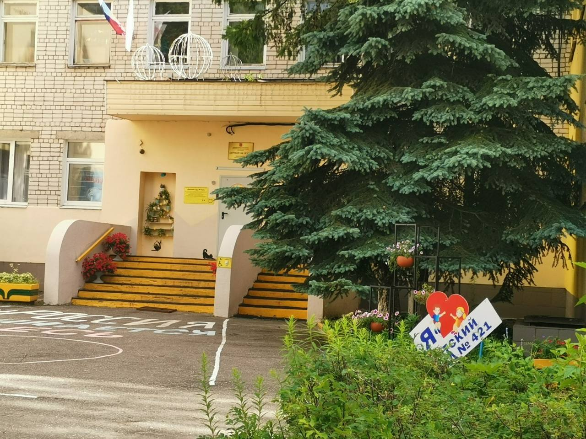
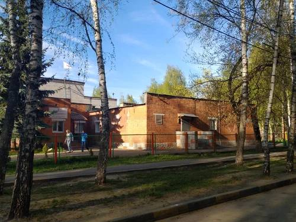

О практике
Педагогическая практика — важнейший этап подготовки будущего воспитателя. Она позволяет применить теоретические знания на деле, познакомиться с реальной жизнью детского сада и сформировать профессиональные умения работы с детьми старшего дошкольного возраста. Практика проходила в двух дошкольных учреждениях Нижнего Новгорода: в детском саду № 421 (практика 2) и в детском саду № 122 (практика 3).
Старший дошкольный возраст (5–7 лет) — особенный период в жизни ребёнка. Дети этого возраста уже умеют договариваться друг с другом, подолгу играть в сложные сюжетные игры, задавать множество вопросов о том, как устроен мир, и с интересом готовятся к школе. Задача воспитателя — поддерживать детскую инициативу, не подменяя её готовыми решениями, и создавать вокруг ребёнка развивающую, безопасную и доброжелательную среду.
Работа в детском саду строится на федеральной образовательной программе дошкольного образования и федеральном государственном образовательном стандарте дошкольного образования (ФГОС ДО). Эти документы определяют, чему и как учить детей, как организовать пространство группы, как взаимодействовать с семьями и как оценивать условия, в которых растёт ребёнок. В ходе практики они стали не просто текстом из учебника, а ежедневным рабочим инструментом.
Важная часть практики — наблюдение. Прежде чем что-то проводить самой, необходимо внимательно посмотреть, как опытный воспитатель встречает детей утром, как переключает их с игры на занятие, как мирит спорящих, как организует одевание на прогулку и как заканчивает день. Наблюдения записываются в дневник практики и затем обсуждаются с наставником и руководителем.
Закрепление теории на практике
Применение знаний по педагогике, психологии и методикам дошкольного образования в реальной образовательной среде.
Профессиональные умения
Формирование навыков организации образовательной деятельности, режимных моментов, игровой и продуктивной деятельности детей.
Наблюдение и анализ
Изучение индивидуальных особенностей детей старшей группы, ведение наблюдений и педагогической документации.
Взаимодействие с коллективом
Работа в команде воспитателей, специалистов и родителей, освоение норм профессиональной этики педагога.
Образовательные области
Содержание работы с детьми старшей группы строится вокруг пяти образовательных областей. Они не существуют отдельно друг от друга: хорошее занятие почти всегда затрагивает сразу несколько направлений.
Социально-коммуникативное развитие
Формирование представлений о нормах и правилах поведения, дружеских отношениях, безопасности дома, на улице и в природе. Сюда входят сюжетно-ролевые игры, трудовые поручения, дежурство по столовой и уголку природы, беседы о добрых поступках и о том, как поступить в трудной ситуации.
Познавательное развитие
Развитие любознательности, элементарных математических представлений, конструирования, знакомство с окружающим миром, природой, профессиями, родным городом и страной. Дети считают, сравнивают, измеряют, ставят простые опыты и учатся объяснять, почему происходит то или иное явление.
Речевое развитие
Обогащение словаря, развитие связной речи, звуковой культуры речи, подготовка к обучению грамоте. Дети пересказывают тексты, составляют рассказы по картинкам, придумывают истории, разучивают стихи и скороговорки, играют в словесные игры.
Художественно-эстетическое развитие
Рисование, лепка, аппликация, конструирование из бумаги и природного материала, музыка, пение, ритмика. Особое внимание уделяется тому, чтобы работы детей не были копиями образца: каждый ребёнок учится выбирать цвет, форму и сюжет по своему замыслу.
Физическое развитие
Утренняя гимнастика, подвижные игры, физкультурные занятия, закаливание, формирование культурно-гигиенических навыков и представлений о здоровом образе жизни. Старшие дошкольники осваивают более сложные движения, учатся действовать в команде и соблюдать правила игры.
Режим дня старшей группы
Чёткий и повторяющийся режим помогает детям чувствовать себя спокойно и уверенно: они заранее знают, что будет дальше. Ниже — примерная структура дня в старшей группе. Точное время в каждом детском саду свой, оно зависит от расписания занятий специалистов, работы кухни и прогулочных участков.
Документация и планирование
Работа воспитателя — это не только живое общение с детьми, но и серьёзная подготовительная и отчётная работа. Во время практики я знакомилась с основными документами группы и училась вести собственные материалы.
- Календарно-тематический план — распределение тем недели, занятий, игр и наблюдений по дням.
- Конспекты занятий — цель, задачи, материалы, ход занятия, вопросы детям, ожидаемый результат.
- Дневник практики — ежедневные записи о том, что было сделано, что получилось и что стоит улучшить.
- Наблюдения за детьми — краткие заметки об интересах, трудностях и успехах отдельных воспитанников.
- Картотеки игр — подвижных, дидактических, речевых, пальчиковых, на внимание и память.
- Анализ проведённых занятий — самоанализ и обсуждение с наставником и руководителем практики.
Взаимодействие с родителями
Детский сад и семья — союзники в воспитании ребёнка. Родители лучше всех знают своего малыша, а воспитатель видит его среди сверстников и может заметить то, что дома остаётся в тени. Поэтому открытое и уважительное общение с семьёй — часть профессии.
- Ежедневные короткие разговоры при встрече и прощании: как прошёл день, что понравилось ребёнку.
- Родительские уголки с информацией о темах недели, меню, режиме и рекомендациях специалистов.
- Консультации и памятки: подготовка к школе, безопасность на дороге, закаливание, сон и режим.
- Совместные праздники, выставки детского творчества, акции и конкурсы, в которых участвуют семьи.
- Чаты и родительские собрания для обсуждения организационных вопросов.
Принципы работы с детьми
Педагогическая практика
Старшая возрастная группа
Руководитель практики: Бугрова Валентина Ивановна
Муниципальное автономное дошкольное образовательное учреждение «Детский сад № 421»
Самостоятельная организация образовательной деятельности: подготовка и проведение занятий, игровых ситуаций и праздников под руководством опытного воспитателя. Практика проходила в детском саду № 421 на улице Ивана Чугурина, дом 9.

О детском саде
Детский сад № 421 находится в Сормовском районе Нижнего Новгорода по адресу: улица Ивана Чугурина, дом 9. Это муниципальное дошкольное образовательное учреждение, в котором воспитываются дети от раннего до старшего дошкольного возраста. Здание двухэтажное, группы расположены в отдельных помещениях с игровыми, спальными и раздевальными комнатами.
Работа учреждения строится по образовательной программе дошкольного образования, разработанной на основе федеральной программы и ФГОС ДО. Помимо основных занятий, в детском саду проводятся праздники и развлечения, участие в районных и городских конкурсах, акции по безопасности дорожного движения, выставки детского творчества и спортивные мероприятия.
Особое внимание в саду уделяется безопасности детей: регулярно проходят тренировочные эвакуации, беседы по правилам дорожного движения и пожарной безопасности, встречи с представителями служб города. Всё это помогает детям с раннего возраста усваивать правила, от которых зависят их здоровье и жизнь.
Задачи практики
- Составлять конспекты занятий по разным образовательным областям
- Проводить фрагменты и целые занятия со старшей группой
- Организовывать сюжетно-ролевые и дидактические игры
- Анализировать результаты своей деятельности вместе с наставником
- Подбирать наглядный и раздаточный материал к занятиям
- Учитывать возрастные и индивидуальные особенности детей при планировании
Виды деятельности
- Проведение занятий по развитию речи и математике
- Организация продуктивной деятельности (рисование, аппликация, лепка)
- Подготовка и проведение досугов и праздников
- Ведение дневника практики и педагогических наблюдений
- Организация прогулок, подвижных игр и наблюдений в природе
- Помощь детям в режимных моментах: одевание, умывание, приём пищи
Чему научила эта практика
- Как выстроить занятие так, чтобы детям было интересно от начала до конца
- Как удерживать внимание группы и мягко возвращать отвлёкшихся детей
- Как находить подход к застенчивым и к слишком активным детям
- Как анализировать собственные ошибки и использовать советы наставника
Конспекты и планирование (24)
планирование на 24.02
-В первый день практики мы познакомились с базой практики,беседа с заведующей МАДОУ, анализ сайта.В МАДОУ 10 групп разного возраста, 2 музыкальных руководителя,2 руководителя физо,логопед и др.В ДОУ создана предметно-развивающая среда во всех возрастных группах в соответствии с ФОП. В МАДОУ имеется физкультурный,музыкальный залы,бассейн /сауна.Образовательную работу осуществляют воспитатели высшей и первой категории:руководитель Емельяненко Е.М., 2 заместителя Голубина Д.Б , Шарутина Н.В.. В МАДОУ предоставляется дополнительные платные услуги для детей: танцы,шахматы, английский и другие.
-Анализ сайта позволил определить основные нормативно-правовые документы: устав, лицензия, свидетельство о государственной аккредитации,регламентирующие деятельность МАДОУ. Основными локальными нормативными актами МАДОУ объявляется внутренний устав, кодекс педагогической этики, правила внутреннего трудового распорядка, коллективный договор и отчеты о результатах самообследования.В структуре МАДОУ есть педагогический совет регламентирующий задачи с детьми и родителями.
планирование на 25.02
-Наблюдение ,анализ работы воспитателя. Ознакомление с понятием «режим дня». Режим- научно-обоснованное рациональное распределение по времени и последовательности деятельности и отдыха детей. В данной возрастной группе режим соответствует возрасту и ФОП.
-Воспитатель при проведение РМ учитывает принцип постепенности: последовательность РМ (прием,гимнастика, умывание, подготовка к завтраку,завтрак,занятия(поседки),второй завтрак, одевание,подготовка к прогулке,прогулка,раздевание,умывание,подготовка к обеду,обед,укладывание ко сну). Воспитатель с учетом этого принципа готовит детей,давая им установку(например«сейчас идем умываться») к постепенному переходу на РМ. Принцип постепенности осуществляется и в организации воспитателя на режимные процессы: приглашает умываться сначала детей,которые едят медленно. В режиме прослеживается и принцип постоянства,соблюдается последовательность РМ,но меняется время сна, бодрствования.В процессе РМ воспитатель осуществляет работу по формированию КГ навыков.
планирование на 26.02
Наблюдение за работой воспитателя .Анализ культурно-гигиенических навыков в своей возрастной группе.Анализ утренней гимнастики.
Анализ утренней гимнастики.
-Все структурные части гимнастики выдержаны,в первой части были выделены несколько видов ходьбы:ходьба на носках,на пятках,с подниманием колена.Хорошо,что использовались строевые команды ,обращалось внимание на осанку и дыхание,педагог использовал указания. Предложения при использовании разных видов ходьбы чередовать с обычной ходьбой.Перестроение в колонны для выполнения упражнений соответствовало возрасту.Упражнения подобраны для всех групп мышц в правильной последовательности.Воспитатель обращала внимание на качество выполнения,используя указания и напоминания.Была соблюдена дозировка каждого упражнения правильно из разного исходного положения.
Рекомендации и пожелания:
-Соблюдать алгоритм выполнения упражнений:названия,исходное положение,выполнение,сначала ознакомить с алгоритмом, а потом команда выполнения детей
Заканчиваем в заключительной части через спокойную ходьбу и восстановлением дыхания. Гимнастика выдержана по времени соответствует возрастных особенностям.
Анализ культурно-гигиенических навыков:
Наблюдение и анализ показали,что у детей старшей группы сформированы следующие кгн:умывание,одевание и раздевание,культура еда.
УМЫВАНИЕ:
Воспитатель использует эффективные методы и приемы соответсвующие возрастным и индивидуальным особенностям детей:вопрос,указания ,оценка ,контроль.Необходимо планировать индивидуальную работу с иваном и полиной по формированию навыка(отжимать руки после мытья рук).
КУЛЬТУРА ЕДЫ:
Дети сели за накрытые столы,сервировка стола соответствовала:салфетки,приборы,и тп. Воспитатель следила за осанкой,используя напоминания всех детям и индивидуальные.Воспитатель использует приемы вопросы,указания..Воспитатель активизирует словарь детей за счет названий блюд .В режимных моментах использует художественное слово:потешки, стишки и тп. Воспитатель организует работу дежурных по столовой ,закрепляет умение сервировать стол.
ОДЕВАНИЕ И РАЗДЕВАНИЕ:
Дети сами одеваются и раздеваются в определенной последовательности. Они умеют застегивать пуговицы, молнии, кнопки и липучки. Сложные задачи: Главная трудность в этом возрасте — завязывание шнурков. Большинство детей к концу старшей группы начинают осваивать этот навык, но многим еще требуется помощь.Ребенок умеет аккуратно складывать одежду в шкафчик, вешать куртку на крючок и следить за чистотой своей обуви.
ПЛАНИРОВАНИЕ НА 27.02
Самостоятельное проведение режимных моментов (умывание)
Время: 8:15
Приглашаю детей в умывальную комнату учитывая принцип постепенности:
Воспитатель спокойным голосом приглашает первую подгруппу детей: «Ребята, пора умываться. Сначала пойдут те, кто сидит у окна».
После того как первая подгруппа начала процесс умывания, через 2–3 минуты приглашается вторая подгруппа: «Теперь идём умываться те, кто сидит у двери».
Задачи:
1)Закреплять кгн умывания:учить правильно мыть руки и лицо,отжимать руки после мытья от воды, формировать навык вытирания лица и рук своим полотенцем насухо;
2)Закреплять культурные навыки:воспитывать умение обращаться за помощью к взрослым или сверстникам в случае затруднений («Помогите, пожалуйста»);развивать привычку благодарить («Спасибо»);
3)Активизировать словарь детей за счет умывальных принадлежностей:мыло, полотенце, раковина, кран, пена, вода, тепло, холодно;
4)Использовать худ слово:
Водичка, водичка,
Умой моё личико,
Чтобы глазки блестели,
Чтобы щёчки краснели,
Чтоб смеялся роток,
Чтоб кусался зубок!
Методы и приемы:
Напоминания-«Не забываем закрывать кран», «Тщательно смываем мыло», «Вытираем руки насухо». вопрос-«Что мы делаем сначала?», «Как понять, что руки уже чистые?», «Куда нужно повесить полотенце после использования?». ,оценка-похвала за правильные действия («Молодец, Саша, ты хорошо закрыл кран!»), тактичные замечания при ошибках («Маша, посмотри, у тебя мыло не до конца смыто, давай ещё раз сполоснём руки»).,общие указания всем детям-«Все берём свои полотенца», «Сначала намочим руки, потом намылим», «После умывания аккуратно складываем полотенце».
Индивидуальная работа с Полиной
Задача:закрепить навык закрывать кран после умывания.
Приемы:
1.Напоминание перед началом умывания: «Полина, сегодня ты будешь особенно внимательно следить за краном. Помнишь, что нужно сделать после того, как смыл мыло?».
2.Контроль в процессе умывания: воспитатель наблюдает за действиями Полины и, если видит, что ребёнок забыл закрыть кран, мягко напоминает: «Полина, посмотри на кран. Что нужно сделать?».
3.Вопрос для осознания действия: «Зачем мы закрываем кран?».
4.Похвала при правильном действии: «Молодец, Полина, ты не забыл закрыть кран! Так мы экономим воду».
планирование на 7.04
САМОСТОЯТЕЛЬНОЕ ПРОВЕДЕНИЕ РЕЖИМНЫХ МОМЕНТОВ
УТРО:
Проведение игр‑этюдов
Первая серия игр "Представь,что ты..." (например:пылесосить, мыть тарелку, вытирать пыль, вешать бельё, поливать цветы).
Цель: развитие воображения и пантомимических навыков, формирование представлений о бытовых действиях, воспитание уважения к труду.
Методы и приёмы:
1.Создание интереса:«Ребята, сегодня мы превратимся в маленьких помощников! Кто хочет показать, как он помогает маме дома? Давайте изобразим разные домашние дела без слов — только движениями!
2.Проблемная ситуация:«Ой, у нас случилась беда — все звуки в комнате пропали! Как же мы покажем, что пылесосим, не издавая звуков? А как показать, что моешь тарелку, если нельзя говорить? Давайте попробуем!»
3.Объяснение действий: краткое объяснение, какие движения соответствуют каждому действию:пылесосить — толкать воображаемый пылесос вперёд‑назад, слегка наклонившись;мыть тарелку — круговые движения руками, имитируя намыливание и ополаскивание;вытирать пыль — плавные движения рукой по поверхности и тп.
4.Показ воспитателя; проведение этюда(примеры): Этюд «Пылесосим»: воспитатель медленно идёт по комнате, толкает перед собой воображаемый пылесос, делает вид, что переключает режимы, наклоняется, чтобы пропылесосить под столом.
Этюд «Моем тарелку»: берёт воображаемую тарелку, намыливает, ополаскивает, ставит на сушку.
5.Проведение этюдов детьми: дети по очереди или парами показывают действия:«Покажи, как ты помогаешь маме вытирать пыль».«Изобрази, что ты поливаешь цветы на подоконнике».«Покажи, как вешаешь носочки на верёвку.
6.Поощрения в ходе игры: похвала за выразительность и точность движений («Отлично, Вика, ты так аккуратно повесила носочки!», «Мирон, ты так старательно пылесосил, я почти услышала звук пылесоса!»).
7.Анализ и оценка: обсуждение с детьми, какие действия было легче/труднее показать, что помогло передать действие без слов. Похвала тем, кто справился особенно хорошо, с указанием конкретных достижений.
ПРОВЕДЕНИЕ УТРЕННЕЙ ГИМНАСТИКИ:
Цель: укрепление здоровья детей, создание положительного эмоционального настроя на весь день, развитие координации и моторики.
Задачи:
1.Активизировать сердечно‑сосудистую и дыхательную системы;
2.Развивать гибкость и силу мышц;
3.Формировать правильную осанку;
4.Воспитывать интерес к физическим упражнениям;
5.Закреплять навыки выполнения упражнений в заданном темпе и ритме.
СМ ПРИЛОЖЕНИЕ 1.
УМЫВАНИЕ:
Время: 8:15
Приглашаю детей в умывальную комнату учитывая принцип постепенности:
Воспитатель спокойным голосом приглашает первую подгруппу детей: «Ребята, пора умываться. Сначала пойдут те, кто сидит у окна».
После того как первая подгруппа начала процесс умывания, через 2–3 минуты приглашается вторая подгруппа: «Теперь идём умываться те, кто сидит у двери».
Задачи:
1)Закреплять кгн умывания:учить правильно мыть руки и лицо,отжимать руки после мытья от воды, формировать навык вытирания лица и рук своим полотенцем насухо;
2)Закреплять культурные навыки:воспитывать умение обращаться за помощью к взрослым или сверстникам в случае затруднений («Помогите, пожалуйста»);развивать привычку благодарить («Спасибо»);
3)Активизировать словарь детей за счет умывальных принадлежностей:мыло, полотенце, раковина, кран, пена, вода, тепло, холодно;
4)Использовать худ слово:
Водичка, водичка,
Умой моё личико,
Чтобы глазки блестели,
Чтобы щёчки краснели,
Чтоб смеялся роток,
Чтоб кусался зубок!
Методы и приемы:
Напоминания-«Не забываем закрывать кран», «Тщательно смываем мыло», «Вытираем руки насухо».
Вопрос-«Что мы делаем сначала?», «Как понять, что руки уже чистые?», «Куда нужно повесить полотенце после использования?».
Оценка-похвала за правильные действия («Молодец, Саша, ты хорошо закрыл кран!»), тактичные замечания при ошибках («Маша, посмотри, у тебя мыло не до конца смыто, давай ещё раз сполоснём руки»).
Общие указания всем детям-«Все берём свои полотенца», «Сначала намочим руки, потом намылим», «После умывания аккуратно складываем полотенце».
ЗАВТРАК:
Задачи:
1.Формировать навыки культурного поведения за столом;
2.Закреплять правила гигиены перед едой (мыть руки);
3.Воспитывать аккуратность во время приёма пищи;
4.Развивать умение пользоваться столовыми приборами;
5.Создавать благоприятную атмосферу во время приёма пищи.
Методы и приёмы:
1.Использование художественного слова:«Спинки ровно, глазки в стол,
Ложка в руки — есть бегом!»
2.Напоминания: «Сидим ровно, не разговариваем во время еды», «Едим аккуратно, не крошим», «Ложку держим правильно».
3.Поощрение: похвала за аккуратность, самостоятельность («Какой ты молодец, сам взял ложку и ешь аккуратно!», «Маша, ты очень аккуратно ешь, молодец!»).
4.Пример воспитателя: воспитатель напоминает о правилах и показывает их на собственном примере.
Планирование индивидуальной работы по ФИЗО
ПРИВЛЕЧЬ: Коля, Ясна, Василиса.
Цель: закрепление навыка равновесия при ходьбе по прямой.
Задачи:
1.Закрепить технику ходьбы приставным шагом по намеченной линии (ширина 15–20 см).
2.Развивать старательность и целеустремлённость при выполнении задания.
3.Воспитывать интерес к физическим упражнениям через игровые ситуации.
Методы и приемы:
1.Проблемно‑игровая ситуация:
«Ребята, перед нами волшебный мост, который нужно пройти очень осторожно, чтобы не упасть в реку. Идём приставным шагом, смотрим вперёд, держим равновесие! Кто пройдёт без ошибок, получит волшебную звёздочку!»
2.Объяснение и показ воспитателя: показать правильную технику ходьбы (нога ставится с носка, руки в стороны для баланса, взгляд вперёд), продемонстрировать ошибки (слишком широкие шаги, раскачивание).
3.Поощрение: хвалить за устойчивость, плавность движений («Отлично, Василиса, ты идёшь очень уверенно, не качаешься!», «Ясна, ты почти не качалась, молодец, держи звёздочку!»).
4.Анализ и оценка: после выполнения задания обсудить с детьми, что было сложно, что легко. Отметить тех, кто справился лучше всех, и тех, кто старался.
Планирование подвижной игры
Название: «Ловишки с ленточками».
Цель: развитие быстроты реакции, ловкости, координации движений.
Задачи:
1.Упражнять в беге с увертыванием;
2.Развивать внимание и ориентировку в пространстве;
3.Воспитывать доброжелательные отношения в игре;
4.Учить соблюдать правила игры.
Методы и приёмы:
1.Сбор на игру
2.Объяснение правил: кратко и понятно рассказать, что нужно делать («Ловишка будет догонять вас и пытаться выдернуть ленточку. Кто останется с ленточкой — победил!»).
3.Распределение ролей: выбрать ловишку с помощью считалки-
Плыл по морю чемодан,
В чемодане был диван,
А в диване спрятан слон.
4.Контроль за соблюдением правил: следить, чтобы дети не толкались, играли честно, не дёргали за ленточки слишком сильно.
5.Поощрение и поддержка: хвалить активных участников, подбадривать тех, кто стесняется («Матвей, ты так быстро бегаешь, молодец!», «Вика, не бойся, ты отлично уворачиваешься!»).
6.Анализ игры: обсудить, кто был самым ловким, что помогло увернуться от ловишки. Похвалить всех за участие, отметить тех кто лучше всего играл и следовал правилам.
ПРИЛОЖЕНИЕ 1.
Анализ утренней гимнастики.
Все структурные части гимнастики выдержаны правильно.
В вводной части были выделены несколько видов ходьбы:ходьба на носках,на пятках,с подниманием колена.Использовались строевые команды ,обращалось внимание на осанку и дыхание, использовались указания. При использовании разных видов ходьбы с заданием чередовались с обычной ходьбой.
В основной части перестроение в колонны для выполнения упражнений соответствовало возрасту.Упражнения подобраны для всех групп мышц в правильной последовательности.Воспитатель обращала внимание на качество выполнения,используя указания и напоминания.Была соблюдена дозировка каждого упражнения правильно из разного исходного положения.
В заключительной части заканчиваем через спокойную ходьбу и восстановлением дыхания. Гимнастика выдержана по времени соответствует возрастных особенностям.
планирование на 08.04
АНАЛИЗ ГИМНАСТИКИ ПРОБУЖДЕНИЯ
Комплекс составлен методически правильно,включал 3 блока,что соответствует возрастным особенностям детей:1 корректирующая гимнастика в кроватях(подтягивания, растирание рук и ног,вращение стоп, 2 упражнения на поворот головы из положения сидя)
2 самомассаж(к сожалению самомассаж отсутствовал) 3 ходьба по дорожках здоровья с дыхательными упражнениями(30 40 секунд). Это обеспечивало точечное воздействие на рефлекторные зоны.Пробуждение проводилось постепенно с использованием художественного слова( например:«Потягуши»:
«Потягушки, потягушки,
Растянулись по подушке.
Ручки — вверх, ножки — вширь,
Вот какой богатырь!» ,
что способствовало повышению эмоционального отклика детей. Команды подавались мягким спокойным голосом,показ упражнений был с проговариванием.
Планирование на 09.04
САМОСТОЯТЕЛЬНО ПРОВЕДЕНИЕ РМ, ГИМНАСТИКИ ПРОБУЖДЕНИЯ,ЗАКАЛИВАЮЩИХ ПРОЦЕДУР,ИНД РАБОТЫ ПО ФИЗО, ИГРЫ
КОМПЛЕКС ГИМНАСТИКИ ПРОБУЖДЕНИЯ
Цель: поднимание настроения и мышечного тонуса детей, а также обеспечение профилактики нарушений осанки и предупредить плоскостопие.
Задачи:
Способствовать постепенному переходу от сна к бодрствованию.
Проводить профилактическую работу по укреплению свода стопы и формированию правильной осанки
Продолжать учить следить за дыханием.
Воспитывать осознанное отношение к сохранению и укреплению своего здоровья, укреплять здоровье детей.
СМ ПРИЛОЖЕНИЕ 2
Ходьба по дорожкам здоровья-30-40 секунд
ОДЕВАНИЕ
Задачи:
1.Закреплять умение обращаться за помощью к товарищам и оказывать помощь сверстникам.
2.Совершенствовать навыки самостоятельного одевания в правильной последовательности.
3.Развивать мелкую моторику через застёгивание пуговиц, молний, липучек.
4.Воспитывать бережное отношение к одежде.
Приемы:
1.Совместное одевание: «Коля, помоги Маше застегнуть платье, а ты, Маша, помоги Коле завязать шнурки».
2.Поощрение: «Вижу, что Саша помог Кате завязать шарф — какой ты внимательный друг!»
3.Напоминание: «Сначала надеваем колготки, затем — носки, потом — футболку, кофту и т. д.»
4.Вопрос: "Платон,что ты забыл сделать?"
УМЫВАНИЕ
Задачи:
1.Закреплять кгн умывания:учить правильно мыть руки и лицо,отжимать руки после мытья от воды, формировать навык вытирания лица и рук своим полотенцем насухо;
2.Закреплять культурные навыки:воспитывать умение обращаться за помощью к взрослым или сверстникам в случае затруднений («Помогите, пожалуйста»);развивать привычку благодарить («Спасибо»);
3.Активизировать словарь детей за счет умывальных принадлежностей:мыло, полотенце, раковина, кран, пена, вода, тепло, холодно;
4.Использовать худ слово:
Водичка, водичка,
Умой моё личико,
Чтобы глазки блестели,
Чтобы щёчки краснели,
Чтоб смеялся роток,
Чтоб кусался зубок!
Приемы:
Напоминания-«Не забываем закрывать кран», «Тщательно смываем мыло», «Вытираем руки насухо».
Вопрос-«Что мы делаем сначала?», «Как понять, что руки уже чистые?», «Куда нужно повесить полотенце после использования?».
Оценка-похвала за правильные действия («Молодец, Саша, ты хорошо закрыл кран!»), тактичные замечания при ошибках («Маша, посмотри, у тебя мыло не до конца смыто, давай ещё раз сполоснём руки»).
Общие указания всем детям-«Все берём свои полотенца», «Сначала намочим руки, потом намылим», «После умывания аккуратно складываем полотенце».
ПОЛДНИК
Закрепляю умение у дежурных сервировать стол,аккуратно,класть приборы справа выпуклой стороной на стол,салфетки на середину стола
Задачи:
1.Закреплять навык отламывать по кусочку от сырников и есть по частям.
2.Закреплять умение пользоваться салфеткой по необходимости
3.Формировать навыки культурного поведения за столом;
4.Закреплять правила гигиены перед едой (мыть руки);
5.Воспитывать аккуратность во время приёма пищи;
Приемы:
1.Использование художественного слова:«Спинки ровно, глазки в стол,
Ложка в руки — есть бегом!»
2.Напоминания: «Сидим ровно, не разговариваем во время еды», «Едим аккуратно, не крошим», «Ложку держим правильно».
3.Поощрение: похвала за аккуратность, самостоятельность («Какой ты молодец, сам взял ложку и ешь аккуратно!», «Маша, ты очень аккуратно ешь, молодец!»).
4.Пример воспитателя: воспитатель напоминает о правилах и показывает их на собственном примере.
Индивидуальная работа по ФИЗО
ПРИВЛЕЧЬ: Полина, Ясна, Дима.
Цель: закрепление навыка равновесия при ходьбе по прямой.
Задачи:
1.Закрепить технику ходьбы приставным шагом по намеченной линии (ширина 15–20 см).
2.Развивать старательность и целеустремлённость при выполнении задания.
3.Воспитывать интерес к физическим упражнениям через игровые ситуации.
Методы и приемы:
1.Проблемно‑игровая ситуация:
«Ребята, перед нами волшебный мост, который нужно пройти очень осторожно, чтобы не упасть в реку. Идём приставным шагом, смотрим вперёд, держим равновесие! Кто пройдёт без ошибок, получит волшебную звёздочку!»
2.Объяснение и показ воспитателя: показать правильную технику ходьбы (нога ставится с носка, руки в стороны для баланса, взгляд вперёд), продемонстрировать ошибки (слишком широкие шаги, раскачивание).
3.Поощрение: хвалить за устойчивость, плавность движений («Отлично, Полина, ты идёшь очень уверенно, не качаешься!», «Ясна, ты почти не качалась, молодец, держи звёздочку!»).
4.Анализ и оценка: после выполнения задания обсудить с детьми, что было сложно, что легко. Отметить тех, кто справился лучше всех, и тех, кто старался.
Планирование сюжетно-ролевой игры "Магазин"
Задачи:
Развитие сюжета:
Развивать, обогащать сюжет игры
Учить готовить обстановку для игры.
Отображать в игре взаимодействие, общение людей (не предметную, а социальную сторону – общение).
Развитие игры как деятельности (цель, мотив, средства, способы, результат)
Совершенствовать выполнение задач предыдущей группы (придумывать несложный сюжет, выбирать роль, выполнять несколько взаимосвязанных действий; совершенствовать предметные действия: игрушки-заместители, воображаемые).
Ролевые высказывания заменять ролевой беседой (со взрослыми и сверстниками); формировать умение длительной игры.
Формирование взаимоотношений
Формирование положительных взаимоотношений между детьми.
Развивать умения у детей считаться с интересами товарищей, оказывать им посильную помощь.
От индивидуальных переходить к коллективным играм.
Формирование самостоятельности и творчества
Развивать самостоятельность в выборе игры, поощрять самостоятельность возникновения игровых группировок.
Подводить к самостоятельности игровых замыслов, проявлениям творчества в использовании игровых способов (жесты, мимика, движения).
Методика руководства
I. Компонент "Ознакомление с окружающим обогащением реального опыта"
Наблюдение за работой продавцов
Наблюдение в чем одеты продавцы
Беседа "Куда мы ходим за продуктами?"
II. Компонент "Обогащение игрового опыта. Дидактические игры"
Малоподвижная игра "Съедобное-несъедобное"
III. Компонент "Обогащение игровой среды"
Сюжетно-образные игрушки:
Муляж фруктов
Муляж овощей
Муляж цветов
Детские книги
касса
деньги
IV. Компонент "Руководство в ходе самостоятельной игровой деятельности"
Создание проблемной ситуации:
" Ребята, у меня сегодня день рождения я пригласил много гостей, но в холодильнике пусто. Что мне делать, как мне быть? Где продукты раздобыть? "
2.Помощь в распределение ролей – с помощью волшебной палочки или по считалке.
3.Напоминание:
"Дети, а вы помните как вы с родителями ходили в разные магазины…?"
Анализ игры
После того как дети закончили играть "Дети можно спросить…
Кто кем у вас был, я так и не поняла?
Это в какую игру вы играли?
Вам понравилось в нее играть?
А кто еще может играть в этой игре? – охранник, помощник продавца, уборщик
ПРИЛОЖЕНИЕ 2
планирование на 10.04
САМОСТОЯТЕЛЬНОЕ ПРОВЕДЕНИЕ РЕЖИМНЫХ МОМЕНТОВ
УТРО
ПРОВЕДЕНИЕ ИГР ЭТЮДОВ
Цель: развитие воображения и пантомимических навыков, формирование представлений о бытовых действиях и их противоположностях, воспитание уважения к труду, развитие способности к контрастному мышлению.
Задачи:
1.Научить детей через пантомиму передавать суть действий и их противоположностей;
2.Развить внимание к деталям и способность замечать нюансы движений;
3.Способствовать развитию коммуникативных навыков через невербальное общение;
4.Закрепить понимание противоположностей в бытовых ситуация
Методы и приемы:,
1.Создание интереса:«Ребята, сегодня мы снова превратимся в маленьких помощников! Но у нас будет особое задание: мы будем показывать не просто домашние дела, а ещё и то, что бывает наоборот. Например, не вешать бельё, а снимать его. Кто готов попробовать?»
2.Проблемная ситуация:«Представьте, что в волшебной комнате всё работает наоборот! Если обычно мы поливаем цветы, то здесь нужно показать, как мы их… осушаем. А если обычно мы вытираем пыль, то здесь — как мы её наводим. Как же это сделать без слов? Давайте попробуем!»
Объяснение концепции противоположных действий:Кратко объяснить детям, что такое противоположные действия, привести примеры:
вешать бельё → снимать бельё;
поливать цветы → осушать цветы (вынимать из горшка, промокать салфеткой);
вытирать пыль → наводить пыль (разбрасывать воображаемую пыль)
3.Демонстрация этюдов воспитателем
Показать несколько примеров с чётким контрастом:
этюд «Вешаем бельё» → «Снимаем бельё»:
вешаем: аккуратно цепляем прищепкой на верёвку, разглаживаем;
снимаем: быстро снимаем, комкаем в руках
4.Проведение этюдов детьми
Дети выполняют задания по очереди или парами. Варианты заданий:
«Покажи, как ты вешаешь носки на верёвку, а потом как снимаешь их».
«Изобрази, что ты поливаешь цветы, а потом — что ты их осушаешь».
5.Поощрения в ходе игры: «Отлично, Лиза, ты так аккуратно вешала носочки, а потом так быстро их сняла — сразу видно, что это противоположные действия!»
6.Анализ и оценка
Обсуждение с детьми:
Какие действия было легче показать — обычные или противоположные? Почему?
-Что помогло передать действие без слов? (движения, мимика, жесты)
ПРОВЕДЕНИЕ УТРЕННЕЙ ГИМНАСТИКИ:
Цель: укрепление здоровья детей, создание положительного эмоционального настроя на весь день, развитие координации и моторики.
Задачи:
1.Активизировать сердечно‑сосудистую и дыхательную системы;
2.Развивать гибкость и силу мышц;
3.Формировать правильную осанку;
4.Воспитывать интерес к физическим упражнениям;
5.Закреплять навыки выполнения упражнений в заданном темпе и ритме.
СМ ПРИЛОЖЕНИЕ 1.
УМЫВАНИЕ:
Время: 8:15
Приглашаю детей в умывальную комнату учитывая принцип постепенности:
Воспитатель спокойным голосом приглашает первую подгруппу детей: «Ребята, пора умываться. Сначала пойдут те, кто сидит у окна».
После того как первая подгруппа начала процесс умывания, через 2–3 минуты приглашается вторая подгруппа: «Теперь идём умываться те, кто сидит у двери».
Задачи:
1)Закреплять кгн умывания:учить правильно мыть руки и лицо,отжимать руки после мытья от воды, формировать навык вытирания лица и рук своим полотенцем насухо;
2)Закреплять культурные навыки:воспитывать умение обращаться за помощью к взрослым или сверстникам в случае затруднений («Помогите, пожалуйста»);развивать привычку благодарить («Спасибо»);
3)Активизировать словарь детей за счет умывальных принадлежностей:мыло, полотенце, раковина, кран, пена, вода, тепло, холодно;
4)Использовать худ слово:
Водичка, водичка,
Умой моё личико,
Чтобы глазки блестели,
Чтобы щёчки краснели,
Чтоб смеялся роток,
Чтоб кусался зубок!
Методы и приемы:
Напоминания-«Не забываем закрывать кран», «Тщательно смываем мыло», «Вытираем руки насухо».
Вопрос-«Что мы делаем сначала?», «Как понять, что руки уже чистые?», «Куда нужно повесить полотенце после использования?».
Оценка-похвала за правильные действия («Молодец, Саша, ты хорошо закрыл кран!»), тактичные замечания при ошибках («Маша, посмотри, у тебя мыло не до конца смыто, давай ещё раз сполоснём руки»).
Общие указания всем детям-«Все берём свои полотенца», «Сначала намочим руки, потом намылим», «После умывания аккуратно складываем полотенце».
ЗАВТРАК:
Задачи:
1.Формировать навыки культурного поведения за столом;
2.Закреплять правила гигиены перед едой (мыть руки);
3.Воспитывать аккуратность во время приёма пищи;
4.Развивать умение пользоваться столовыми приборами;
5.Создавать благоприятную атмосферу во время приёма пищи.
Методы и приёмы:
1.Использование художественного слова:«Спинки ровно, глазки в стол,
Ложка в руки — есть бегом!»
2.Напоминания: «Сидим ровно, не разговариваем во время еды», «Едим аккуратно, не крошим», «Ложку держим правильно».
3.Поощрение: похвала за аккуратность, самостоятельность («Какой ты молодец, сам взял ложку и ешь аккуратно!», «Маша, ты очень аккуратно ешь, молодец!»).
4.Пример воспитателя: воспитатель напоминает о правилах и показывает их на собственном примере.
ПЛАНИРОВАНИЕ ИНДИВИДУАЛЬНОЙ РАБОТЫ ПО ФИЗО
ПРИВЛЕЧЬ: Камилла, Вика, Полина
Цель: совершенствование навыков прыжков вперёд и назад с сохранением равновесия, развитие координации и ориентировки в пространстве.
Задачи:
1.Отработать технику прыжка вперёд и назад на двух ногах;
2.Развить координацию движений и чувство равновесия;
3.Укрепить мышцы ног и корпуса;
4.Повысить интерес к выполнению физических упражнений через игровую форму;
5.Сформировать уверенность в своих силах при выполнении прыжковых упражнений.
Методы и приёмы
Проблемно‑игровая ситуация:«Полина, представь, что перед тобой волшебная река с бурным течением! Чтобы перейти на другой берег, нужно прыгать по кочкам. Но вот беда — некоторые кочки шатаются и могут отправить тебя назад! Сначала прыгай вперёд на устойчивую кочку, а если попадёшь на шатающуюся — придётся прыгнуть назад. Сможешь перебраться на другой берег и найти там клад? Давай попробуем!»
2.Объяснение и показ воспитателя(демонстрирует технику прыжков и комментирует):«Смотри внимательно, Камилла. Вот как нужно прыгать:..."
Выполнение упражнения ребёнком с индивидуальным сопровождением:Ребёнок выполняет прыжки, воспитатель даёт подсказки:«Отлично,Вика, встала правильно, ноги вместе. Теперь слегка присядь… да, вот так. Отталкивайся двумя ногами… молодец, прыгнул вперёд! Приземлился мягко, на обе ноги — отлично! Сохраняй равновесие… хорошо, справилась!"
4.Поощрение в ходе выполнения(Воспитатель поощряет ребёнка на каждом этапе):«Молодец, Миша, ты правильно присел перед прыжком — это очень важно!»
Анализ и оценка(После выполнения упражнения воспитатель обсуждает с ребёнком его успехи):
«Миша, расскажи, какой прыжок был для тебя сложнее — вперёд или назад? Почему?»
«Что помогало тебе сохранять равновесие во время прыжков?»
Планирование подвижной игры на прогулке «Быстрый мяч»
Цель: развитие ловкости, координации движений, быстроты реакции и навыков взаимодействия в команде через игровые действия с мячом.
Задачи:
1.Совершенствовать навыки передачи и ловли мяча;
2.Развивать пространственную ориентировку и умение быстро реагировать на сигнал;
3.Воспитывать командный дух, взаимовыручку и уважение к правилам игры;
4.Создавать положительный эмоциональный настрой во время двигательной активности;
5.Тренировать внимание и концентрацию.
Методы и приёмы:
1.Сбор на игру:«Ребята, кто любит играть с мячом? У меня есть весёлая игра — „Быстрый мяч“. Хотите попробовать? Тогда стройтесь в круг, берём по одному мячу — и начинаем!»
2.Объяснение правил:«Слушайте внимательно:мы стоим в кругу, у каждого мяч (или один мяч на двоих);по моему сигналу: „Раз, два, три — мяч лови!“ вы начинаете передавать мяч соседу справа — аккуратно, чтобы не уронить;когда я скажу: „Стоп!“, передача останавливается;тот, у кого в руках оказался мяч, делает шаг вперёд и выполняет задание (прыгает на месте 3 раза, приседает 2 раза и т. д.);затем игра продолжается.
3.Распределение ролей с помощью считалочки:«Отлично, правила все запомнили. Теперь давайте выберем водящего, который будет подавать сигналы. Для этого проведём считалку:
Раз, два, три, четыре, пять,
Будем в мяч мы играть опять.
Кто остался — тот ведёт,
Начинаем, вперёд!»
4.Контроль за соблюдением правил:В процессе игры воспитатель:
-следит за правильностью передачи мяча (аккуратно, без бросков);
-корректирует действия детей: «Маша, передавай мяч плавно, чтобы Саша успел его поймать», «Дима, не торопись, жди сигнала»;
-напоминает о взаимопомощи: «Если мяч упал, помоги поднять и продолжить игру»;
5.Поощрение и оценка:Воспитатель поощряет детей конкретными фразами:
-«Молодцы, ребята, очень аккуратно передаёте мяч!»
-«Лиза, ты так быстро среагировала на сигнал — отлично!»
6.Анализ игры:
После завершения 3–4 раундов воспитатель собирает детей и проводит обсуждение:
«Ребята, вам понравилась игра „Быстрый мяч“? Что было самым сложным: ловить мяч или быстро реагировать на сигнал?
Анализ физкультурного занятия в средней группе
•Зал был проветрен,руководитель подготовила к занятию оборудование
для его проведения: мешочки для метания,мячи,палки. Руководитель хорошо знал комплекс упражнений,технику основных движений. Занятие было выдержано по времени,соответствует возрастным особенностям. Структура занятия выдержана:вводная,ору,основная часть,заключительная.
-В вводной части использовали разные виды ходьбы,с заданиями,с использованием игровых моментов(средняя группа).
Хорошо,что обращала внимание на осанку,делая указания,напоминания и оценку.Так же руководитель в начале занятия использовала корректирующие упражнения.
-ОРУ проводились в кругу с мячами,была продумана четкое раздача мячей по ходу движения.Отмечаю,что упражнения для всех групп мышц,из разных исходных положений с соблюдением дозировки,алгоритма выполнения. Хорошо,что были использованы упражнения из положения сидя и лежа.Обращала внимания на качество выполнения, правильное исходное положение
В основной части отрабатывали технику метания мешочков в даль правой и левой рукой,ползанье по скамейке,обхватывая края руками,пряжки с места через гимнастическую палку с приземлением на всю стопу. Стоп организации на овд поточный,что способствовало высокой моторной плотности занятия. Хочется отметить эффективные приемы для качественного выполнения основных движений,использовался показ воспитателя с четким пояснением техники выполнения ОВД,что побуждало детей к правильному их выполнению. В ходе выполнения основных движений использовались приемы:напоминание техники,совместные действия,оценка правильных действий детей. В основной части проведены 2 подвижные игры высокой и средней подвижности. Они были проведены методически грамотно.
В заключительной части восстановили дыхание детей,дана оценка и анализ,качество выполнения движений,использованы поощрения и напоминания кому нужно отрабатывать основные движения в группе и какие.
Занятие проведено в хорошем темпе,методически грамотно.
ПРИЛОЖЕНИЕ 1
планирование на 11.04(анализы)
Анализ занятия по физическому развитию
Подготовка воспитателя к занятию
Занятие было тщательно спланировано и подготовлено:
План‑конспект присутствовал, включал чёткую структуру (подготовительная, основная, заключительная части), цели и задачи, перечень необходимого инвентаря.
Задачи занятия были сформулированы конкретно, с учётом возрастных особенностей детей (5–6 лет) и уровня их физической подготовленности. Содержание полностью соответствовало поставленным задачам, а части занятия логично переходили одна в другую.
Место проведения (спортивный зал) было подготовлено заранее: обеспечена безопасность, проведена влажная уборка, проветрено. Все пособия и инвентарь (мячи, обручи, гимнастические скамейки, конусы) были подготовлены, проверены на исправность и размещены в удобных для использования местах.
Одежда и обувь детей и воспитателя соответствовали требованиям: спортивная форма не стесняла движений, обувь обеспечивала надёжную фиксацию голеностопа и хорошее сцепление с полом.
Организация занятия
Организация занятия была на высоком уровне:
Занятие началось и закончилось вовремя, строго в соответствии с расписанием, общая продолжительность составила 30 минут.
Дети были организованы эффективно: использовались фронтальный и поточный способы выполнения упражнений, что позволило задействовать всех воспитанников одновременно.
Помещение и инвентарь использовались рационально: пространство зала было грамотно зонировано, оборудование задействовано максимально эффективно в разных частях занятия.
Проведение занятия
Проведение занятия соответствовало всем методическим требованиям:
Методы обучения (наглядный показ, объяснение, игровые приёмы) полностью соответствовали возрасту детей, их подготовленности, этапам обучения и характеру физических упражнений.
В ходе занятия успешно решались задачи обучения и закрепления двигательных навыков (ходьба, бег, прыжки, лазание, метание). Реализованы основные принципы обучения: систематичность, последовательность, доступность, наглядность.
Воспитатель предупреждал и своевременно исправлял ошибки у детей при выполнении упражнений, давал чёткие и понятные рекомендации по коррекции техники.
Обеспечивалась полная страховка при выполнении сложных и потенциально опасных элементов (лазанье по гимнастической стенке, прыжки в длину).
Темп выполнения упражнений варьировался от умеренного к более интенсивному и обратно, обеспечивая оптимальную нагрузку. Дозировка каждого упражнения была подобрана с учётом возраста и возможностей детей (например, прыжки — 2 серии по 10 раз, упражнения на равновесие — по 30 секунд).
Продолжительность занятия и каждой его части соответствовала нормам СанПиН: подготовительная часть — 5 минут, основная — 20 минут, заключительная — 5 минут.
Плотность занятия была высокой: моторная плотность составила около 75 %, общая плотность — около 90 %, паузы между заданиями были минимальными.
Воспитатель проявлял настойчивость и внимание, постоянно отслеживал самочувствие и настроение детей: при первых признаках усталости предлагал отдых или снижал нагрузку, поддерживал позитивный эмоциональный фон.
Требования к воспитателю
Воспитатель продемонстрировал высокий уровень профессионализма:
Качество показа физических упражнений было безупречным: движения выполнялись чётко, технически правильно, с демонстрацией всех ключевых элементов.
Воспитатель умел видеть всех детей одновременно, оперативно реагировал на нарушения дисциплины и техники безопасности, осуществлял индивидуальный контроль за выполнением заданий.
Отмечалась высокая культура речи: объяснения были краткими, понятными и доступными для детей, голос — уверенным и спокойным, тон — доброжелательным и поддерживающим.
Давалась объективная и дифференцированная оценка выполнения упражнений: отмечались успехи каждого ребёнка, давались конструктивные рекомендации.
Занятие было грамотно завершено: проведена заключительная ходьба, дыхательные упражнения, подведён итог — воспитатель похвалил детей за старание, выделил наиболее успешные моменты, создал у воспитанников чувство удовлетворения от проделанной работы.
Анализ организации приёма детей
Место проведения приёма
Приём детей осуществлялся в раздевалке группы, оборудованной индивидуальными шкафчиками для одежды и обуви каждого ребёнка. Помещение было заранее проветрено, температура соответствовала санитарно‑гигиеническим нормам (20–22 °C). Освещение — естественное (через окна) и искусственное (включены потолочные светильники), достаточное для комфортного переодевания.
Готовность группы и участка к приёму детей
Группа и участок были полностью готовы к приёму воспитанников:
Помещение убрано, проветрено, безопасные условия обеспечены (острые углы закрыты, мебель закреплена).
Раздевалка оснащена зеркалами на уровне глаз детей, скамейками, крючками для верхней одежды.
Игровая зона подготовлена: игрушки расставлены, дидактические материалы разложены на полках, доступны для свободного выбора.
Участок (при приёме на улице) убран от мусора, оборудование (качели, горки, песочница) проверено на исправность и безопасность.
Материалы для игр и занятий подготовлены заранее: настольные игры, конструкторы, материалы для творчества (карандаши, бумага, пластилин) разложены в удобных местах.
Эмоциональное состояние детей и взаимодействие с воспитателем
Большинство детей с желанием шли в группу, проявляли радость при встрече с воспитателем и сверстниками. Отмечались следующие реакции:
позитивные: улыбки, приветствия, желание поделиться новостями;
нейтральные: спокойное вхождение, сосредоточенность на переодевании;
редкие случаи лёгкой тревожности (быстро сглаживались благодаря вниманию воспитателя).
Воспитатель встречала детей у входа в раздевалку, приветствовала каждого по имени, использовала доброжелательные фразы («Доброе утро, Саша! Как твои дела?», «Маша, я рада тебя видеть!»). Внимание распределялось равномерно: каждому ребёнку уделялось 1–2 минуты личного общения, воспитатель отмечала внешний вид («Какой красивый свитер, Ваня!»), интересовалась настроением и событиями дома.
Деятельность детей и организация игр
После переодевания дети свободно выбирали занятия:
играли с игрушками (куклы, машинки, конструкторы);
занимались творчеством (рисовали, лепили);
участвовали в настольных играх (пазлы, лото);
общались со сверстниками.
Воспитатель организовывала детей следующим образом:
предлагала варианты игр («Кто хочет построить город из конструктора?», «Давайте нарисуем солнышко!»);
включалась в игровую деятельность, направляя её (помогала распределить роли в сюжетно‑ролевой игре, предлагала новые идеи);
проводила короткие подвижные игры в помещении («Найди свой цвет», «Замри — отомри»), если дети были излишне возбуждены;
беседовала с детьми о планах на день, интересных событиях, домашних питомцах, любимых мультфильмах — это способствовало созданию доверительной атмосферы.
Воспитание вежливости и внимания к товарищам
В процессе приёма особое внимание уделялось воспитанию вежливости и взаимопомощи:
воспитатель подавала пример: использовала вежливые слова («спасибо», «пожалуйста», «извини»), приветствовала детей и родителей;
поощряла детей за проявление внимания («Дима, ты помог Кате надеть сапожки — это очень заботливо!»);
направляла детей на совместные игры, учила договариваться («Саша и Миша, давайте вместе соберём этот пазл»);
обсуждала ситуации взаимопомощи («Что сделать, если друг уронил игрушки?»), формировала эмпатию и доброжелательное отношение к сверстникам.
Термометрия, осмотр и беседа о самочувствии
Процедура контроля здоровья проводилась доброжелательно и ненавязчиво:
Термометрия выполнялась бесконтактным термометром при входе в группу. Результаты фиксировались в журнале утреннего приёма.
Визуальный осмотр включал проверку состояния кожи, слизистых, общего вида ребёнка (чистота одежды, отсутствие признаков заболевания).
Беседа с ребёнком и родителями о самочувствии: воспитатель задавала вопросы («Как ты себя чувствуешь?», «Не болит ли что‑нибудь?»), уточняла у родителей наличие жалоб или особенностей режима дня.
При выявлении признаков недомогания воспитатель сообщала медсестре, ребёнок изолировался до прихода родителей.
Анализ организации умывания
Подготовка к проведению умывания
Перед началом умывания воспитатель тщательно проверил готовность санитарно‑гигиенической зоны:
Туалетное мыло находилось на своих местах — в мыльницах у каждой раковины, в достаточном количестве, не слишком маленькое.
Полотенца у всех детей были чистыми, аккуратно развешены на индивидуальных крючках.
На полотенцах присутствовали чёткие метки (имена или картинки), соответствующие схеме размещения полотенец. Это позволяло детям быстро находить своё полотенце и формировало навыки самообслуживания.
Раковины и зеркала были чистыми, краны работали исправно, вода подавалась комфортной температуры.
Организация процесса умывания
Воспитатель организовал умывание по подгруппам (по 4–5 детей за раз), что обеспечило безопасность и контроль за выполнением гигиенических процедур:
Дети подходили к раковинам по очереди, соблюдая очерёдность и не толкаясь.
В ожидании своей очереди остальные дети были заняты спокойными играми или подготовкой к завтраку: рассматривали картинки в книгах, собирали пазлы, помогали накрывать на стол (под наблюдением помощника воспитателя).
После умывания дети:
аккуратно вешали полотенце на свой крючок;
проверяли, всё ли в порядке с одеждой (не намокли ли рукава);
переходили к следующему режимному моменту (подготовка к завтраку, свободная игра).
Навыки детей в умывании и их соответствие программе
Навыки умывания у детей соответствовали возрастным нормам (группа 5–6 лет) и требованиям образовательной программы:
Большинство детей самостоятельно выполняли все этапы умывания:
открывали и закрывали кран;
намыливали руки;
тщательно смывали мыло;
вытирали руки полотенцем.
Дети сухо вытирали руки, используя всю поверхность полотенца, не оставляли мокрых участков.
Одежда оставалась сухой — дети аккуратно закатывали рукава перед умыванием, следили, чтобы не намочить футболку или свитер.
Отдельные дети нуждались в минимальной помощи воспитателя (напомнить, как правильно намылить ладони, помочь отрегулировать напор воды).
Наблюдалась положительная динамика в развитии навыков самообслуживания по сравнению с началом учебного года.
Руководство воспитателя и используемые приёмы
Воспитатель осуществлял тактичное и ненавязчивое руководство, используя следующие педагогические приёмы:
Наглядный показ: воспитатель демонстрировал правильную последовательность действий, особенно для детей, испытывающих затруднения.
Пояснение и напоминание: короткие чёткие инструкции («Закатай рукава», «Возьми мыло», «Тщательно намыль руки», «Смой мыло», «Вытри руки насухо»).
Положительное подкрепление: похвала за самостоятельность и аккуратность («Молодец, Ваня, ты хорошо вытер руки!», «Катя, ты правильно закатала рукава — молодец!»).
Игровые приёмы: использование коротких потешек и стишков для создания позитивного настроя («Водичка, водичка, умой моё личико…»).
Индивидуальный подход: воспитатель уделял больше внимания детям, которые пока не вполне уверенно выполняют гигиенические процедуры, помогал им, но не делал всё за них.
Формирование взаимопомощи: воспитатель поощрял детей помогать друг другу (например, напомнить товарищу, что нужно вытереть руки).
Контроль за безопасностью: воспитатель следил, чтобы дети не толкались возле раковин, не брызгались водой, аккуратно пользовались полотенцами.
Анализ организации питания в группе
I. Гигиеническая обстановка
1.1. Санитарное состояние
Помещение столовой зоны содержалось в идеальной чистоте:
перед приёмом пищи проводилась влажная уборка;
столы протирались дезинфицирующим средством, затем чистой влажной салфеткой;
полы чистые, без крошек и пятен;
мусорное ведро своевременно опорожнялось;
все поверхности (столы, стулья, подоконники) были чистыми и сухими.
1.2. Размещение столовой мебели
Мебель расставлена с учётом требований СанПиН и возрастных особенностей детей:
столы расположены так, чтобы обеспечить свободный проход между ними (не менее 50 см);
стулья подобраны по росту детей, маркированы;
освещение достаточное (естественное + искусственное);
мебель расставлена так, чтобы воспитатель мог видеть всех детей одновременно.
II. Своевременность доставки пищи в группу
Пища доставлялась из пищеблока строго по графику, за 5–7 минут до прихода детей к столу. Блюда подавались горячими, в соответствии с температурным режимом: первые блюда — не ниже 75 °C, вторые — не ниже 65 °C. Посуду переносили в специальных закрытых контейнерах, что обеспечивало сохранение температуры и гигиеничность.
III. Сервировка стола
3.1. Учёт требований сервировки в зависимости от возраста
Сервировка соответствовала возрастным особенностям детей (группа 5–6 лет):
использовались тарелки подходящего размера;
ложки и вилки — детские, удобные для захвата;
стаканы — из небьющегося материала, объёмом 200 мл.
3.2. Эстетика стола
Стол сервирован эстетично и привлекательно:
скатерти или индивидуальные салфетки;
цветы в невысокой вазе (искусственные или живые);
салфетки бумажные, сложенные фигурками;
хлеб в корзиночке;
цветовая гармония посуды и салфеток.
3.3. Оценка деятельности дежурных
Дежурные (2–3 ребёнка) выполняли свои обязанности ответственно:
помогали расставить тарелки, ложки, стаканы;
раскладывали салфетки;
ставили хлебницы;
после еды убирали посуду (стаканы, хлебницы);
воспитатель хвалил дежурных, отмечал их помощь.
IV. Выполнение режима питания
Режим питания соблюдался строго в соответствии с распорядком дня:
завтрак — 8:30–9:00;
второй завтрак — 10:30;
обед — 12:00–12:30;
полдник — 15:30.
Интервалы между приёмами пищи составляли 3,5–4 часа, что соответствует физиологическим потребностям детей дошкольного возраста.
V. Подготовка детей к приёму пищи
5.1. Настроение детей, их общение, состояние
Перед едой дети находились в спокойном, уравновешенном состоянии:
после активных игр проводилась спокойная деятельность (рассматривание книг, настольные игры);
воспитатель создавал позитивный настрой («Сейчас будем завтракать, на столе вкусный омлет и каша!»);
возбуждённые дети успокаивались благодаря мягким напоминаниям воспитателя.
5.2. Организация гигиенических процедур
Гигиенические процедуры проводились в полном объёме:
дети мыли руки с мылом перед каждым приёмом пищи;
воспитатель контролировал качество мытья рук;
полотенца чистые, с индивидуальными метками;
процесс организован по подгруппам, без толчеи.
VI. Руководство воспитателя
6.1. Обстановка в группе во время приёма пищи
Обстановка спокойная, доброжелательная. Воспитатель следил за тем, чтобы дети не торопились, ели аккуратно, не отвлекались.
6.2. Посадка детей за столом
Дети сидели правильно:
спина прямая, опирается на спинку стула;
ноги согнуты под прямым углом;
локти не свисают со стола;
расстояние от груди до стола — ладонь.
6.3. Умение детей пользоваться столовыми приборами
Большинство детей уверенно пользовались ложкой и вилкой:
держали приборы правильно;
аккуратно подносили ко рту;
не брали пищу руками (за исключением хлеба);
отдельные дети нуждались в напоминании о правилах.
6.4. Культура подачи второго блюда
Второе блюдо подавалось своевременно, после того как дети доедали первое. Порции соответствовали возрастным нормам. Воспитатель помогал детям, если требовалось добавить гарнир или соус.
6.5. Культура поведения за столом
Культура поведения в целом на высоком уровне:
дети ели бесшумно, не чавкали;
не разговаривали с полным ртом;
благодарили после еды;
случаи нарушения (разговоры, баловство) оперативно корректировались воспитателем мягкими напоминаниями.
6.6. Общение воспитателя с детьми во время приёма пищи
Воспитатель общался доброжелательно, поддерживал позитивный настрой:
хвалил за аккуратность («Миша, ты очень аккуратно ешь, молодец!»);
напоминал о правилах («Давайте есть спокойно, не спеша»);
рассказывал о пользе продуктов («Морковь полезна для глаз, она делает зрение острым»).
6.7. Умение преподнести нелюбимое/новое блюдо
При подаче нелюбимых или новых блюд воспитатель использовал следующие приёмы:
рассказывал о пользе продукта;
подавал в привлекательной форме (например, овощи — в виде фигурок);
предлагал попробовать маленький кусочек;
подчёркивал, что многие дети уже попробовали и им понравилось.
6.8. Доведение пищи до каждого ребёнка
Воспитатель следил, чтобы каждый ребёнок получил свою порцию и доел её. При необходимости предлагал добавки (если ребёнок хотел). Особое внимание уделялось детям с пониженным аппетитом — им предлагались небольшие порции, но с возможностью добавки.
Анализ проведения утренней гимнастики
Условия проведения
Гигиенические условия полностью соблюдены:
помещение (групповая комната) предварительно проветрено;
температура воздуха — +20 ∘C, соответствует нормам СанПиН;
проведена влажная уборка;
освещение достаточное (естественное + искусственное).
Подготовленность педагога:
имеется подробный план-конспект утренней гимнастики с учётом возраста детей (5–6 лет);
воспитатель одет в спортивную форму (футболка, шорты, кроссовки), удобную для показа упражнений;
обувь обеспечивает безопасность при выполнении движений.
Подготовка детей:
все дети в облегчённой спортивной одежде (футболки, шорты/леггинсы);
обувь — чешки или носки с прорезиненной подошвой;
одежда не стесняет движений, соответствует гигиеническим требованиям.
Организация утренней гимнастики
Временные параметры:
начало — строго в 8:00, согласно режиму дня;
окончание — в 8:08;
общая длительность — 8 минут, что соответствует возрастным нормам для старшей группы.
Использование пособий:
применялись флажки (по одному на ребёнка) для повышения интереса и координации движений;
раздача пособий проводилась заранее, организованно, по подгруппам;
сбор пособий после гимнастики осуществляли дежурные дети под контролем воспитателя.
Соответствие упражнений возрастным особенностям
Комплекс составлен с учётом:
возрастных норм физического развития (5–6 лет);
уровня физической подготовленности группы;
состояния здоровья детей (все допущены к занятиям).
Структура комплекса:
Вводная часть (2 минуты):
построение в колонну;
разные виды ходьбы (обычная, на носках, на пятках, с высоким подниманием колен);
лёгкий бег;бег с захлестыванием голени, с высоким подниманием колен, бег на пятках
перестроение в круг.
Основная часть (5 минут) — общеразвивающие упражнения с флажками:
для плечевого пояса и рук (8–10 повторений);
для туловища (наклоны, повороты — 6–8 повторений);
для ног (приседания, махи — 8–10 повторений);
прыжки на месте (15–20 прыжков).
Заключительная часть (1 минута):
спокойная ходьба с восстановлением дыхания;
дыхательные упражнения («глубокий вдох через нос — медленный выдох через рот»).
Темп выполнения: чередование умеренного и среднего темпа, с замедлением в заключительной части.
Качество показа и объяснения упражнений
Воспитатель продемонстрировал высокий уровень профессионализма:
показ упражнений — чёткий, технически правильный, зеркальный (для лучшего восприятия детьми);
объяснения — краткие, понятные, с акцентом на ключевые моменты техники;
команды — чёткие, ритмичные, своевременные;
использовался показ детьми — отдельные упражнения демонстрировали наиболее подготовленные воспитанники, что повышало мотивацию остальных;
применялись игровые приёмы («Кто лучше сделает?», «Повторяем за зайчиком»).
Качество выполнения упражнений детьми
Большинство детей выполнили упражнения правильно, с соблюдением техники:
сохраняли правильную осанку во время выполнения;
соблюдали заданный темп и амплитуду движений;
координировали движения рук и ног.
Приёмы предупреждения и исправления ошибок:
предварительные указания перед выполнением («Плечи расправить, спину прямо»);
тактичные замечания во время выполнения («Миша, выпрями спину, молодец!»);
индивидуальный показ правильного выполнения для отдельных детей;
поощрение за точное выполнение («Катя, ты отлично делаешь, правильно держишь спину!»).
Упражнения для выработки правильной осанки и корригирующие упражнения
В комплекс включены специальные упражнения:
для укрепления мышц спины и плечевого пояса («крылышки» — отведение рук назад);
для развития гибкости позвоночника (наклоны вперёд, в стороны);
корригирующие элементы в ходьбе (ходьба с предметом на голове для контроля осанки);
дыхательные упражнения для улучшения общего тонуса организма.
Контроль за самочувствием детей
Воспитатель постоянно отслеживал состояние воспитанников:
наблюдал за цветом лица, частотой дыхания;
следил за эмоциональным состоянием (улыбки, заинтересованность);
предлагал индивидуальный режим нагрузки детям с пониженной выносливостью (уменьшение количества повторений);
при первых признаках усталости предлагал кратковременный отдых или снижение интенсивности.
Определение плотности занятий
Рассчитаны показатели плотности:
общая плотность — 90 % (эффективное использование времени, минимальные паузы между упражнениями);
моторная плотность — 75 % (достаточный объём двигательной активности).
Общая оценка утренней гимнастики
Утренняя гимнастика проведена на высоком профессиональном уровне и соответствует всем требованиям ФГОС ДО и СанПиН. Отмечены следующие положительные моменты:
чёткая организация и соблюдение временных рамок;
грамотный подбор упражнений с учётом возраста и подготовленности детей;
создание позитивного эмоционального фона;
формирование навыков правильной осанки и координации;
развитие самостоятельности через участие детей в показе упражнений;
индивидуальный подход к воспитанникам.
Анализ организации сна
Ритуал подготовки
Подготовка ко сну проходила организованно и включала:
Спокойную игровую деятельность (10–15 минут): дети играли в настольные игры, рассматривали книги, собирали пазлы. Это способствовало плавному переходу от активной деятельности к отдыху.
Гигиенические процедуры: дети посетили туалет, умылись, прополоскали рот. Воспитатель контролировал качество выполнения процедур, помогал при необходимости.
Санитарно‑гигиенические требования и их выполнение
Состояние постельного белья: чистое, аккуратно застелено, смена белья проводится по графику (раз в неделю).
Температурный режим: в спальне поддерживалась температура +18 ∘C…+20 ∘C — оптимальная для сна. Помещение проветрено до и после сна.
Световое затемнение: шторы плотно зашторены, создаётся полумрак, что способствует быстрому засыпанию.
Руководство процессом засыпания
Создана спокойная обстановка:
включена тихая, успокаивающая музыка (звуки природы, колыбельные);
воспитатель проводил индивидуальное общение с детьми: поглаживал по спине, шептал добрые слова, отвечал на вопросы;
использовались приёмы релаксации: дыхательные упражнения («глубокий вдох — медленный выдох»), словесные установки на расслабление («руки и ноги отдыхают, глазки закрываются»).
Наличие глубокого сна детей и способы его достижения
Большинство детей быстро засыпало (в течение 10–15 минут) и погружалось в глубокий сон. Этого удалось достичь за счёт:
соблюдения режима дня;
спокойной подготовки ко сну;
комфортной обстановки в спальне;
индивидуального подхода к тревожным детям;
отсутствия возбуждающих факторов перед сном.
Воспитатель периодически обходил спальню, проверял положение детей в кроватях, укрывал тех, кто раскрылся.
Количество не спящих детей, причины, индивидуальный подход
Из 20 детей двое не спали:
Ребёнок А. Причина — перевозбуждение после утренней активности. Воспитатель предложил ему послушать аудиокнигу в наушниках, что помогло расслабиться и уснуть через 20 минут.
Ребёнок Б. Причина — привычка спать днём непостоянно. Воспитателю удалось успокоить ребёнка, предложив полежать с закрытыми глазами и послушать сказку.
К обоим детям применялся индивидуальный подход: тактичное общение, отсутствие давления, создание условий для отдыха даже без сна.
Подъём детей
Подъём организован постепенно:
сначала включался приглушённый свет;
затем звучала тихая бодрая музыка;
дети просыпались самостоятельно, без резких побуждений.
Комплекс после сна включал:
Дыхательные упражнения («надуваем шарик», «понюхаем цветок») — 2–3 минуты.
Активные двигательные упражнения в постели (потягивания, сгибание‑разгибание рук и ног, повороты) — 3–4 минуты.
Закаливающие процедуры: ходьба босиком по массажным коврикам, обливание рук прохладной водой (температура +28 ∘C, постепенно снижается до +20 ∘C).
Индивидуальный подход к закаливанию: для ослабленных детей снижена интенсивность и длительность процедур, температура воды выше на 2–3 °C.
Гигиенические процедуры: умывание, чистка зубов.
Переодевание: дети самостоятельно переодевались в повседневную одежду, воспитатель помогал тем, кому это было нужно.
Анализ организации прогулки
Планирование прогулки
1.1. Подвижные игры
В плане прогулки были предусмотрены 2–3 подвижные игры разной степени активности:
игра с высокой двигательной нагрузкой (например, «Ловишки», «Салки»);
игра средней активности (например, «Найди свой цвет»);
малоподвижная игра для завершения прогулки (например, «Угадай, чей голосок?»).
1.2. Дидактические игры
Запланированы познавательные игры, направленные на развитие внимания, памяти и мышления:
«Что изменилось?»;
«Найди и назови»;
игры с природным материалом (сортировка камешков, шишек).
1.3. Сюжетно‑ролевые игры
Для самостоятельной игровой деятельности подготовлены атрибуты для сюжетно‑ролевых игр:
наборы для игры «Семья»;
игрушки для игры «Магазин»;
элементы для организации «Автостоянки» или «Гаража».
1.4. Наблюдения за природой и погодой
В план включены систематические наблюдения:
за сезонными изменениями в природе;
за состоянием погоды (облачность, ветер, осадки);
за живыми объектами (птицами, насекомыми, растениями);
фиксация наблюдений в календаре природы.
Порядок одевания детей и навыки самообслуживания
Процесс одевания организован по подгруппам:
дети последовательно надевают одежду, следуя визуальному алгоритму (картинки с этапами одевания);
воспитатель оказывает помощь тем, кто испытывает затруднения;
поощряется взаимопомощь между детьми (старшие помогают младшим);
большинство детей демонстрируют сформированные навыки самообслуживания: умеют застёгивать пуговицы, молнии, завязывать шапки и шарфы.
Соответствие одежды сезону
Одежда всех детей соответствовала погодным условиям:
в холодную погоду — тёплая одежда, шапки, шарфы, варежки;
в дождливую погоду — непромокаемые куртки, резиновые сапоги;
в жаркую погоду — лёгкая одежда из натуральных тканей, головные уборы;
воспитатель контролировал, чтобы одежда не стесняла движений и не вызывала перегрева/переохлаждения.
Наличие выносимого материала по сезону
Подготовлен и вынесен необходимый инвентарь:
весной/осенью: лопатки, формочки для работы с влажным песком, ведёрки;
летом: мячи, скакалки, обручи, наборы для игр с водой, мелки для рисования на асфальте;
зимой: лопатки, санки, формочки для снега, ледянки;
круглогодично: природный материал (шишки, камешки, листья), наборы для дидактических игр, атрибуты для сюжетно‑ролевых игр.
Двигательный режим детей на прогулке
Обеспечен оптимальный уровень двигательной активности:
подвижные игры (20–25 минут);
самостоятельная двигательная деятельность (бег, прыжки, лазание);
упражнения на равновесие и координацию;
трудовые поручения с двигательной активностью (перенос инвентаря, сбор листьев);
чередование активных и спокойных видов деятельности.
Организация наблюдений за природой и погодой
Наблюдения проводились систематически и целенаправленно:
воспитатель задавал вопросы, стимулирующие познавательную активность («Почему листья падают?», «Куда летят облака?»);
использовались приёмы сравнения (сегодня и вчера, лето и осень);
дети фиксировали результаты наблюдений в календаре природы (рисунки, символы);
обсуждались приметы времени года и погодные явления.
Обучающие и дидактические игры на прогулке
Проведены дидактические игры:
на развитие речи («Назови ласково», «Один — много»);
на математические представления («Найди цифру», «Большой — маленький»);
на ознакомление с окружающим миром («Найди дерево по листу», «Кто живёт в лесу?»);
игры с природным материалом («Сортировка», «Угадай на ощупь»).
Сюжетно‑ролевые игры на прогулке
Дети активно участвовали в сюжетно‑ролевых играх:
самостоятельно выбирали тему игры;
распределяли роли;
использовали атрибуты и предметы‑заместители;
воспитатель выступал в роли партнёра, ненавязчиво направляя игру;
игры способствовали развитию коммуникативных навыков и воображения.
Организация трудовой деятельности детей
Трудовые поручения были посильными и интересными:
сбор природного материала (листьев, шишек, камешков);
уборка участка от мусора;
помощь в поливе растений (летом);
строительство снежных построек (зимой);
воспитатель поощрял инициативу, хвалил за старание и аккуратность.
Процедура раздевания и порядок в раздевалке
Раздевание организовано последовательно:
дети раздевались по подгруппам, не создавая толчеи;
воспитатель помогал тем, кому это было необходимо;
вещи аккуратно складывались в шкафчики согласно маркировке;
сырая одежда вывешивалась на просушку;
после раздевания дети проверяли порядок в своих шкафчиках;
воспитатель проводил итоговую проверку порядка в раздевалке.
Гигиенические процедуры после прогулки
После возвращения с прогулки проведены гигиенические процедуры:
дети вымыли руки с мылом;
воспитатель контролировал качество мытья рук;
использованы чистые полотенца с индивидуальными метками;
проведена беседа о важности гигиены после контакта с улицей.
планирование на 27.04
САМОСТОЯТЕЛЬНОЕ ПРОВЕДЕНИЕ РЕЖИМНЫХ МОМЕНТОВ
1 СТУДЕНТ
УТРО:
ПРИЕМ ДЕТЕЙ
Цель: обеспечение постепенного вхождение ребёнка в ритм жизни детского сада.
Задачи:
1.Создать положительный эмоциональный настрой, помочь ребёнку плавно войти в ритм дня.
2.Укрепить личностный контакт воспитателя с каждым ребёнком.
3.Сформировать доброжелательные отношения между детьми, атмосферу поддержки и сотрудничества.
4.Воспитать культуру общения (здороваться, разговаривать негромко, проявлять внимание к сверстникам).
5.Обратить внимание на внешний вид детей, воспитать бережное отношение к вещам.
6.Развивать речь, обогащать словарный запас через художественное слово.
Методы и приемы:
Приветствие и установление контакта (.«Доброе утро,ясна! Как твои дела? Что интересного случилось с тобой вчера?»)
Художественное слово:
«Доброе утро! Улыбнись скорей,
Вместе с друзьями веселей!
Солнце светит за окном,
В садик мы пришли вдвоём!»
Беседа с родителями(«[Имя родителя], расскажите, как [имя ребёнка] спал(а) ночью? Всё ли в порядке?»)
Осмотр внешнего вида и воспитание опрятности(полина, посмотри в зеркало — всё ли в порядке с твоей причёской? Давай поправим?»)
Художественное слово:
«Чистюля-зеркальце, скажи:
Всё ли в порядке, посмотри!
Причёска, одежда — всё на месте,
Мы готовы к новым чудесам вместе!»
Напоминание о правилах поведения
Проведение игр‑этюдов
Первая серия игр "Представь,что ты..." (например:пылесосить, мыть тарелку, вытирать пыль, вешать бельё, поливать цветы).
Цель: развитие воображения и пантомимических навыков, формирование представлений о бытовых действиях, воспитание уважения к труду.
Методы и приёмы:
1.Создание интереса:«Ребята, сегодня мы превратимся в маленьких помощников! Кто хочет показать, как он помогает маме дома? Давайте изобразим разные домашние дела без слов — только движениями!
2.Проблемная ситуация:«Ой, у нас случилась беда — все звуки в комнате пропали! Как же мы покажем, что пылесосим, не издавая звуков? А как показать, что моешь тарелку, если нельзя говорить? Давайте попробуем!»
3.Объяснение действий: краткое объяснение, какие движения соответствуют каждому действию:пылесосить — толкать воображаемый пылесос вперёд‑назад, слегка наклонившись;мыть тарелку — круговые движения руками, имитируя намыливание и ополаскивание;вытирать пыль — плавные движения рукой по поверхности и тп.
4.Показ воспитателя; проведение этюда(примеры): Этюд «Пылесосим»: воспитатель медленно идёт по комнате, толкает перед собой воображаемый пылесос, делает вид, что переключает режимы, наклоняется, чтобы пропылесосить под столом.
Этюд «Моем тарелку»: берёт воображаемую тарелку, намыливает, ополаскивает, ставит на сушку.
5.Проведение этюдов детьми: дети по очереди или парами показывают действия:«Покажи, как ты помогаешь маме вытирать пыль».«Изобрази, что ты поливаешь цветы на подоконнике».«Покажи, как вешаешь носочки на верёвку.
6.Поощрения в ходе игры: похвала за выразительность и точность движений («Отлично, Вика, ты так аккуратно повесила носочки!», «Мирон, ты так старательно пылесосил, я почти услышала звук пылесоса!»).
7.Анализ и оценка: обсуждение с детьми, какие действия было легче/труднее показать, что помогло передать действие без слов. Похвала тем, кто справился особенно хорошо, с указанием конкретных достижений.
Организация дежурства (завтрак)
Предложить Полине и Диме помочь помощнику воспитателю накрыть столы перед завтраком.
Задачи:
1)Образовательные: Закреплять навык в накрывании столов перед завтраком; Продолжать приобщать детей к труду.
2)Развивающие: Развивать мелкую моторику рук.
3)Воспитательные: Воспитывать вежливость, потребность в чистоте и аккуратности.
Материал: ложки, салфетницы, хлебницы
Методические приемы:
1)Вступительная беседа (полина, дима сегодня вы у нас дежурные перед завтраком. Нам нужно накрыть на столы)
2)Обследование (Перед вами стоит задача разложить салфетницы на каждый стол по одной, каждому из своих товарищей ложку и поставить на каждый стол по одной хлебнице)
Совет в распределении обязанностей ( дима расставит салфетницы, а полина хлебницы. А потом я дам вам ложки и вы разложите их каждому вместе)
4)Напоминание (дима посмотри во всех ли салфетницах есть салфетки? полина, а у тебя везде есть хлеб? Тогда давайте поставим их на центр каждого стола)
5)Индивидуальная работа (молодцы. А теперь я дам диме 10 ложек и полине тоже 10. Разложите теперь их.)
6)Подведение итога ( вы очень быстро справились с подготовкой столов к завтраку. Вы большие молодцы)
Планирование подвижной игры на прогулке «Быстрый мяч»(незнакомая)
Цель: развитие ловкости, координации движений, быстроты реакции и навыков взаимодействия в команде через игровые действия с мячом.
Задачи:
1.Совершенствовать навыки передачи и ловли мяча;
2.Развивать пространственную ориентировку и умение быстро реагировать на сигнал;
3.Воспитывать командный дух, взаимовыручку и уважение к правилам игры;
4.Создавать положительный эмоциональный настрой во время двигательной активности;
5.Тренировать внимание и концентрацию.
Методы и приёмы:
1.Сбор на игру:«Ребята, кто любит играть с мячом? У меня есть весёлая игра — „Быстрый мяч“. Хотите попробовать? Тогда стройтесь в круг, берём по одному мячу — и начинаем!»
2.Объяснение правил:«Слушайте внимательно:мы стоим в кругу, у каждого мяч (или один мяч на двоих);по моему сигналу: „Раз, два, три — мяч лови!“ вы начинаете передавать мяч соседу справа — аккуратно, чтобы не уронить;когда я
ри необходимости делает паузы для корректировки:
«Давайте вспомним: каждый ищет флажки своего цвета. Если ошибся — не беда, можно перейти в другую группу. Главное — быть внимательным!»
3.Распределение ролей с помощью считалочки:«Отлично, правила все запомнили. Теперь давайте выберем водящего, который будет подавать сигналы. Для этого проведём считалку:
Раз, два, три, четыре, пять,
Будем в мяч мы играть опять.
Кто остался — тот ведёт,
Начинаем, вперёд!»
4.Контроль за соблюдением правил:В процессе игры воспитатель:
-следит за правильностью передачи мяча (аккуратно, без бросков);
-корректирует действия детей: «Маша, передавай мяч плавно, чтобы Саша успел его поймать», «Дима, не торопись, жди сигнала»;
-напоминает о взаимопомощи: «Если мяч упал, помоги поднять и продолжить игру»;
5.Поощрение и оценка:Воспитатель поощряет детей конкретными фразами:
-«Молодцы, ребята, очень аккуратно передаёте мяч!»
-«Лиза, ты так быстро среагировала на сигнал — отлично!»
6.Анализ игры:
После завершения 3–4 раундов воспитатель собирает детей и проводит обсуждение:
«Ребята, вам понравилась игра „Быстрый мяч“? Что было самым сложным: ловить мяч или быстро реагировать на сигнал?
Индивидуальная работа по физо
Привлечь:Дима,Маша,Настя
Цель:закрепление навыка координации движений посредством упражнения с мячом
Задачи:
Освоить базовые техники работы смячом (ловля, броски, передачи,ведение);
2.Отработать точность и своевременность движений.
Воспитывать интерес к физическим упражнениям через игровые ситуации.
Методы и приемы:
Проблемно‑игровая ситуация
«Ребята, посмотрите — вот корзина, а вот мяч. Как вы думаете, можно ли попасть мячом прямо в корзину? А если стоять подальше? Давайте попробуем! Кто сможет попасть с трёх шагов? А с пяти?»
Объяснение и показ воспитателя
Чёткая инструкция и демонстрация правильного выполнения упражнения.
Примеры и речь воспитателя:
Бросок в корзину:
Воспитатель (показывает): «Берём мяч двумя руками, прижимаем к груди. Ноги слегка сгибаем, а потом выпрямляем — и бросаем вперёд и немного вверх. Смотрите, как я делаю: раз — подготовились, два — бросили! Теперь вы!»
Поощрение
«Ребята, вы все такие ловкие! Вижу, как внимательно следите за мячом — это очень важно!»
«Катя, ты правильно катишь мяч вокруг себя — плавно и аккуратно. Так держать!»
Анализ и оценка
Разбор выполнения упражнений, обсуждение ошибок и достижений.
После бросков в цель:
Воспитатель: «Кто попал в корзину больше трёх раз? Поднимите руки! А у кого мяч пролетал мимо? Давайте подумаем, почему так вышло: может, бросали слишком сильно или не целились в центр? В следующий раз попробуем ещё раз — теперь вы знаете, на что обратить внимание.»
Организация дежурства (обед)
Предложить Ване и Мише помочь помощнику воспитателю накрыть столы перед обедом.
Задачи:
1)Образовательные: Закреплять навык в накрывании столов перед обедом; Продолжать приобщать детей к труду.
2)Развивающие: Развивать мелкую моторику рук.
3)Воспитательные: Воспитывать вежливость, потребность в чистоте и аккуратности.
Материал: ложки, салфетницы, хлебницы, тарелки (для супа)
Методические приемы:
1)Вступительная беседа (Ваня и Миша сегодня вы у нас дежурные перед обедом. Нам нужно накрыть на столы. Вы хорошо помыли свои руки после прогулки? Надели фартуки и косынки?)
2)Обследование (Перед вами стоит задача разложить салфетницы на каждый стол по одной, каждому из своих товарищей ложку и тарелку для супа, поставить на каждый стол по одной хлебнице)
Совет в распределении обязанностей (Ваня расставит салфетницы, а Миша хлебницы. Потом Ваня разложит каждому по ложке, а Миша тарелки для супа)
4)Напоминание (Ваня посмотри во всех ли салфетницах естьсалфетки? Миша, а у тебя везде есть хлеб? Тогда давайте поставим их на центр каждого стола. Ребята, а давайте посчитаем сколько сегодня у нас всего ребят. Сколько нужно тарелок и ложек?)
5)Индивидуальная работа (Мальчики молодцы. Миша очень быстро разложил тарелки, а Ваня уже его догоняет и разложил почти все ложки)
6)Подведение итога (Мальчики вы очень быстро справились с подготовкой столов
к обеду. Вы большие молодцы. А теперь давайте уберем фартуки и косынки. И будем готовиться к обеду вместе с другими.)
планирование на 28.04
САМОСТОЯТЕЛЬНОЙ ПЛАНИРОВАНИЕ РЕЖИМНЫХ МОМЕНТОВ
УТРО
2 студент
УТРЕННЯЯ ГИМНАСТИКА
Цель: укрепление здоровья детей, создание положительного эмоционального настроя на весь день, развитие координации и моторики.
Задачи:
1.Активизировать сердечно‑сосудистую и дыхательную системы;
2.Развивать гибкость и силу мышц;
3.Формировать правильную осанку;
4.Воспитывать интерес к физическим упражнениям;
5.Закреплять навыки выполнения упражнений в заданном темпе и ритме.
СМ ПРИЛОЖЕНИЕ 1.
Проведение индивидуальной работы по продуктивным видам деятельности с Мишей (Рисование в нетрадиционной технике «Весенние цветы»)
Цель: Закрепление навыка рисования нетрадиционной техникой.
Задачи:
Продолжать учить рисовать разными способами.
Совершенствовать умение передавать четкий образ предмета
Воспитывать усидчивость и старательность.
Методика руководства:
Проблемно-игровая ситуация (Миша,мы с ребятами сегодня рисовали весенние цветочки,давай тоже попробуем)
Показ техники (надуваем пакет,намазываем краской угол пакета и делаем отпечаток,позже дорисовываем стебель )при этом даем пояснение
Поощрение правильного выполнения (Миша, ты молодец. правильно все сделала,давай теперь дорисуем стебельки,чтобы сделать красивую картину.)
Анализ и оценка (Миша, ты хорошо справился с заданием. Тебе понравилось рисовать таким способом? Было сложно?»
Организация подготовки ко второму завтраку
Цель:формирование кгн и навыков самообслуживания
Задачи:
1.Закрепить умение мыть руки правильно
2.Учить сервировать столы
3.Воспитывать спокойное поведение за столом
Приемы:
1.Худ слово: «ешь спокойно за столом,не глотай как львица.это вредно и притом можно подавиться»
2.Показ и напоминание: «не забываем держать спинку ровно, локти на стол не ставим»
3.Похвала и оценка: «лиза,сегодня лучше всех себя вела,молодец»
Игра средней подвижности на прогулке в старшей группе(незнакомая)
Название игры: «Найди свой цвет»
Цель: развивать внимание, быстроту реакции и ориентировку в пространстве; закреплять знание основных цветов.
Задачи:
1.Упражнять в беге и ходьбе в разных направлениях без столкновений;
2.Закрепить знание основных цветов (красный, синий, жёлтый, зелёный);
3.Развивать умение действовать по сигналу;
4.Воспитывать чувство товарищества и умение играть в коллективе;
5.Тренировать память и внимание.
Оборудование: флажки (или кружочки) четырёх цветов — по 5–6 штук каждого цвета (всего 20–24 штуки), цветные ленточки или мел для обозначения зон.
Методы и приёмы:
Сбор на игру
Воспитатель привлекает внимание детей:
«Ребята, давайте поиграем в интересную игру! Она называется „Найди свой цвет“. Подойдите ко мне, я расскажу правила. Это игра на скорость и внимание — кто самый внимательный, тот и победит!»
Дети собираются вокруг воспитателя.
Объяснение правил
Воспитатель чётко объясняет правила и показывает на примере:
«Смотрите: я разложу на площадке четыре группы флажков — красные, синие, жёлтые и зелёные. Каждая группа будет в своём уголке. Вы получите по одному флажку определённого цвета и запомните его. Когда я скажу „Раз, два, три — свой цвет найди!“, вы должны быстро найти и встать рядом с флажками такого же цвета. Старайтесь не толкаться и помогать друг другу!»
Воспитатель демонстрирует: берёт жёлтый флажок, идёт к группе жёлтых флажков и встаёт рядом.
Выбор водящего считалкой
Воспитатель предлагает выбрать водящего с помощью считалки:
«Бежит заяц через мост,
У него большой хвост.
Раз, два, три —
Водить будешь только ты!»
Ребёнок, на котором закончилась считалка, становится водящим — он будет раздавать флажки и следить за правильностью выполнения задания. При последующих раундах водящего можно менять.
Напоминание правил в ходе игры
В процессе игры воспитатель:
следит за соблюдением правил;
напоминает:«Бегите аккуратно, не толкайтесь! Помогайте тем, кто ищет свой цвет. Водящий, проверь, все ли встали правильно?»
Анализ и оценка
По окончании игры воспитатель собирает детей и проводит краткий разбор:
«Ребята, какая увлекательная игра у нас получилась! Кто заметил, кто был самым быстрым сегодня? Да, Ваня очень быстро нашёл зелёные флажки! А Маша помогла Пете найти красные — это очень здорово, когда мы помогаем друг другу. Что было самым сложным в игре? А что понравилось больше всего?»
Воспитатель отмечает положительные моменты:
«Мне очень понравилось, как вы играли дружно, без ссор. Все старались быть внимательными и быстро находить свой цвет — это здорово! В следующий раз попробуем добавить новые цвета или усложнить задание. Вы все большие молодцы!»
планирование на 29.04
САМОСТОЯТЕЛЬНОЕ ПРОВЕДЕНИЕ РЕЖИМНЫХ МОМЕНТОВ
1 СТУДЕНТ
УТРО
ПРИЕМ ДЕТЕЙ
Цель: обеспечение постепенного вхождение ребёнка в ритм жизни детского сада.
Задачи:
1.Создать положительный эмоциональный настрой, помочь ребёнку плавно войти в ритм дня.
2.Укрепить личностный контакт воспитателя с каждым ребёнком.
3.Сформировать доброжелательные отношения между детьми, атмосферу поддержки и сотрудничества.
4.Воспитать культуру общения (здороваться, разговаривать негромко, проявлять внимание к сверстникам).
5.Обратить внимание на внешний вид детей, воспитать бережное отношение к вещам.
6.Развивать речь, обогащать словарный запас через художественное слово.
Методы и приемы:
Приветствие и установление контакта (.«Доброе утро,ясна! Как твои дела? Что интересного случилось с тобой вчера?»)
Художественное слово:
«Доброе утро! Улыбнись скорей,
Вместе с друзьями веселей!
Солнце светит за окном,
В садик мы пришли вдвоём!»
Беседа с родителями(«[Имя родителя], расскажите, как [имя ребёнка] спал(а) ночью? Всё ли в порядке?»)
Осмотр внешнего вида и воспитание опрятности(полина, посмотри в зеркало — всё ли в порядке с твоей причёской? Давай поправим?»)
Художественное слово:
«Чистюля-зеркальце, скажи:
Всё ли в порядке, посмотри!
Причёска, одежда — всё на месте,
Мы готовы к новым чудесам вместе!»
Напоминание о правилах поведения
ПРОВЕДЕНИЕ ИГР ЭТЮДОВ
Третья серия игр. Показ противоположных действий,ощущений..(например- ешь сладкую землянику..,ешь кислый лимон)
Цель: развитие мимики и выразительности движений, учить передавать эмоции через жесты и выражение лица, закрепление понимания противоположных ощущений (вкусно — кисло).
Методы и приёмы:
1.Создание интереса.(«Ребята, сегодня мы будем волшебными дегустаторами! У меня есть две корзинки: в одной — сладкая, ароматная земляника, в другой — кислый лимон. Кто хочет попробовать и показать, какие чувства они вызывают?»)
2.Проблемная ситуация.( «Представьте, что вы съели что‑то очень вкусное, а рядом стоит друг, который откусил лимон. Как без слов показать ему, что у вас — наслаждение, а у него — кислый сюрприз?»)
3.Объяснение воспитателя.(«Сейчас я покажу, как можно выразить удовольствие от земляники: улыбаюсь, зажмуриваюсь от радости, облизываю губы. А теперь — реакцию на лимон: морщу нос, сжимаю губы, трясу головой. Вы попробуете так же, но добавите свои движения».)
4.Показ воспитателя.
Воспитатель демонстрирует:
с удовольствием берёт ягоду, медленно кладёт в рот, улыбается, кивает головой;
откусывает лимон, морщится, вытягивает губы трубочкой, машет рукой, будто хочет избавиться от вкуса.
5.Показ этюдов детьми.
Дети по очереди показывают:
ребёнок 1: берёт воображаемую землянику, с наслаждением жуёт, облизывает пальцы, затем «пробует» лимон — морщится, вытирает рот, качает головой;
ребёнок 2: берёт ягоду, закрывает глаза от удовольствия, кивает, затем «откусывает» лимон — сжимает губы, отплёвывается, дует на язык.
6.Поощрение.(: «Маша, ты так вкусно ела землянику — я почти почувствовал её аромат! Ваня, твоя реакция на лимон была очень смешной: ты так смешно морщил нос, что я сразу понял — очень кисло!»)
7.Анализ и оценка.
Воспитатель задаёт вопросы: «Что было легче показать — удовольствие или кислоту? Какие движения и мимика лучше всего передавали эти ощущения? Кто заметил самые забавные реакции у своих друзей?»
Организация дежурства (завтрак)
Предложить Стеше и Диме помочь помощнику воспитателю накрыть столы перед завтраком.
Задачи:
1)Образовательные: Закреплять навык в накрывании столов перед завтраком; Продолжать приобщать детей к труду.
2)Развивающие: Развивать мелкую моторику рук.
3)Воспитательные: Воспитывать вежливость, потребность в чистоте и аккуратности.
Материал: ложки, салфетницы, хлебницы
Методические приемы:
1)Вступительная беседа (стеша, дима сегодня вы у нас дежурные перед завтраком. Нам нужно накрыть на столы)
2)Обследование (Перед вами стоит задача разложить салфетницы на каждый стол по одной, каждому из своих товарищей ложку и поставить на каждый стол по одной хлебнице)
Совет в распределении обязанностей ( стеша расставит салфетницы, а дима хлебницы. А потом я дам вам ложки и вы разложите их каждому вместе)
4)Напоминание (дима посмотри во всех ли салфетницах есть салфетки? полина, а у тебя везде есть хлеб? Тогда давайте поставим их на центр каждого стола)
5)Индивидуальная работа (молодцы. А теперь я дам диме 10 ложек и стеше тоже 10. Разложите теперь их.)
6)Подведение итога ( вы очень быстро справились с подготовкой столов к завтраку. Вы большие молодцы)
Дидактическая игра «Назови три предмета»
Цель: воспитывание умения группировать, обобщать предметы по определенным признакам.
Методы и приемы:
Создание интереса
Воспитатель использует интригующий приём, чтобы вызвать желание играть:
(«Ребята, у меня есть волшебный мешочек! В нём спрятались разные предметы. Кто сможет назвать три предмета из одной группы — получит звёздочку. Хотите попробовать свои силы?»)
Объяснение воспитателя
Воспитатель чётко и кратко объясняет правила игры:
(«Я буду называть категорию, например, „фрукты“. А вы по очереди должны назвать три фрукта. Каждый называет только один предмет — так мы соберём три штуки. Отвечать нужно быстро, за 5–10 секунд. Если затрудняетесь, можно пропустить ход. За каждый правильный ответ вы получите фишку. Кто наберёт больше фишек — станет победителем!»)
Примеры категорий:
фрукты;
животные, которые живут в лесу;
игрушки;
транспорт;
посуда.
Выполнение детьми
Дети по очереди выполняют задание. Воспитатель следит за соблюдением правил и темпом игры.
Примеры взаимодействия:
Воспитатель: «Назови три вида транспорта».
Ребёнок 1: «Автобус».
Ребёнок 2: «Самолёт».
Ребёнок 3: «Лодка».
Воспитатель: «Три предмета посуды».
Ребёнок 4: «Тарелка».
Ребёнок 5: «Ложка».
Ребёнок 6: «Чашка».
Поощрение
Воспитатель поощряет детей разными способами — не только за правильные ответы, но и за старание, оригинальность, взаимопомощь:
(«Молодец, Маша! Ты долго думала, но всё-таки вспомнила про самокат — это тоже транспорт!»)
Анализ и оценка
В конце игры воспитатель подводит итоги и обсуждает с детьми ход игры:
Подсчёт результатов:
«Давайте посчитаем фишки. У Саши — 5 фишек, у Маши — 4, у Димы — 6. Больше всех фишек у Димы — он сегодня победил!»
Обсуждение трудностей:
«Что было сложнее всего? Кому было трудно назвать три предмета про животных? А кто легко справился с заданием про игрушки?»
Планирование подвижной игры на прогулке «Быстрый мяч»(незнакомая)
Цель: развитие ловкости, координации движений, быстроты реакции и навыков взаимодействия в команде через игровые действия с мячом.
Задачи:
1.Совершенствовать навыки передачи и ловли мяча;
2.Развивать пространственную ориентировку и умение быстро реагировать на сигнал;
3.Воспитывать командный дух, взаимовыручку и уважение к правилам игры;
4.Создавать положительный эмоциональный настрой во время двигательной активности;
5.Тренировать внимание и концентрацию.
Методы и приёмы:
1.Сбор на игру:«Ребята, кто любит играть с мячом? У меня есть весёлая игра — „Быстрый мяч“. Хотите попробовать? Тогда стройтесь в круг, берём по одному мячу — и начинаем!»
2.Объяснение правил:«Слушайте внимательно:мы стоим в кругу, у каждого мяч (или один мяч на двоих);по моему сигналу: „Раз, два, три — мяч лови!“ вы начинаете передавать мяч соседу справа — аккуратно, чтобы не уронить;когда я
ри необходимости делает паузы для корректировки:
«Давайте вспомним: каждый ищет флажки своего цвета. Если ошибся — не беда, можно перейти в другую группу. Главное — быть внимательным!»
3.Распределение ролей с помощью считалочки:«Отлично, правила все запомнили. Теперь давайте выберем водящего, который будет подавать сигналы. Для этого проведём считалку:
Раз, два, три, четыре, пять,
Будем в мяч мы играть опять.
Кто остался — тот ведёт,
Начинаем, вперёд!»
4.Контроль за соблюдением правил:В процессе игры воспитатель:
-следит за правильностью передачи мяча (аккуратно, без бросков);
-корректирует действия детей: «Стеша, передавай мяч плавно, чтобы Дима успел его поймать», «Дима, не торопись, жди сигнала»;
-напоминает о взаимопомощи: «Если мяч упал, помоги поднять и продолжить игру»;
5.Поощрение и оценка:Воспитатель поощряет детей конкретными фразами:
-«Молодцы, ребята, очень аккуратно передаёте мяч!»
-«Лиза, ты так быстро среагировала на сигнал — отлично!»
6.Анализ игры:
После завершения 3–4 раундов воспитатель собирает детей и проводит обсуждение:
«Ребята, вам понравилась игра „Быстрый мяч“? Что было самым сложным: ловить мяч или быстро реагировать на сигнал?
Индивидуальная работа по физо
Привлечь:Стеша,Амелия,Настя
Цель:закрепление навыка координации движений посредством упражнения с мячом
Задачи:
Освоить базовые техники работы с мячом (ловля, броски, передачи,ведение);
2.Отработать точность и своевременность движений.
Воспитывать интерес к физическим упражнениям через игровые ситуации.
Методы и приемы:
Проблемно‑игровая ситуация
«Ребята, посмотрите — вот корзина, а вот мяч. Как вы думаете, можно ли попасть мячом прямо в корзину? А если стоять подальше? Давайте попробуем! Кто сможет попасть с трёх шагов? А с пяти?»
Объяснение и показ воспитателя
Чёткая инструкция и демонстрация правильного выполнения упражнения.
Примеры и речь воспитателя:
Бросок в корзину:
Воспитатель (показывает): «Берём мяч двумя руками, прижимаем к груди. Ноги слегка сгибаем, а потом выпрямляем — и бросаем вперёд и немного вверх. Смотрите, как я делаю: раз — подготовились, два — бросили! Теперь вы!»
Поощрение
«Ребята, вы все такие ловкие! Вижу, как внимательно следите за мячом — это очень важно!»
«Стеша, ты правильно катишь мяч вокруг себя — плавно и аккуратно. Так держать!»
Анализ и оценка
Разбор выполнения упражнений, обсуждение ошибок и достижений.
После бросков в цель:
Воспитатель: «Кто попал в корзину больше трёх раз? Поднимите руки! А у кого мяч пролетал мимо? Давайте подумаем, почему так вышло: может, бросали слишком сильно или не целились в центр? В следующий раз попробуем ещё раз — теперь вы знаете, на что обратить внимание.»
Организация дежурства (обед)
Предложить Платону и Амелии помочь помощнику воспитателю накрыть столы перед обедом.
Задачи:
1)Образовательные: Закреплять навык в накрывании столов перед обедом; Продолжать приобщать детей к труду.
2)Развивающие: Развивать мелкую моторику рук.
3)Воспитательные: Воспитывать вежливость, потребность в чистоте и аккуратности.
Материал: ложки, салфетницы, хлебницы, тарелки (для супа)
Методические приемы:
1)Вступительная беседа (Платон и Амелия сегодня вы у нас дежурные перед обедом. Нам нужно накрыть на столы. Вы хорошо помыли свои руки после прогулки? Надели фартуки и косынки?)
2)Обследование (Перед вами стоит задача разложить салфетницы на каждый стол по одной, каждому из своих товарищей ложку и тарелку для супа, поставить на каждый стол по одной хлебнице)
Совет в распределении обязанностей (Платон расставит салфетницы, а Амелия хлебницы. Потом Амелия разложит каждому по ложке, а Платон тарелки для супа)
4)Напоминание (Платон, посмотри во всех ли салфетницах есть салфетки? Амелия, а у тебя везде есть хлеб? Тогда давайте поставим их на центр каждого стола. Ребята, а давайте посчитаем сколько сегодня у нас всего ребят. Сколько нужно тарелок и ложек?)
5)Индивидуальная работа ( молодцы. Платон очень быстро разложила тарелки, а Амелия уже его догоняет и разложил почти все ложки)
6)Подведение итога ( вы очень быстро справились с подготовкой столов
к обеду. Вы большие молодцы. А теперь давайте уберем фартуки и косынки. И будем готовиться к обеду вместе с другими.)
планирование на 30.04
САМОСТОЯТЕЛЬНОЕ ПРОВЕДЕНИЕ РЕЖИМНЫХ МОМЕНТОВ
2 СТУДЕНТ
УТРО
УТРЕННЯЯ ГИМНАСТИКА
Цель: укрепление здоровья детей, создание положительного эмоционального настроя на весь день, развитие координации и моторики.
Задачи:
1.Активизировать сердечно‑сосудистую и дыхательную системы;
2.Развивать гибкость и силу мышц;
3.Формировать правильную осанку;
4.Воспитывать интерес к физическим упражнениям;
5.Закреплять навыки выполнения упражнений в заданном темпе и ритме.
СМ ПРИЛОЖЕНИЕ 1.
Проведение индивидуальной работы по продуктивным видам деятельности с Мишей (Рисование в нетрадиционной технике «Весенние цветы»)
Цель: Закрепление навыка рисования нетрадиционной техникой.
Задачи:
Продолжать учить рисовать разными способами.
Совершенствовать умение передавать четкий образ предмета
Воспитывать усидчивость и старательность.
Методика руководства:
Проблемно-игровая ситуация (Миша,мы с ребятами сегодня рисовали весенние цветочки,давай тоже попробуем)
Показ техники (надуваем пакет,намазываем краской угол пакета и делаем отпечаток,позже дорисовываем стебель )при этом даем пояснение
Поощрение правильного выполнения (Миша, ты молодец. правильно все сделала,давай теперь дорисуем стебельки,чтобы сделать красивую картину.)
Анализ и оценка (Миша, ты хорошо справился с заданием. Тебе понравилось рисовать таким способом? Было сложно?»
Организация подготовки ко второму завтраку
Цель:формирование кгн и навыков самообслуживания
Задачи:
1.Закрепить умение мыть руки правильно
2.Учить сервировать столы
3.Воспитывать спокойное поведение за столом
Приемы:
1.Худ слово: «ешь спокойно за столом,не глотай как львица.это вредно и притом можно подавиться»
2.Показ и напоминание: «не забываем держать спинку ровно, локти на стол не ставим»
3.Похвала и оценка: «лиза,сегодня лучше всех себя вела,молодец»
ИГРА МАЛОЙ ПОДВИЖНОСТИ НА ПРОГУЛКЕ(знакомая)
Название: «Летает — не летает»
Цель: развитие внимания, быстроты реакции и слухового восприятия у детей.
Задачи:
1.закрепить знания о предметах, животных и явлениях, способных летать;
2.тренировать умение быстро реагировать на словесный сигнал;
3.развивать координацию движений;
4.воспитывать выдержку и самоконтроль (не делать движение, если названный объект не летает);
5.способствовать формированию доброжелательных взаимоотношений в группе.
Методы и приёмы:
1.Сбор на игру:
Воспитатель привлекает внимание детей весёлой фразой и предложением поиграть:
«Ребята, давайте немного отдохнём и поиграем в интересную игру! Подойдите ко мне и встаньте в круг. Кто готов быть внимательным и быстрым?»
2.Объяснение правил:
Воспитатель кратко и понятно объясняет правила, сопровождая слова демонстрацией движений:
«Сейчас мы с вами встанем в круг. Я буду называть разные предметы, животных, птиц и даже явления. Если то, что я назвала, умеет летать, вы поднимаетесь на носочки и разводите руки в стороны, как крылья. А если не летает — приседаете на корточки и опускаете руки. Понятно? Давайте попробуем: бабочка — поднимаемся, стол — приседаем. Молодцы!»
3.Выбор водящего считалкой:
Поскольку игра не предполагает постоянного водящего, считалка используется для определения очерёдности выполнения роли ведущего (в конце игры или при повторении):
«Раз, два, три, четыре, пять,
Будем в круг мы выбирать.
Кто останется последний,
Тот и будет начинать!»
4.Напоминание правил в ходе игры:
В процессе игры воспитатель мягко корректирует действия детей и напоминает правила, если кто‑то ошибается:
«Маша, помни: если я говорю про что‑то, что не летает, мы приседаем. Давай попробуем ещё раз!
Все молодцы, внимательно слушаем! Не торопимся, сначала слушаем слово, потом делаем движение».
5.Анализ и оценка:
По окончании игры воспитатель проводит краткий разбор, хвалит детей и отмечает успехи:
«Замечательно поиграли! Все были очень внимательными. Особенно мне понравилось, как Саша быстро реагировал на мои слова. А Катя ни разу не ошиблась — молодец! Кто почувствовал, что было сложно? Что именно? В следующий раз будет ещё легче, потому что вы уже знаете правила. Спасибо всем за игру!»
2 ПОЛОВИНА ДНЯ
ОРГАНИЗАЦИЯ ДНЕВНОГО СНА
Цель: создание условий для полноценного дневного отдыха, восстановления психоэмоционального и физического состояния детей.
Задачи:
1.снизить уровень психоэмоционального и мышечного напряжения после активной деятельности;
2.сформировать положительное отношение к дневному сну;
3.закрепить навыки самостоятельного раздевания и аккуратного складывания одежды;
4.создать спокойную, расслабляющую атмосферу для засыпания;
5.обеспечить соблюдение санитарно‑гигиенических норм (проветривание, температурный режим);
6.воспитать культуру поведения во время сна (не мешать другим детям).
Методы и приемы:
1.Подготовка среды: Помещение для сна должно быть заранее проветрено (свежий прохладный воздух — лучшее снотворное). Необходимо плотно закрыть шторы или жалюзи, создав полумрак.
2.Режимные ритуалы: Повторение одинаковых действий: спокойная игра — туалет — раздевание — чтение сказки/колыбельная. Это настраивает детей на сон.
3.Спокойная музыка: Использование релаксационных мелодий, «белого шума» или звуков природы.
4.Сказкотерапия/чтение: Тихий, монотонный голос воспитателя помогает успокоиться.
5.Индивидуальный работа: Поглаживание по спине, присутствие любимой игрушки, которую ребенок принес из дома.
КОМПЛЕКС ГИМНАСТИКИ ПРОБУЖДЕНИЯ
Цель: поднимание настроения и мышечного тонуса детей, а также обеспечение профилактики нарушений осанки и предупредить плоскостопие.
Задачи:
Способствовать постепенному переходу от сна к бодрствованию.
Проводить профилактическую работу по укреплению свода стопы и формированию правильной осанки
Продолжать учить следить за дыханием.
Воспитывать осознанное отношение к сохранению и укреплению своего здоровья, укреплять здоровье детей.
СМ ПРИЛОЖЕНИЕ 2
Ходьба по дорожкам здоровья-30-40 секунд
ОДЕВАНИЕ
Задачи:
1.Закреплять умение обращаться за помощью к товарищам и оказывать помощь сверстникам.
2.Совершенствовать навыки самостоятельного одевания в правильной последовательности.
3.Развивать мелкую моторику через застёгивание пуговиц, молний, липучек.
4.Воспитывать бережное отношение к одежде.
Приемы:
1.Совместное одевание: «Коля, помоги Маше застегнуть платье, а ты, Маша, помоги Коле завязать шнурки».
2.Поощрение: «Вижу, что Саша помог Кате завязать шарф — какой ты внимательный друг!»
3.Напоминание: «Сначала надеваем колготки, затем — носки, потом — футболку, кофту и т. д.»
4.Вопрос: "Платон,что ты забыл сделать?"
УМЫВАНИЕ
Задачи:
1.Закреплять кгн умывания:учить правильно мыть руки и лицо,отжимать руки после мытья от воды, формировать навык вытирания лица и рук своим полотенцем насухо;
2.Закреплять культурные навыки:воспитывать умение обращаться за помощью к взрослым или сверстникам в случае затруднений («Помогите, пожалуйста»);развивать привычку благодарить («Спасибо»);
3.Активизировать словарь детей за счет умывальных принадлежностей:мыло, полотенце, раковина, кран, пена, вода, тепло, холодно;
4.Использовать худ слово:
Водичка, водичка,
Умой моё личико,
Чтобы глазки блестели,
Чтобы щёчки краснели,
Чтоб смеялся роток,
Чтоб кусался зубок!
Приемы:
Напоминания-«Не забываем закрывать кран», «Тщательно смываем мыло», «Вытираем руки насухо».
Вопрос-«Что мы делаем сначала?», «Как понять, что руки уже чистые?», «Куда нужно повесить полотенце после использования?».
Оценка-похвала за правильные действия («Молодец, Саша, ты хорошо закрыл кран!»), тактичные замечания при ошибках («Маша, посмотри, у тебя мыло не до конца смыто, давай ещё раз сполоснём руки»).
Общие указания всем детям-«Все берём свои полотенца», «Сначала намочим руки, потом намылим», «После умывания аккуратно складываем полотенце».
ПОЛДНИК
Закрепляю умение у дежурных сервировать стол,аккуратно,класть приборы справа выпуклой стороной на стол,салфетки на середину стола
Задачи:
1.Закреплять навык отламывать по кусочку от сырников и есть по частям.
2.Закреплять умение пользоваться салфеткой по необходимости
3.Формировать навыки культурного поведения за столом;
4.Закреплять правила гигиены перед едой (мыть руки);
5.Воспитывать аккуратность во время приёма пищи;
Приемы:
1.Использование художественного слова:«Спинки ровно, глазки в стол,
Ложка в руки — есть бегом!»
2.Напоминания: «Сидим ровно, не разговариваем во время еды», «Едим аккуратно, не крошим», «Ложку держим правильно».
3.Поощрение: похвала за аккуратность, самостоятельность («Какой ты молодец, сам взял ложку и ешь аккуратно!», «Маша, ты очень аккуратно ешь, молодец!»).
4.Пример воспитателя: воспитатель напоминает о правилах и показывает их на собственном примере.
Сюжетно – ролевая игра:«Поездка в лес за грибами» в старшей группе
Задачи:
1.Развитие сюжета:
Развивать сюжет на основе знаний, полученных при восприятии окружающего, из литературных произведений, телепередач.
Совершенствовать умения и навыки, полученные в средней группе.
2.Развитие игры как деятельности (цель, мотив, средства, способы, результат):
Совершенствовать способы предыдущей группы.
Формирование взаимоотношений:
Способствовать становлению игре положительных отношений в их усвоению.
Формировать правила взаимоотношений детей в коллективе.
Формирование самостоятельности и творчества:
Учить самостоятельно организовывать игру.
Развивать умение самостоятельно выбирать тему для игры, проявлять творчество в игровых способах.
Методика руководства .
1 компонент.
Ознакомление с окружающим миром в активной деятельности детей. Обогащение реального опыта.
1.Наблюдение за транспортом
2.Презентация по теме: «Как нужно вести себя в лесу»
3.Презентация по теме: «Какие грибы можно брать»
4.Презентация по теме: «Как вести себя в общественном транспорте»
5.Чтение сказки Павлова «На машине»20.Чтение сказки Житкова «Светофор»
6.Рассматривание картинок с изображением транспорта
7.Заучивание стихотворения Каргашин «За грибами»
8.Заучивание стихотворения Гладков «В лесу»
9.Заучивание стихотворения Потемкин «Мухоморы»
10.Заучивание стихотворения Шульжик «По грибы» 11.Заучивание песни «Маленькие зайчики»
12.Занятие по теме: «Съедобные грибы»
13.Рисование «Нарисуй любимый гриб»
14.Рисование «Нарисуй полянку с грибами»
15.Аппликация «Лес»
16.Аппликация «Полянка с грибами»
17.Лепка «Автобус»
18.Лепка «Грибов»
2 компонент.
Обогащение игрового опыта. Дидактические игры.
1.Дидактическая игра: «Что возьмём в лей?»
2.Дидактическая игра: «Угадай гриб?»
3.Дидактическая игра: «Съедобные грибы»
4.Игры-инсценировки: «Собираем грибы»
5.Театрализованная игра «Поездка в лес за грибами»
6.Строительно-конструктивные игры: «Автобус»
7.Подвижная игра «Кто больше соберет грибов»
8.Подвижная игра «Угадай бысрее»
3 компонент. Обогащение игровой среды.
1.Комплект игры «Крупный напольный строитель» (корзинки, лавочки, аптечка)
2.Предметы заместители:
-корзины-вёдра
-стулья-автобус
3.Воображаемые предметы:
-билеты
-деньги
4.Игрушки, сделанные воспитателем с детьми:
-изготовление табличек «Осторожно, дети»
-билеты
-деньги
5.Игрушки, сделанные родителями:
-руль
-деревья
4 компонент.
Руководство в ходе самостоятельной игры детей.
1.Создание проблемных ситуаций:
-Нашел несъедобный гриб. Что делать?
-Сломался по пути автобус. Что делать?
2.Распределение ролей:
-Сейчас я (воспитатель) по считалочкам раздам вам роли, чтобы досталось каждому
Водитель-Никита М.
Кондуктор-Оксана П.
Остальные дети-пассажиры
3.Напоминание:
-Говорить чётко, внятно, громко
Свои роли не забывать и не путаться в них
-Вести себя прилично, тихо и не мешать другим
Анализ.
Ребята, куда мы сегодня с вами ездили?
Вам понравилось?
Хотите еще съездить?
Мы поиграем в игру «Поездка в лес за грибами?»
Индивидуальная работа по физо
Привлечь:Стеша,Амелия,Настя
Цель:закрепление навыка координации движений посредством упражнения с мячом
Задачи:
Освоить базовые техники работы с мячом (ловля, броски, передачи,ведение);
2.Отработать точность и своевременность движений.
Воспитывать интерес к физическим упражнениям через игровые ситуации.
Методы и приемы:
Проблемно‑игровая ситуация
«Ребята, посмотрите — вот корзина, а вот мяч. Как вы думаете, можно ли попасть мячом прямо в корзину? А если стоять подальше? Давайте попробуем! Кто сможет попасть с трёх шагов? А с пяти?»
Объяснение и показ воспитателя
Чёткая инструкция и демонстрация правильного выполнения упражнения.
Примеры и речь воспитателя:
Бросок в корзину:
Воспитатель (показывает): «Берём мяч двумя руками, прижимаем к груди. Ноги слегка сгибаем, а потом выпрямляем — и бросаем вперёд и немного вверх. Смотрите, как я делаю: раз — подготовились, два — бросили! Теперь вы!»
Поощрение
«Ребята, вы все такие ловкие! Вижу, как внимательно следите за мячом — это очень важно!»
«Стеша, ты правильно катишь мяч вокруг себя — плавно и аккуратно. Так держать!»
Анализ и оценка
Разбор выполнения упражнений, обсуждение ошибок и достижений.
После бросков в цель:
Воспитатель: «Кто попал в корзину больше трёх раз? Поднимите руки! А у кого мяч пролетал мимо? Давайте подумаем, почему так вышло: может, бросали слишком сильно или не целились в центр? В следующий раз попробуем ещё раз — теперь вы знаете, на что обратить внимание.»
КОНСПЕКТ ФИЗКУЛЬТУРНОГО ЗАНЯТИЯ В СТАРШЕЙ ГРУППЕ
Форма занятия: традиционная
Цель: повышение двигательной активности детей на физкультурном занятии.
Задачи:
Образовательные задачи
1.Совершенствовать технику основных видов движений: закреплять навыки правильного бега (с высоким подниманием колен, приставными шагами), прыжков (на двух ногах, с продвижением вперёд).
2.Развивать координацию и точность движений:
3.Закреплять умение действовать по сигналу и правилам:
Оздоровительные задачи
1.Укреплять опорно‑двигательный аппарат и формировать правильную осанк
2.Активизировать работу дыхательной и сердечно‑сосудистой систем
3.Повышать общую физическую выносливость и сопротивляемость организма
Воспитательные задачи
1.Воспитывать интерес к физической активности и здоровому образу жизни
2.Формировать навыки взаимопомощи и командного взаимодействия
3.Развивать волевые качества и самоконтроль
Материалы и оборудование:
конусы (10–12 шт.), размещённые на площадке в разных конфигурациях;
свисток;
2 корзины для сбора конусов после занятия.
планирование на 02.05(анализы)
Анализ педагогической работы по ключевым режимным моментам
Анализ занятия по физическому развитию
Подготовка педагога к занятию
Занятие спланировано детально, с проработкой всех компонентов:
разработан подробный план‑конспект с разбивкой на три блока (подготовительный, основной, заключительный), где прописаны цели, задачи и список требуемого инвентаря;
задачи сформулированы чётко, с опорой на возрастные особенности воспитанников 5–6 лет и их текущий уровень физической подготовки;
спортивный зал подготовлен заранее: проведена уборка, обеспечена безопасность пространства, проветрено помещение;
инвентарь (обручи, мячи, конусы, гимнастические скамейки) проверен на исправность и размещён в зонах быстрого доступа;
спортивная форма воспитателя и детей соответствовала нормам: одежда не сковывала движений, обувь обеспечивала надёжную фиксацию голеностопа и сцепление с полом.
Организация занятия
Процесс организован грамотно:
занятие стартовало и завершилось в строго отведённое время (общая длительность — 30 минут);
применялись фронтальный и поточный методы выполнения упражнений — это позволило задействовать всех детей без потери контроля;
пространство зала зонировано рационально, оборудование использовалось эффективно на всех этапах занятия.
Проведение занятия
Реализация занятия соответствовала методическим стандартам:
методы обучения (показ, объяснение, игровые элементы) подобраны с учётом возраста, подготовленности и специфики упражнений;
успешно отработаны ключевые двигательные навыки: ходьба, бег, прыжки, лазание, метание;
реализованы принципы систематичности, последовательности, доступности и наглядности;
воспитатель оперативно корректировал ошибки, давал понятные рекомендации по технике выполнения;
обеспечена страховка при выполнении опасных элементов (лазанье по стенке, прыжки в длину);
темп варьировался: от умеренного к интенсивному и обратно, дозировка упражнений (например, 2 серии по 10 прыжков или 30 секунд на равновесие) соответствовала возможностям детей;
временные рамки частей занятия (5 мин — подготовительная, 20 мин — основная, 5 мин — заключительная) отвечали нормам СанПиН;
плотность высокая: общая — около 90 %, моторная — около 75 %, паузы минимальны;
педагог отслеживал самочувствие и настроение детей, при усталости снижал нагрузку, поддерживал позитивный настрой.
Профессиональные качества воспитателя
Педагог проявил высокий уровень мастерства:
демонстрировал упражнения чётко и технически верно;
контролировал всех детей одновременно, оперативно реагировал на нарушения дисциплины и безопасности;
общался грамотно: речь краткая и понятная, голос уверенный, тон доброжелательный;
давал дифференцированную оценку: отмечал успехи каждого, предлагал конструктивные советы;
грамотно завершил занятие: провёл заключительную ходьбу и дыхательные упражнения, подвёл итоги, похвалил детей, создал чувство удовлетворения от проделанной работы.
Анализ организации приёма детей
Место приёма
Приём проходил в раздевалке с индивидуальными шкафчиками для одежды и обуви. Помещение проветрено, температура +20 ∘C…+22 ∘C, освещение (естественное и искусственное) достаточное для переодевания.
Готовность группы
Группа и участок подготовлены:
помещение убрано и проветрено, мебель закреплена, острые углы закрыты;
раздевалка оснащена зеркалами на уровне глаз детей, скамейками и крючками для одежды;
игровая зона готова: игрушки расставлены, дидактические материалы разложены, доступны для выбора;
участок убран, оборудование (качели, горки, песочница) проверено на безопасность;
материалы для игр (настольные игры, конструкторы, карандаши, бумага, пластилин) разложены в удобных местах.
Эмоциональное состояние детей
Большинство детей шли в группу с радостью:
позитивные реакции: улыбки, приветствия, желание поделиться новостями;
нейтральные: спокойное вхождение, сосредоточенность на переодевании;
редкие случаи лёгкой тревожности быстро сглаживались вниманием воспитателя.
Воспитатель встречала детей у входа, приветствовала по имени, использовала доброжелательные фразы, уделяла каждому 1–2 минуты личного общения, отмечала внешний вид и интересовалась настроением.
Деятельность детей и организация игр
После переодевания дети выбирали занятия:
играли с игрушками (куклы, машинки, конструкторы);
занимались творчеством (рисовали, лепили);
участвовали в настольных играх (пазлы, лото);
общались со сверстниками.
Воспитатель предлагала варианты игр, включалась в процесс, направляла деятельность, проводила короткие подвижные игры при излишней возбуждённости, беседовала с детьми о планах на день и интересных событиях.
Воспитание вежливости
Акцент на вежливость и взаимопомощь:
воспитатель подавала пример использования вежливых слов («спасибо», «пожалуйста», «извини»);
поощряла проявление внимания («Дима, ты помог Кате надеть сапожки — это очень заботливо!»);
направляла на совместные игры, учила договариваться («Саша и Миша, давайте вместе соберём этот пазл»);
обсуждала ситуации взаимопомощи («Что сделать, если друг уронил игрушки?»).
Контроль здоровья
Процедура проводилась доброжелательно:
термометрия бесконтактным термометром, результаты фиксировались в журнале;
визуальный осмотр: состояние кожи, слизистых, чистота одежды, отсутствие признаков заболевания;
беседа с ребёнком и родителями о самочувствии («Как ты себя чувствуешь?», «Не болит ли что‑нибудь?»);
при признаках недомогания ребёнок изолировался до прихода родителей.
Анализ организации умывания
Подготовка санитарно‑гигиенической зоны к процедуре
Перед началом умывания педагог провёл комплексную проверку готовности зоны гигиены:
Мыло было заранее размещено в мыльницах возле каждой раковины — его хватало для всех детей, а размер кусков позволял удобно пользоваться.
Полотенца для воспитанников оказались чистыми и были аккуратно развешены на персональных крючках.
Каждое полотенце имело индивидуальную маркировку (с именем ребёнка или узнаваемой картинкой), которая полностью соответствовала схеме размещения. Благодаря этому дети легко находили свои полотенца, что способствовало формированию навыков самостоятельности.
Раковины и зеркала были предварительно очищены от загрязнений и налёта.
Все краны находились в исправном состоянии, а температура воды была комфортной для детской кожи — не слишком горячей и не слишком холодной.
Организация процесса умывания
Педагог выстроил процесс умывания так, чтобы обеспечить безопасность и эффективный контроль: дети подходили к раковинам небольшими группами — по 4–5 человек за один подход.
Ход процедуры:
воспитанники соблюдали очерёдность, подходили к раковинам без толчеи и спешки;
дети, ожидавшие своей очереди, были заняты спокойными занятиями: они могли рассматривать иллюстрации в книгах, собирать пазлы или помогать накрывать на стол (под присмотром помощника воспитателя);
после завершения умывания каждый ребёнок выполнял следующие действия:
аккуратно вешал полотенце на закреплённый за ним крючок;
проверял состояние одежды — убеждался, что рукава остались сухими, а футболка или свитер не намокли;
переходил к следующему режимному моменту: готовился к завтраку либо выбирал занятие для свободной игры.
Уровень сформированности гигиенических навыков у детей
Навыки умывания воспитанников соответствовали возрастным ожиданиям (группа 5–6 лет) и требованиям образовательной программы:
Большинство детей уверенно справлялись с процедурой самостоятельно, последовательно выполняя все этапы: открывали и закрывали кран, намыливали руки, тщательно смывали мыло и вытирали руки полотенцем.
Ребята тщательно вытирали руки, используя всю поверхность полотенца и не оставляя влажных участков.
Одежда оставалась сухой благодаря тому, что дети заранее закатывали рукава и внимательно следили за тем, чтобы не намочить футболку или свитер.
Некоторые воспитанники нуждались в незначительной поддержке педагога — например, им напоминали, как правильно намылить ладони, или помогали отрегулировать напор воды.
Отмечена положительная динамика в развитии навыков самообслуживания по сравнению с началом учебного года: дети стали более самостоятельными и уверенными в выполнении гигиенических процедур.
Педагогические приёмы, использованные воспитателем
Педагог обеспечивал деликатное сопровождение процесса, применяя следующие методы:
Демонстрация правильных действий: воспитатель наглядно показывал последовательность шагов, особенно тем детям, у кого возникали трудности.
Чёткие инструкции: давал короткие и понятные указания («Закатай рукава», «Возьми мыло», «Хорошенько намыль руки», «Смой мыло», «Вытри руки досуха»).
Поощрение и поддержка: хвалил детей за аккуратность и самостоятельность («Отлично, Ваня, ты хорошо вытер руки!», «Катя, молодец — ты правильно закатала рукава!»).
Игровые элементы: использовал короткие потешки и стишки, чтобы создать доброжелательную и весёлую атмосферу («Водичка, водичка, умой моё личико…»).
Индивидуальный подход: уделял дополнительное внимание тем ребятам, кто пока неуверенно выполнял гигиенические действия, помогал им, но не выполнял задачу за них.
Стимулирование взаимопомощи: поощрял детей напоминать друг другу о важных шагах (например, вытереть руки) и оказывать поддержку товарищам.
Обеспечение безопасности: следил, чтобы дети не толкались у раковин, не брызгались водой и аккуратно обращались с полотенцами.
Анализ организации питания в группе
I. Санитарно‑гигиенические условия
1.1. Состояние помещения
Столовая зона поддерживалась в безупречной чистоте:
перед каждым приёмом пищи выполнялась влажная уборка;
поверхности столов обрабатывались дезинфицирующим средством, после чего протирались чистой влажной салфеткой;
полы содержались в чистоте — на них не было крошек и пятен;
мусорное ведро регулярно опорожнялось;
все поверхности (столы, стулья, подоконники) были чистыми и сухими.
1.2. Расстановка мебели
Мебель размещена с соблюдением норм СанПиН и учётом возрастных особенностей воспитанников:
между столами обеспечен свободный проход шириной не менее 50 см;
стулья подобраны по росту детей и промаркированы;
освещение (естественное и искусственное) достаточное для комфортного приёма пищи;
расположение мебели позволяет воспитателю держать в поле зрения всех детей одновременно.
II. Своевременность подачи блюд
Блюда доставлялись из пищеблока чётко по графику — за 5–7 минут до того, как дети садились за стол. Температура подачи соответствовала нормам: первые блюда — не ниже 75 ∘C, вторые — не ниже 65 ∘C. Для транспортировки использовались специальные закрытые контейнеры, что позволяло сохранить нужную температуру и обеспечить гигиеничность.
III. Сервировка стола
3.1. Соответствие сервировки возрастным особенностям
Оформление стола учитывало потребности детей 5–6 лет:
тарелки подобраны оптимального размера;
столовые приборы (ложки и вилки) — детские, удобные для захвата маленькими руками;
стаканы изготовлены из небьющегося материала, их объём — 200 мл.
3.2. Эстетическое оформление
Стол был сервирован привлекательно и эстетично:
использовались скатерти либо индивидуальные салфетки;
на столе стояла невысокая ваза с цветами (искусственными или живыми);
бумажные салфетки были сложены в виде фигурок;
хлеб подавался в корзиночке;
посуда и салфетки сочетались по цвету, создавая гармоничную композицию.
3.3. Работа дежурных
Двое‑трое дежурных детей ответственно выполняли свои обязанности:
помогали расставлять тарелки, ложки и стаканы;
раскладывали салфетки;
ставили на стол хлебницы;
после еды убирали часть посуды (стаканы и хлебницы);
воспитатель отмечал старания дежурных и благодарил их за помощь.
IV. Соблюдение режима питания
Приём пищи проходил строго по расписанию:
завтрак — 8:30–9:00;
второй завтрак — 10:30;
обед — 12:00–12:30;
полдник — 15:30.
Интервалы между приёмами пищи составляли 3,5–4 часа, что соответствует физиологическим потребностям дошкольников.
V. Подготовка детей к приёму пищи
5.1. Эмоциональное состояние воспитанников
Перед едой дети пребывали в спокойном состоянии:
после активных игр проводилась спокойная деятельность (настольные игры, рассматривание книг);
воспитатель создавал позитивный настрой, например, говорил: «Сейчас будем завтракать, на столе вкусный омлет и каша!»;
возбуждённые дети успокаивались благодаря тактичным напоминаниям педагога.
5.2. Гигиенические процедуры
Все гигиенические мероприятия выполнялись в полном объёме:
дети мыли руки с мылом перед каждым приёмом пищи;
воспитатель следил за качеством мытья рук;
полотенца были чистыми, с индивидуальными метками;
процесс организован по подгруппам, без суеты и толчеи.
VI. Роль воспитателя во время приёма пищи
6.1. Атмосфера за столом
Во время еды в группе царила спокойная и доброжелательная обстановка. Воспитатель следил, чтобы дети ели не спеша, аккуратно и не отвлекались на посторонние дела.
6.2. Правильная посадка детей
Дети сидели за столом с соблюдением правил посадки:
спина прямая, опирается на спинку стула;
ноги согнуты под прямым углом;
локти не свисают со стола;
расстояние от груди до стола равно ширине ладони.
6.3. Навыки использования столовых приборов
Большинство воспитанников уверенно пользовались ложкой и вилкой:
держали приборы правильно;
аккуратно подносили еду ко рту;
не брали пищу руками (кроме хлеба);
некоторым детям требовались напоминания о правилах поведения за столом.
6.4. Подача второго блюда
Второе блюдо подавалось вовремя — после того, как дети заканчивали первое. Порции соответствовали возрастным нормам. При необходимости воспитатель помогал добавить гарнир или соус.
6.5. Поведение за столом
Уровень культуры поведения был высоким:
дети ели бесшумно, не чавкали;
избегали разговоров с полным ртом;
благодарили после еды;
случаи нарушений (разговоры, баловство) воспитатель мягко и оперативно корректировал.
6.6. Взаимодействие воспитателя с детьми
Педагог поддерживал доброжелательную атмосферу:
хвалил детей за аккуратность («Миша, ты очень аккуратно ешь, молодец!»);
тактично напоминал о правилах («Давайте есть спокойно, не спеша»);
рассказывал о пользе продуктов («Морковь полезна для глаз, она делает зрение острым»).
6.7. Подача нелюбимых или новых блюд
Чтобы заинтересовать детей нелюбимыми или новыми блюдами, воспитатель применял следующие приёмы:
рассказывал о пользе продукта;
подавал блюдо в привлекательной форме (например, овощи нарезал в виде фигурок);
предлагал попробовать небольшой кусочек;
подчёркивал, что многие дети уже попробовали и им понравилось.
6.8. Контроль за питанием каждого ребёнка
Воспитатель следил, чтобы каждый воспитанник получил свою порцию и доел её. При желании ребёнок мог попросить добавку. Особое внимание уделялось детям с пониженным аппетитом: им предлагали небольшие порции, но давали возможность взять добавку, если захочется.
Анализ проведения утренней гимнастики
Условия проведения
Гигиенические условия
Все требования к гигиенической обстановке выполнены в полном объёме:
групповая комната предварительно проветрена;
температура воздуха составила +20 ∘C, что соответствует нормам СанПиН;
проведена влажная уборка помещения;
обеспечено достаточное освещение (сочетание естественного и искусственного света).
Готовность педагога
имеется подробный план‑конспект гимнастики, составленный с учётом возрастных особенностей детей (5–6 лет);
воспитатель одет в удобную спортивную форму (футболка, шорты, кроссовки), подходящую для демонстрации упражнений;
обувь обеспечивает безопасность при выполнении различных движений.
Подготовка детей
все воспитанники одеты в облегчённую спортивную одежду (футболки, шорты или леггинсы);
на ногах — чешки либо носки с прорезиненной подошвой;
одежда не сковывает движений и отвечает гигиеническим требованиям.
Организация утренней гимнастики
Временные параметры
начало — строго в 8:00, в соответствии с режимом дня;
окончание — в 8:08;
общая продолжительность — 8 минут, что соответствует возрастным нормам для старшей группы.
Использование инвентаря
для повышения интереса и улучшения координации движений использовались флажки (по одному на каждого ребёнка);
раздача флажков проводилась заранее, организованно, по подгруппам;
после завершения гимнастики дежурные дети под контролем воспитателя собрали инвентарь.
Соответствие упражнений возрастным особенностям
Комплекс упражнений разработан с учётом:
возрастных норм физического развития детей 5–6 лет;
общего уровня физической подготовленности группы;
состояния здоровья воспитанников (все дети допущены к занятиям).
Структура комплекса
Вводная часть (2 минуты):
построение в колонну;
различные виды ходьбы (обычная, на носках, на пятках, с высоким подниманием колен);
лёгкий бег, а также бег с захлёстыванием голени, с высоким подниманием колен и на пятках;
перестроение в круг.
Основная часть (5 минут) — общеразвивающие упражнения с флажками:
для плечевого пояса и рук (8–10 повторений);
для туловища (наклоны и повороты, 6–8 повторений);
для ног (приседания и махи, 8–10 повторений);
прыжки на месте (15–20 прыжков).
Заключительная часть (1 минута):
спокойная ходьба для восстановления дыхания;
дыхательные упражнения («глубокий вдох через нос — медленный выдох через рот»).
Темп выполнения варьировался: чередовались умеренный и средний темпы, в заключительной части темп был замедлен.
Качество демонстрации и объяснения упражнений
Педагог продемонстрировал высокий уровень профессионализма:
упражнения показывались чётко и технически грамотно, в зеркальном отражении — это облегчало восприятие для детей;
объяснения были лаконичными и понятными, с акцентом на ключевые элементы техники;
команды подавались ритмично, чётко и своевременно;
отдельные упражнения демонстрировали наиболее подготовленные дети — это мотивировало остальных воспитанников;
применялись игровые приёмы («Кто лучше сделает?», «Повторяем за зайчиком»), что повышало вовлечённость детей.
Качество выполнения упражнений детьми
Большинство воспитанников справились с заданиями правильно, соблюдая технику:
сохраняли правильную осанку в процессе выполнения упражнений;
следовали заданному темпу и амплитуде движений;
координировали движения рук и ног.
Приёмы коррекции ошибок
предварительные инструкции перед выполнением («Плечи расправить, спину прямо»);
тактичные замечания в ходе выполнения («Миша, выпрями спину, молодец!»);
индивидуальный показ правильного выполнения для отдельных детей;
поощрение за точное выполнение («Катя, ты отлично делаешь, правильно держишь спину!»).
Упражнения для формирования правильной осанки и корригирующие элементы
В комплекс были включены специальные упражнения:
для укрепления мышц спины и плечевого пояса («крылышки» — отведение рук назад);
для развития гибкости позвоночника (наклоны вперёд и в стороны);
корригирующие элементы в ходьбе (ходьба с предметом на голове для контроля осанки);
дыхательные упражнения, способствующие улучшению общего тонуса организма.
Контроль за самочувствием детей
Воспитатель внимательно следил за состоянием воспитанников:
отслеживал цвет лица и частоту дыхания;
обращал внимание на эмоциональное состояние (наличие улыбок, степень заинтересованности);
предлагал индивидуальный режим нагрузки детям с пониженной выносливостью (уменьшал количество повторений);
при первых признаках усталости предоставлял кратковременный отдых или снижал интенсивность нагрузки.
Плотность занятий
Были рассчитаны следующие показатели:
общая плотность — 90 % (время использовалось эффективно, паузы между упражнениями были минимальными);
моторная плотность — 75 % (обеспечен достаточный объём двигательной активности).
Итоговая оценка утренней гимнастики
Занятие проведено на высоком профессиональном уровне и полностью соответствует требованиям ФГОС ДО и СанПиН.
Положительные аспекты:
чёткая организация и соблюдение временных рамок;
грамотный подбор упражнений с учётом возраста и уровня подготовленности детей;
создание позитивного эмоционального фона;
формирование навыков правильной осанки и координации движений;
развитие самостоятельности через привлечение детей к демонстрации упражнений;
индивидуальный подход к каждому воспитаннику.
Анализ организации сна
Процедура подготовки ко сну
Подготовка проходила в организованном порядке и состояла из нескольких этапов:
Спокойные занятия (длительность 10–15 минут): воспитанники играли в настольные игры, рассматривали книги и собирали пазлы. Такая деятельность обеспечивала плавный переход от активного времяпрепровождения к отдыху.
Гигиенические процедуры: дети посещали туалет, умывались и полоскали рот. Педагог контролировал качество выполнения действий и при необходимости оказывал помощь.
Соблюдение санитарно‑гигиенических норм
Все требования были выполнены в полном объёме:
Постельное бельё: чистое, аккуратно застелено, его смена осуществляется регулярно — один раз в неделю.
Температурный режим: в спальне поддерживалась оптимальная температура для сна — в диапазоне +18 ∘C…+20 ∘C. Помещение проветривалось как до, так и после сна.
Освещение: шторы были плотно зашторены, что создавало полумрак и способствовало быстрому засыпанию детей.
Сопровождение процесса засыпания
Для создания спокойной атмосферы были предприняты следующие меры:
включалась тихая успокаивающая музыка — звуки природы и колыбельные мелодии;
воспитатель индивидуально общался с каждым ребёнком: поглаживал по спине, шептал добрые слова и отвечал на возникающие вопросы;
применялись методы релаксации: дыхательные упражнения («глубокий вдох — медленный выдох») и словесные установки на расслабление («руки и ноги отдыхают, глазки закрываются»).
Качество сна воспитанников и условия его достижения
Большинство детей засыпали достаточно быстро — в течение 10–15 минут — и погружались в глубокий сон. Этому способствовали:
соблюдение установленного режима дня;
спокойная подготовка ко сну;
комфортная обстановка в спальне;
индивидуальный подход к детям, испытывающим тревожность;
исключение возбуждающих факторов перед сном.
Воспитатель регулярно обходил помещение, проверял положение детей в кроватях и укрывал тех, кто случайно раскрылся во сне.
Дети, не сумевшие уснуть, и применяемые подходы
Из 20 детей двое не смогли сразу заснуть:
Ребёнок А. Причина — перевозбуждение после утренних занятий. Воспитателю удалось помочь ему расслабиться: ребёнку предложили послушать аудиокнигу в наушниках, благодаря чему он уснул спустя 20 минут.
Ребёнок Б. Причина — непостоянная привычка дневного сна. Педагог успокоил воспитанника, предложив полежать с закрытыми глазами и послушать сказку.
К обоим детям был применён индивидуальный подход: общение строилось тактично, без какого‑либо давления, создавались условия для полноценного отдыха — даже если ребёнок не спал.
Организация подъёма и последующий комплекс мероприятий
Подъём проходил постепенно и включал несколько этапов:
Сначала включался приглушённый свет.
Затем начинала звучать тихая бодрая музыка.
Дети просыпались естественным образом, без резких побуждений.
Комплекс после сна состоял из следующих элементов:
Дыхательные упражнения («надуваем шарик», «понюхаем цветок») — продолжительность 2–3 минуты.
Лёгкие физические упражнения в постели (потягивания, сгибание и разгибание рук и ног, повороты) — длительность 3–4 минуты.
Закаливающие процедуры:
ходьба босиком по массажным коврикам;
обливание рук прохладной водой (начальная температура — +28 ∘C, постепенно снижается до +20 ∘C).
Для ослабленных детей интенсивность и длительность процедур снижались, а температура воды была на 2–3 °C выше.
Гигиенические процедуры: умывание и чистка зубов.
Переодевание: воспитанники самостоятельно меняли одежду на повседневную, а воспитатель оказывал помощь тем, кому она требовалась.
Анализ организации прогулки
Планирование прогулки
1.1. Подвижные игры
В план включены 2–3 подвижные игры с разной интенсивностью нагрузки:
игра с высокой активностью (например, «Ловишки» или «Салки»), стимулирующая интенсивную двигательную активность;
игра средней интенсивности (например, «Найди свой цвет»), обеспечивающая умеренную нагрузку;
малоподвижная игра для плавного завершения прогулки (например, «Угадай, чей голосок?»), помогающая снизить активность перед возвращением в помещение.
1.2. Дидактические игры
Запланированы развивающие игры для тренировки внимания, памяти и мыслительных навыков:
«Что изменилось?» — для развития наблюдательности;
«Найди и назови» — для активизации словарного запаса;
игры с использованием природных материалов (сортировка шишек и камешков) — для тактильного восприятия и классификации объектов.
1.3. Сюжетно‑ролевые игры
Для самостоятельной игры подготовлены тематические наборы:
комплекты для игры «Семья» (куклы, посуда, мебель);
атрибуты для игры «Магазин» (весы, касса, муляжи продуктов);
элементы для организации игровых зон «Автостоянка» или «Гараж» (машинки, дорожные знаки).
1.4. Наблюдения за природой и погодой
В программу включены регулярные наблюдения:
за сезонными изменениями (цветение, листопад, снегопады);
за погодными условиями (облачность, сила ветра, осадки);
за живыми объектами (птицы, насекомые, растения);
фиксация результатов в календаре природы (рисунки, условные обозначения).
Порядок одевания и навыки самообслуживания
Процесс организован поэтапно по подгруппам:
дети надевают одежду в определённой последовательности, ориентируясь на наглядные подсказки (картинки с этапами одевания);
воспитатель оказывает индивидуальную помощь тем, кто испытывает трудности;
поощряется взаимопомощь: старшие воспитанники помогают младшим;
большинство детей уверенно справляются с застёгиванием пуговиц, молний, завязыванием шарфов и шапок.
Соответствие одежды сезону
Одежда подобрана с учётом погодных условий:
в холодное время — тёплые комплекты, шапки, шарфы, варежки;
в дождливую погоду — водонепроницаемые куртки и резиновые сапоги;
в жару — лёгкая одежда из дышащих тканей и головные уборы;
педагог контролирует, чтобы одежда не сковывала движения и не вызывала перегрева или переохлаждения.
Наличие сезонного выносного материала
Подготовлен инвентарь в зависимости от времени года:
весна/осень: лопатки, формочки для работы с влажным песком, ведёрки;
лето: мячи, скакалки, обручи, наборы для игр с водой, мелки для рисования на асфальте;
зима: лопатки, санки, формочки для снега, ледянки;
круглый год: природный материал (шишки, камешки, листья), дидактические наборы, атрибуты для сюжетно‑ролевых игр.
Двигательный режим детей
Обеспечена сбалансированная физическая активность:
организованные подвижные игры (20–25 минут);
самостоятельная двигательная активность (бег, прыжки, лазание);
упражнения на развитие равновесия и координации;
трудовые задания с элементами движения (перенос инвентаря, сбор листьев);
чередование интенсивных и спокойных видов деятельности.
Организация наблюдений за природой
Наблюдения проводились систематически с применением следующих методов:
воспитатель задавал вопросы, стимулирующие любознательность («Почему листья падают?», «Куда летят облака?»);
использовались приёмы сравнения (сегодня и вчера, разные сезоны);
дети фиксировали результаты в календаре природы через рисунки и символы;
обсуждались сезонные приметы и погодные явления.
Обучающие и дидактические игры
Проведены игры с образовательным компонентом:
на развитие речи («Назови ласково», «Один — много»);
на формирование математических представлений («Найди цифру», «Большой — маленький»);
на знакомство с окружающим миром («Найди дерево по листу», «Кто живёт в лесу?»);
с использованием природного материала («Сортировка», «Угадай на ощупь»).
Сюжетно‑ролевые игры на прогулке
Дети активно участвовали в творческих играх:
самостоятельно выбирали тематику;
распределяли роли между собой;
использовали игровые атрибуты и предметы‑заместители;
воспитатель выступал в роли партнёра, мягко направляя игровой процесс;
игры способствовали развитию коммуникативных навыков и творческого мышления.
Трудовая деятельность детей
Поручения были посильными и увлекательными:
сбор природного материала (листьев, шишек, камешков);
уборка территории от мусора;
помощь в поливе растений (в тёплое время года);
создание снежных построек (зимой);
педагог поощрял инициативу, хвалил за старание и аккуратность.
Процедура раздевания и порядок в раздевалке
Раздевание организовано последовательно:
дети раздевались по подгруппам, избегая толчеи;
воспитатель помогал тем, кому требовалась поддержка;
одежда аккуратно складывалась в шкафчики с учётом маркировки;
влажная одежда вывешивалась на просушку;
воспитанники проверяли порядок в своих шкафчиках;
педагог проводил итоговую проверку состояния раздевалки.
Гигиенические процедуры после прогулки
После возвращения проведены следующие мероприятия:
дети тщательно вымыли руки с мылом;
воспитатель контролировал качество гигиены;
использовались чистые полотенца с индивидуальными метками;
проведена короткая беседа о важности соблюдения чистоты после контакта с улицей.
планирование на 18.05
Самостоятельное проведение режимных моментов
УТРО:
ПРИЕМ ДЕТЕЙ
Цель: обеспечение постепенного вхождение ребёнка в ритм жизни детского сада.
Задачи:
1.Создать положительный эмоциональный настрой, помочь ребёнку плавно войти в ритм дня.
2.Укрепить личностный контакт воспитателя с каждым ребёнком.
3.Сформировать доброжелательные отношения между детьми, атмосферу поддержки и сотрудничества.
4.Воспитать культуру общения (здороваться, разговаривать негромко, проявлять внимание к сверстникам).
5.Обратить внимание на внешний вид детей, воспитать бережное отношение к вещам.
6.Развивать речь, обогащать словарный запас через художественное слово.
Методы и приемы:
Приветствие и установление контакта (.«Доброе утро,лиза! Как твои дела? Что интересного случилось с тобой вчера?»)
Художественное слово:
«Доброе утро! Улыбнись скорей,
Вместе с друзьями веселей!
Солнце светит за окном,
В садик мы пришли вдвоём!»
Беседа с родителями(«[Имя родителя], расскажите, как [имя ребёнка] спал(а) ночью? Всё ли в порядке?»)
Осмотр внешнего вида и воспитание опрятности(полина, посмотри в зеркало — всё ли в порядке с твоей причёской? Давай поправим?»)
Художественное слово:
«Чистюля-зеркальце, скажи:
Всё ли в порядке, посмотри!
Причёска, одежда — всё на месте,
Мы готовы к новым чудесам вместе!»
Напоминание о правилах поведения
УТРЕННЯЯ ГИМНАСТИКА
Цель: укрепление здоровья детей, создание положительного эмоционального настроя на весь день, развитие координации и моторики.
СМ ПРИЛОЖЕНИЕ 1
УМЫВАНИЕ:
Приглашаю детей в умывальную комнату учитывая принцип постепенности:
Воспитатель спокойным голосом приглашает первую подгруппу детей: «Ребята, пора умываться. Сначала пойдут те, кто сидит у окна».
После того как первая подгруппа начала процесс умывания, через 2–3 минуты приглашается вторая подгруппа: «Теперь идём умываться те, кто сидит у двери».
Задачи:
1)Закреплять кгн умывания:учить правильно мыть руки и лицо,отжимать руки после мытья от воды, формировать навык вытирания лица и рук своим полотенцем насухо;
2)Закреплять культурные навыки:воспитывать умение обращаться за помощью к взрослым или сверстникам в случае затруднений («Помогите, пожалуйста»);развивать привычку благодарить («Спасибо»);
3)Активизировать словарь детей за счет умывальных принадлежностей:мыло, полотенце, раковина, кран, пена, вода, тепло, холодно;
4)Использовать худ слово:
Водичка, водичка,
Умой моё личико,
Чтобы глазки блестели,
Чтобы щёчки краснели,
Чтоб смеялся роток,
Чтоб кусался зубок!
Методы и приемы:
1.Напоминания-«Не забываем закрывать кран», «Тщательно смываем мыло», «Вытираем руки насухо».
2.Вопрос-«Что мы делаем сначала?», «Как понять, что руки уже чистые?», «Куда нужно повесить полотенце после использования?».
3.Оценка-похвала за правильные действия («Молодец, Саша, ты хорошо закрыл кран!»), тактичные замечания при ошибках («Маша, посмотри, у тебя мыло не до конца смыто, давай ещё раз сполоснём руки»).
4.Общие указания всем детям-«Все берём свои полотенца», «Сначала намочим руки, потом намылим», «После умывания аккуратно складываем полотенце».
ЗАВТРАК:
Задачи:
1.Формировать навыки культурного поведения за столом;
2.Закреплять правила гигиены перед едой (мыть руки);
3.Воспитывать аккуратность во время приёма пищи;
4.Развивать умение пользоваться столовыми приборами;
5.Создавать благоприятную атмосферу во время приёма пищи.
Методы и приёмы:
1.Использование художественного слова:«Спинки ровно, глазки в стол,
Ложка в руки — есть бегом!»
2.Напоминания: «Сидим ровно, не разговариваем во время еды», «Едим аккуратно, не крошим», «Ложку держим правильно».
3.Поощрение: похвала за аккуратность, самостоятельность («Какой ты молодец, сам взял ложку и ешь аккуратно!», «Маша, ты очень аккуратно ешь, молодец!»).
4.Пример воспитателя: воспитатель напоминает о правилах и показывает их на собственном примере.
Планирование индивидуальной работы по ФИЗО
Привлечь:Коля,Лиза,Дима.
Цель: закрепление навыка прыжков на двух ногах с продвижением вперёд.
Задачи:
Закрепить технику прыжков на двух ногах: отталкивание одновременно двумя ногами, мягкое приземление на полусогнутые ноги, сохранение равновесия после приземления.
Развивать координацию движений и силу ног при выполнении прыжков.
Воспитывать настойчивость и желание улучшать свои результаты через игровые задания.
Методы и приёмы:
Проблемно‑игровая ситуация:
«Ребята, перед нами заколдованное поле с волшебными кочками! Чтобы снять заклятие, нужно перепрыгнуть через все кочки — прыгать надо на двух ногах, аккуратно приземляться и не наступать между кочками. Кто пройдёт всё поле без ошибок, получит магический амулет!»
Объяснение и показ воспитателя:
показать правильную технику прыжка: слегка согнуть ноги перед отталкиванием, оттолкнуться одновременно двумя ногами, руки слегка помогают движению (можно делать небольшие взмахи), приземлиться на обе ноги, слегка согнув их для смягчения удара;
Поощрение:
хвалить за правильную технику и старание («Коля, отлично отталкиваешься двумя ногами одновременно, молодец!», «Ясна, ты очень мягко приземлилась, держи амулет!», «Василиса, ты сохранила равновесие после прыжка — это здорово, вот твой амулет!»);
отмечать прогресс: «Сегодня ты прыгнул дальше, чем в прошлый раз — отлично работаешь!».
Анализ и оценка:
после выполнения задания обсудить с детьми: что было самым сложным в прыжках, что получалось лучше всего;
«В следующий раз попробуй чуть сильнее оттолкнуться, и прыжок получится ещё дальше!».
Планирование подвижной игры
Название: «Ловишки с ленточками».(повторная)
Цель: развитие быстроты реакции, ловкости, координации движений.
Задачи:
1.Упражнять в беге с увертыванием;
2.Развивать внимание и ориентировку в пространстве;
3.Воспитывать доброжелательные отношения в игре;
4.Учить соблюдать правила игры.
Методы и приёмы:
1.Сбор на игру
2.Объяснение правил: кратко и понятно рассказать, что нужно делать («Ловишка будет догонять вас и пытаться выдернуть ленточку. Кто останется с ленточкой — победил!»).
3.Распределение ролей: выбрать ловишку с помощью считалки-
Плыл по морю чемодан,
В чемодане был диван,
А в диване спрятан слон.
4.Контроль за соблюдением правил:следить, чтобы дети не толкались, играли честно, не дёргали за ленточки слишком сильно.
5.Поощрение и поддержка: хвалить активных участников, подбадривать тех, кто стесняется («Матвей, ты так быстро бегаешь, молодец!», «Вика, не бойся, ты отлично уворачиваешься!»).
6.Анализ игры: обсудить, кто был самым ловким, что помогло увернуться от ловишки. Похвалить всех за участие, отметить тех кто лучше всего играл и следовал правилам.
планирование на 19.05
САМОСТОЯТЕЛЬНОЕ ПРОВЕДЕНИЕ РЕЖИМНЫХ МОМЕНТОВ
1 СТУДЕНТ
УТРО:
ПРИЁМ ДЕТЕЙ
Цель: помощь ребёнку адаптироваться к распорядку дня в детском саду, обеспечить плавный переход к режимным моментам.
Задачи:
Сформировать у детей позитивный настрой на весь день, облегчить адаптацию к обстановке детского сада.
Укрепить эмоциональную связь между воспитателем и каждым ребёнком.
Способствовать созданию в группе дружелюбной атмосферы, поощрять взаимопомощь и взаимодействие между детьми.
Развивать навыки культурного общения: учить вежливо приветствовать окружающих, говорить спокойным тоном, проявлять интерес и уважение к сверстникам.
Контролировать внешний вид воспитанников, прививать аккуратность и бережное отношение к одежде и личным вещам.
Стимулировать речевое развитие детей, расширять активный словарный запас с помощью художественных текстов и бесед.
Методы и приемы:
Приветствие и установление контакта (.«Доброе утро,ясна! Как твои дела? Что интересного случилось с тобой вчера?»)
Художественное слово:
«Доброе утро! Улыбнись скорей,
Вместе с друзьями веселей!
Солнце светит за окном,
В садик мы пришли вдвоём!»
Беседа с родителями(«[Имя родителя], расскажите, как [имя ребёнка] спал(а) ночью? Всё ли в порядке?»)
Осмотр внешнего вида и воспитание опрятности(полина, посмотри в зеркало — всё ли в порядке с твоей причёской? Давай поправим?»)
Художественное слово:
«Чистюля-зеркальце, скажи:
Всё ли в порядке, посмотри!
Причёска, одежда — всё на месте,
Мы готовы к новым чудесам вместе!»
Напоминание о правилах поведения
Проведение игр‑этюдов
Первая серия игр "Представь,что ты..." (например:пылесосить, мыть тарелку, вытирать пыль, вешать бельё, поливать цветы).
Цель: развитие воображения и пантомимических навыков, формирование представлений о бытовых действиях, воспитание уважения к труду.
Методы и приёмы:
1.Создание интереса:«Ребята, сегодня мы превратимся в маленьких помощников! Кто хочет показать, как он помогает маме дома? Давайте изобразим разные домашние дела без слов — только движениями!
2.Проблемная ситуация:«Ой, у нас случилась беда — все звуки в комнате пропали! Как же мы покажем, что пылесосим, не издавая звуков? А как показать, что моешь тарелку, если нельзя говорить? Давайте попробуем!»
3.Объяснение действий: краткое объяснение, какие движения соответствуют каждому действию:пылесосить — толкать воображаемый пылесос вперёд‑назад, слегка наклонившись;мыть тарелку — круговые движения руками, имитируя намыливание и ополаскивание;вытирать пыль — плавные движения рукой по поверхности и тп.
4.Показ воспитателя; проведение этюда(примеры): Этюд «Пылесосим»: воспитатель медленно идёт по комнате, толкает перед собой воображаемый пылесос, делает вид, что переключает режимы, наклоняется, чтобы пропылесосить под столом.
Этюд «Моем тарелку»: берёт воображаемую тарелку, намыливает, ополаскивает, ставит на сушку.
5.Проведение этюдов детьми: дети по очереди или парами показывают действия:«Покажи, как ты помогаешь маме вытирать пыль».«Изобрази, что ты поливаешь цветы на подоконнике».«Покажи, как вешаешь носочки на верёвку.
6.Поощрения в ходе игры: похвала за выразительность и точность движений («Отлично, Вика, ты так аккуратно повесила носочки!», «Мирон, ты так старательно пылесосил, я почти услышала звук пылесоса!»).
7.Анализ и оценка: обсуждение с детьми, какие действия было легче/труднее показать, что помогло передать действие без слов. Похвала тем, кто справился особенно хорошо, с указанием конкретных достижений.
Организация дежурства (завтрак)
Предложить Полине и Диме помочь помощнику воспитателю накрыть столы перед завтраком.
Задачи:
Закреплять навык в накрывании столов перед завтраком; Продолжать приобщать детей к труду.
Развивать мелкую моторику рук.
Воспитывать вежливость, потребность в чистоте и аккуратности.
Методические приемы:
1.Вступительная беседа (полина, дима сегодня вы у нас дежурные перед завтраком. Нам нужно накрыть на столы)
Совет в распределении обязанностей ( дима расставит салфетницы, а полина хлебницы. А потом я дам вам ложки и вы разложите их каждому вместе)
3.Напоминание (дима посмотри во всех ли салфетницах есть салфетки? полина, а у тебя везде есть хлеб? Тогда давайте поставим их на центр каждого стола)
4.Индивидуальная работа (молодцы. А теперь я дам диме 10 ложек и полине тоже 10. Разложите теперь их.)
5.Подведение итога ( вы очень быстро справились с подготовкой столов к завтраку. Вы большие молодцы)
Планирование подвижной игры на прогулке «Быстрый мяч»(незнакомая)
Цель: развитие ловкости, координации движений, быстроты реакции и навыков взаимодействия в команде через игровые действия с мячом.
Задачи:
1.Совершенствовать навыки передачи и ловли мяча;
2.Развивать пространственную ориентировку и умение быстро реагировать на сигнал;
3.Воспитывать командный дух, взаимовыручку и уважение к правилам игры;
4.Создавать положительный эмоциональный настрой во время двигательной активности;
5.Тренировать внимание и концентрацию.
Методы и приёмы:
1.Сбор на игру:«Ребята, кто любит играть с мячом? У меня есть весёлая игра — „Быстрый мяч“. Хотите попробовать? Тогда стройтесь в круг, берём по одному мячу — и начинаем!»
2.Объяснение правил:«Слушайте внимательно:мы стоим в кругу, у каждого мяч (или один мяч на двоих);по моему сигналу: „Раз, два, три — мяч лови!“ вы начинаете передавать мяч соседу справа — аккуратно, чтобы не уронить;когда я
ри необходимости делает паузы для корректировки:
«Давайте вспомним: каждый ищет флажки своего цвета. Если ошибся — не беда, можно перейти в другую группу. Главное — быть внимательным!»
3.Распределение ролей с помощью считалочки:«Отлично, правила все запомнили. Теперь давайте выберем водящего, который будет подавать сигналы. Для этого проведём считалку:
Раз, два, три, четыре, пять,
Будем в мяч мы играть опять.
Кто остался — тот ведёт,
Начинаем, вперёд!»
4.Контроль за соблюдением правил:В процессе игры воспитатель:
-следит за правильностью передачи мяча (аккуратно, без бросков);
-корректирует действия детей: «Маша, передавай мяч плавно, чтобы Саша успел его поймать», «Дима, не торопись, жди сигнала»;
-напоминает о взаимопомощи: «Если мяч упал, помоги поднять и продолжить игру»;
5.Поощрение и оценка:Воспитатель поощряет детей конкретными фразами:
-«Молодцы, ребята, очень аккуратно передаёте мяч!»
-«Лиза, ты так быстро среагировала на сигнал — отлично!»
6.Анализ игры:
После завершения 3–4 раундов воспитатель собирает детей и проводит обсуждение:
«Ребята, вам понравилась игра „Быстрый мяч“? Что было самым сложным: ловить мяч или быстро реагировать на сигнал?
Организация дежурства (обед)
Предложить Ване и Мише помочь помощнику воспитателю накрыть столы перед обедом.
Задачи:
Закреплять навык в накрывании столов перед обедом; Продолжать приобщать детей к труду.
Развивать мелкую моторику рук.
3.Воспитательные: Воспитывать вежливость, потребность в чистоте и аккуратности.
Методические приемы:
1.Вступительная беседа (Ваня и Миша сегодня вы у нас дежурные перед обедом. Нам нужно накрыть на столы. Вы хорошо помыли свои руки после прогулки? Надели фартуки и косынки?)
Совет в распределении обязанностей (Ваня расставит салфетницы, а Миша хлебницы. Потом Ваня разложит каждому по ложке, а Миша тарелки для супа)
3.Напоминание (Ваня посмотри во всех ли салфетницах естьсалфетки? Миша, а у тебя везде есть хлеб? Тогда давайте поставим их на центр каждого стола. Ребята, а давайте посчитаем сколько сегодня у нас всего ребят. Сколько нужно тарелок и ложек?)
4.Индивидуальная работа (Мальчики молодцы. Миша очень быстро разложил тарелки, а Ваня уже его догоняет и разложил почти все ложки)
5.Подведение итога (Мальчики вы очень быстро справились с подготовкой столов
к обеду. Вы большие молодцы. А теперь давайте уберем фартуки и косынки. И будем готовиться к обеду вместе с другими.)
Дидактическая игра «Назови три предмета»
Цель: воспитывание умения группировать, обобщать предметы по определенным признакам.
Методы и приемы:
Создание интереса
Воспитатель использует интригующий приём, чтобы вызвать желание играть:
(«Ребята, у меня есть волшебный мешочек! В нём спрятались разные предметы. Кто сможет назвать три предмета из одной группы — получит звёздочку. Хотите попробовать свои силы?»)
Объяснение воспитателя
Воспитатель чётко и кратко объясняет правила игры:
(«Я буду называть категорию, например, „фрукты“. А вы по очереди должны назвать три фрукта. Каждый называет только один предмет — так мы соберём три штуки. Отвечать нужно быстро, за 5–10 секунд. Если затрудняетесь, можно пропустить ход. За каждый правильный ответ вы получите фишку. Кто наберёт больше фишек — станет победителем!»)
Выполнение детьми
Дети по очереди выполняют задание. Воспитатель следит за соблюдением правил и темпом игры.
Поощрение
Воспитатель поощряет детей разными способами — не только за правильные ответы, но и за старание, оригинальность, взаимопомощь:
(«Молодец, Маша! Ты долго думала, но всё-таки вспомнила про самокат — это тоже транспорт!»)
Анализ и оценка
В конце игры воспитатель подводит итоги и обсуждает с детьми ход игры:
Подсчёт результатов:
«Давайте посчитаем фишки. У Саши — 5 фишек, у Маши — 4, у Димы — 6. Больше всех фишек у Димы — он сегодня победил!»
Обсуждение трудностей:
«Что было сложнее всего? Кому было трудно назвать три предмета про животных? А кто легко справился с заданием про игрушки?»
КОНСПЕКТ ФИЗКУЛЬТУРНОГО ЗАНЯТИЯ В СТАРШЕЙ ГРУППЕ
Форма занятия: традиционная
Цель: повышение двигательной активности детей на физкультурном занятии.
Задачи:
Образовательные задачи
1.Совершенствовать технику основных видов движений: закреплять навыки правильного бега (с высоким подниманием колен, приставными шагами), прыжков (на двух ногах, с продвижением вперёд).
2.Развивать координацию и точность движений:
3.Закреплять умение действовать по сигналу и правилам:
Оздоровительные задачи
1.Укреплять опорно‑двигательный аппарат и формировать правильную осанк
2.Активизировать работу дыхательной и сердечно‑сосудистой систем
3.Повышать общую физическую выносливость и сопротивляемость организма
Воспитательные задачи
1.Воспитывать интерес к физической активности и здоровому образу жизни
2.Формировать навыки взаимопомощи и командного взаимодействия
3.Развивать волевые качества и самоконтроль
Материалы и оборудование:
конусы (10–12 шт.), размещённые на площадке в разных конфигурациях;
свисток;
2 корзины для сбора конусов после занятия.
см приложение 2 .
планирование на 20.05
Самостоятельное проведение режимных моментов
2 студент
УТРЕННЯЯ ГИМНАСТИКА
Цель: укрепление здоровья детей, создание положительного эмоционального настроя на весь день, развитие координации и моторики.
Задачи:
1.Активизировать сердечно‑сосудистую и дыхательную системы;
2.Развивать гибкость и силу мышц;
3.Формировать правильную осанку;
4.Воспитывать интерес к физическим упражнениям;
5.Закреплять навыки выполнения упражнений в заданном темпе и ритме.
СМ ПРИЛОЖЕНИЕ 1.
Конспект индивидуальной работы по ИЗО
Тема: «Солнышко с лучиками» (аппликация из бумаги).
Цель: развитие творческих способностей и мелкой моторики через выполнение аппликации «Солнышко».
Задачи:
1.научить располагать элементы аппликации симметрично;
2.развить чувство композиции и цвета;
3.воспитать аккуратность при работе с клеем
4.стимулировать воображение и самостоятельность в выборе декоративных элементов.
Методика руководства:
Проблемно‑игровая ситуация
Воспитатель: «Ребята, послушайте загадку:
Что выше леса, краше света,
Без огня горит?
Правильно, это солнышко! А посмотрите, какое оно сегодня грустное на нашей картинке (показывает изображение солнца без лучиков). Оно говорит, что потеряло свои лучики, и теперь на улице стало холодно и темно. Как мы можем помочь солнышку вернуть его лучики и согреть весь мир?»
Показ техники
Воспитатель: «Смотрите внимательно, как мы будем делать солнышко.
Сначала возьмём жёлтый картон и обведём шаблон круга — это будет основа нашего солнышка. Вырежем его аккуратно ножницами.Теперь возьмём жёлтую бумагу и нарежем много полосок — это будут лучики. Ширина полосок — примерно 1 см, длина — 5–7 см. Приклеим круг на лист голубой бумаги — это небо.Теперь приклеим лучики вокруг круга, располагая их равномерно. Можно чередовать длинные и короткие лучики — так будет интереснее. В конце нарисуем солнышку весёлое личико фломастером».
(Воспитатель демонстрирует все этапы на отдельном листе, комментируя действия.)
Выполнение детьми
Воспитатель:
«Теперь ваша очередь! Берите шаблоны и жёлтую бумагу. Обводите круги и вырезайте их аккуратно, не торопитесь».
«Отлично, Маша, ты правильно вырезала круг — ровный и красивый! Теперь нарежь полоски для лучиков»
(Воспитатель наблюдает за работой детей, при необходимости помогает и направляет.)
Поощрение за правильное выполнение
Воспитатель:
«Коля, ты очень аккуратно приклеил лучики — они расположены ровно и симметрично!»
«Посмотрите, какие разные и красивые солнышки у нас получились! Вы все большие молодцы!»
«Даша, ты придумала добавить к солнышку улыбающееся личико — это очень мило и радостно!»
Анализ и оценка
Воспитатель: «Давайте посмотрим на наши солнышки. Какое вам нравится больше всего и почему? Что было самым интересным в работе? Было ли что‑то сложным?»
(Дети делятся впечатлениями, воспитатель подчёркивает успехи каждого.)
Воспитатель:
«Все вы отлично постарались! Каждое солнышко получилось уникальным и по‑настоящему тёплым».
«Особенно мне понравилось, как Ваня использовал сразу два оттенка жёлтого для лучиков — получилось очень ярко и празднично!»
Организация подготовки ко второму завтраку
Цель:формирование кгн и навыков самообслуживания
Задачи:
1.Закрепить умение мыть руки правильно
2.Учить сервировать столы
3.Воспитывать спокойное поведение за столом
Приемы:
1.Худ слово: «ешь спокойно за столом,не глотай как львица.это вредно и притом можно подавиться»
2.Показ и напоминание: «не забываем держать спинку ровно, локти на стол не ставим»
3.Похвала и оценка: «лиза,сегодня лучше всех себя вела,молодец»
Игра средней подвижности на прогулке в старшей группе(незнакомая)
Название игры: «Найди свой цвет»
Цель: развивать внимание, быстроту реакции и
у в пространстве; закреплять знание основных цветов.
Задачи:
1.Упражнять в беге и ходьбе в разных направлениях без столкновений;
2.Закрепить знание основных цветов (красный, синий, жёлтый, зелёный);
3.Развивать умение действовать по сигналу;
4.Воспитывать чувство товарищества и умение играть в коллективе;
5.Тренировать память и внимание.
Оборудование: флажки (или кружочки) четырёх цветов — по 5–6 штук каждого цвета (всего 20–24 штуки), цветные ленточки или мел для обозначения зон.
Методы и приёмы:
Сбор на игру
Воспитатель привлекает внимание детей:
«Ребята, давайте поиграем в интересную игру! Она называется „Найди свой цвет“. Подойдите ко мне, я расскажу правила. Это игра на скорость и внимание — кто самый внимательный, тот и победит!»
Дети собираются вокруг воспитателя.
Объяснение правил
Воспитатель чётко объясняет правила и показывает на примере:
«Смотрите: я разложу на площадке четыре группы флажков — красные, синие, жёлтые и зелёные. Каждая группа будет в своём уголке. Вы получите по одному флажку определённого цвета и запомните его. Когда я скажу „Раз, два, три — свой цвет найди!“, вы должны быстро найти и встать рядом с флажками такого же цвета. Старайтесь не толкаться и помогать друг другу!»
Воспитатель демонстрирует: берёт жёлтый флажок, идёт к группе жёлтых флажков и встаёт рядом.
Выбор водящего считалкой
Воспитатель предлагает выбрать водящего с помощью считалки:
«Бежит заяц через мост,
У него большой хвост.
Раз, два, три —
Водить будешь только ты!»
Ребёнок, на котором закончилась считалка, становится водящим — он будет раздавать флажки и следить за правильностью выполнения задания. При последующих раундах водящего можно менять.
Напоминание правил в ходе игры
В процессе игры воспитатель:
следит за соблюдением правил;
напоминает:«Бегите аккуратно, не толкайтесь! Помогайте тем, кто ищет свой цвет. Водящий, проверь, все ли встали правильно?»
Анализ и оценка
По окончании игры воспитатель собирает детей и проводит краткий разбор:
«Ребята, какая увлекательная игра у нас получилась! Кто заметил, кто был самым быстрым сегодня? Да, Ваня очень быстро нашёл зелёные флажки! А Маша помогла Пете найти красные — это очень здорово, когда мы помогаем друг другу. Что было самым сложным в игре? А что понравилось больше всего?»
Воспитатель отмечает положительные моменты:
«Мне очень понравилось, как вы играли дружно, без ссор. Все старались быть внимательными и быстро находить свой цвет — это здорово! В следующий раз попробуем добавить новые цвета или усложнить задание. Вы все большие молодцы!»
планирование на 21.05
САМОСТОЯТЕЛЬНО ПРОВЕДЕНИЕ РМ:
КОМПЛЕКС ГИМНАСТИКИ ПРОБУЖДЕНИЯ
Цель: поднимание настроения и мышечного тонуса детей, а также обеспечение профилактики нарушений осанки и предупредить плоскостопие.
Задачи:
Способствовать постепенному переходу от сна к бодрствованию.
Проводить профилактическую работу по укреплению свода стопы и формированию правильной осанки
Продолжать учить следить за дыханием.
Воспитывать осознанное отношение к сохранению и укреплению своего здоровья, укреплять здоровье детей.
СМ ПРИЛОЖЕНИЕ 1.
Ходьба по дорожкам здоровья-30-40 секунд
ОДЕВАНИЕ
Задачи:
1.Закреплять умение обращаться за помощью к товарищам и оказывать помощь сверстникам.
2.Совершенствовать навыки самостоятельного одевания в правильной последовательности.
3.Развивать мелкую моторику через застёгивание пуговиц, молний, липучек.
4.Воспитывать бережное отношение к одежде.
Приемы:
1.Совместное одевание: «Коля, помоги Маше застегнуть платье, а ты, Маша, помоги Коле завязать шнурки».
2.Поощрение: «Вижу, что Саша помог Кате завязать шарф — какой ты внимательный друг!»
3.Напоминание: «Сначала надеваем колготки, затем — носки, потом — футболку, кофту и т. д.»
4.Вопрос: "Платон,что ты забыл сделать?"
УМЫВАНИЕ
Задачи:
1.Закреплять кгн умывания:учить правильно мыть руки и лицо,отжимать руки после мытья от воды, формировать навык вытирания лица и рук своим полотенцем насухо;
2.Закреплять культурные навыки:воспитывать умение обращаться за помощью к взрослым или сверстникам в случае затруднений («Помогите, пожалуйста»);развивать привычку благодарить («Спасибо»);
3.Активизировать словарь детей за счет умывальных принадлежностей:мыло, полотенце, раковина, кран, пена, вода, тепло, холодно;
4.Использовать худ слово:
Водичка, водичка,
Умой моё личико,
Чтобы глазки блестели,
Чтобы щёчки краснели,
Чтоб смеялся роток,
Чтоб кусался зубок!
Приемы:
Напоминания-«Не забываем закрывать кран», «Тщательно смываем мыло», «Вытираем руки насухо».
Вопрос-«Что мы делаем сначала?», «Как понять, что руки уже чистые?», «Куда нужно повесить полотенце после использования?».
Оценка-похвала за правильные действия («Молодец, Саша, ты хорошо закрыл кран!»), тактичные замечания при ошибках («Маша, посмотри, у тебя мыло не до конца смыто, давай ещё раз сполоснём руки»).
Общие указания всем детям-«Все берём свои полотенца», «Сначала намочим руки, потом намылим», «После умывания аккуратно складываем полотенце».
ПОЛДНИК
Закрепляю умение у дежурных сервировать стол,аккуратно,класть приборы справа выпуклой стороной на стол,салфетки на середину стола
Задачи:
1.Закреплять навык отламывать по кусочку от сырников и есть по частям.
2.Закреплять умение пользоваться салфеткой по необходимости
3.Формировать навыки культурного поведения за столом;
4.Закреплять правила гигиены перед едой (мыть руки);
5.Воспитывать аккуратность во время приёма пищи;
Приемы:
1.Использование художественного слова:«Спинки ровно, глазки в стол,
Ложка в руки — есть бегом!»
2.Напоминания: «Сидим ровно, не разговариваем во время еды», «Едим аккуратно, не крошим», «Ложку держим правильно».
3.Поощрение: похвала за аккуратность, самостоятельность («Какой ты молодец, сам взял ложку и ешь аккуратно!», «Маша, ты очень аккуратно ешь, молодец!»).
4.Пример воспитателя: воспитатель напоминает о правилах и показывает их на собственном примере.
Планирование сюжетно-ролевой игры "Магазин"
Задачи:
Развитие сюжета:
Развивать, обогащать сюжет игры
Учить готовить обстановку для игры.
Отображать в игре взаимодействие, общение людей (не предметную, а социальную сторону – общение).
Развитие игры как деятельности (цель, мотив, средства, способы, результат)
Совершенствовать выполнение задач предыдущей группы (придумывать несложный сюжет, выбирать роль, выполнять несколько взаимосвязанных действий; совершенствовать предметные действия: игрушки-заместители, воображаемые).
Ролевые высказывания заменять ролевой беседой (со взрослыми и сверстниками); формировать умение длительной игры.
Формирование взаимоотношений
Формирование положительных взаимоотношений между детьми.
Развивать умения у детей считаться с интересами товарищей, оказывать им посильную помощь.
От индивидуальных переходить к коллективным играм.
Формирование самостоятельности и творчества
Развивать самостоятельность в выборе игры, поощрять самостоятельность возникновения игровых группировок.
Подводить к самостоятельности игровых замыслов, проявлениям творчества в использовании игровых способов (жесты, мимика, движения).
Методика руководства
I. Компонент "Ознакомление с окружающим обогащением реального опыта"
Наблюдение за работой продавцов
Наблюдение в чем одеты продавцы
Беседа "Куда мы ходим за продуктами?"
II. Компонент "Обогащение игрового опыта. Дидактические игры"
Малоподвижная игра "Съедобное-несъедобное"
III. Компонент "Обогащение игровой среды"
Сюжетно-образные игрушки:
Муляж фруктов
Муляж овощей
Муляж цветов
Детские книги
касса
деньги
IV. Компонент "Руководство в ходе самостоятельной игровой деятельности"
Создание проблемной ситуации:
" Ребята, у меня сегодня день рождения я пригласил много гостей, но в холодильнике пусто. Что мне делать, как мне быть? Где продукты раздобыть? "
2.Помощь в распределение ролей – с помощью волшебной палочки или по считалке.
3.Напоминание:
"Дети, а вы помните как вы с родителями ходили в разные
4.Анализ игры
После того как дети закончили играть "Дети можно спросить…
Кто кем у вас был, я так и не поняла?
Это в какую игру вы играли?
Вам понравилось в нее играть?
А кто еще может играть в этой игре? – охранник, помощник продавца, уборщик магазин
Индивидуальная работа по ФИЗО
Привлечь: Полина, Ясна, Дима.
Цель: закрепление навыка ползания на четвереньках с преодолением препятствий.
Задачи:
Закрепить правильную технику ползания на четвереньках: равномерное чередование движений рук и ног, опора на всю ладонь и колени, сохранение устойчивого положения тела.
Развивать координацию движений и ловкость при преодолении небольших препятствий.
Воспитывать целеустремлённость и уверенность в своих силах через игровые задания.
Методы и приёмы:
Проблемно‑игровая ситуация:
«Ребята, мы оказались в густом волшебном лесу, где много корней и бугорков! Чтобы добраться до чудесной поляны с цветами, нужно проползти через лес на четвереньках, аккуратно обходя все препятствия. Кто справится без ошибок и доберётся до поляны, получит волшебный цветок!»
Объяснение и показ воспитателя:
продемонстрировать правильную технику ползания: руки и ноги двигаются попеременно (правая рука — левая нога, левая рука — правая нога), спина прямая, голова приподнята, взгляд направлен вперёд;
Поощрение:
хвалить за правильную технику и старание: «Дима, отлично держишь спину прямой, молодец!», «Полина, ты очень ловко обошла бугорок — держи волшебный цветок!», «Ясна, ты двигаешься плавно и уверенно, вот твой цветок!»;
отмечать прогресс: «Сегодня ты прополз быстрее и аккуратнее, чем в прошлый раз — здорово работаешь!».
Анализ и оценка:
после выполнения задания обсудить с детьми: что было самым сложным в ползании, какие препятствия дались легче всего, что понравилось больше всего;
отметить тех, кто показал лучшую технику ползания и успешно преодолел все препятствия
планирование на 23.05(анализы)
Анализ педагогической работы по ключевым режимным моментам
Анализ занятия по физическому развитию
Подготовка педагога к занятию
Педагог основательно подготовился к проведению занятия:
составил развёрнутый план‑конспект, структурированный на три этапа (подготовительный, основной и заключительный), в котором детально прописал целевые установки, задачи и перечень необходимого инвентаря;
сформулировал задачи с учётом возрастных характеристик воспитанников 5–6 лет и их актуального уровня физической подготовленности;
заблаговременно подготовил спортивный зал: провёл уборку, проверил безопасность пространства и проветрил помещение;
осуществил проверку исправности спортивного инвентаря (обручей, мячей, конусов, гимнастических скамеек) и разместил его в зонах, обеспечивающих быстрый доступ во время занятия;
убедился, что спортивная форма воспитателя и детей соответствует требованиям: одежда не ограничивает движений, а обувь гарантирует надёжную фиксацию голеностопа и хорошее сцепление с напольным покрытием.
Организация занятия
Организация занятия выполнена на высоком уровне:
занятие проведено строго в установленные временные рамки (общая продолжительность составила 30 минут);
использованы фронтальный и поточный способы выполнения упражнений — это позволило одновременно задействовать всех воспитанников и сохранить контроль над процессом;
пространство зала грамотно зонировано, а оборудование эффективно задействовано на каждом этапе занятия.
Проведение занятия
Реализация занятия полностью соответствовала принятым методическим нормам:
выбранные методы обучения (демонстрация, словесные пояснения, игровые приёмы) учитывали возраст детей, их подготовленность и специфику выполняемых упражнений;
успешно отработаны базовые двигательные навыки: ходьба, бег, прыжки, лазание, метание;
последовательно реализованы ключевые педагогические принципы: систематичность, последовательность, доступность и наглядность;
педагог своевременно корректировал ошибки и давал чёткие рекомендации по технике выполнения упражнений;
обеспечена необходимая страховка при выполнении потенциально опасных элементов (лазанье по стенке, прыжки в длину);
темп занятий варьировался — от умеренного к более интенсивному и обратно, а дозировка упражнений (к примеру, 2 серии по 10 прыжков или 30 секунд на удержание равновесия) была адаптирована к возможностям детей;
временные отрезки для каждой части занятия (5 минут — подготовительная, 20 минут — основная, 5 минут — заключительная) соответствовали требованиям СанПиН;
достигнута высокая плотность занятия: общая — около 90 %, моторная — около 75 %, паузы между упражнениями сведены к минимуму;
педагог внимательно следил за эмоциональным состоянием и самочувствием детей, при признаках усталости оперативно снижал нагрузку и поддерживал позитивный настрой группы.
Профессиональные качества воспитателя
Воспитатель продемонстрировал высокий уровень профессионализма:
выполнял упражнения чётко и с соблюдением правильной техники;
обеспечивал постоянный контроль за всеми детьми, быстро реагировал на нарушения дисциплины и потенциальные угрозы безопасности;
выстраивал коммуникацию грамотно: речь была лаконичной и понятной, голос — уверенным, а тон общения — доброжелательным;
применял дифференцированный подход в оценке: отмечал достижения каждого ребёнка и давал конструктивные рекомендации;
грамотно завершил занятие: включил заключительную ходьбу и дыхательные упражнения, подвёл итоги, похвалил воспитанников и создал у них ощущение удовлетворения от проделанной работы.
Анализ организации приёма детей
Место приёма
Процедура приёма осуществлялась в раздевалке, оборудованной индивидуальными шкафчиками для одежды и обуви. Помещение было предварительно проветрено, температурный режим поддерживался в диапазоне +20 °C…+22 °C. Освещение (как естественное, так и искусственное) обеспечивало комфортные условия для переодевания детей.
Готовность группы
Группа и прилегающий участок были полностью подготовлены к приёму воспитанников:
помещение тщательно убрано и проветрено, мебель надёжно закреплена, а острые углы защищены специальными накладками;
в раздевалке имелись зеркала на уровне глаз детей, удобные скамейки и крючки для одежды;
игровая зона приведена в порядок: игрушки аккуратно расставлены, дидактические материалы разложены и доступны для самостоятельного выбора;
участок очищен от мусора, игровое оборудование (качели, горки, песочница) проверено на соответствие требованиям безопасности;
материалы для творческой и игровой деятельности (настольные игры, конструкторы, карандаши, бумага, пластилин) размещены в легкодоступных местах.
Эмоциональное состояние детей
Большая часть детей приходила в группу в приподнятом настроении. Наблюдались следующие реакции:
позитивные: дети улыбались, приветствовали воспитателя и сверстников, охотно делились новостями;
нейтральные: спокойное вхождение в группу, сосредоточенность на процессе переодевания;
редкие проявления лёгкой тревожности быстро устранялись благодаря вниманию и поддержке воспитателя.
Воспитатель встречала воспитанников у входа, обращалась к каждому по имени, использовала доброжелательные фразы, уделяла 1–2 минуты на личное общение, отмечала внешний вид и интересовалась настроением ребёнка.
Деятельность детей и организация игр
После переодевания воспитанники самостоятельно выбирали вид деятельности:
играли с игрушками (куклами, машинками, конструкторами);
занимались творчеством (рисовали, лепили из пластилина);
участвовали в настольных играх (собирали пазлы, играли в лото);
общались и взаимодействовали со сверстниками.
Воспитатель предлагала разнообразные варианты занятий, включалась в игровую деятельность, направляла детей, при излишней возбуждённости организовывала короткие подвижные игры, а также беседовала с ребятами о планах на день и интересных событиях.
Воспитание вежливости
Особое внимание уделялось формированию навыков вежливого общения и взаимопомощи:
воспитатель демонстрировала образец использования вежливых слов («спасибо», «пожалуйста», «извини»);
поощряла проявления заботы и внимания между детьми (например: «Дима, ты помог Кате надеть сапожки — это очень заботливо!»);
направляла детей на совместные игры и учила договариваться («Саша и Миша, давайте вместе соберём этот пазл»);
обсуждала с группой ситуации взаимопомощи, задавая вопросы типа: «Что сделать, если друг уронил игрушки?».
Контроль здоровья
Процедура контроля проводилась в доброжелательной форме и включала следующие шаги:
измерение температуры бесконтактным термометром с последующей фиксацией результатов в журнале;
визуальный осмотр: оценивалось состояние кожи и слизистых, проверялась чистота одежды, выявлялись признаки возможных заболеваний;
беседа с ребёнком и родителями о самочувствии (задавались вопросы: «Как ты себя чувствуешь?», «Не болит ли что‑нибудь?»);
при обнаружении признаков недомогания ребёнок временно изолировался до момента прихода родителей.
Анализ организации умывания
Подготовка санитарно‑гигиенической зоны к процедуре
Перед началом процедуры умывания педагог тщательно проверил готовность гигиенической зоны:
возле каждой раковины в мыльницах было заранее размещено мыло — его количество обеспечивало потребности всех детей, а размеры кусков были удобны для использования;
полотенца для воспитанников были чистыми и аккуратно развешены на персональных крючках;
каждое полотенце имело индивидуальную маркировку (с именем ребёнка или узнаваемой картинкой), которая полностью соответствовала схеме размещения — это помогало детям без труда находить свои полотенца и способствовало развитию навыков самостоятельности;
раковины и зеркала были предварительно очищены от загрязнений и налёта;
все краны находились в исправном состоянии, а температура воды была комфортной для детской кожи — не вызывала дискомфорта ни жаром, ни прохладой.
Организация процесса умывания
Педагог организовал процесс умывания с учётом требований безопасности и возможности эффективно контролировать выполнение процедуры: дети подходили к раковинам небольшими группами — по 4–5 человек за один подход.
Ход процедуры:
воспитанники соблюдали очерёдность, подходили к раковинам без толчеи и спешки;
дети, ожидавшие своей очереди, были заняты спокойными занятиями: могли рассматривать иллюстрации в книгах, собирать пазлы или под присмотром помощника воспитателя помогать накрывать на стол;
после завершения умывания каждый ребёнок выполнял следующие действия:
аккуратно вешал полотенце на закреплённый за ним крючок;
проверял состояние одежды — убеждался, что рукава остались сухими, а верхняя одежда не намокла;
переходил к следующему режимному моменту: готовился к завтраку либо выбирал занятие для свободной игры.
Уровень сформированности гигиенических навыков у детей
Гигиенические навыки воспитанников соответствовали возрастным нормам (группа 5–6 лет) и требованиям образовательной программы:
большинство детей уверенно выполняли процедуру самостоятельно, последовательно проходя все этапы: открывали и закрывали кран, намыливали руки, тщательно смывали мыло и вытирали руки полотенцем;
ребята добросовестно вытирали руки, задействуя всю поверхность полотенца и не оставляя влажных участков;
одежда оставалась сухой, поскольку дети заранее закатывали рукава и внимательно следили за тем, чтобы не намочить футболку или свитер;
отдельные воспитанники нуждались в небольшой поддержке педагога — например, им напоминали, как правильно намылить ладони, или помогали отрегулировать напор воды;
отмечена положительная динамика в развитии навыков самообслуживания по сравнению с началом учебного года: дети стали проявлять больше самостоятельности и уверенности при выполнении гигиенических процедур.
Педагогические приёмы, использованные воспитателем
Воспитатель обеспечивал бережное сопровождение процесса, используя следующие методы:
Демонстрация правильных действий. Педагог наглядно показывал последовательность шагов, уделяя особое внимание детям, у которых возникали трудности.
Чёткие инструкции. Давал краткие и понятные указания, например: «Закатай рукава», «Возьми мыло», «Хорошенько намыль руки», «Смой мыло», «Вытри руки досуха».
Поощрение и поддержка. Хвалил детей за аккуратность и самостоятельность, используя фразы вроде: «Отлично, Ваня, ты хорошо вытер руки!» или «Катя, молодец — ты правильно закатала рукава!».
Игровые элементы. Вводил короткие потешки и стишки для создания доброжелательной и весёлой атмосферы («Водичка, водичка, умой моё личико…»).
Индивидуальный подход. Уделял дополнительное внимание ребятам, которые пока неуверенно выполняли гигиенические действия, — помогал им, но не делал работу за них.
Стимулирование взаимопомощи. Поощрял детей напоминать друг другу о важных шагах (например, вытереть руки) и оказывать поддержку товарищам.
Обеспечение безопасности. Следил за тем, чтобы дети не толкались у раковин, не брызгались водой и аккуратно обращались с полотенцами.
Анализ организации питания в группе
I. Санитарно‑гигиенические условия
1.1. Состояние помещения
Столовая зона содержалась в идеальной чистоте:
перед каждым приёмом пищи проводилась влажная уборка;
поверхности столов обрабатывались дезинфицирующим средством, а затем протирались чистой влажной салфеткой;
полы регулярно очищались — на них не оставалось крошек и пятен;
мусорное ведро своевременно опорожнялось;
все поверхности — столы, стулья, подоконники — поддерживались в чистом и сухом состоянии.
1.2. Расстановка мебели
Мебель расставлена в соответствии с нормами СанПиН и с учётом возрастных особенностей воспитанников:
между столами предусмотрен свободный проход шириной не менее 50 см;
стулья подобраны по росту детей и имеют соответствующую маркировку;
уровень освещения (как естественного, так и искусственного) достаточен для комфортного приёма пищи;
расположение мебели позволяет воспитателю одновременно наблюдать за всеми детьми.
II. Своевременность подачи блюд
Блюда поступали из пищеблока строго по графику — за 5–7 минут до того, как дети рассаживались за столы. Температура подачи полностью соответствовала установленным нормам: первые блюда подавались не ниже 75 °C, вторые — не ниже 65 °C. Для транспортировки использовались специальные закрытые контейнеры: это позволяло сохранить необходимую температуру и обеспечивало соблюдение гигиенических требований.
III. Сервировка стола
3.1. Соответствие сервировки возрастным особенностям
Оформление стола было адаптировано под потребности детей 5–6 лет:
тарелки имели оптимальный размер;
столовые приборы (ложки и вилки) были детскими, удобными для захвата маленькими руками;
стаканы выполнены из небьющегося материала, их объём составлял 200 мл.
3.2. Эстетическое оформление
Стол сервировали привлекательно и эстетично:
использовали скатерти либо индивидуальные салфетки;
на столе размещали невысокую вазу с цветами (искусственными или живыми);
бумажные салфетки складывали в виде фигурок;
хлеб подавали в корзиночке;
посуда и салфетки сочетались по цвету, создавая гармоничную композицию.
3.3. Работа дежурных
Двое‑трое дежурных детей добросовестно выполняли свои обязанности:
помогали расставлять тарелки, ложки и стаканы;
раскладывали салфетки;
ставили на стол хлебницы;
после еды убирали часть посуды (стаканы и хлебницы);
воспитатель отмечал старания дежурных и благодарил их за помощь.
IV. Соблюдение режима питания
Приём пищи проходил в строгом соответствии с расписанием:
завтрак — 8:30–9:00;
второй завтрак — 10:30;
обед — 12:00–12:30;
полдник — 15:30.
Интервалы между приёмами пищи составляли 3,5–4 часа, что полностью отвечает физиологическим потребностям дошкольников.
V. Подготовка детей к приёму пищи
5.1. Эмоциональное состояние воспитанников
Перед едой дети находились в спокойном состоянии:
после активных игр организовывали спокойные занятия (настольные игры, рассматривание книг);
воспитатель создавал позитивный настрой — например, говорил: «Сейчас будем завтракать, на столе вкусный омлет и каша!»;
возбуждённые дети успокаивались благодаря тактичным напоминаниям педагога.
5.2. Гигиенические процедуры
Все гигиенические мероприятия выполнялись в полном объёме:
дети мыли руки с мылом перед каждым приёмом пищи;
воспитатель контролировал качество мытья рук;
полотенца были чистыми, с индивидуальными метками;
процесс организовывался по подгруппам, без суеты и толчеи.
VI. Роль воспитателя во время приёма пищи
6.1. Атмосфера за столом
Во время еды в группе поддерживалась спокойная и доброжелательная обстановка. Воспитатель следил, чтобы дети ели не спеша, аккуратно и не отвлекались на посторонние дела.
6.2. Правильная посадка детей
Дети сидели за столом с соблюдением правил посадки:
спина прямая, опирается на спинку стула;
ноги согнуты под прямым углом;
локти не свисают со стола;
расстояние от груди до стола равно ширине ладони.
6.3. Навыки использования столовых приборов
Большинство воспитанников уверенно пользовались ложкой и вилкой:
держали приборы правильно;
аккуратно подносили еду ко рту;
не брали пищу руками (за исключением хлеба);
некоторым детям требовались напоминания о правилах поведения за столом.
6.4. Подача второго блюда
Второе блюдо подавалось своевременно — после того, как дети заканчивали первое. Порции соответствовали возрастным нормам. При необходимости воспитатель помогал добавить гарнир или соус.
6.5. Поведение за столом
Уровень культуры поведения был высоким:
дети ели бесшумно, не чавкали;
избегали разговоров с полным ртом;
благодарили после еды;
случаи нарушений (разговоры, баловство) воспитатель мягко и оперативно корректировал.
6.6. Взаимодействие воспитателя с детьми
Педагог поддерживал доброжелательную атмосферу:
хвалил детей за аккуратность («Миша, ты очень аккуратно ешь, молодец!»);
тактично напоминал о правилах («Давайте есть спокойно, не спеша»);
рассказывал о пользе продуктов («Морковь полезна для глаз, она делает зрение острым»).
6.7. Подача нелюбимых или новых блюд
Чтобы заинтересовать детей нелюбимыми или новыми блюдами, воспитатель использовал следующие приёмы:
рассказывал о пользе продукта;
подавал блюдо в привлекательной форме (например, нарезал овощи в виде фигурок);
предлагал попробовать небольшой кусочек;
подчёркивал, что многие дети уже попробовали и им понравилось.
6.8. Контроль за питанием каждого ребёнка
Воспитатель следил, чтобы каждый воспитанник получил свою порцию и доел её. При желании ребёнок мог попросить добавку. Особое внимание уделялось детям с пониженным аппетитом: им предлагали небольшие порции, но давали возможность взять добавку, если захочется.
Анализ проведения утренней гимнастики
Условия проведения
Гигиенические условия
Все гигиенические требования были полностью соблюдены:
групповая комната предварительно проветрена;
температура воздуха составила +20 °C, что соответствует нормам СанПиН;
проведена влажная уборка помещения;
обеспечено достаточное освещение — гармонично сочетались естественный и искусственный свет.
Готовность педагога
имеется подробный план‑конспект гимнастики, разработанный с учётом возрастных особенностей детей 5–6 лет;
воспитатель одет в удобную спортивную форму (футболка, шорты, кроссовки), которая позволяет полноценно демонстрировать упражнения;
обувь обеспечивает безопасность при выполнении разнообразных движений.
Подготовка детей
все воспитанники одеты в облегчённую спортивную одежду (футболки, шорты или леггинсы);
на ногах — чешки либо носки с прорезиненной подошвой;
одежда не ограничивает движений и соответствует гигиеническим требованиям.
Организация утренней гимнастики
Временные параметры
начало — строго в 8:00, в соответствии с режимом дня;
окончание — в 8:08;
общая продолжительность — 8 минут, что отвечает возрастным нормам для старшей группы.
Использование инвентаря
для повышения интереса детей и улучшения координации движений использовались флажки (по одному на каждого ребёнка);
флажки были розданы заранее, организованно, по подгруппам;
после завершения гимнастики дежурные дети под контролем воспитателя собрали инвентарь.
Соответствие упражнений возрастным особенностям
Комплекс упражнений составлен с учётом:
возрастных норм физического развития детей 5–6 лет;
общего уровня физической подготовленности группы;
состояния здоровья воспитанников (все дети допущены к занятиям).
Структура комплекса
Вводная часть (2 минуты):
построение в колонну;
различные виды ходьбы (обычная, на носках, на пятках, с высоким подниманием колен);
лёгкий бег, а также бег с захлёстыванием голени, с высоким подниманием колен и на пятках;
перестроение в круг.
Основная часть (5 минут) — общеразвивающие упражнения с флажками:
для плечевого пояса и рук (8–10 повторений);
для туловища (наклоны и повороты, 6–8 повторений);
для ног (приседания и махи, 8–10 повторений);
прыжки на месте (15–20 прыжков).
Заключительная часть (1 минута):
спокойная ходьба для восстановления дыхания;
дыхательные упражнения («глубокий вдох через нос — медленный выдох через рот»).
Темп выполнения варьировался: чередовались умеренный и средний темпы, а в заключительной части темп был замедлен.
Качество демонстрации и объяснения упражнений
Педагог продемонстрировал высокий уровень профессионализма:
упражнения демонстрировались чётко и технически правильно, в зеркальном отражении — это облегчало восприятие для детей;
объяснения были краткими и понятными, с акцентом на ключевые элементы техники;
команды подавались ритмично, чётко и в нужный момент;
отдельные упражнения показывали наиболее подготовленные дети — это служило мотивацией для остальных воспитанников;
использовались игровые приёмы («Кто лучше сделает?», «Повторяем за зайчиком»), что повышало вовлечённость детей.
Качество выполнения упражнений детьми
Большинство воспитанников выполнили задания правильно, соблюдая технику:
сохраняли правильную осанку на протяжении всего комплекса упражнений;
следовали заданному темпу и амплитуде движений;
координировали движения рук и ног.
Приёмы коррекции ошибок
предварительные инструкции перед выполнением («Плечи расправить, спину прямо»);
тактичные замечания в процессе выполнения («Миша, выпрями спину, молодец!»);
индивидуальный показ правильного выполнения для отдельных детей;
поощрение за точное выполнение («Катя, ты отлично делаешь, правильно держишь спину!»).
Упражнения для формирования правильной осанки и корригирующие элементы
В комплекс включены специальные упражнения:
для укрепления мышц спины и плечевого пояса («крылышки» — отведение рук назад);
для развития гибкости позвоночника (наклоны вперёд и в стороны);
корригирующие элементы в ходьбе (ходьба с предметом на голове для контроля осанки);
дыхательные упражнения, способствующие улучшению общего тонуса организма.
Контроль за самочувствием детей
Воспитатель внимательно следил за состоянием воспитанников:
отслеживал цвет лица и частоту дыхания;
обращал внимание на эмоциональное состояние (наличие улыбок, степень заинтересованности);
предлагал индивидуальный режим нагрузки детям с пониженной выносливостью (уменьшал количество повторений);
при первых признаках усталости предоставлял кратковременный отдых или снижал интенсивность нагрузки.
Плотность занятий
Были рассчитаны следующие показатели:
общая плотность — 90 % (время использовалось эффективно, паузы между упражнениями были минимальными);
моторная плотность — 75 % (обеспечен достаточный объём двигательной активности).
Итоговая оценка утренней гимнастики
Занятие проведено на высоком профессиональном уровне и полностью соответствует требованиям ФГОС ДО и СанПиН.
Положительные аспекты:
чёткая организация и соблюдение временных рамок;
грамотный подбор упражнений с учётом возраста и уровня подготовленности детей;
создание позитивного эмоционального фона;
формирование навыков правильной осанки и координации движений;
развитие самостоятельности через привлечение детей к демонстрации упражнений;
индивидуальный подход к каждому воспитаннику.
Анализ организации прогулки
Планирование прогулки
1.1. Подвижные игры
В план заложено 2–3 подвижные игры с разной интенсивностью нагрузки:
игра с высокой активностью (например, «Ловишки» или «Салки») — стимулирует интенсивную двигательную активность детей;
игра средней интенсивности (например, «Найди свой цвет») — обеспечивает умеренную физическую нагрузку;
малоподвижная игра для плавного снижения активности перед возвращением в помещение (например, «Угадай, чей голосок?») — помогает детям успокоиться после активных действий.
1.2. Дидактические игры
Запланированы развивающие игры, направленные на тренировку внимания, памяти и мыслительных навыков:
«Что изменилось?» — способствует развитию наблюдательности;
«Найди и назови» — помогает активизировать словарный запас;
игры с использованием природных материалов (сортировка шишек и камешков) — развивают тактильное восприятие и навыки классификации объектов.
1.3. Сюжетно‑ролевые игры
Для самостоятельной игровой деятельности подготовлены тематические наборы:
комплекты для игры «Семья» (включают кукол, посуду, мебель);
атрибуты для игры «Магазин» (весы, касса, муляжи продуктов);
элементы для организации игровых зон «Автостоянка» или «Гараж» (машинки, дорожные знаки).
1.4. Наблюдения за природой и погодой
Программа включает регулярные наблюдения за следующими объектами и явлениями:
сезонными изменениями (цветение растений, листопад, снегопады);
погодными условиями (облачность, сила ветра, осадки);
живыми объектами (птицы, насекомые, растения);
результаты наблюдений фиксируются в календаре природы — с помощью рисунков и условных обозначений.
Порядок одевания и навыки самообслуживания
Процесс организован поэтапно, по подгруппам:
дети надевают одежду в определённой последовательности, ориентируясь на наглядные подсказки — картинки с этапами одевания;
воспитатель оказывает индивидуальную помощь тем, кто испытывает трудности;
поощряется взаимопомощь: старшие воспитанники помогают младшим;
большинство детей уверенно справляются с застёгиванием пуговиц и молний, завязыванием шарфов и шапок.
Соответствие одежды сезону
Одежда подобрана с учётом погодных условий:
в холодное время года — тёплые комплекты, шапки, шарфы, варежки;
в дождливую погоду — водонепроницаемые куртки и резиновые сапоги;
в жару — лёгкая одежда из дышащих тканей и головные уборы;
педагог следит, чтобы одежда не сковывала движений и не вызывала перегрева или переохлаждения.
Наличие сезонного выносного материала
Подготовлен инвентарь с учётом времени года:
весна/осень: лопатки, формочки для работы с влажным песком, ведёрки;
лето: мячи, скакалки, обручи, наборы для игр с водой, мелки для рисования на асфальте;
зима: лопатки, санки, формочки для снега, ледянки;
круглый год: природный материал (шишки, камешки, листья), дидактические наборы, атрибуты для сюжетно‑ролевых игр.
Двигательный режим детей
Обеспечена сбалансированная физическая активность:
организованные подвижные игры (длительностью 20–25 минут);
самостоятельная двигательная активность (бег, прыжки, лазание);
упражнения на развитие равновесия и координации;
трудовые задания с элементами движения (перенос инвентаря, сбор листьев);
чередование интенсивных и спокойных видов деятельности.
Организация наблюдений за природой
Наблюдения проводились систематически с применением следующих методов:
воспитатель задавал вопросы, стимулирующие любознательность («Почему листья падают?», «Куда летят облака?»);
использовались приёмы сравнения (сегодня и вчера, разные сезоны);
дети фиксировали результаты в календаре природы через рисунки и символы;
обсуждались сезонные приметы и погодные явления.
Обучающие и дидактические игры
Проведены игры с образовательным компонентом:
на развитие речи («Назови ласково», «Один — много»);
на формирование математических представлений («Найди цифру», «Большой — маленький»);
на знакомство с окружающим миром («Найди дерево по листу», «Кто живёт в лесу?»);
с использованием природного материала («Сортировка», «Угадай на ощупь»).
Сюжетно‑ролевые игры на прогулке
Дети активно участвовали в творческих играх:
самостоятельно выбирали тематику;
распределяли роли между собой;
использовали игровые атрибуты и предметы‑заместители;
воспитатель выступал в роли партнёра, мягко направляя игровой процесс;
игры способствовали развитию коммуникативных навыков и творческого мышления.
Трудовая деятельность детей
Поручения были посильными и увлекательными:
сбор природного материала (листьев, шишек, камешков);
уборка территории от мусора;
помощь в поливе растений (в тёплое время года);
создание снежных построек (зимой);
педагог поощрял инициативу, хвалил за старание и аккуратность.
Процедура раздевания и порядок в раздевалке
Раздевание организовано последовательно:
дети раздевались по подгруппам, избегая толчеи;
воспитатель помогал тем, кому требовалась поддержка;
одежда аккуратно складывалась в шкафчики с учётом маркировки;
влажная одежда вывешивалась на просушку;
воспитанники проверяли порядок в своих шкафчиках;
педагог проводил итоговую проверку состояния раздевалки.
Гигиенические процедуры после прогулки
После возвращения проведены следующие мероприятия:
дети тщательно вымыли руки с мылом;
воспитатель контролировал качество гигиены;
использовались чистые полотенца с индивидуальными метками;
проведена короткая беседа о важности соблюдения чистоты после контакта с улицей.
планирование на 25.05
САМОСТОЯТЕЛЬНОЕ ПРОВЕДЕНИЕ РЕЖИМНЫХ МОМЕНТОВ
1 СТУДЕНТ
УТРО:
ПРИЕМ ДЕТЕЙ
Цель: обеспечение постепенного вхождение ребёнка в ритм жизни детского сада.
Задачи:
1.Создать положительный эмоциональный настрой, помочь ребёнку плавно войти в ритм дня.
2.Укрепить личностный контакт воспитателя с каждым ребёнком.
3.Сформировать доброжелательные отношения между детьми, атмосферу поддержки и сотрудничества.
4.Воспитать культуру общения (здороваться, разговаривать негромко, проявлять внимание к сверстникам).
5.Обратить внимание на внешний вид детей, воспитать бережное отношение к вещам.
6.Развивать речь, обогащать словарный запас через художественное слово.
Методы и приемы:
Приветствие и установление контакта (.«Доброе утро,лиза! Как твои дела? Что интересного случилось с тобой вчера?»)
Художественное слово:
«Доброе утро! Улыбнись скорей,
Вместе с друзьями веселей!
Солнце светит за окном,
В садик мы пришли вдвоём!»
Беседа с родителями(«[Имя родителя], расскажите, как [имя ребёнка] спал(а) ночью? Всё ли в порядке?»)
Осмотр внешнего вида и воспитание опрятности(полина, посмотри в зеркало — всё ли в порядке с твоей причёской? Давай поправим?»)
Художественное слово:
«Чистюля-зеркальце, скажи:
Всё ли в порядке, посмотри!
Причёска, одежда — всё на месте,
Мы готовы к новым чудесам вместе!»
Напоминание о правилах поведения
Проведение игр‑этюдов
Первая серия игр "Представь,что ты..." (например:пылесосить, мыть тарелку, вытирать пыль, вешать бельё, поливать цветы).
Цель: развитие воображения и пантомимических навыков, формирование представлений о бытовых действиях, воспитание уважения к труду.
Методы и приёмы:
1.Создание интереса:«Ребята, сегодня мы превратимся в маленьких помощников! Кто хочет показать, как он помогает маме дома? Давайте изобразим разные домашние дела без слов — только движениями!
2.Проблемная ситуация:«Ой, у нас случилась беда — все звуки в комнате пропали! Как же мы покажем, что пылесосим, не издавая звуков? А как показать, что моешь тарелку, если нельзя говорить? Давайте попробуем!»
3.Объяснение действий: краткое объяснение, какие движения соответствуют каждому действию:пылесосить — толкать воображаемый пылесос вперёд‑назад, слегка наклонившись;мыть тарелку — круговые движения руками, имитируя намыливание и ополаскивание;вытирать пыль — плавные движения рукой по поверхности и тп.
4.Показ воспитателя; проведение этюда(примеры): Этюд «Пылесосим»: воспитатель медленно идёт по комнате, толкает перед собой воображаемый пылесос, делает вид, что переключает режимы, наклоняется, чтобы пропылесосить под столом.
Этюд «Моем тарелку»: берёт воображаемую тарелку, намыливает, ополаскивает, ставит на сушку.
5.Проведение этюдов детьми: дети по очереди или парами показывают действия:«Покажи, как ты помогаешь маме вытирать пыль».«Изобрази, что ты поливаешь цветы на подоконнике».«Покажи, как вешаешь носочки на верёвку.
6.Поощрения в ходе игры: похвала за выразительность и точность движений («Отлично, Вика, ты так аккуратно повесила носочки!», «Мирон, ты так старательно пылесосил, я почти услышала звук пылесоса!»).
7.Анализ и оценка: обсуждение с детьми, какие действия было легче/труднее показать, что помогло передать действие без слов. Похвала тем, кто справился особенно хорошо, с указанием конкретных достижений.
Организация дежурства (завтрак)
Предложить Полине и Диме помочь помощнику воспитателю накрыть столы перед завтраком.
Задачи:
Закреплять навык в накрывании столов перед завтраком; Продолжать приобщать детей к труду.
Развивать мелкую моторику рук.
Воспитывать вежливость, потребность в чистоте и аккуратности.
Методические приемы:
1.Вступительная беседа (полина, дима сегодня вы у нас дежурные перед завтраком. Нам нужно накрыть на столы)
Совет в распределении обязанностей ( дима расставит салфетницы, а полина хлебницы. А потом я дам вам ложки и вы разложите их каждому вместе)
3.Напоминание (дима посмотри во всех ли салфетницах есть салфетки? полина, а у тебя везде есть хлеб? Тогда давайте поставим их на центр каждого стола)
4.Индивидуальная работа (молодцы. А теперь я дам диме 10 ложек и полине тоже 10. Разложите теперь их.)
5.Подведение итога ( вы очень быстро справились с подготовкой столов к завтраку. Вы большие молодцы)
Дидактическая игра «Назови три предмета»
Цель: воспитывание умения группировать, обобщать предметы по определенным признакам.
Методы и приемы:
Создание интереса
Воспитатель использует интригующий приём, чтобы вызвать желание играть:
(«Ребята, у меня есть волшебный мешочек! В нём спрятались разные предметы. Кто сможет назвать три предмета из одной группы — получит звёздочку. Хотите попробовать свои силы?»)
Объяснение воспитателя
Воспитатель чётко и кратко объясняет правила игры:
(«Я буду называть категорию, например, „фрукты“. А вы по очереди должны назвать три фрукта. Каждый называет только один предмет — так мы соберём три штуки. Отвечать нужно быстро, за 5–10 секунд. Если затрудняетесь, можно пропустить ход. За каждый правильный ответ вы получите фишку. Кто наберёт больше фишек — станет победителем!»)
Примеры категорий:
фрукты;
животные, которые живут в лесу;
игрушки;
транспорт;
посуда.
Выполнение детьми
Дети по очереди выполняют задание. Воспитатель следит за соблюдением правил и темпом игры.
Примеры взаимодействия:
Воспитатель: «Назови три вида транспорта».
Ребёнок 1: «Автобус».
Ребёнок 2: «Самолёт».
Ребёнок 3: «Лодка».
Воспитатель: «Три предмета посуды».
Ребёнок 4: «Тарелка».
Ребёнок 5: «Ложка».
Ребёнок 6: «Чашка».
Поощрение
Воспитатель поощряет детей разными способами — не только за правильные ответы, но и за старание, оригинальность, взаимопомощь:
(«Молодец, Маша! Ты долго думала, но всё-таки вспомнила про самокат — это тоже транспорт!»)
Анализ и оценка
В конце игры воспитатель подводит итоги и обсуждает с детьми ход игры:
Подсчёт результатов:
«Давайте посчитаем фишки. У Саши — 5 фишек, у Маши — 4, у Димы — 6. Больше всех фишек у Димы — он сегодня победил!»
Обсуждение трудностей:
«Что было сложнее всего? Кому было трудно назвать три предмета про животных? А кто легко справился с заданием про игрушки?»
Планирование подвижной игры на прогулке «Гонка обручей»(НЕЗНАКОМАЯ)
Цель: развитие ловкости, координации движений, быстроты реакции и навыков взаимодействия в команде через игровые действия с обручами.
Задачи:
Совершенствовать навыки управления обручем (качение, вращение, передача).
Развивать пространственную ориентировку и умение быстро реагировать на сигнал.
Воспитывать командный дух, взаимовыручку и уважение к правилам игры.
Создавать положительный эмоциональный настрой во время двигательной активности.
Тренировать внимание, концентрацию и согласованность действий в группе.
Методы и приёмы:
Сбор на игру:
«Ребята, кто любит крутить обручи? У меня есть увлекательная игра — „Гонка обручей“. Хотите попробовать? Тогда стройтесь в две команды, берём по обручу на команду — и начинаем!»
Объяснение правил:
«Слушайте внимательно:
мы разделимся на две команды и встанем в колонны друг за другом;
у первых игроков в колоннах — по одному обручу;
по моему сигналу: „Раз, два, три — обруч вперёд!“ первый игрок катит обруч вперёд до обозначенной линии (5–7 метров от старта), бежит за ним, подхватывает и возвращается к своей команде;
затем передаёт обруч следующему игроку — и так далее;
побеждает команда, которая первой выполнит задание и не потеряет обруч по пути.
Если обруч упал или укатился в сторону — игрок должен его поднять, вернуться на место потери и продолжить движение. Будьте внимательны и аккуратны!»
Распределение команд с помощью считалочки:
«Отлично, правила все запомнили. Теперь давайте разделимся на команды. Для этого проведём считалку:
Раз, два, три, четыре, пять,
Будем в обруч мы играть опять.
Кто остался — в первую команду идёт,
Остальные — во вторую, вперёд!»
Контроль за соблюдением правил:
В процессе игры воспитатель:
следит за правильностью выполнения заданий (корректное качение обруча, соблюдение очерёдности);
корректирует действия детей: «Саша, кати обруч ровно, чтобы он не убегал в сторону», «Маша, жди своей очереди, передай обруч аккуратно»;
напоминает о взаимопомощи: «Если товарищ ошибся, поддержите его, давайте вместе доведём игру до конца»;
контролирует безопасность: следит, чтобы дети не толкались и соблюдали дистанцию при беге.
Поощрение и оценка:
Воспитатель поощряет детей конкретными фразами:
«Молодцы, ребята, очень слаженно работаете в команде!»
«Команда „Солнышко“, вы быстро передали обруч — отлично!»
«Аня, ты так ловко поймала обруч — молодец!»
Анализ игры:
После завершения 2–3 раундов воспитатель собирает детей и проводит обсуждение:
«Ребята, вам понравилась игра „Гонка обручей“?»;
«Что было самым сложным: катить обруч, ждать своей очереди или быстро бежать за ним?»;
«Как вы думаете, что помогло вашей команде победить или сыграть лучше в следующем раунде?»;
«Что можно сделать, чтобы играть ещё слаженнее и быстрее?»;
«Кто из ребят особенно хорошо справился со своей задачей? Давайте похвалим их!»
Организация дежурства (обед)
Предложить Ване и Мише помочь помощнику воспитателю накрыть столы перед обедом.
Задачи:
1)Образовательные: Закреплять навык в накрывании столов перед обедом; Продолжать приобщать детей к труду.
2)Развивающие: Развивать мелкую моторику рук.
3)Воспитательные: Воспитывать вежливость, потребность в чистоте и аккуратности.
Материал: ложки, салфетницы, хлебницы, тарелки (для супа)
Методические приемы:
1)Вступительная беседа (Ваня и Миша сегодня вы у нас дежурные перед обедом. Нам нужно накрыть на столы. Вы хорошо помыли свои руки после прогулки? Надели фартуки и косынки?)
2)Обследование (Перед вами стоит задача разложить салфетницы на каждый стол по одной, каждому из своих товарищей ложку и тарелку для супа, поставить на каждый стол по одной хлебнице)
Совет в распределении обязанностей (Ваня расставит салфетницы, а Миша хлебницы. Потом Ваня разложит каждому по ложке, а Миша тарелки для супа)
4)Напоминание (Ваня посмотри во всех ли салфетницах естьсалфетки? Миша, а у тебя везде есть хлеб? Тогда давайте поставим их на центр каждого стола. Ребята, а давайте посчитаем сколько сегодня у нас всего ребят. Сколько нужно тарелок и ложек?)
5)Индивидуальная работа (Мальчики молодцы. Миша очень быстро разложил тарелки, а Ваня уже его догоняет и разложил почти все ложки)
6)Подведение итога (Мальчики вы очень быстро справились с подготовкой столов
к обеду. Вы большие молодцы. А теперь давайте уберем фартуки и косынки. И будем готовиться к обеду вместе с другими.)
планирование на 26.05
САМОСТОЯТЕЛЬНОЕ ПРОВЕДЕНИЕ РЕЖИМНЫХ МОМЕНТОВ
2 СТУДЕНТ
УТРЕННЯЯ ГИМНАСТИКА
Цель: укрепление здоровья детей, создание положительного эмоционального настроя на весь день, развитие координации и моторики.
Задачи:
1.Активизировать сердечно‑сосудистую и дыхательную системы;
2.Развивать гибкость и силу мышц;
3.Формировать правильную осанку;
4.Воспитывать интерес к физическим упражнениям;
5.Закреплять навыки выполнения упражнений в заданном темпе и ритме.
СМ ПРИЛОЖЕНИЕ 1.
Конспект индивидуальной работы по ИЗО
Тема: «Сказочный подводный мир» (коллаж из цветной бумаги и природных материалов).
Цель: развитие творческих способностей, пространственного мышления и мелкой моторики через создание коллажа «Сказочный подводный мир».
Задачи:
1.Научить создавать композицию с выделением переднего и заднего плана.
2.Развить чувство цвета и формы при подборе материалов для изображения морских обитателей.
3.Совершенствовать навыки работы с ножницами, клеем и разными материалами (цветная бумага, засушенные листья, мелкие ракушки, бисер).
4.Стимулировать фантазию и самостоятельность в создании необычных морских существ.
Методика руководства:
1.Проблемно‑игровая ситуация
Воспитатель:
«Ребята, сегодня я получила необычное послание в бутылке! (показывает декоративную бутылку с запиской). В нём говорится, что Волшебный Океан потерял свои краски и стал серым и скучным. Морские жители очень грустят, потому что не могут показать свою красоту. Как мы можем помочь океану вернуть его волшебные цвета и оживить подводный мир?»
2.Показ техники
Воспитатель:
«Сейчас я покажу, как мы создадим свой сказочный подводный мир.
Сначала возьмём синий картон — это будет наше море. Можно взять разные оттенки синего для создания глубины.
Затем вырежем силуэты водорослей из зелёной бумаги или используем засушенные листья. Приклеим их в нижней части листа — это дно океана.
Создадим морских обитателей: рыбок — из цветной бумаги, осьминогов — из полосок бумаги, собранных в пучок, кораллы — из мелких ракушек и бисера.
Расположим их на листе так, чтобы одни были ближе к нам (крупнее), а другие — дальше (мельче). Это создаст эффект глубины.
Добавим пузырьки — маленькие белые кружочки, и блики света — жёлтые и голубые полоски.
В конце можно дорисовать детали фломастерами: глазки, узоры на рыбках, волны на поверхности».
(Воспитатель демонстрирует все этапы на отдельном листе, комментируя действия и обращая внимание на расположение элементов по плану.)
3.Выполнение детьми
Воспитатель:
«Теперь ваша очередь творить волшебство! Берите материалы и начинайте создавать свой подводный мир».
«Отлично, Саша, ты очень реалистично изобразил водоросли — похоже на настоящие!»
«Маша, попробуй добавить несколько рыбок на дальнем плане — сделай их поменьше, чтобы создать глубину».
(Воспитатель наблюдает за работой детей, при необходимости помогает и направляет, подсказывает идеи для необычных обитателей.)
4.Поощрение за правильное выполнение
Воспитатель:
«Дима, ты замечательно использовал ракушки для создания коралла — получилось очень фактурно и оригинально!»
«Посмотрите, какой разнообразный и яркий подводный мир у нас получился! Вы все настоящие художники‑океанографы!»
«Аня, ты придумала совершенно необычную рыбку с разноцветными плавниками — это добавляет волшебства нашей картине!»
5.Анализ и оценка
Воспитатель:
«Давайте рассмотрим все работы. Что вам больше всего нравится в своих картинах и в работах друзей? Какие морские обитатели получились самыми необычными? Что было самым интересным в работе? Было ли что‑то сложным?»
(Дети делятся впечатлениями, воспитатель подчёркивает успехи каждого, обращает внимание на удачные композиционные решения и оригинальные находки.)
Организация подготовки ко второму завтраку
Цель:формирование кгн и навыков самообслуживания
Задачи:
1.Закрепить умение мыть руки правильно
2.Учить сервировать столы
3.Воспитывать спокойное поведение за столом
Методы и приемы:
1.Худ слово: «ешь спокойно за столом,не глотай как львица.это вредно и притом можно подавиться»
2.Показ и напоминание: «не забываем держать спинку ровно, локти на стол не ставим»
3.Похвала и оценка: «лиза,сегодня лучше всех себя вела,молодец»
Игра средней подвижности на прогулке в старшей группе
Название игры: «Весёлые следопыты»
Цель: развивать внимание, координацию движений и пространственное ориентирование; закреплять навыки счёта и знания геометрических фигур.
Задачи:
Упражнять в ходьбе и беге с изменением направления движения без столкновений.
Закрепить знание геометрических фигур (круг, квадрат, треугольник, прямоугольник) и навыки устного счёта в пределах 10.
Развивать умение быстро реагировать на словесный сигнал и выполнять задания по инструкции.
Воспитывать командный дух, взаимопомощь и умение играть в коллективе.
Тренировать память, внимание и логическое мышление.
Методы и приемы:
Сбор на игру
Воспитатель привлекает внимание детей:
«Ребята, сегодня мы с вами станем настоящими следопытами! Нас ждёт увлекательное приключение — нужно пройти по загадочному маршруту, собрать важные подсказки и разгадать секрет волшебного леса. Подойдите ко мне, я расскажу правила игры. Это игра на внимание, ловкость и смекалку — кто самый внимательный и ловкий, тот поможет команде победить!»
Дети собираются вокруг воспитателя.
Объяснение правил
Воспитатель чётко объясняет правила и показывает на примере:
«Смотрите: я нарисую на земле цепочку следов (рисует 6–8 следов мелом или раскладывает ленты). В конце каждого следа будет лежать карточка — либо с геометрической фигурой, либо с цифрой. Вы разделитесь на 4 команды. Каждая команда получит свою задачу:
первая команда собирает только круги;
вторая — только квадраты;
третья — треугольники;
четвёртая — прямоугольники.
Когда я скажу „Раз, два, три — в путь, следопыты!“, каждая команда бежит по маршруту, находит следы, берёт карточки с нужными фигурами и складывает их в свой мешочек. Побеждает команда, которая соберёт все нужные карточки быстрее и без ошибок. Старайтесь не толкаться, помогать друг другу и внимательно смотреть на знаки!»
Воспитатель демонстрирует: бежит по маршруту, поднимает карточку с кругом, кладёт в мешочек, возвращается.
Выбор капитанов команд считалкой
Воспитатель предлагает выбрать капитанов с помощью считалки:
Раз, два, три, четыре, пять,
Будем в лес мы попадать.
Кто вперёд сейчас пойдёт,
Тот команду поведёт!
Дети по очереди произносят считалку, на ком она заканчивается — тот становится капитаном своей команды. Капитаны помогают распределять роли и следить за выполнением задания. При последующих раундах капитанов можно менять.
Напоминание правил в ходе игры
В процессе игры воспитатель:
следит за соблюдением правил;
напоминает: «Бегите аккуратно, не толкайтесь! Помогайте тем, кто не нашёл нужную карточку. Капитаны, проверьте, все ли собрали правильные фигуры?»;
при необходимости даёт подсказки: «Посмотрите внимательнее — может быть, карточка с треугольником лежит рядом со следом?»;
предлагает усложнение во втором раунде: «Теперь, кроме фигур, нужно собрать ещё и цифры, которые делятся на 2 (или другие условия по выбору)».
Анализ и оценка
По окончании игры воспитатель собирает детей и проводит краткий разбор:
«Ребята, какое замечательное приключение у нас получилось! Кто заметил, какая команда была самой быстрой и собранной сегодня? Да, команда красных отлично справилась — они быстро нашли все квадраты и помогли другим! А Ваня из команды синих нашёл сразу три треугольника подряд — это очень здорово, когда мы помогаем друг другу. Что было самым сложным в игре? А что понравилось больше всего?»
Воспитатель отмечает положительные моменты:
«Мне очень понравилось, как вы играли дружно, без ссор. Все старались быть внимательными, быстро находить нужные карточки и помогать товарищам — это здорово! В следующий раз попробуем добавить новые фигуры или усложнить маршрут. Вы все большие молодцы, настоящие следопыты!»
планирование на 27.05
САМОСТОЯТЕЛЬНОЕ ПРОВЕДЕНИЕ РЕЖИМНЫХ МОМЕНТОВ
1 СТУДЕНТ
ПРИЕМ ДЕТЕЙ
Цель: обеспечение постепенного вхождение ребёнка в ритм жизни детского сада.
Задачи:
1.Создать положительный эмоциональный настрой, помочь ребёнку плавно войти в ритм дня.
2.Укрепить личностный контакт воспитателя с каждым ребёнком.
3.Сформировать доброжелательные отношения между детьми, атмосферу поддержки и сотрудничества.
4.Воспитать культуру общения (здороваться, разговаривать негромко, проявлять внимание к сверстникам).
5.Обратить внимание на внешний вид детей, воспитать бережное отношение к вещам.
6.Развивать речь, обогащать словарный запас через художественное слово.
Методы и приемы:
Приветствие и установление контакта (.«Доброе утро,ясна! Как твои дела? Что интересного случилось с тобой вчера?»)
Художественное слово:
«Доброе утро! Улыбнись скорей,
Вместе с друзьями веселей!
Солнце светит за окном,
В садик мы пришли вдвоём!»
Беседа с родителями(«[Имя родителя], расскажите, как [имя ребёнка] спал(а) ночью? Всё ли в порядке?»)
Осмотр внешнего вида и воспитание опрятности(полина, посмотри в зеркало — всё ли в порядке с твоей причёской? Давай поправим?»)
Художественное слово:
«Чистюля-зеркальце, скажи:
Всё ли в порядке, посмотри!
Причёска, одежда — всё на месте,
Мы готовы к новым чудесам вместе!»
Напоминание о правилах поведения
ПРОВЕДЕНИЕ ИГР ЭТЮДОВ
Третья серия игр. Показ противоположных действий,ощущений..(например- ешь сладкую землянику..,ешь кислый лимон)
Цель: развитие мимики и выразительности движений, учить передавать эмоции через жесты и выражение лица, закрепление понимания противоположных ощущений (вкусно — кисло).
Методы и приёмы:
1.Создание интереса.(«Ребята, сегодня мы будем волшебными дегустаторами! У меня есть две корзинки: в одной — сладкая, ароматная земляника, в другой — кислый лимон. Кто хочет попробовать и показать, какие чувства они вызывают?»)
2.Проблемная ситуация.( «Представьте, что вы съели что‑то очень вкусное, а рядом стоит друг, который откусил лимон. Как без слов показать ему, что у вас — наслаждение, а у него — кислый сюрприз?»)
3.Объяснение воспитателя.(«Сейчас я покажу, как можно выразить удовольствие от земляники: улыбаюсь, зажмуриваюсь от радости, облизываю губы. А теперь — реакцию на лимон: морщу нос, сжимаю губы, трясу головой. Вы попробуете так же, но добавите свои движения».)
4.Показ воспитателя.
Воспитатель демонстрирует:
с удовольствием берёт ягоду, медленно кладёт в рот, улыбается, кивает головой;
откусывает лимон, морщится, вытягивает губы трубочкой, машет рукой, будто хочет избавиться от вкуса.
5.Показ этюдов детьми.
Дети по очереди показывают:
ребёнок 1: берёт воображаемую землянику, с наслаждением жуёт, облизывает пальцы, затем «пробует» лимон — морщится, вытирает рот, качает головой;
ребёнок 2: берёт ягоду, закрывает глаза от удовольствия, кивает, затем «откусывает» лимон — сжимает губы, отплёвывается, дует на язык.
6.Поощрение.(: «Маша, ты так вкусно ела землянику — я почти почувствовал её аромат! Ваня, твоя реакция на лимон была очень смешной: ты так смешно морщил нос, что я сразу понял — очень кисло!»)
7.Анализ и оценка.
Воспитатель задаёт вопросы: «Что было легче показать — удовольствие или кислоту? Какие движения и мимика лучше всего передавали эти ощущения? Кто заметил самые забавные реакции у своих друзей?»
Организация дежурства (завтрак)
Предложить Ясне и Диме помочь помощнику воспитателю накрыть столы перед завтраком.
Задачи:
Закреплять навык в накрывании столов перед завтраком; Продолжать приобщать детей к труду.
Развивать мелкую моторику рук.
Воспитывать вежливость, потребность в чистоте и аккуратности.
Методические приемы:
1.Вступительная беседа (Ясна, дима сегодня вы у нас дежурные перед завтраком. Нам нужно накрыть на столы)
Совет в распределении обязанностей ( дима расставит салфетницы, а ясна хлебницы. А потом я дам вам ложки и вы разложите их каждому вместе)
3.Напоминание (дима посмотри во всех ли салфетницах есть салфетки? ясна, а у тебя везде есть хлеб? Тогда давайте поставим их на центр каждого стола)
4.Индивидуальная работа (молодцы. А теперь я дам диме 10 ложек и ясна тоже 10. Разложите теперь их.)
5.Подведение итога ( вы очень быстро справились с подготовкой столов к завтраку. Вы большие молодцы)
Дидактическая игра «Угадай и назови»
Цель: развитие умения классифицировать предметы по заданным признакам, расширение словарного запаса и активизация мыслительных процессов.
Создание интереса
Воспитатель использует интригующий приём, чтобы вызвать желание играть:
— Ребята, посмотрите — у меня есть волшебная шкатулка! В ней спрятаны карточки с загадками. Кто сможет правильно угадать и назвать три предмета по описанию — получит весёлую наклейку. Хотите попробовать? Тогда давайте начнём!
Объяснение правил игры
Воспитатель чётко и кратко объясняет правила:
— Я буду описывать какой‑то предмет или группу предметов, а вы должны догадаться, о чём речь. Потом по очереди назовите три предмета из этой группы. Отвечать нужно быстро — у вас есть 10 секунд. Если затрудняетесь, можно пропустить ход. За каждый правильный ответ вы получите наклейку. Кто наберёт больше наклеек — станет победителем и получит специальный приз!
Примеры описаний и категорий:
«Эти фрукты растут на деревьях, они сладкие или кислые, их можно есть свежими или делать из них сок» (фрукты: яблоко, груша, апельсин);
«Эти животные живут в доме, люди их любят, они могут мурлыкать или лаять» (домашние животные: кошка, собака, хомяк);
«На них можно кататься, у них есть колёса, они бывают для детей и взрослых» (транспорт для катания: велосипед, самокат, ролики);
«Их надевают на ноги, они защищают от холода и дождя, бывают зимние и летние» (обувь: сапоги, ботинки, сандалии);
«Они нужны, чтобы есть суп, кашу или салат, их ставят на стол» (столовые приборы: ложка, вилка, нож).
Выполнение детьми
Дети по очереди выполняют задание. Воспитатель следит за соблюдением правил и темпом игры, при необходимости даёт подсказки.
Примеры взаимодействия:
Воспитатель: «Это растёт в лесу, у них есть стволы и ветви, они дают тень и кислород».
Ребёнок 1: «Дерево».
Воспитатель: «Правильно! Теперь назовите три вида деревьев».
Ребёнок 2: «Берёза».
Ребёнок 3: «Сосна».
Ребёнок 4: «Дуб».
Поощрение
Воспитатель поощряет детей разными способами — не только за правильные ответы, но и за старание, оригинальность, взаимопомощь:
— Отлично, Ваня! Ты быстро догадался, что речь о деревьях.
— Молодец, Лиза! Ты назвала редкий цвет — фиолетовый карандаш, это очень оригинально.
— Спасибо, Саша, что подсказал Мише — это называется взаимопомощь, так мы играем дружнее.
— Ты старался, Дима, и почти угадал — в следующий раз получится ещё лучше!
Анализ и оценка
В конце игры воспитатель подводит итоги и обсуждает с детьми ход игры:
Подсчёт результатов:
— Давайте посчитаем наклейки. У Кати — 6 наклеек, у Пети — 5, у Маши — 7. Больше всех наклеек у Маши — она сегодня победила и получает специальный приз: книгу с загадками!
Обсуждение трудностей:
— Что было сложнее всего? Кому было трудно угадать про столовые приборы? А кто легко справился с заданием про деревья?
— Какие описания вам понравились больше всего? Какое было самое интересное?
— Кто помог кому‑то ответить? Как это было? Почему важно помогать друг другу?
Планирование подвижной игры на прогулке «Весёлые эстафеты с мячами»
Цель: развитие ловкости, координации движений, быстроты реакции и навыков взаимодействия в команде через игровые действия с мячами.
Задачи:
совершенствовать навыки бросания, ловли и передачи мяча;
развивать пространственную ориентировку и умение быстро реагировать на сигнал;
воспитывать командный дух, взаимовыручку и уважение к правилам игры;
создавать положительный эмоциональный настрой во время двигательной активности;
тренировать внимание, концентрацию и согласованность действий в группе.
Сбор на игру
Воспитатель привлекает внимание детей:
— Ребята, посмотрите, какие яркие мячи я принесла! Кто любит играть с мячами? У меня есть увлекательная игра — «Весёлые эстафеты с мячами». Хотите попробовать? Тогда строимся в две команды по 5–6 человек, берём по мячу на команду — и начинаем!
Объяснение правил
Воспитатель чётко и кратко объясняет правила:
— Слушайте внимательно:
мы разделимся на две команды и встанем в колонны друг за другом;
у первых игроков в колоннах — по одному мячу;
по моему сигналу: «Раз, два, три — мяч вперёд!» первый игрок бросает мяч второму игроку своей команды, затем бежит и встаёт в конец колонны;
второй игрок ловит мяч, бросает его третьему, а сам бежит в конец колонны — и так далее;
побеждает команда, которая первой выполнит задание и не потеряет мяч по пути;
если мяч упал — игрок должен его поднять, вернуться на своё место и продолжить игру;
будьте внимательны и аккуратны, не толкайтесь!
Распределение команд с помощью считалочки
Воспитатель предлагает разделить детей на команды:
— Отлично, правила все запомнили. Теперь давайте разделимся на команды. Для этого проведём считалку:
Раз, два, три, четыре, пять,
Будем с мячиком играть опять.
Кто остался — в первую команду идёт,
Остальные — во вторую, вперёд!
Дети делятся на команды по результатам считалки.
Контроль за соблюдением правил
В процессе игры воспитатель:
следит за правильностью выполнения заданий (корректная передача мяча, соблюдение очерёдности);
корректирует действия детей: «Саша, бросай мяч не слишком сильно, чтобы товарищ смог поймать», «Маша, жди своей очереди, передай мяч аккуратно»;
напоминает о взаимопомощи: «Если товарищ не поймал мяч, помогите ему, подбодрите — вместе мы справимся!»;
контролирует безопасность: следит, чтобы дети не толкались, соблюдали дистанцию при беге и не бросали мяч в голову.
Поощрение и оценка
Воспитатель поощряет детей конкретными фразами:
— Молодцы, ребята, очень слаженно работаете в команде!
— Команда «Лучики», вы быстро передали мяч — отлично!
— Аня, ты так ловко поймала мяч — молодец!
— Дима, ты помог Саше поднять мяч — это называется взаимовыручка, так держать!
— Все старались, играли дружно и весело — я вами горжусь!
Анализ игры
После завершения 2–3 раундов воспитатель собирает детей и проводит обсуждение:
— Ребята, вам понравилась игра «Весёлые эстафеты с мячами»?
— Что было самым сложным: ловить мяч, бросать его точно или быстро бежать в конец колонны?
— Как вы думаете, что помогло вашей команде сыграть лучше в следующем раунде?
— Что можно сделать, чтобы играть ещё слаженнее и быстрее?
— Кто из ребят особенно хорошо справился со своей задачей? Давайте похвалим их!
— Какие ещё игры с мячами вы хотели бы попробовать на прогулке?
Организация дежурства (обед)
Предложить Ване и Мише помочь помощнику воспитателю накрыть столы перед обедом.
Задачи:
1)Образовательные: Закреплять навык в накрывании столов перед обедом; Продолжать приобщать детей к труду.
2)Развивающие: Развивать мелкую моторику рук.
3)Воспитательные: Воспитывать вежливость, потребность в чистоте и аккуратности.
Материал: ложки, салфетницы, хлебницы, тарелки (для супа)
Методические приемы:
1)Вступительная беседа (Ваня и Миша сегодня вы у нас дежурные перед обедом. Нам нужно накрыть на столы. Вы хорошо помыли свои руки после прогулки? Надели фартуки и косынки?)
2)Обследование (Перед вами стоит задача разложить салфетницы на каждый стол по одной, каждому из своих товарищей ложку и тарелку для супа, поставить на каждый стол по одной хлебнице)
Совет в распределении обязанностей (Ваня расставит салфетницы, а Миша хлебницы. Потом Ваня разложит каждому по ложке, а Миша тарелки для супа)
4)Напоминание (Ваня посмотри во всех ли салфетницах естьсалфетки? Миша, а у тебя везде есть хлеб? Тогда давайте поставим их на центр каждого стола. Ребята, а давайте посчитаем сколько сегодня у нас всего ребят. Сколько нужно тарелок и ложек?)
5)Индивидуальная работа (Мальчики молодцы. Миша очень быстро разложил тарелки, а Ваня уже его догоняет и разложил почти все ложки)
6)Подведение итога (Мальчики вы очень быстро справились с подготовкой столов
к обеду. Вы большие молодцы. А теперь давайте уберем фартуки и косынки. И будем готовиться к обеду вместе с другими.)
планирование на 28.05
САМОСТОЯТЕЛЬНО ПРОВЕДЕНИЕ РМ:
1 студент
КОМПЛЕКС ГИМНАСТИКИ ПРОБУЖДЕНИЯ
Цель: поднимание настроения и мышечного тонуса детей, а также обеспечение профилактики нарушений осанки и предупредить плоскостопие.
Задачи:
Способствовать постепенному переходу от сна к бодрствованию.
Проводить профилактическую работу по укреплению свода стопы и формированию правильной осанки
Продолжать учить следить за дыханием.
Воспитывать осознанное отношение к сохранению и укреплению своего здоровья, укреплять здоровье детей.
СМ ПРИЛОЖЕНИЕ 1.
Ходьба по дорожкам здоровья-30-40 секунд
Развитие и активизация сюжетно-ролевой игры «Зоопарк»
Задачи:
Развитие сюжета
Способствовать возникновению игр на темы наблюдений, из литературных произведений.
Выполнять несложные сюжеты в несколько действий, отображающих предметную действительность взрослых (экскурсия в зоопарк, кормление животных).
Отображать новые события, привносить новое в игру.
Развитие игры как деятельности (цель, мотив, средства, способы, результат)
Придумывать несложный сюжет, выбирать роль, выполнять несколько взаимосвязанных действий.
Совершенствовать предметные действия: игрушки-заместители, воображаемые.
Совершенствовать ролевые высказывания, которые обозначают выполнение действий: обращение к себе, игрушке, партнёру. Формировать умение вести краткую ролевую беседу.
Формирование взаимоотношений
Воспитывать доброжелательное отношение друг к другу, побуждать робких, включая в общую игру.
Объединять в малые группы на основе личных симпатий.
Индивидуальное и совместное решение игровых действий, принимать игровые действия, задачи.
Формирование самостоятельности и творчества
Развивать самостоятельность в выборе игры, в осуществлении задуманного, поощрять за самостоятельность при подборе атрибутов для игры; дополнять игровую обстановку недостающими предметами.
Творчество в выборе предметов, способов (сами подбирают предметы-заместители).
Методика руководства:
компонент - Ознакомление с окружающим.
Здесь могут быть запланированы наблюдения, чтение художественной литературы, рассматривание, беседы, экскурсии и т.п. Все то, что обогатит сюжет какой-либо игры, выбранной вами для развития. Таким образом, вы способствуете решению первой группы задач.
Методы:
Лепка животных
Рисование животных
Аппликация: «Парк для животных»
Конструирование: «бассейн для пингвинов»
Экскурсия в зоопарк
Беседа по прочитанным произведениям (уточнить знания детей и сориентировать как можно эти знания в игре)
Загадывание загадок о животных: Он громаден и силен, Не страшит его питон, Не стыдится царь зверей От него сбежать скорей! (Слон)
Заучивание стихотворений о животных: (расширять представление о животных в зоопарке)
С.Баруздин «Верблюд»
С.Я.Маршак «Жираф»
С.Я.Маршак «Зебры»
В.Берестов «Песня медведя»
С.Я.Маршак «Обезьяны»
Беседа с работниками зоопарка
Чтение стихотворений С. Я. Маршака «Детки в клетке» и «Где обедал воробей?»
В. Маяковского «Что ни страница, то слон, то львица»
Изготовление альбома «Зоопарк»
Лепка «Пятна на жирафе»
Аппликация «Бегемот»
Конструирование «Вольер»
Слушание пьесы “Королевский марш льва”
Составление рассказов о животном
Беседа «Безопасное поведение в зоопарке»
Развитие сюжета на макете «Зоопарк»
Лепка «Корм для зверят»
Изображение животных в процессе изобразительной деятельности
Вырезывание из картона квадратов, прямоугольников, кругов.
Прослушивание аудиозаписи «Про жирафа», «Черепаха», «Медвежий сон», «Сказка о тигренке»
Физкультминутки «Наш веселый зоопарк», «Обезьянки», «Страусенок»
Рассматривание альбомов, энциклопедий о животном мире.
Беседа «Особенности жизни животных в родных климатических условиях»
Беседа «Животные травоядные, хищники»
Беседы с детьми «Профессии наших родителей»
Рассматривание иллюстраций «профессии»
Что расскажет предмет.
Художественная литература: К.И Чуковский «Доктор Айболит»
Художественная литература: Ш.Нугаев «Рассказы о зоопарке»
Беседа «Животные травоядные, хищники»
Природный мир «Знакомство с животными Севера»
Составление с детьми плана зоопарка.
Чтение: «Слон» С.Чёрный», «Сколько?» И.П.Токмакова
Этическая беседа о культуре поведения в общественных местах
Рассказ воспитателя «О зоопарке» (дать знания детей о первом зоопарке)
Чтение художественной литературы о зоопарке
Беседа по прочитанным произведениям (уточнить знания детей и сориентировать как можно эти знания в игре)
компонент - Обогащение игрового опыта. Обучающие игры.
Здесь могут быть запланированы дидактические сюжетно-ролевые игры, строительно-конструктивные, театрализованные, дидактические игры других видов, подвижные. Таким образом, вы способствуете решению первой, второй и третьей группе задач.
Методы:
игра «Новоселье у зверей»
Дидактическая игра «Рассели зверей по порядку»
Дидактическая игра «Накорми зверей»
Дидактическая игра «Эти забавные животные»
Дидактическая игра «Кто сбежал?»
Дидактическая игра «Куда спрятался»
Дидактическая игра «Чей домик?
Дидактическая игра «Звери в зоопарке»
Дидактическое игра «Накорми обезьяну бананами»
Игра с пуговицами «Змея»
Игра с прищепками «Львиная грива»
Дидактическая игра «Найди и назови»
Дидактическая игра «Чья тень?»
Музыкально-танцевальное упражнение «Жираф»
Музыкально-дидактическая игра «Музыкальная угадай-ка»
Дидактическая игра «Мозаика цвета»
Компонент - Обогащение предметно-игровой среды.
Планируется, какие игрушки, предметы-заместители вносятся, предлагаются воспитателем, изготавливаются совместно с детьми, родителями.
Эти 3 компонента комплексного руководства являются условиями для формирования, активизации, стимулирования самостоятельной сюжетно-ролевой игры детей дошкольного возраста.
Методы:
Элементы костюмов животных, работников зоопарка
Игрушки, ролевые атрибуты: игрушки животных и их детенышей, стройматериал, ванночки для воды, муляжи продуктов питания, ведра, совочки.
Коробка с предметами-заместителями
Бросовый материал, бумага, карандаши, клей для изготовления самоделок.
Изготовление с детьми билетов в зоопарк
Изготовить с родителями плакаты животных (тигр, зебра, слон, жираф, медведь, обезьяна, верблюд)
Магнитно-маркерная панель, на которой можно разместить нарисованные панно или нарисовать маркером необходимый для развития игры сюжет.
Ширмы, нарисованное панно: вывеска, клетки с животными, кафе, кабинет ветеринара и т.д.
Изготовить с родителями плакаты животных (тигр, зебра, слон, жираф, медведь, обезьяна, верблюд)
Конструирование зоопарка
компонент - Активизирующее общение взрослого с детьми.
В данном случае вы не знаете, во что будет играть ребенок, какой сюжет выберет, а значит, при планировании и не указываете тему игры.
Сюжеты игры:
Путешествие по зоопарку
Строительство зоопарка
Осмотр животных ветеринаром
Методические приемы:
Поощрять за проявленное творчество в игре.
Нацеливать детей на ролевую беседу.
Побуждать детей включать в игру эпизоды из рассказов.
Создание ситуаций для развития игры, предметно-игровой среды:
1 часть
-А кто ухаживает за животными в зоопарке (человек)
А что он еще делает (охраняет, оберегает, лечит)
Из чего мы можем сделать зоопарк? (из крупного стороительного материала)
-А чтобы звери не разбежались, что нам надо сделать (вольеры)
-А вольеры будем строить из (лего)
А сколько вольеров нам нужно построить (8)
-Почему? (потому, что 8 животных)
2 часть (ветиринарная лечебница)
-В зоопарке есть еще больница для животных.
Она называется -(ветиринарная)
Там работает -(врач для животных -ветиринар)
как вы думаете, кто лучше всех из вас справиться с ролью ветиринара (дети предлагают, ребенок одевает белый халат и направлятся на рабочее место)
3 часть (домик для животных)
Какое сейчас время года (зима)
Нашим животным будет холодно. Как вы думаете, что можно сделать. для того чтобы они смогли перезимовать нашу холодную зиму (сделать им домики)
Я вам предлагаю сделать домики из конструктора "Лего ", "Ферма " (дети располагаются на ковре и стороят самостоятельно домики)
А еще из чего можно построить
4 часть (встреча животных)
Очень красивый зоопарк. Большой и просторный
-Зоопарк уже готоов, а зверей еще нет (заезжает грузовик и завозит животных)
Давайте посмотрим, какие животные к нам приехали? (дети перечисляют)
-А как можно назвать одним словом? (дикие животные)
5 часть (осмотр животных "ветиринар ")
Но прежде чем мы расселим животных по вольерам, их должен осмотреть ветиринар (ветиринар осматривает и прослушивает каждого животного)
Ну что (воспитатель обращается к ребенку ветиринару)все животные у нас здоровы (да)
Тогда будем заселять всех животных в наши просторные, красивые вольеры.
Планирование индивидуальной работы по ФИЗО
Привлечь: Вика, Миша, Катя.
Цель: закрепление навыка метания мяча в вертикальную цель правой и левой рукой.
Задачи:
Закрепить технику метания: исходное положение (стоя лицом к цели, ноги на ширине плеч), замах, бросок с разгибанием руки, сохранение равновесия после броска.
Развивать меткость, координацию движений, глазомер и силу мышц плечевого пояса.
Воспитывать целеустремлённость, умение анализировать свои результаты и стремиться к улучшению показателей.
Методы и приёмы:
1.Проблемно‑игровая ситуация:
«Ребята, мы — отважные лучники! Перед нами — волшебный щит с магическими символами. Чтобы снять заклятие, нужно поразить все символы точно в центр. Бросать можно правой и левой рукой — кто поразит больше целей, получит звание „Лучшего лучника“!»
2.Объяснение и показ воспитателя:
показать правильную технику метания:
встать лицом к цели, ноги на ширине плеч;
взять мяч в руку, руку согнуть в локте, отвести назад для замаха;
прицелиться, перенести вес тела на переднюю ногу;
выполнить бросок, разгибая руку и направляя мяч в цель;
после броска сохранить равновесие.
продемонстрировать различия в технике при броске правой и левой рукой;
обратить внимание на положение корпуса и ног во время броска.
3.Поощрение:
хвалить за правильную технику и старание: «Вика, отлично прицелилась и сделала плавный замах — молодец!», «Миша, ты правильно перенёс вес тела — бросок получился сильным, держи значок „Лучника“!», «Катя, ты бросила левой рукой почти так же точно, как правой — это здорово, вот твой значок!»;
отмечать прогресс: «Сегодня ты попал в цель 4 раза, а в прошлый раз было только 2 — отличная работа!».
4.Анализ и оценка:
после выполнения задания обсудить с детьми: что было самым сложным в метании, что получалось лучше всего;
дать рекомендации для улучшения техники: «В следующий раз попробуй чуть сильнее согнуть руку перед броском — так будет легче прицелиться», «Старайся не наклоняться вперёд слишком сильно после броска, чтобы сохранить равновесие».
планирование на 29.05
САМОСТОЯТЕЛЬНОЕ ПРОВЕДЕНИЕ РМ
2 СТУДЕНТ
ОДЕВАНИЕ
Задачи:
1.Закреплять умение обращаться за помощью к товарищам и оказывать помощь сверстникам.
2.Совершенствовать навыки самостоятельного одевания в правильной последовательности.
3.Развивать мелкую моторику через застёгивание пуговиц, молний, липучек.
4.Воспитывать бережное отношение к одежде.
Приемы:
1.Совместное одевание: «Коля, помоги Маше застегнуть платье, а ты, Маша, помоги Коле завязать шнурки».
2.Поощрение: «Вижу, что Саша помог Кате завязать шарф — какой ты внимательный друг!»
3.Напоминание: «Сначала надеваем колготки, затем — носки, потом — футболку, кофту и т. д.»
4.Вопрос: "Платон,что ты забыл сделать?"
УМЫВАНИЕ
Задачи:
1.Закреплять кгн умывания:учить правильно мыть руки и лицо,отжимать руки после мытья от воды, формировать навык вытирания лица и рук своим полотенцем насухо;
2.Закреплять культурные навыки:воспитывать умение обращаться за помощью к взрослым или сверстникам в случае затруднений («Помогите, пожалуйста»);развивать привычку благодарить («Спасибо»);
3.Активизировать словарь детей за счет умывальных принадлежностей:мыло, полотенце, раковина, кран, пена, вода, тепло, холодно;
4.Использовать худ слово:
Водичка, водичка,
Умой моё личико,
Чтобы глазки блестели,
Чтобы щёчки краснели,
Чтоб смеялся роток,
Чтоб кусался зубок!
Приемы:
Напоминания-«Не забываем закрывать кран», «Тщательно смываем мыло», «Вытираем руки насухо».
Вопрос-«Что мы делаем сначала?», «Как понять, что руки уже чистые?», «Куда нужно повесить полотенце после использования?».
Оценка-похвала за правильные действия («Молодец, Саша, ты хорошо закрыл кран!»), тактичные замечания при ошибках («Маша, посмотри, у тебя мыло не до конца смыто, давай ещё раз сполоснём руки»).
Общие указания всем детям-«Все берём свои полотенца», «Сначала намочим руки, потом намылим», «После умывания аккуратно складываем полотенце».
ПОЛДНИК
Закрепляю умение у дежурных сервировать стол,аккуратно,класть приборы справа выпуклой стороной на стол,салфетки на середину стола
Задачи:
1.Закреплять навык отламывать по кусочку от сырников и есть по частям.
2.Закреплять умение пользоваться салфеткой по необходимости
3.Формировать навыки культурного поведения за столом;
4.Закреплять правила гигиены перед едой (мыть руки);
5.Воспитывать аккуратность во время приёма пищи;
Приемы:
1.Использование художественного слова:«Спинки ровно, глазки в стол,
Ложка в руки — есть бегом!»
2.Напоминания: «Сидим ровно, не разговариваем во время еды», «Едим аккуратно, не крошим», «Ложку держим правильно».
3.Поощрение: похвала за аккуратность, самостоятельность («Какой ты молодец, сам взял ложку и ешь аккуратно!», «Маша, ты очень аккуратно ешь, молодец!»).
4.Пример воспитателя: воспитатель напоминает о правилах и показывает их на собственном примере.
Конспект индивидуальной работы по ИЗО
Тема: «Волшебное лето» (коллаж из цветной бумаги и природных материалов).
Цель: развитие творческих способностей, пространственного мышления и мелкой моторики через создание коллажа «Волшебное лето».
Задачи:
Научить создавать композицию с выделением переднего и заднего плана (например, крупные цветы на переднем плане, далёкие деревья — на заднем).
Развить чувство цвета и формы при подборе материалов для изображения летних объектов (цветы, бабочки, облака и т. д.).
Совершенствовать навыки работы с ножницами, клеем и разными материалами (цветная бумага, засушенные цветы и листья, семена, мелкие камешки, блёстки).
Стимулировать фантазию и самостоятельность в создании необычных летних пейзажей и персонажей.
Методика руководства
Проблемно‑игровая ситуация
Воспитатель:
«Ребята, сегодня утром я нашла под дверью волшебную шкатулку! (показывает красиво оформленную шкатулку). В ней — записка от Феи Лета: „Дорогие дети, моё волшебное лето потеряло краски и стало тусклым. Все цветы поникли, бабочки перестали летать, а солнце спряталось за тучами. Помогите вернуть лету его волшебство и яркость!“ Как мы можем помочь Фее Лета оживить её волшебный мир?»
Дети предлагают идеи, обсуждают, что бывает летом, какие цвета и образы ассоциируются с этим временем года.
Показ техники
Воспитатель:
«Сейчас я покажу, как мы создадим своё волшебное лето.
Возьмём жёлтый или голубой картон — это будет наше небо или луг. Можно взять два листа и соединить их: сверху — голубое небо, снизу — зелёная трава.
Вырежем облака из белой бумаги или используем вату. Приклеим их в верхней части листа — это небо.
Создадим цветы: лепестки — из цветной бумаги, серединки — из семян или бисера. Можно использовать засушенные цветы и лепестки.
Бабочек сделаем из сложенной гармошкой бумаги или вырежем силуэт и украсим узорами из мелких семян.
Расположим элементы на листе так, чтобы одни были ближе к нам (крупнее), а другие — дальше (мельче). Это создаст эффект глубины.
Добавим солнце — жёлтый круг с лучами из полосок бумаги, радугу — дуга из разноцветных полосок, траву — полоски зелёной бумаги, нарезанные бахромой.
В конце можно дорисовать детали фломастерами: глазки у бабочек, узоры на лепестках, блики на солнце».
Воспитатель демонстрирует все этапы на отдельном листе, комментируя действия и обращая внимание на расположение элементов по плану (передний/задний план).
Выполнение детьми
Воспитатель:
«Теперь ваша очередь творить волшебство! Берите материалы и начинайте создавать своё волшебное лето».
«Отлично, Саша, ты очень красиво расположил цветы — они как будто растут на полянке!»
«Маша, попробуй добавить бабочек на дальнем плане — сделай их поменьше, чтобы создать глубину».
«Дима, посмотри, какие яркие краски ты выбрал для радуги — получилось очень празднично!»
Воспитатель наблюдает за работой детей, при необходимости помогает и направляет, подсказывает идеи для необычных элементов (например, сказочные цветы, волшебные бабочки с блёстками).
Поощрение за правильное выполнение
Воспитатель:
«Дима, ты замечательно использовал семена для серединки цветка — получилось очень фактурно и оригинально!»
«Посмотрите, какое разнообразное и яркое лето у нас получилось! Вы все настоящие художники‑волшебники!»
«Аня, ты придумала совершенно необычную бабочку с разноцветными крыльями — это добавляет волшебства нашей картине!»
«Миша, как здорово ты расположил облака — они будто плывут по небу!»
Анализ и оценка
Воспитатель:
«Давайте рассмотрим все работы. Что вам больше всего нравится в своих картинах и в работах друзей? Какие летние образы получились самыми необычными? Что было самым интересным в работе? Было ли что‑то сложным?»
Дети делятся впечатлениями, воспитатель подчёркивает успехи каждого, обращает внимание на удачные композиционные решения (глубина, баланс элементов), оригинальные находки в использовании материалов, гармоничное сочетание цветов.
Конспект игры малой подвижности в младшей группе
Название игры: «Солнышко и тучка»(незнакомая)
Цель: развитие внимания, координации движений и умения реагировать на сигнал; создание положительного эмоционального фона.
Задачи:
учить детей выполнять движения в соответствии с правилами игры;
развивать слуховое внимание и быстроту реакции;
закреплять умение ходить по кругу, не наталкиваясь друг на друга;
воспитывать доброжелательное отношение к сверстникам, умение играть вместе;
способствовать снятию психоэмоционального напряжения, плавному переходу от активных игр к спокойному состоянию.
Методы и приёмы:
Сбор на игру
Воспитатель привлекает внимание детей с помощью интересного стишка или загадки:
«Посмотрите-ка в окошко:
Там не дождь и не снежок,
А весёлое, яркое… (Солнышко!)
Давайте поиграем с солнышком и тучкой!»
Дети собираются вокруг воспитателя в круг или на обозначенном участке площадки.
Объяснение правил
Воспитатель кратко и понятно объясняет правила игры:
Когда воспитатель говорит «Солнышко!» — дети ходят по кругу или свободно передвигаются по площадке, улыбаются, протягивают руки вверх, как будто греются.
Когда звучит команда «Тучка!» — нужно остановиться и присесть, обхватив колени руками (спрятаться от дождика).
Движения выполняются медленно и аккуратно, без толчков.
Правила повторяются 1–2 раза, чтобы все дети их усвоили.
Показ воспитателя
Воспитатель демонстрирует выполнение движений:
произносит слово «Солнышко!», идёт по кругу, поднимает руки вверх, улыбается;
затем говорит «Тучка!», останавливается, приседает, обхватывает колени;
повторяет несколько раз в медленном темпе, приглашая детей повторять за ним.
Выполнение детьми
Дети выполняют движения по сигналу воспитателя.
Игра повторяется 4–5 раз.
Темп игры медленный, паузы между сигналами достаточные, чтобы дети успели среагировать.
Воспитатель следит за безопасностью: напоминает не толкаться, не бегать, соблюдать дистанцию.
При необходимости помогает отдельным детям вспомнить, какое движение соответствует сигналу.
Поощрение
В процессе игры воспитатель поощряет детей словами поддержки и одобрения:
«Молодцы, все правильно остановились на „Тучку“!»
«Как красиво вы греетесь на солнышке, какие у вас радостные лица!»
«Аня, ты первая присела — очень внимательная!»
«Все так дружно играют, мне очень нравится!»
«Дима, ты не толкаешься, молодец, соблюдаешь правила!»
Анализ
После завершения игры воспитатель проводит краткий анализ:
собирает детей в круг;
задаёт вопросы: «Понравилось ли вам играть? Что было интереснее: греться на солнышке или прятаться от тучки? Кто запомнил, что нужно делать на слово „Солнышко“? А на слово „Тучка“?»;
отмечает успехи каждого ребёнка: «Все были очень внимательными, никто не толкался, все старались выполнять правильно»;
подчёркивает положительные моменты: «Мне понравилось, как вы дружно играли, помогали друг другу и слушали сигналы»;
благодарит детей за игру: «Спасибо, ребята, вы отлично поиграли! Вы все — молодцы!»
взаимодействие с родителями пм.05 25.05
25.05
I половина дня
Наблюдение за взаимодействием воспитателя с родителями (утро)
см приложение 1.
Дополнительные наблюдения
Заполнено по результатам наблюдения за взаимодействием воспитателя с родителями (утро, 7:30–8:30):
Сколько родителей охвачено за утро: 11
Самые частые темы:
напоминания о необходимых вещах (сменная обувь, физкультурная форма)
самочувствие и настроение ребёнка
особенности поведения и питания в саду
организационные вопросы (собрания, мероприятия)
Какие приёмы использовал воспитатель для привлечения внимания:
утренние приветствия с улыбкой и обращением по имени («Доброе утро, Ирина Петровна!») — создавало доброжелательную атмосферу;
чёткие и краткие формулировки в объявлениях («Завтра физкультурная форма»);
зрительный контакт и жесты (поднятие руки для привлечения внимания перед групповым объявлением);
использование напоминаний с конкретными деталями («Принести сменную обувь — старая уже маловата»);
поощрение инициативы родителей («Спасибо, что обратили внимание на проблему, давайте подумаем, как её решить»);
доброжелательный тон и готовность выслушать.
Ответы на вопросы
Какие формы взаимодействия преобладают в I половину дня?
Преобладают групповые объявления и индивидуальные беседы . Также отмечались совместные действия и устные консультации.
Кто чаще выступает инициатором контакта?
Инициатором чаще выступает воспитатель (4 случая из 6): он начинает индивидуальные беседы, делает групповые объявления, напоминает о вещах. Родители инициируют контакт реже (2 случая), обычно когда есть конкретный вопрос или проблема (например, о питании ребёнка).
Какие темы поднимаются чаще всего?
Чаще всего поднимаются темы:
напоминания (о сменной обуви, физкультурной форме)
самочувствие ребёнка (как спал, настроение)
питание (отказ от завтрака)
одежда по погоде
Использует ли воспитатель приёмы привлечения внимания родителей?
Да, воспитатель активно использует приёмы привлечения внимания:
утренние приветствия с улыбкой и личным обращением — создают позитивный настрой;
чёткие и лаконичные формулировки в объявлениях — помогают быстро усвоить информацию;
зрительный контакт и жесты (поднятие руки) — фокусируют внимание группы;
конкретные детали в напоминаниях («сменная обувь — старая маловата») — делают просьбу понятной и мотивирующей;
доброжелательный тон и открытость — стимулируют родителей задавать вопросы и обращаться за консультацией.
приложение 1
взаимодействие с родителями пм.05 26.05
Анализ плана работы с родителями.
СМ ПРИЛОЖЕНИЕ 1.
Ответы на вопросы
Какие формы работы с родителями запланированы?
В плане предусмотрены следующие формы работы:
родительские собрания (общие и групповые);
индивидуальные консультации (воспитателя, логопеда, психолога);
тематические семинары и мастер‑классы;
совместные мероприятия (праздники, спортивные соревнования, выставки детских работ);
информационные стенды и папки‑передвижки;
анкетирование и опросы (для выявления запросов и оценки удовлетворённости);
онлайн‑взаимодействие (чаты, рассылки, публикации на сайте ДОУ).
Какие цели ставятся в каждой форме?
Родительские собрания — информирование о задачах воспитания и обучения, обсуждение актуальных вопросов развития детей, формирование партнёрских отношений.
Консультации — оказание адресной психолого‑педагогической помощи, решение индивидуальных проблем.
Семинары и мастер‑классы — повышение педагогической компетентности родителей, обучение практическим навыкам (например, развитию речи, мелкой моторики).
Совместные мероприятия — укрепление детско‑родительских отношений, создание позитивного эмоционального фона, вовлечение родителей в жизнь группы.
Информационные стенды — ознакомление с режимом дня, тематическим планированием, рекомендациями специалистов.
Анкетирование — изучение потребностей семей, анализ эффективности работы.
Онлайн‑взаимодействие — оперативное информирование, поддержание обратной связи.
Запланировано ли взаимодействие с сотрудниками (логопед, психолог, дефектолог)? В какой форме?
Да, запланировано:
совместные консультации для родителей;
тематические выступления специалистов на родительских собраниях;
семинары по коррекции речи (логопед), развитию эмоционально‑волевой сферы (психолог);
рекомендации по индивидуальной работе с детьми (на основе диагностики).
Как часто планируются мероприятия?
Частота проведения:
родительские собрания — 1 раз в квартал;
консультации — по запросу, но не реже 1 раза в месяц;
мастер‑классы и семинары — 1–2 раза в полугодие;
совместные праздники — 2–3 раза в год;
обновление информационных стендов — ежемесячно;
опросы и анкетирование — 2 раза в год (в начале и конце учебного года);
онлайн‑рассылки — еженедельно.
Какие темы повторяются чаще всего?
Наиболее частые темы:
возрастные особенности детей (адаптация, кризис 3 лет, подготовка к школе);
развитие речи и профилактика нарушений;
формирование навыков самостоятельности и гигиены;
безопасность детей (дома, на улице, в сети);
роль игры в развитии ребёнка.
Рекомендации по улучшению планирования
Добавить интерактивные форматы. Заменить часть традиционных собраний на круглые столы, дискуссии или тренинги с элементами практики (например, «Как играть с ребёнком дома»). Это повысит вовлечённость родителей.
3. Вывод
Анализ плана показал, что работа с родителями построена системно, с использованием разнообразных форм взаимодействия. Основные направления соответствуют задачам ФГОС ДО: повышение педагогической компетентности семей, создание партнёрских отношений, вовлечение в образовательный процесс
ПРИЛОЖЕНИЕ 1.
взаимодействие с родителями пм.05 27.05
Анализ наглядно-информационных форм работы с родителями.
СМ ПРИЛОЖЕНИЕ 1.
2)Ответы на вопросы о родительском уголке
Какие формы наглядной информации представлены в родительском уголке?
В родительском уголке представлены следующие формы наглядной информации:
стенды с текстовой информацией (режим дня, расписание занятий, меню);
папки‑передвижки по тематическим блокам («Советы логопеда», «Закаливание детей» и т. д.);
информационные листы и буклеты с краткими рекомендациями;
плакаты и памятки по безопасности (ПДД, ОБЖ, правила поведения на прогулке);
выставки детских работ с подписями (рисунки, поделки, аппликации);
доска объявлений с анонсами мероприятий (родительские собрания, праздники, конкурсы);
Какие темы отражены в материалах?
Основные темы:
адаптация — советы для родителей детей младшего возраста, признаки успешной адаптации, рекомендации по облегчению периода привыкания;
здоровье — правила закаливания, профилактика ОРВИ, рекомендации по питанию, режим дня, антропометрические данные группы (рост, вес);
развитие речи — артикуляционная гимнастика, скороговорки, стихи для заучивания дома, рекомендации логопеда;
безопасность — правила дорожного движения, поведение на прогулке, безопасность дома, сезонные риски (гололёд, жара);
подготовка к школе — развитие мелкой моторики, основы счёта и грамоты, советы психолога по формированию мотивации к обучению.
Насколько материалы актуальны и соответствуют возрасту детей?
Материалы в целом актуальны и подобраны с учётом возраста воспитанников:
для старших групп — более подробные консультации, задания на развитие логики и подготовки к школе;
сезонность учитывается (памятки об одежде по погоде, профилактика сезонных заболеваний).
Как часто обновляется информация?
Частота обновления варьируется в зависимости от типа информации:
ежедневно — меню, фотоотчёты о занятиях;
1–2 раза в неделю — текущие объявления, материалы по теме недели;
раз в 2–4 недели — консультации специалистов, тематические папки;
ежемесячно — антропометрические данные, тематические выставки, материалы по сезонным темам.
Что кажется удачным в оформлении и содержании?
наглядность: много ярких иллюстраций, детских рисунков;
доступность языка: минимум педагогических терминов, простые и понятные формулировки;
структурированность: чёткое разделение на рубрики, удобные папки‑передвижки;
интерактивность: почтовый ящик для вопросов родителям, «уголок именинников»;
практическая польза: конкретные упражнения, игры, советы, которые можно применить дома.
Что можно улучшить?
Рекомендации:
Добавить QR‑коды со ссылками на видеоуроки (например, как правильно делать артикуляционную гимнастику или выполнять упражнения для мелкой моторики) — это сделает информацию более интерактивной и доступной.
Ввести рубрику «Родитель — ребёнку», где родители смогут делиться своими идеями и опытом (например, «Как мы учим стихи», «Наши семейные игры») — это повысит вовлечённость семей в образовательный процесс.
Вывод
Родительский уголок выполняет свою функцию по информированию и вовлечению родителей, содержит актуальные и полезные материалы по ключевым темам развития и воспитания дошкольников. Оформление наглядное и удобное для восприятия, однако внедрение интерактивных элементов и расширение взаимодействия с семьями позволит сделать его ещё более эффективным инструментом сотрудничества детского сада и родителей.
взаимодействие с родителями пм.05 28.05
приложение 1
Наблюдение и анализ взаимодействия воспитателя с родителями во второй половине дня
Ответы на вопросы
Какие формы взаимодействия преобладают во второй половине дня?
Преобладают краткие индивидуальные беседы и мини‑консультации (1–3 минуты). Также встречаются:
передача ребёнка с краткими комментариями о дне;
совместный просмотр поделок/рисунков ребёнка;
обмен оперативной информацией (пропущенные занятия, предстоящие мероприятия);
ответы на разовые вопросы родителей.
Даёт ли воспитатель обратную связь о развитии, поведении, успехах и трудностях ребёнка за день?
Воспитатель даёт краткий позитивный фидбэк, фокусируясь на успехах: хвалит за участие в занятиях, хорошее поведение, успехи в играх, аппетит, сон. О трудностях сообщает только по запросу родителя либо в деликатной форме, если проблема требует внимания.
Обсуждаются ли рекомендации на завтра?
Да, но только по необходимости:
что принести (материалы для занятия, сменную одежду);
во что одеть (по погоде, для прогулки/физкультуры);
на что обратить внимание (индивидуальные рекомендации, подготовка к мероприятию).
Возникают ли конфликтные или напряжённые ситуации? Как воспитатель их решает?
Конфликтные ситуации редки. Воспитатель использует тактику:
активного слушания;
эмпатии («Я понимаю ваше беспокойство…»);
предложения перенести сложный разговор на другое время («Давайте обсудим это завтра спокойно, я подготовлю информацию»);
опоры на факты и наблюдения, а не на оценки.
Достаточно ли времени уделяет воспитатель каждому родителю вечером?
Время ограничено (1–3 минуты на семью), что обусловлено потоком родителей и необходимостью следить за группой. Воспитатель успевает дать краткий позитивный фидбэк и ответить на 1–2 вопроса. Для развёрнутых бесед предлагает договориться о встрече в другое время.
Вывод
Вечернее взаимодействие воспитателя с родителями носит краткий, оперативный и позитивный характер: акцент на успехах ребёнка и решении текущих вопросов. В отличие от утреннего общения (где цель — приём детей и сбор информации о самочувствии), вечернее направлено на передачу обратной связи и подготовку к следующему дню. Формат ограничен по времени, но остаётся доброжелательным и конструктивным.
взаимодействие с родителями пм.05 29.05-30.05
29.05
Наблюдение и анализ взаимодействия сотрудников ДОО (вторая половина дня)
Список сотрудников, с которыми взаимодействует группа, и примеры ситуаций взаимодействия во второй половине дня
Список сотрудников:
воспитатель;
младший воспитатель;
логопед;
психолог;
музыкальный руководитель;
инструктор по физической культуре;
Примеры ситуаций взаимодействия:
Воспитатель и младший воспитатель
Время: 15:00–15:15 (подготовка к полднику).
Цель: организация приёма пищи, контроль за поведением детей.
Ситуация: младший воспитатель сервирует стол и помогает детям сесть за него, воспитатель напоминает правила поведения за столом и следит за тем, чтобы все дети ели. Обсуждают, кому из детей нужна дополнительная помощь.
Воспитатель и логопед
Время: 16:00–16:20 (индивидуальные занятия после полдника).
Цель: коррекция речевых нарушений у отдельных детей.
Ситуация: логопед проводит индивидуальные занятия с 2–3 детьми, воспитатель в это время организует спокойную игру для остальных. После занятия логопед кратко сообщает воспитателю о динамике прогресса и даёт рекомендации по закреплению результатов в повседневной деятельности (например, использовать определённые слова в играх).
Воспитатель и психолог
Время: 16:30–16:45 (после индивидуальных занятий логопеда).
Цель: обсуждение эмоционального состояния ребёнка, который часто плачет при расставании с родителями.
Ситуация: психолог предлагает воспитателю использовать ритуал прощания (обнять, помахать рукой), а также игровые техники для снижения тревожности. Воспитатель фиксирует рекомендации и планирует их внедрение на следующий день.
Воспитатель и инструктор по физической культуре
Время: 17:00–17:20 (прогулка).
Цель: организация подвижных игр с учётом индивидуальных особенностей детей.
Ситуация: инструктор предлагает игру на развитие координации, воспитатель помогает адаптировать правила для детей с ограничениями по здоровью. Совместно следят за безопасностью и вовлечённостью всех детей.
Музыкальный руководитель и воспитатель
Время: 17:30–18:00 (подготовка к празднику).
Цель: репетиция песни и танца.
Ситуация: музыкальный руководитель разучивает с детьми песню, воспитатель помогает организовать хоровод, следит за дисциплиной и подбадривает застенчивых детей. Совместно решают, как сократить длительность выступления, чтобы оно не утомило малышей.
Ответы на вопросы
Какие специалисты ДОО взаимодействуют с родителями данной группы во второй половине дня?
С родителями взаимодействуют:
воспитатель (при приёме/передаче ребёнка);
логопед (по предварительной записи);
психолог (по предварительной записи);
По каким вопросам каждый из них контактирует с родителями во второй половине дня?
Воспитатель: информирует о поведении и успехах ребёнка за день, передаёт рекомендации специалистов, отвечает на текущие вопросы.
Логопед: консультирует по результатам занятий, даёт домашние задания, обсуждает динамику развития речи.
Психолог: обсуждает эмоциональные трудности ребёнка, даёт рекомендации по взаимодействию дома.
Есть ли совместные формы работы во второй половине дня?
Да, используются:
индивидуальные консультации специалистов (логопед, психолог) с родителями по предварительной записи;
краткие беседы воспитателя с родителями при передаче ребёнка;
передача письменных рекомендаций (памятки от логопеда, психолога, медсестры);
обсуждение планов мероприятий на собраниях (если они проводятся во второй половине дня).
Соблюдается ли преемственность в информации во второй половине дня?
В целом преемственность соблюдается:
воспитатель передаёт родителям рекомендации специалистов, полученные в течение дня;
позиции согласованы на ежедневных мини‑совещаниях сотрудников;
информация дублируется в письменном виде (памятки) или через групповые чаты.
Какие нарушения или удачные примеры командного взаимодействия во второй половине дня вы заметили?
Нарушения:
иногда воспитатель не успевает передать родителям рекомендации логопеда из‑за большого количества родителей, пришедших одновременно;
редкие случаи, когда медсестра не успевает проинформировать воспитателя о новых ограничениях по здоровью ребёнка.
Удачные примеры:
слаженная работа воспитателя и младшего воспитателя при организации полдника и подготовки к прогулке — дети заняты, нет конфликтов;
совместное проведение подвижных игр инструктором по физкультуре и воспитателем — все дети вовлечены, нагрузка адаптирована;
чёткое взаимодействие музыкального руководителя и воспитателя при репетиции — дети получают
удовольствие, репетиция проходит продуктивно.
Вывод
Во второй половине дня командная работа сотрудников ДОО характеризуется высокой степенью согласованности. Специалисты эффективно взаимодействуют между собой и с родителями, своевременно обмениваются информацией и корректируют планы. Наблюдаются отдельные сложности с передачей информации родителям, но они компенсируются письменными рекомендациями и групповыми чатами. Совместные действия сотрудников способствуют созданию комфортной и развивающей среды для детей
30.05
ПРИЛОЖЕНИЕ 1
Методические материалы
Знакомство с базой практики
В первые дни практики студент знакомится с детским садом: беседует с заведующей, изучает официальный сайт, структуру учреждения, группы, специалистов и условия, созданные для детей. Особое внимание уделяется предметно-развивающей среде — она должна соответствовать возрасту детей и требованиям федеральной образовательной программы.
- Нормативные документы: устав, лицензия, свидетельство об аккредитации.
- Локальные акты: правила внутреннего распорядка, кодекс педагогической этики, коллективный договор.
- Органы управления: педагогический совет, наблюдательный совет, родительский комитет.
- Специалисты: музыкальные руководители, инструкторы по физической культуре, логопед, педагог-психолог.
- Помещения: физкультурный и музыкальный залы, бассейн, групповые комнаты, участки для прогулок.
Режимные моменты
Режим дня — научно обоснованное распределение времени и последовательности деятельности и отдыха детей. В старшей группе режим строится с учётом возраста, сезона и требований СанПиН. Основные принципы организации режимных моментов — постепенность и постоянство.
- Принцип постепенности: детей готовят к смене деятельности заранее («сейчас пойдём умываться»), а на режимные процессы приглашают по подгруппам.
- Принцип постоянства: порядок режимных моментов не меняется, хотя время сна и бодрствования может корректироваться.
- Последовательность: приём детей, гимнастика, умывание, завтрак, занятия, прогулка, обед, сон, полдник, игры и самостоятельная деятельность.
- В каждом режимном моменте решаются задачи воспитания культурно-гигиенических навыков и развития речи.
Утренняя гимнастика: как проводить и анализировать
Утренняя гимнастика создаёт бодрое настроение, активизирует дыхание и кровообращение, формирует осанку. Комплекс длится 8–10 минут в старшей группе и состоит из трёх частей.
- Вводная часть: построение, виды ходьбы (на носках, на пятках, с высоким подниманием колен), лёгкий бег, перестроение.
- Основная часть: 6–8 общеразвивающих упражнений для плечевого пояса, туловища и ног, прыжки на месте.
- Заключительная часть: спокойная ходьба, дыхательные упражнения, восстановление дыхания.
- При анализе оценивают: условия проведения, структуру, дозировку, качество показа и объяснения, контроль за осанкой, самочувствие детей, продолжительность.
Культурно-гигиенические навыки
К старшему дошкольному возрасту у детей формируются устойчивые навыки умывания, одевания и культуры еды. Задача воспитателя — закреплять их и работать индивидуально с теми, кому требуется помощь.
- Умывание: правильно мыть руки и лицо, отжимать руки, вытираться своим полотенцем насухо, закрывать кран.
- Одевание и раздевание: соблюдать последовательность, застёгивать пуговицы и молнии, аккуратно складывать одежду в шкафчик.
- Культура еды: правильная посадка, умение пользоваться приборами и салфеткой, благодарность после еды.
- Приёмы: напоминание, вопрос, показ, оценка, художественное слово (потешки, стихи), поощрение за аккуратность.
Игры-этюды и подвижные игры
Игры-этюды развивают воображение, мимику и выразительность движений. Подвижные игры повышают двигательную активность и воспитывают умение соблюдать правила. Конспект игры обычно строится по единой схеме.
- Сбор детей на игру и создание интереса.
- Краткое объяснение правил с показом.
- Выбор водящего с помощью считалки.
- Контроль за соблюдением правил и безопасностью.
- Поощрение и поддержка стеснительных детей.
- Анализ игры: что получилось, что было трудно, кто был особенно внимателен.
Сюжетно-ролевая игра: методика руководства
Руководство сюжетно-ролевой игрой в старшей группе строится из четырёх компонентов. Они помогают обогатить игровой опыт и сделать игру самостоятельной и длительной.
- Ознакомление с окружающим: наблюдения, экскурсии, беседы, чтение книг, рассматривание картинок.
- Обогащение игрового опыта: дидактические, подвижные и театрализованные игры по теме.
- Обогащение игровой среды: атрибуты, предметы-заместители, самодельные игрушки, помощь родителей.
- Руководство в ходе игры: проблемные ситуации, распределение ролей, напоминания, анализ по окончании игры.
Индивидуальная работа по физической культуре
Индивидуальная работа проводится с небольшой группой детей, которым нужно закрепить конкретное движение: равновесие, прыжки, метание, ловлю мяча. Планируется цель, задачи и методические приёмы.
- Проблемно-игровая ситуация («волшебный мост», «река с кочками»).
- Объяснение и показ воспитателя с акцентом на технику.
- Поощрение за старание и успехи.
- Анализ и оценка: что получилось легче, что было сложнее, на что обратить внимание в следующий раз.
Схемы анализа для приложения
К отчёту по практике прилагаются анализы наблюдаемых режимных моментов и занятий. Ниже — перечень вопросов, по которым их удобно составлять.
- Приём детей: готовность группы, эмоциональное состояние детей, общение воспитателя, контроль здоровья.
- Умывание: подготовка зоны, организация по подгруппам, навыки детей, приёмы воспитателя.
- Питание: санитарное состояние, сервировка, работа дежурных, поведение за столом.
- Сон: ритуал подготовки, условия, руководство засыпанием, постепенный подъём и закаливание.
- Прогулка: планирование, одежда, выносной материал, наблюдения, игры, трудовая деятельность.
- Физкультурное занятие: подготовка, организация, проведение, плотность занятия, профессионализм воспитателя.
Информация об учреждении
- Адрес
- Нижегородская обл., г. Нижний Новгород, ул. Ивана Чугурина, дом 9
- Телефон
- +7 (831) 225-66-31
- Часы работы
- Понедельник – пятница: 6:30 – 18:30
Суббота, воскресенье: выходной - Официальный сайт
- https://mbdou421.edusite.ru/
Итоговая практика
Старшая возрастная группа
Руководитель практики: Зимина Ольга Николаевна
Муниципальное бюджетное дошкольное образовательное учреждение «Детский сад № 122»
Завершающий этап практики проходит на базе детского сада № 122 Нижнего Новгорода на улице Советской Армии, дом 11. Здесь закрепляются все полученные умения: самостоятельное ведение образовательной работы со старшей группой и подведение итогов обучения.

О детском саде
Детский сад № 122 расположен в Автозаводском районе Нижнего Новгорода по адресу: улица Советской Армии, дом 11. В учреждении работает около десяти групп: большинство — общеразвивающей направленности и одна — компенсирующей. В них воспитываются дети от двух до семи лет, а старшие дошкольники готовятся к поступлению в школу.
Для детей созданы условия для разностороннего развития: в саду есть музыкальный и спортивный залы, зал лечебной физкультуры, комплекс «бассейн–сауна», фитобар, студия «Гармония», изостудия и логопедический кабинет. Такое оснащение позволяет сочетать образовательные занятия с оздоровительной и коррекционной работой.
На базе этого детского сада проходит итоговый этап практики, на котором обучающийся самостоятельно планирует работу, взаимодействует с семьями воспитанников и готовит итоговую отчётность. Это возможность показать всё, чему удалось научиться на предыдущих этапах.
Задачи практики
- Самостоятельно планировать и проводить образовательную деятельность
- Осуществлять целостное педагогическое сопровождение детей группы
- Взаимодействовать с семьями воспитанников
- Подготовить итоговую отчётность и презентацию результатов практики
- Использовать возможности залов и специалистов детского сада в работе с группой
- Оценить собственные профессиональные достижения и определить задачи для дальнейшего роста
Виды деятельности
- Ведение полного цикла режимных моментов
- Проведение комплексных занятий и проектной деятельности
- Организация итоговых мероприятий для детей и родителей
- Оформление портфолио и отчёта по практике
- Подвижные игры и оздоровительные мероприятия вместе с инструктором
- Подготовка творческих выставок и мастер-классов для детей
Чему научила эта практика
- Как самостоятельно вести группу на протяжении всего дня
- Как согласовывать свою работу со специалистами: музыкальным руководителем, логопедом, инструктором по физкультуре
- Как общаться с родителями спокойно, уважительно и по делу
- Как оформлять итоговые документы и презентовать результаты своей работы
Конспекты и планирование (21)
планирование на 14.09
КОНСПЕКТ ИГРЫ НА ЗНАКОМСТВО В ПОДГОТОВИТЕЛЬНОЙ ГРУППЕ «ДАДАЙ-КА ПОЗНАКОМИМСЯ!»
Цель: создание благоприятной и дружеской атмосферы в группе, знакомство детей друг с другом (или закрепление имен друг друга после летнего перерыва), снятие эмоционального и психологического напряжения.
Задачи:
1. Учить детей четко и громко называть свое имя, а также запоминать имена сверстников;
2. Развивать слуховое внимание, память и коммуникативные навыки;
3. Воспитывать доброжелательное отношение друг к другу, умение слушать, не перебивая товарищей;
4. Создавать положительный эмоциональный настрой и комфортную атмосферу в группе;
5. Формировать уверенность в себе и умение работать в коллективе.
Методы и приёмы:
1. Сбор на игру: «Ребята, после лета у нас в группе появились новые друзья, и мы все немного забыли, кто как зовут. Чтобы нам было интереснее общаться, давайте поиграем в игру "Давай-ка познакомимся!". Хотите? Тогда садитесь на ковер в круг, чтобы всем было видно друг друга!»
2. Объяснение правил: «Слушайте внимательно: мы сидим в кругу. Я говорю слова-рифмовку и указываю на кого-то из вас. Тот, на кого я покажу, должен громко и четко назвать свое имя. Затем он называет имя любого другого ребенка и передает ему "ход". Игра продолжается, пока все не назовут свои имена».
3. Распределение ролей с помощью считалочки: «Отлично, правила все запомнили. Теперь давайте выберем ведущего, который будет начинать игру. Для этого проведём считалку:
Раз, два, три, четыре, пять,
Будем имена мы называть.
Кто остался — тот ведёт,
Начинаем, вперёд!»
4. Контроль за соблюдением правил: В процессе игры воспитатель:
следит за тем, чтобы дети не перебивали друг друга и говорили по очереди;
корректирует действия детей: «Стеша, говори громче, чтобы тебя услышали», « всехДима, не тороп —ись, подожди, пока назовут следующего»;
напоминает о взаимопомощи и вежливости: «Если забыл имя, спроси вежливо: "Как тебя зовут?"»;
помогает застенчивым детям (подсказывает имя или предлагает назвать его хором вместе с воспитателем).
5. Поощрение и оценка: Воспитатель поощряет детей конкретными фразами:
«Молодцы, ребята, очень громко и четко называете свои имена!»
«Лиза, ты так внимательно слушала отлично!»
6. Анализ игры: После завершения 2–3 кругов воспитатель собирает детей и проводит обсуждение:
«Ребята, вам понравилась игра?»
«Что было самым сложным: назвать свое имя или запомнить имя соседа?»
«Кто запомнил, как зовут нашего нового друга?»
ПЛАНИРОВАНИЕ ПОДВИЖНОЙ ИГРЫ НА ПРОГУЛКЕ «СОВУШКА» (Повторная)
Цель: развитие быстроты реакции, ловкости, внимания и умения действовать по сигналу; закрепление навыков коллективной игры и взаимопомощи.
Задачи:
1. Упражнять детей в беге врассыпную и в умении мгновенно замирать по сигналу;
2. Развивать слуховое внимание, координацию движений и пространственную ориентировку;
3. Воспитывать выдержку, дисциплинированность, командный дух и уважение к правилам игры;
4. Создавать положительный эмоциональный настрой во время двигательной активности;
5. Тренировать концентрацию внимания и умение сохранять статичную позу.
Методы и приёмы:
1. Сбор на игру (с художественным словом):
Воспитатель собирает детей и читает стихотворение-зазывалку:
«Все скорее в круг вставайте,
Игру нашу начинайте!
Совушка-сова летит,
Всем нам с вами говорит:
"Днём играйте, веселитесь,
А как ночь — остановитесь!"»
— «Ребята, кто помнит, в какую интересную игру мы играли на прошлой прогулке? Правильно, в „Совушку“! Давайте сегодня вспомним её и поиграем ещё раз. Хотите? Тогда собирайтесь на площадке, я напомню вам правила!»
2. Напоминание правил и хода игры:
«Слушайте внимательно. На слово „День“ — птички летают, машут крыльями, клюют зёрна. На слово „Ночь“ — замирают как статуи. Пошевелился — сова уведёт в гнездо. Сове смотреть в оба, но трогать руками нельзя. Во втором варианте можно придумать смешную или красивую позу».
Ход игры по сигналам:
«День» — дети бегают врассыпную, взмахивают руками, наклоняются (клюют зёрна), а водящий сидит в гнезде (обруч).
«Ночь» — дети мгновенно останавливаются, замирая в одной позе и не шевелятся, а сова вылетает из гнезда, ходит между «птичками», ищет шевелящихся. Кого сова забирает, тех, кто пошевелил рукой, головой, засмеялся, — они садятся на скамейку (в домик совы).
3. Распределение ролей с помощью считалочки:
«Отлично, правила все запомнили. Теперь давайте выберем водящего — сову, которая будет следить за птичками. Для этого проведём считалку:
Раз, два, три, четыре, пять,
Будем в „Совушку“ играть.
Кто остался — тот ведёт,
Начинаем, вперёд!»
4. Контроль за соблюдением правил:
В процессе игры воспитатель:
следит за правильностью выполнения движений (дети должны бегать легко, не толкаться, а на сигнал «Ночь» — замереть и не шевелиться);
корректирует действия детей: «Стеша, не подглядывай, стой как статуя», «Дима, не торопись, дождись сигнала „Ночь“»;
напоминает о взаимопомощи: «Если кто-то упал или замер неудобно, помогите ему встать после окончания раунда»;
следит за тем, чтобы сова не трогала детей руками, а только забирала тех, кто пошевелился.
5. Поощрение и оценка:
Воспитатель поощряет детей конкретными фразами:
«Молодцы, ребята, очень внимательно слушаете сигналы!»
«Лиза, ты так быстро среагировала на „Ночь“ — отлично!»
«Андрей, ты придумал самую смешную позу — здорово!»
6. Анализ игры:
После завершения 3–4 раундов воспитатель собирает детей и проводит обсуждение:
«Ребята, вам понравилась игра „Совушка“? Что было самым сложным: быстро бегать или замереть и не шевелиться? Кто запомнил, какую самую красивую позу придумал наш друг?»
планирование на 21.09
СТУДЕНТ 1
САМОСТОЯТЕЛЬНОЕ ПРОВЕДЕНИЕ РЕЖИМНЫХ МОМЕНТОВ
УТРО:
ПРИЕМ ДЕТЕЙ
Цель: обеспечение постепенного вхождение ребёнка в ритм жизни детского сада.
Задачи:
1.Создать положительный эмоциональный настрой, помочь ребёнку плавно войти в ритм дня.
2.Укрепить личностный контакт воспитателя с каждым ребёнком.
3.Сформировать доброжелательные отношения между детьми, атмосферу поддержки и сотрудничества.
4.Воспитать культуру общения (здороваться, разговаривать негромко, проявлять внимание к сверстникам).
5.Обратить внимание на внешний вид детей, воспитать бережное отношение к вещам.
6.Развивать речь, обогащать словарный запас через художественное слово.
Методы и приемы:
1. Приветствие и установление контакта (.«Доброе утро,ясна! Как твои дела? Что интересного случилось с тобой вчера?»)
Художественное слово:
«Доброе утро! Улыбнись скорей,
Вместе с друзьями веселей!
Солнце светит за окном,
В садик мы пришли вдвоём!»
2. Беседа с родителями(«[Имя родителя], расскажите, как [имя ребёнка] спал(а) ночью? Всё ли в порядке?»)
3. Осмотр внешнего вида и воспитание опрятности(полина, посмотри в зеркало — всё ли в порядке с твоей причёской? Давай поправим?»)
Художественное слово:
«Чистюля-зеркальце, скажи:
Всё ли в порядке, посмотри!
Причёска, одежда — всё на месте,
Мы готовы к новым чудесам вместе!»
4. Напоминание о правилах поведения
Проведение игр‑этюдов
Первая серия игр "Представь,что ты..." (например:пылесосить, мыть тарелку, вытирать пыль, вешать бельё, поливать цветы).
Цель: развитие воображения и пантомимических навыков, формирование представлений о бытовых действиях, воспитание уважения к труду.
Методы и приёмы:
1.Создание интереса:«Ребята, сегодня мы превратимся в маленьких помощников! Кто хочет показать, как он помогает маме дома? Давайте изобразим разные домашние дела без слов — только движениями!
2.Проблемная ситуация:«Ой, у нас случилась беда — все звуки в комнате пропали! Как же мы покажем, что пылесосим, не издавая звуков? А как показать, что моешь тарелку, если нельзя говорить? Давайте попробуем!»
3.Объяснение действий: краткое объяснение, какие движения соответствуют каждому действию:пылесосить — толкать воображаемый пылесос вперёд‑назад, слегка наклонившись;мыть тарелку — круговые движения руками, имитируя намыливание и ополаскивание;вытирать пыль — плавные движения рукой по поверхности и тп.
4.Показ воспитателя; проведение этюда(примеры): Этюд «Пылесосим»: воспитатель медленно идёт по комнате, толкает перед собой воображаемый пылесос, делает вид, что переключает режимы, наклоняется, чтобы пропылесосить под столом.
Этюд «Моем тарелку»: берёт воображаемую тарелку, намыливает, ополаскивает, ставит на сушку.
5.Проведение этюдов детьми: дети по очереди или парами показывают действия:«Покажи, как ты помогаешь маме вытирать пыль».«Изобрази, что ты поливаешь цветы на подоконнике».«Покажи, как вешаешь носочки на верёвку.
6.Поощрения в ходе игры: похвала за выразительность и точность движений («Отлично, Вика, ты так аккуратно повесила носочки!», «Мирон, ты так старательно пылесосил, я почти услышала звук пылесоса!»).
7.Анализ и оценка: обсуждение с детьми, какие действия было легче/труднее показать, что помогло передать действие без слов. Похвала тем, кто справился особенно хорошо, с указанием конкретных достижений.
Организация дежурства (завтрак)
Предложить Полине и Диме помочь помощнику воспитателю накрыть столы перед завтраком.
Задачи:
1)Образовательные: Закреплять навык в накрывании столов перед завтраком; Продолжать приобщать детей к труду.
2)Развивающие: Развивать мелкую моторику рук.
3)Воспитательные: Воспитывать вежливость, потребность в чистоте и аккуратности.
Материал: ложки, салфетницы, хлебницы
Методические приемы:
1)Вступительная беседа (полина, дима сегодня вы у нас дежурные перед завтраком. Нам нужно накрыть на столы)
2)Обследование (Перед вами стоит задача разложить салфетницы на каждый стол по одной, каждому из своих товарищей ложку и поставить на каждый стол по одной хлебнице)
3) Совет в распределении обязанностей ( дима расставит салфетницы, а полина хлебницы. А потом я дам
а, очень аккуратно передаёте мяч!»
-«Лиза, ты так быстро среагировала на сигнал — отлично!»
Индивидуальная работа по физо
Привлечь:Стеша,Амелия,Настя
Цель:закрепление навыка координации движений посредством упражнения с мячом
Задачи:
1. Освоить базовые техники работы с мячом (ловля, броски, передачи,ведение);
2.Отработать точность и своевременность движений.
3. Воспитывать интерес к физическим упражнениям через игровые ситуации.
Методы и приемы:
1. Проблемно‑игровая ситуация
«Ребята, посмотрите — вот корзина, а вот мяч. Как вы думаете, можно ли попасть мячом прямо в корзину? А если стоять подальше? Давайте попробуем! Кто сможет попасть с трёх шагов? А с пяти?»
2. Объяснение и показ воспитателя
Чёткая инструкция и демонстрация правильного выполнения упражнения.
Примеры и речь воспитателя:
* Бросок в корзину:
* Воспитатель (показывает): «Берём мяч двумя руками, прижимаем к груди. Ноги слегка сгибаем, а потом выпрямляем — и бросаем вперёд и немного вверх. Смотрите, как я делаю: раз — подготовились, два — бросили! Теперь вы!»
3. Поощрение
«Ребята, вы все такие ловкие! Вижу, как внимательно следите за мячом — это очень важно!»
«Стеша, ты правильно катишь мяч вокруг себя — плавно и аккуратно. Так держать!»
4. Анализ и оценка
Разбор выполнения упражнений, обсуждение ошибок и достижений.
После бросков в цель:
Воспитатель: «Кто попал в корзину больше трёх раз? Поднимите руки! А у кого мяч пролетал мимо? Давайте подумаем, почему так вышло: может, бросали слишком сильно или не целились в центр? В следующий раз попробуем ещё раз — теперь вы знаете, на что обратить внимание.»
Организация дежурства (обед)
Предложить Платону и Амелии помочь помощнику воспитателю накрыть столы перед обедом.
Задачи:
1)Образовательные: Закреплять навык в накрывании столов перед обедом; Продолжать приобщать детей к труду.
2)Развивающие: Развивать мелкую моторику рук.
3)Воспитательные: Воспитывать вежливость, потребность в чистоте и аккуратности.
3. Материал: ложки, салфетницы, хлебницы, тарелки (для супа)
Методические приемы:
1)Вступительная беседа (Платон и Амелия сегодня вы у нас дежурные перед обедом. Нам нужно накрыть на столы. Вы хорошо помыли свои руки после прогулки? Надели фартуки и косынки?)
2)Обследование (Перед вами стоит задача разложить салфетницы на каждый стол по одной, каждому из своих товарищей ложку и тарелку для супа, поставить на каждый стол по одной хлебнице)
3) Совет в распределении обязанностей (Платон расставит салфетницы, а Амелияхлебницы. Потом Амелия разложит каждому по ложке, а Платон тарелки для супа)
4)Напоминание (Платон, посмотри во всех ли салфетницах есть салфетки? Амелия, а у тебя везде есть хлеб? Тогда давайте поставим их на центр каждого стола. Ребята, а давайте посчитаем сколько сегодня у нас всего ребят. Сколько нужно тарелок и ложек?)
5)Индивидуальная работа ( молодцы. Платон очень быстро разложила тарелки, а Амелия уже его догоняет и разложил почти все ложки)
6)Подведение итога ( вы очень быстро справились с подготовкой столов
к обеду. Вы большие молодцы. А теперь давайте уберем фартуки и косынки. И будем готовиться к обеду вместе с другими.)
Планирование дидактической игры для развития речи в подготовительной группе
Название
«Опиши предмет — мы отгадаем» (игра-загадка)
Материалы и оборудование
· «Волшебный сундучок»
· Мелкие предметы разного материала (мяч, кубик, ложка, машинка, кукла, шишка, карандаш)
· Мнемотаблица-схема описания
· Фишки для поощрения
Образовательная область:Речевое развитие (с интеграцией познавательного и социально-коммуникативного развития)
Цель:
Развитие связной монологической речи и умение составлять описательный рассказ о предмете по плану-схеме.
Задачи:
· Учить описывать предмет последовательно, по алгоритму (цвет, форма, размер, материал, назначение).
· Закреплять умение использовать в речи прилагательные, сравнения, распространённые предложения.
Методы и приёмы:
1.Сбор на игру и создание интереса
· Сюрпризный момент: «Ребята, посмотрите, какой красивый сундучок появился у нас в группе!»
· Создание интереса: «Интересно, что же в нём спрятано? Хотите узнать?»
· Игровая ситуация: «Сегодня мы с вами станем настоящими сыщиками-описателями. Сможем ли мы угадать, что лежит в сундучке?»
· Приглашение к кругу: «Давайте встанем в круг, возьмёмся за руки и улыбнёмся друг другу. Готовы играть?»
2. Объяснение правил
· Показ схемы-алгоритма: «Посмотрите на нашу схему-помощницу: сначала называем цвет, потом форму, размер, материал, из чего сделан и для чего нужен».
· Образец рассказа: «Я загадаю первый предмет: он красный, круглый, маленький, резиновый, с ним можно играть на улице. Что это?»
· Уточняющие вопросы: «С чего начнём описание? Что скажем потом?»
· Напоминание правил: «Один описывает — остальные слушают. Кто угадал — поднимает руку».
3.Выбор ведущего и выполнение детьми
· Выбор ведущего: «Кто хочет быть первым сыщиком?»
· Описание предмета по схеме.
· Отгадывание: «Кто догадался? Поднимите руку!»
· Поощрение фишкой.
· Смена ведущего, повторение 4–5 раз.
· Усложнение: «А теперь попробуй описать предмет без схемы».
4.Подведение итога и рефлексия
· Обсуждение: «Чей рассказ был самым полным? Почему?»
· Анализ: «Что помогало отгадывать? Какие слова были точными?»
· Поощрение: подсчёт фишек, похвала.
· Рефлексия: «Что было трудно? Чему научились?» в
Дидактическая игра «Назови три предмета»(знакомая)
Цель: воспитывание умения группировать, обобщать предметы по определенным признакам.
Методы и приемы:
1. Создание интереса
Воспитатель использует интригующий приём, чтобы вызвать желание играть:
(«Ребята, у меня есть волшебный мешочек! В нём спрятались разные предметы. Кто сможет назвать три предмета из одной группы — получит звёздочку. Хотите попробовать свои силы?»)
2. Объяснение воспитателя
Воспитатель чётко и кратко объясняет правила игры:
(«Я буду называть категорию, например, „фрукты“. А вы по очереди должны назвать три фрукта. Каждый называет только один предмет — так мы соберём три штуки. Отвечать нужно быстро, за 5–10 секунд. Если затрудняетесь, можно пропустить ход. За каждый правильный ответ вы получите фишку. Кто наберёт больше фишек — станет победителем!»)
Примеры категорий:
* фрукты;
* животные, которые живут в лесу;
* игрушки;
* транспорт;
* посуда.
3. Выполнение детьми
Дети по очереди выполняют задание. Воспитатель следит за соблюдением правил и темпом игры.
Примеры взаимодействия:
Воспитатель: «Назови три вида транспорта».
Ребёнок 1: «Автобус».
Ребёнок 2: «Самолёт».
Ребёнок 3: «Лодка».
Воспитатель: «Три предмета посуды».
Ребёнок 4: «Тарелка».
Ребёнок 5: «Ложка».
Ребёнок 6: «Чашка».
4. Поощрение
Воспитатель поощряет детей разными способами — не только за правильные ответы, но и за старание, оригинальность, взаимопомощь:
(«Молодец, Маша! Ты долго думала, но всё-таки вспомнила про самокат — это тоже транспорт!»)
5. Анализ и оценка
В конце игры воспитатель подводит итоги и обсуждает с детьми ход игры:
* Подсчёт результатов:
«Давайте посчитаем фишки. У Саши — 5 фишек, у Маши — 4, у Димы — 6. Больше всех фишек у Димы — он сегодня победил!»
* Обсуждение трудностей:
«Что было сложнее всего? Кому было трудно назвать три предмета про животных? А кто легко справился с заданием про игрушки?»
Планирование подвижной игры на прогулке «Быстрый мяч»(знакомая)
Цель: развитие ловкости, координации движений, быстроты реакции и навыков взаимодействия в команде через игровые действия с мячом.
Задачи:
1.Совершенствовать навыки передачи и ловли мяча;
2.Развивать пространственную ориентировку и умение быстро реагировать на сигнал;
3.Воспитывать командный дух, взаимовыручку и уважение к правилам игры;
4.Создавать положительный эмоциональный настрой во время двигательной активности;
5.Тренировать внимание и концентрацию.
Методы и приёмы:
1.Сбор на игру:«Ребята, кто любит играть с мячом? У меня есть весёлая игра — „Быстрый мяч“. Хотите попробовать? Тогда стройтесь в круг, берём по одному мячу — и начинаем!»
2.Объяснение правил:«Слушайте внимательно:мы стоим в кругу, у каждого мяч (или один мяч на двоих);по моему сигналу: „Раз, два, три — мяч лови!“ вы начинаете передавать мяч соседу справа — аккуратно, чтобы не уронить;когда я
ри необходимости делает паузы для корректировки:
«Давайте вспомним: каждый ищет флажки своего цвета. Если ошибся — не беда, можно перейти в другую группу. Главное — быть внимательным!»
3.Распределение ролей с помощью считалочки:«Отлично, правила все запомнили. Теперь давайте выберем водящего, который будет подавать сигналы. Для этого проведём считалку:
Раз, два, три, четыре, пять,
Будем в мяч мы играть опять.
Кто остался — тот ведёт,
Начинаем, вперёд!»
4.Контроль за соблюдением правил:В процессе игры воспитатель:
-следит за правильностью передачи мяча (аккуратно, без бросков);
-корректирует действия детей: «Стеша, передавай мяч плавно, чтобы Дима успел его поймать», «Дима, не торопись, жди сигнала»;
-напоминает о взаимопомощи: «Если мяч упал, помоги поднять и продолжить игру»;
5.Поощрение и оценка:Воспитатель поощряет детей конкретными фразами:
Методы и приёмы:
1.Сбор на игру и создание интереса
· Сюрпризный момент: «Ребята, посмотрите, какой красивый сундучок появился у нас в группе!»
· Создание интереса: «Интересно, что же в нём спрятано? Хотите узнать?»
· Игровая ситуация: «Сегодня мы с вами станем настоящими сыщиками-описателями. Сможем ли мы угадать, что лежит в сундучке?»
· Приглашение к кругу: «Давайте встанем в круг, возьмёмся за руки и улыбнёмся друг другу. Готовы играть?»
2. Объяснение правил
· Показ схемы-алгоритма: «Посмотрите на нашу схему-помощницу: сначала называем цвет, потом форму, размер, материал, из чего сделан и для чего нужен».
· Образец рассказа: «Я загадаю первый предмет: он красный, круглый, маленький, резиновый, с ним можно играть на улице. Что это?»
· Уточняющие вопросы: «С чего начнём описание? Что скажем потом?»
· Напоминание правил: «Один описывает — остальные слушают. Кто угадал — поднимает руку».
3.Выбор ведущего и выполнение детьми
· Выбор ведущего: «Кто хочет быть первым сыщиком?»
· Описание предмета по схеме.
· Отгадывание: «Кто догадался? Поднимите руку!»
· Поощрение фишкой.
· Смена ведущего, повторение 4–5 раз.
· Усложнение: «А теперь попробуй описать предмет без схемы».
4.Подведение итога и рефлексия
· Обсуждение: «Чей рассказ был самым полным? Почему?»
· Анализ: «Что помогало отгадывать? Какие слова были точными?»
· Поощрение: подсчёт фишек, похвала.
· Рефлексия: «Что было трудно? Чему научились?» в
планирование на 28.09
2 студент
ПРОВЕДЕНИЕ УТРЕННЕЙ ГИМНАСТИКИ:
Цель: укрепление здоровья детей, создание положительного эмоционального настроя на весь день, развитие координации и моторики.
Задачи:
1.Активизировать сердечно‑сосудистую и дыхательную системы;
2.Развивать гибкость и силу мышц;
3.Формировать правильную осанку;
4.Воспитывать интерес к физическим упражнениям;
5.Закреплять навыки выполнения упражнений в заданном темпе и ритме.
СМ ПРИЛОЖЕНИЕ 1.
Организация подготовки ко второму завтраку
Цель:формирование кгн и навыков самообслуживания
Задачи:
1.Закрепить умение мыть руки правильно
2.Учить сервировать столы
3.Воспитывать спокойное поведение за столом
Приемы:
1.Худ слово: «ешь спокойно за столом,не глотай как львица.это вредно и притом можно подавиться»
2.Показ и напоминание: «не забываем держать спинку ровно, локти на стол не ставим»
3.Похвала и оценка: «лиза,сегодня лучше всех себя вела,молодец»
Проведение индивидуальной работы по продуктивным видам деятельности с Ваней (Конструирование из бумаги с элементами аппликации «Веселый мухомор»)
Цель: Закрепление навыка создания объемной поделки из готовых бумажных шаблонов с использованием природного материала.
Задачи:
1. Продолжать учить работать с готовыми шаблонами и создавать объемную форму (шляпку) путем складывания бумаги.
2. Совершенствовать умение передавать четкий образ предмета (гриб с веселым лицом, шляпка с пятнышками) и дополнять композицию осенними листьями.
3. Воспитывать усидчивость, старательность и аккуратность при работе с клеем.
Методика руководства:
· Проблемно-игровая ситуация: (Ваня, сегодня мы с ребятами гуляли по осеннему лесу и встретили там вот такого веселого мухомора! Давай и мы с тобой сделаем такого же красавца, чтобы он украсил нашу осеннюю полянку.)
· Показ техники: (Ваня, у нас уже есть готовый грибочек — вот его ножка и веселое лицо. Но чего-то не хватает. Правильно, шляпки! Сейчас мы возьмем красную бумажную заготовку, сложим ее пополам, чтобы получился объемный «домик», и приклеим только краешки к ножке. А потом украсим шляпку белыми пятнышками. Внизу под грибочком приклеим настоящие осенние листочки — это будет полянка). При этом даем пояснение каждому этапу.
· Поощрение правильного выполнения: (Ваня, ты молодец, очень аккуратно сложил шляпку и красиво приклеил ее к ножке. Давай теперь приклеим осенние листочки, чтобы наш мухомор стоял на красивой полянке.)
· Анализ и оценка: (Ваня, ты отлично справился с заданием! Мухомор получился очень веселым и ярким, а шляпка стала объемной, как настоящая. Тебе понравилось делать объемную шляпку? Что было самым интересным — приклеивать листочки или украшать шляпку пятнышками? Было сложно?)
ТРУДОВАЯ ДЕЯТЕЛЬНОСТЬ НА ПРОГУЛКЕ «Уборка листьев на участке »
Форма организации труда: поручения Стеше и Полине.
Задачи:
1. Развивать у детей целенаправленность в работе, умение самостоятельно ставить цель.
2. Закреплять умение самостоятельно продумывать и осуществлять, называть основные этапы выполнения; действовать в соответствии с намеченным планом.
3. Формировать навык уборки, так чтобы было чисто. Закреплять навык сгребать листья в одну кучку, чтобы они не были разбросаны у крыльца.
4. Вводить представление о конечном результате труда, его назначении. Приучать к достижению цели и хорошего качества работы, самостоятельно оценивать итоги свои и общие.
5. Воспитывать уважительное отношение к труду взрослых, стремление помогать взрослым по собственной инициативе.
Методика руководства:
1. «Ребята, посмотрите, сколько листьев нападало у крыльца. Что нужно сделать, чтобы их не было?» (Убрать их, собрать в кучку.)
2. «Зачем нам нужно убирать эти листья?» (Чтобы было чисто и красиво у входа в детский сад.) «Ребята, что нам нужно для работы? Ты, Никита, будешь сгребать листья граблями, а ты, Полина, — метёлкой. Вместе мы соберём листья в мешок.»
3. «Ребята, с чего мы начнём свою работу? Что будем делать потом? Чем закончим?»
4. «Стеша, покажи мне, как нужно правильно держать грабли.»
5. «Стеша и Полина, что мы сегодня делали? Почему так быстро сделали?» Отметить тех, кто выполнил правильно по плану: «Стеша сгребла все
стья в одну кучку, Полина подмела крыльцо метёлкой, а вместе вы собрали листья в мешок. Посмотрите, ребята, как у нас стало чисто и красиво у крыльца, молодцы!»
Оборудование: грабли, метёлка, мешок для листьев, перчатки.
Проведение коммуникативной игры «Закончи предложение».
Цель: Развитие связной речи, коммуникативных навыков, уверенности в себе и умения выражать свои мысли, желания и чувства через завершение фраз взрослого.
Задачи:
1. Учить детей завершать предложения по смыслу, выражая свои умения, желания и возможности.
2. Развивать умение использовать вербальные (слова) и невербальные (жесты, мимика) средства общения в зависимости от речевых возможностей.
3. Воспитывать инициативность, активность, умение слушать других и положительное отношение к общению.
Методика руководства:
1. Организационный момент:
· Проблемно-игровая ситуация: (Ребята, сегодня мы поиграем в интересную игру. Я буду начинать предложение, а вы — заканчивать его. Например: «Я умею…» — а вы скажете, что вы умеете делать. Кто хочет попробовать?)
· Пояснение правил: (Сначала я говорю начало предложения, потом каждый из вас по очереди его заканчивает. Если кто-то затрудняется, можно показать ответ жестом или выбрать карточку-подсказку.)
2. Вербальный вид общения (для детей с активной речью):
· Показ и пояснение: (Педагог дает образец: «Я умею рисовать», «Я хочу гулять», «Я смогу помочь маме». Затем предлагает детям продолжить фразу своими словами.)
· Игровые упражнения:
· «Я умею…» — дети перечисляют свои умения (рисовать, петь, танцевать, лепить).
«Я хочу…» — дети говорят о своих желаниях (играть, гулять, есть мороженое).
· «Я смогу…» — дети говорят о своих возможностях (помочь маме, убрать игрушки, нарисовать дом).
Поощрение: (Молодец, Ваня! Ты сказал, что умеешь… Это очень здорово! А теперь давай попробуем «Я хочу…». Что ты хочешь?)
· Анализ и оценка: (Ребята, вам понравилось заканчивать предложения? Что было интереснее — говорить о том, что вы умеете, или о том, что хотите? Было сложно придумывать ответ?)
приложение 1.
планирование на 05.10
САМОСТОЯТЕЛЬНОЕ ПРОВЕДЕНИЕ РЕЖИМНЫХ МОМЕНТОВ
1 СТУДЕНТ
УТРО
ПРИЕМ ДЕТЕЙ
Цель: обеспечение постепенного вхождение ребёнка в ритм жизни детского сада.
Задачи:
1.Создать положительный эмоциональный настрой, помочь ребёнку плавно войти в ритм дня.
2.Укрепить личностный контакт воспитателя с каждым ребёнком.
3.Сформировать доброжелательные отношения между детьми, атмосферу поддержки и сотрудничества.
4.Воспитать культуру общения (здороваться, разговаривать негромко, проявлять внимание к сверстникам).
5.Обратить внимание на внешний вид детей, воспитать бережное отношение к вещам.
6.Развивать речь, обогащать словарный запас через художественное слово.
Методы и приемы:
1. Приветствие и установление контакта (.«Доброе утро,ясна! Как твои дела? Что интересного случилось с тобой вчера?»)
Художественное слово:
«Доброе утро! Улыбнись скорей,
Вместе с друзьями веселей!
Солнце светит за окном,
В садик мы пришли вдвоём!»
2. Беседа с родителями(«[Имя родителя], расскажите, как [имя ребёнка] спал(а) ночью? Всё ли в порядке?»)
3. Осмотр внешнего вида и воспитание опрятности(полина, посмотри в зеркало — всё ли в порядке с твоей причёской? Давай поправим?»)
Художественное слово:
«Чистюля-зеркальце, скажи:
Всё ли в порядке, посмотри!
Причёска, одежда — всё на месте,
Мы готовы к новым чудесам вместе!»
4. Напоминание о правилах поведения
Дидактическая игра «Цепочка признаков»
Цель: воспитание умения группировать и обобщать предметы по определённым признакам, выделять существенные характеристики и строить логические связи.
Задачи
Образовательные: закрепить навыки классификации по разным основаниям (материал, функция, размер, сезонность и др.), расширить словарный запас обобщающими словами.
Развивающие: развивать логическое и ассоциативное мышление, умение аргументировать свой выбор, формулировать признак вслух полным предложением.
Воспитательные: воспитывать умение слушать других, не перебивать, уважать разные варианты группировки, поддерживать товарищей при затруднениях.
Методы и приёмы
1. Создание интереса
Воспитатель интригует и задаёт игровую роль:
«Ребята, сегодня мы будем волшебниками-сортировщиками! Наша задача — собирать невидимые коллекции прямо в воздухе. Я назову один предмет, а вы по очереди будете добавлять свои, но так, чтобы каждый новый предмет подходил к предыдущему по какому-то признаку. Кто придумает самый неожиданный вариант — получит звёздочку-улыбку (можно нарисовать на ладони или дать наклейку). Готовы?»
Можно усилить образ: «Представьте, что у нас есть невидимая корзинка, и мы кладём туда только то, что связано между собой».
2. Объяснение воспитателя
Правила даются коротко, с примером:
«Я говорю: “Чашка”. Следующий игрок должен назвать предмет, который связан с чашкой по какому-то признаку, и обязательно сказать, по какому. Например: “Чайник, потому что он тоже посуда и нужен, чтобы наливать чай”. Следующий продолжает: “Кастрюля, потому что это тоже посуда, только для супа”.
Важно: нельзя повторять предметы. Если не получается сразу придумать — можно пропустить ход, никто не обидится. За каждый чёткий и понятный признак — звёздочка. Если кто-то запутался, мы все вместе поможем».
Пример другой цепочки по другому признаку: «Чашка — стакан (оба держат жидкость)», «Чашка — кирпич (оба твёрдые)», «Чашка — облако (оба могут быть белыми)». Это показывает, что признаков много.
3. Выполнение детьми
Дети по кругу продолжают цепочку. Воспитатель следит за темпом и качеством ответов.
Варианты усложнения в процессе:
попросить называть признак одним предложением: «Это… потому что…»;
ограничить признак: «Сейчас ищем только по материалу», «Теперь только по цвету»;
ввести правило «без посуды» — дети ищут менее очевидные связи.
Примеры цепочек:
«Мяч — апельсин (оба круглые)», «Апельсин — лимон (оба фрукты)», «Лимон — лимонная конфета (оба кислые)».
«Стул — лестница (оба деревянные)», «Лестница — гора (оба куда-то ведут вверх)», «Гора — облако (оба высоко)».
Приёмы руководства во время игры:
наводящий вопрос: «По какому признаку ты выбрал этот предмет? Можешь сказать одним предложением?»
поддержка речи: «Скажи так: “Я выбрал…, потому что…” — так всем будет понятнее».
коррекция без оценки: «Давай проверим: мяч и стул. Что у них общего? Если не получается, можно выбрать другой предмет».
включение застенчивых: «Кто хочет помочь и подсказать признак? Даже одно слово поможет».
4. Поощрение
Воспитатель хвалит не только за «правильный» ответ, но и за старание, нестандартную мысль, помощь товарищу:
«Молодец, Ваня! Ты придумал про “кислые” — это очень интересный признак, не все сразу додумаются. А Катя помогла Диме подобрать слово, когда он задумался, — спасибо, это тоже важно!»
Звёздочки-улыбки можно рисовать фломастером на ладошке, выдавать наклейки или ставить отметку на доске напротив имени.
5. Анализ и оценка
В конце воспитатель подводит итоги в доброжелательной форме:
Подсчёт результатов:
«Давайте посмотрим, кто сколько звёздочек набрал. У Вани — 3, у Кати — 2, у Димы — 2. Но самое главное, что все старались и помогали друг другу!»
Обсуждение трудностей:
«Что было сложнее: придумать предмет или объяснить признак? Кому было трудно найти связь между, скажем, стулом и горой? А кто легко придумывал необычные пары? Что помогало: когда друг подсказывал или когда я задавала вопрос?»
Организация дежурства (завтрак)
Предложить Полине и Диме помочь помощнику воспитателя накрыть столы перед завтраком.
Задачи:
1. Закреплять навык в накрывании столов перед завтраком; Продолжать приобщать детей к труду.
2. Развивать мелкую моторику рук.
3. Воспитывать вежливость, потребность в чистоте и аккуратности.
Методические приемы:
1.Вступительная беседа (полина, дима сегодня вы у нас дежурные перед завтраком. Нам нужно накрыть на столы)
2. Совет в распределении обязанностей ( дима расставит салфетницы, а полина хлебницы. А потом я дам вам ложки и вы разложите их каждому вместе)
3.Напоминание (дима посмотри во всех ли салфетницах есть салфетки? полина, а у тебя везде есть хлеб? Тогда давайте поставим их на центр каждого стола)
4.Индивидуальная работа (молодцы. А теперь я дам диме 10 ложек и полине тоже 10. Разложите теперь их.)
5.Подведение итога ( вы очень быстро справились с подготовкой столов к завтраку. Вы большие молодцы)
Планирование подвижной игры «Цветные цели»
Цель: развитие ловкости, координации, реакции и умение играть в команде.
Задачи:
отработать прокатывание и ловлю мяча;
научиться быстро находить свой обруч по цвету и попадать в него мячом;
действовать дружно, помогать друг другу, соблюдать правила;
быть внимательным и не торопиться;
получать удовольствие от игры.
Материалы: 4–5 цветных обручей (или меток), лёгкие мячи, цветные карточки-жетоны, свисток/бубен.
Методы и приёмы
1. Сбор на игру и интерес
«Ребята, сегодня играем в „Цветные цели“! Каждый обруч — ваша станция. Нужно прокатить мяч точно в обруч и вернуться. За каждое попадание — жетон для команды. Кто хочет попробовать?»
2.Объяснение правил
«Делимся по цветам: тянем карточку — встаём у обруча своего цвета. По сигналу катим мяч в обруч (не бросаем!), если мимо — подбираем и пробуем снова. Побеждает команда с наибольшим числом попаданий за 3–4 раунда. Помощники считают попадания и подают мячи. Договорились?»
Воспитатель 10–15 секунд показывает, как катить мяч двумя руками ровно.
3. Распределение по командам и ролям
Дети тянут цветные карточки и встают у обручей. Помощников выбирают считалкой:
Раз, два, три, четыре, пять —
Будем цели мы искать.
Кто остался у черты —
Тот помощник, без суеты!
4. Контроль правил + индивидуальная работа
Во время игры воспитатель:
следит, чтобы катили, а не бросали, и не бежали по линии проката;
подсказывает: «Катя, кати чуть тише — так попадёшь», «Дима, смотри на обруч, а не на мяч»;
помогает сориентироваться: ставит мелом стрелку-ориентир на 1–2 м перед обручем для тех, кому сложно целиться;
даёт индивидуальные задания: одному — попасть 3 раза подряд, другому — быть подающим, третьему — катить с меньшего расстояния;
напоминает про взаимопомощь: «Если мяч укатился — помоги вернуть, команда играет вместе».
5. Поощрение
Конкретные фразы:
«Молодцы, аккуратно катили и помогали поднимать мячи!»
«Саша, ты сегодня трижды попал — отлично научился регулировать силу!»
«Маша, ты здорово помогала подавать мячи — без тебя команда бы не справилась!»
6. Анализ игры
После 3–4 раундов:
«Посчитаем: у „Красных“ 6 попаданий и 2 жетона за помощь, у „Зелёных“ — 5 попаданий и 3 жетона за аккуратность. Все молодцы! Скажите: что было труднее — катить точно или не торопиться? Кому помогла стрелка на земле? Кто сегодня стал попадать лучше?»
Организация дежурства (обед)
Предложить Ване и Мише помочь помощнику воспитателя накрыть столы перед обедом.
Задачи:
1. Закреплять навык в накрывании столов перед обедом; Продолжать приобщать детей к труду.
2. Развивать мелкую моторику рук.
3.Воспитательные: Воспитывать вежливость, потребность в чистоте и аккуратности.
Методические приемы:
1.Вступительная беседа (Ваня и Миша сегодня вы у нас дежурные перед обедом. Нам нужно накрыть на столы. Вы хорошо помыли свои руки после прогулки? Надели фартуки и косынки?)
2. Совет в распределении обязанностей (Ваня расставит салфетницы, а Миша хлебницы. Потом Ваня разложит каждому по ложке, а Миша тарелки для супа)
3.Напоминание (Ваня посмотри во всех ли салфетницах естьсалфетки? Миша, а у тебя везде есть хлеб? Тогда давайте поставим их на центр каждого стола. Ребята, а давайте посчитаем сколько сегодня у нас всего ребят. Сколько нужно тарелок и ложек?)
4.Индивидуальная работа (Мальчики молодцы. Миша очень быстро разложил тарелки, а Ваня уже его догоняет и разложил почти все ложки)
5.Подведение итога (Мальчики вы очень быстро справились с подготовкой столов
к обеду. Вы большие молодцы. А теперь давайте уберем фартуки и косынки. И будем готовиться к обеду вместе с другими.)
Анализ работы ДОУ по ИЗО.
1. Соответствие задач и содержания уровню детей.
Задачи (вырезание простых форм, компоновка деталей, работа с клеем) соответствуют возможностям ребёнка 6–7 лет: формы несложные, объём работы посильный, акцент на базовые технические навыки.
2. Сочетание нового и знакомого.
Знакомое: вырезание, наклеивание, подбор цветов. Новое: построение композиции с выделением главного объекта (гриба), расположение листьев по принципу «крупное — близко, мелкое — дальше». Связь с опытом — ранее делали аппликации с простыми формами, теперь учатся их грамотно размещать.
3. Организация занятия.
Условия гигиенические: хорошее освещение, стол и стул по росту, материалы разложены удобно. Педагог готов: есть заготовки, шаблоны, салфетки. Дежурных нет — работа индивидуальная, ребёнок сам берёт и убирает материалы (элементы самообслуживания). Форма проведения — индивидуальная практическая работа с пошаговым показом; форма организации — один ребёнок и воспитатель.
4. Деятельность воспитателя.
Пояснения чёткие, с проговариванием каждого шага. Методы уместны: проблемная ситуация (грустный грибочек), совместный показ, пошаговая инструкция. Интерес поддерживается через сюжет и похвалу за конкретные действия. Помощь дозированная: сначала вместе, потом по необходимости. Индивидуальный подход реализован: при трудностях дают заготовки или помогают держать ножницы. Воспитатель побуждает к творчеству — предлагает самому выбрать цвета и придумать расположение деталей.
5. Форма анализа детских работ.
Анализ ненавязчивый: воспитатель вместе с ребёнком рассматривает результат, отмечает удачные моменты, задаёт вопросы о том, что понравилось и что было сложнее. Акцент на старании и конкретных решениях ребёнка, а не на «идеальности» работы.
6. Деятельность ребёнка.
Ребёнок увлечён, проявляет интерес к сюжету, эмоционально реагирует на результат. Затруднения — в вырезании округлых форм и равномерном распределении деталей; помощь использует охотно, повторяет действия за воспитателем. Уровень замысла — простой, но осмысленный: хочет «согреть» грибочек листьями. Творчество проявляется в выборе цветов и расположении листьев. Технические навыки в пределах возрастной нормы: вырезает не всегда ровно, но старается; с клеем работает аккуратно. К результату относится положительно, замечает детали, радуется, когда получается.
планирование 12.10
Самостоятельное проведение режимных моментов
УТРЕННЯЯ ГИМНАСТИКА
Цель: укрепление здоровья детей, создание положительного эмоционального настроя на весь день, развитие координации и моторики.
Задачи:
1.Активизировать сердечно‑сосудистую и дыхательную системы;
2.Развивать гибкость и силу мышц;
3.Формировать правильную осанку;
4.Воспитывать интерес к физическим упражнениям;
5.Закреплять навыки выполнения упражнений в заданном темпе и ритме.
СМ ПРИЛОЖЕНИЕ 1.
Организация подготовки ко второму завтраку
Цель:формирование кгн и навыков самообслуживания
Задачи:
1.Закрепить умение мыть руки правильно
2.Учить сервировать столы
3.Воспитывать спокойное поведение за столом
Приемы:
1.Худ слово: «ешь спокойно за столом,не глотай как львица.это вредно и притом можно подавиться»
2.Показ и напоминание: «не забываем держать спинку ровно, локти на стол не ставим»
3.Похвала и оценка: «лиза,сегодня лучше всех себя вела,молодец»
Конспект индивидуальной работы по ИЗО
Тема: «Грибочек с осенними листьями» (аппликация из бумаги)
Цель: развитие творческих способностей и мелкой моторики через выполнение аппликации «Грибочек с осенними листьями».
Задачи:
научить располагать элементы аппликации гармонично, выделяя главный объект (гриб);
развить чувство композиции и подбор тёплой осенней палитры;
воспитать аккуратность при работе с клеем и ножницами;
стимулировать воображение и самостоятельность в декорировании работы.
Методика руководства
1. Проблемно‑игровая ситуация
Воспитатель:
«Ребята, послушайте загадку:
Стоит в лесу кудряшка — белая рубашка,
В середине — рыжик, сверху — шапка-колпак.
Что это? Правильно, грибочек!
А посмотрите, какой он одинокий на нашей картинке (показывает заготовку: лист бумаги с едва намеченным контуром гриба). Он грустит, потому что вокруг нет ни листочков, ни травинок, и лес кажется пустым. Как мы можем помочь грибочку стать частью красивого осеннего леса?»
Дети предлагают варианты: «Нарисуем листья!», «Приклеим!» и т. д. Воспитатель поддерживает идеи и подводит к аппликации.
2. Показ техники
Воспитатель:
«Сейчас я покажу, как мы сделаем уютный осенний грибочек.
Сначала возьмём коричневую бумагу и обведём шаблон шляпки — она будет полукруглой. Для ножки вырежем овал из белой бумаги. Приклеим их на голубой фон — это наше небо и полянка.
Теперь сделаем осенние листья: возьмём бумагу тёплых цветов — жёлтую, оранжевую, красную — и нарежем небольшие листочки разной формы: овальные, чуть заострённые. Можно сделать края немного зубчатыми — так будет похоже на настоящие листья.
Разложим листья вокруг ножки грибочка: сначала крупные, потом мелкие — так композиция будет интереснее. Приклеиваем аккуратно, не выходя за края. В конце можно добавить несколько травинок — тонкие полоски зелёной бумаги.
Смотрите, я делаю всё шаг за шагом: обвожу, вырезаю, прикладываю без клея, проверяю, нравится ли расположение, и только потом приклеиваю».
(Воспитатель демонстрирует все этапы на отдельном листе, комментируя каждое действие и показывая, как держать ножницы и наносить клей точечно.)
3. Выполнение (индивидуальная работа)
Воспитатель подходит к каждому ребёнку, мягко направляет и поддерживает:
«Артём, ты уже обвёл шляпку — молодец, контур получился ровный. Теперь аккуратно вырежи, старайся не спешить».
«Света, посмотри: ты положила ножку чуть сбоку — если подвинуть её ближе к центру, гриб будет выглядеть устойчивее. Попробуй переложить без клея и посмотри, как лучше».
«Кирилл, ты выбрал сразу три цвета для листьев — отличная идея! Попробуй чередовать жёлтый и оранжевый: так осенняя полянка станет ярче».
«Лена, ты придумала приклеить листья так, что они будто падают сверху — очень живописно! Давай добавим ещё пару листочков у самой ножки, чтобы композиция стала завершённой».
При необходимости воспитатель помогает: показывает, как сложить бумагу для симметричного вырезания, как наносить клей тонким слоем, как прижимать детали салфеткой.
4. Поощрение за правильное выполнение
Воспитатель отмечает индивидуальные находки и старание:
«Миша, ты очень аккуратно вырезал шляпку — края ровные, гриб сразу выглядит опрятным!»
«Оля, мне нравится, как ты разложила листья: они не перекрывают гриб, а красиво его обрамляют. Ты чувствуешь композицию!»
«Толя, ты придумал добавить маленькую травинку прямо у ножки — такая деталь делает работу живой!»
«Настя, ты использовала разные оттенки оранжевого для листьев — получилось, будто они подсвечены солнцем. Очень тепло и уютно!»
5. Анализ и оценка (в индивидуальном формате и в мини‑обсуждении)
Воспитатель собирает детей возле «выставочного уголка» и предлагает посмотреть на работы:
«Давайте полюбуемся нашими осенними полянками. Что тебе больше всего понравилось в своей работе, Артём? Может, форма листьев или то, как ты расположил гриб?»
«Света, ты сделала гриб чуть крупнее — он сразу притягивает взгляд. Это хороший приём: главный герой должен быть заметным».
«Кирилл, ты использовал много деталей, но они не мешают друг другу — всё на своих местах. Ты умеешь распределять элементы на листе».
Вопросы для рефлексии:
«Что было самым интересным в работе?»
«Какая часть далась сложнее: вырезать, раскладывать или приклеивать?»
«Если бы ты делал эту работу ещё раз, что бы добавил или изменил?»
Воспитатель подводит итог:
«Все вы отлично постарались! Каждый грибочек получился особенным, а вместе они — целый осенний лес. Вы научились не только вырезать и клеить, но и думать, как сделать работу красивой и гармоничной. Молодцы!»
ТРУДОВАЯ ДЕЯТЕЛЬНОСТЬ НА ПРОГУЛКЕ «Уборка листьев на участке »
Форма организации труда: поручения Стеше и Полине.
Задачи:
1. Развивать у детей целенаправленность в работе, умение самостоятельно ставить цель.
2. Закреплять умение самостоятельно продумывать и осуществлять, называть основные этапы выполнения; действовать в соответствии с намеченным планом.
3. Формировать навык уборки, так чтобы было чисто. Закреплять навык сгребать листья в одну кучку, чтобы они не были разбросаны у крыльца.
4. Вводить представление о конечном результате труда, его назначении. Приучать к достижению цели и хорошего качества работы, самостоятельно оценивать итоги свои и общие.
5. Воспитывать уважительное отношение к труду взрослых, стремление помогать взрослым по собственной инициативе.
Методика руководства:
1. «Ребята, посмотрите, сколько листьев нападало у крыльца. Что нужно сделать, чтобы их не было?» (Убрать их, собрать в кучку.)
2. «Зачем нам нужно убирать эти листья?» (Чтобы было чисто и красиво у входа в детский сад.) «Ребята, что нам нужно для работы? Ты, Никита, будешь сгребать листья граблями, а ты, Полина, — метёлкой. Вместе мы соберём листья в мешок.»
3. «Ребята, с чего мы начнём свою работу? Что будем делать потом? Чем закончим?»
4. «Стеша, покажи мне, как нужно правильно держать грабли.»
5. «Стеша и Полина, что мы сегодня делали? Почему так быстро сделали?» Отметить тех, кто выполнил правильно по плану: «Стеша сгребла все
стья в одну кучку, Полина подмела крыльцо метёлкой, а вместе вы собрали листья в мешок. Посмотрите, ребята, как у нас стало чисто и красиво у крыльца, молодцы!»
Оборудование: грабли, метёлка, мешок для листьев, перчатки.
ПРИЛОЖЕНИЕ 1
планирование на 13.10
САМОСТОЯТЕЛЬНО ПРОВЕДЕНИЕ РМ, ГИМНАСТИКИ ПРОБУЖДЕНИЯ,ЗАКАЛИВАЮЩИХ ПРОЦЕДУР,ИНД РАБОТЫ ПО ФИЗО, ИГРЫ
КОМПЛЕКС ГИМНАСТИКИ ПРОБУЖДЕНИЯ
Цель: поднимание настроения и мышечного тонуса детей, а также обеспечение профилактики нарушений осанки и предупредить плоскостопие.
Задачи:
Способствовать постепенному переходу от сна к бодрствованию.
Проводить профилактическую работу по укреплению свода стопы и формированию правильной осанки
Продолжать учить следить за дыханием.
Воспитывать осознанное отношение к сохранению и укреплению своего здоровья, укреплять здоровье детей.
СМ ПРИЛОЖЕНИЕ 1
Ходьба по дорожкам здоровья-30-40 секунд
ОДЕВАНИЕ
Задачи:
1.Закреплять умение обращаться за помощью к товарищам и оказывать помощь сверстникам.
2.Совершенствовать навыки самостоятельного одевания в правильной последовательности.
3.Развивать мелкую моторику через застёгивание пуговиц, молний, липучек.
4.Воспитывать бережное отношение к одежде.
Приемы:
1.Совместное одевание: «Коля, помоги Маше застегнуть платье, а ты, Маша, помоги Коле завязать шнурки».
2.Поощрение: «Вижу, что Саша помог Кате завязать шарф — какой ты внимательный друг!»
3.Напоминание: «Сначала надеваем колготки, затем — носки, потом — футболку, кофту и т. д.»
4.Вопрос: "Платон,что ты забыл сделать?"
УМЫВАНИЕ
Задачи:
1.Закреплять кгн умывания:учить правильно мыть руки и лицо,отжимать руки после мытья от воды, формировать навык вытирания лица и рук своим полотенцем насухо;
2.Закреплять культурные навыки:воспитывать умение обращаться за помощью к взрослым или сверстникам в случае затруднений («Помогите, пожалуйста»);развивать привычку благодарить («Спасибо»);
3.Активизировать словарь детей за счет умывальных принадлежностей:мыло, полотенце, раковина, кран, пена, вода, тепло, холодно;
4.Использовать худ слово:
Водичка, водичка,
Умой моё личико,
Чтобы глазки блестели,
Чтобы щёчки краснели,
Чтоб смеялся роток,
Чтоб кусался зубок!
Приемы:
Напоминания-«Не забываем закрывать кран», «Тщательно смываем мыло», «Вытираем руки насухо».
Вопрос-«Что мы делаем сначала?», «Как понять, что руки уже чистые?», «Куда нужно повесить полотенце после использования?».
Оценка-похвала за правильные действия («Молодец, Саша, ты хорошо закрыл кран!»), тактичные замечания при ошибках («Маша, посмотри, у тебя мыло не до конца смыто, давай ещё раз сполоснём руки»).
Общие указания всем детям-«Все берём свои полотенца», «Сначала намочим руки, потом намылим», «После умывания аккуратно складываем полотенце».
ПОЛДНИК
Закрепляю умение у дежурных сервировать стол,аккуратно,класть приборы справа выпуклой стороной на стол,салфетки на середину стола
Задачи:
1.Закреплять навык отламывать по кусочку от сырников и есть по частям.
2.Закреплять умение пользоваться салфеткой по необходимости
3.Формировать навыки культурного поведения за столом;
4.Закреплять правила гигиены перед едой (мыть руки);
5.Воспитывать аккуратность во время приёма пищи;
Приемы:
1.Использование художественного слова:«Спинки ровно, глазки в стол,
Ложка в руки — есть бегом!»
2.Напоминания: «Сидим ровно, не разговариваем во время еды», «Едим аккуратно, не крошим», «Ложку держим правильно».
3.Поощрение: похвала за аккуратность, самостоятельность («Какой ты молодец, сам взял ложку и ешь аккуратно!», «Маша, ты очень аккуратно ешь, молодец!»).
4.Пример воспитателя: воспитатель напоминает о правилах и показывает их на собственном примере.
Планирование игры «Путешествие в космос»
Тема игры
«Путешествие в космос» — свободная сюжетно-ролевая игра.
Цель Создание условий для развития самостоятельной игровой деятельности, творческого воображения и коммуникативных навыков через сюжетно-ролевую игру.
Задачи
Учить детей самостоятельно создавать игровой замысел и разворачивать сюжет.
Развивать умение распределять роли, договариваться, согласовывать действия.
Развивать воображение, умение использовать предметы-заместители и воображаемые предметы.
Воспитывать доброжелательность, умение считаться с интересами партнёров.
Ход игры и методы:
1. Вводная часть (3–5 мин)
Создание интереса:
«Ребята, сегодня утром я получила необычное сообщение — сигнал из космоса! Нам предлагают отправиться в межпланетную экспедицию. Кто хочет стать космонавтом?»
Проблемная ситуация:
«На нашей ракете не хватает экипажа, а до старта осталось совсем мало времени! Что же делать? Как нам собрать команду и подготовить ракету к полёту?»
Обсуждение с детьми:
Кто входит в экипаж космического корабля? (командир, бортинженер, врач, исследователи)
Какие планеты мы можем посетить?
Что нужно сделать перед полётом?
2. Основная часть — свободная игра (20–25 мин)
Самостоятельное распределение ролей:
Дети договариваются, кто будет командиром, бортинженером, врачом, исследователями.
Воображаемая постройка ракеты:
Дети обозначают пространство ракеты, используя воображение, договариваются, где будет пульт управления, места для экипажа, отсек для исследований.
Развёртывание сюжета:
Подготовка к полёту: проверка систем, надевание воображаемых скафандров, занятие мест в ракете.
Полёт: отсчёт, имитация невесомости, ведение наблюдений.
Высадка на планете: исследование неизвестной планеты, сбор образцов, общение с «инопланетянами».
Возвращение: обратный путь, доклад о результатах экспедиции.
Поощрения в ходе игры:
«Командир, у вас отличная команда — все действуют слаженно!»
«Какие интересные образцы вы собрали на неизвестной планете!»
3. Заключительная часть (5 мин)
Анализ и оценка:
Обсуждение: куда летали, что увидели, что было самым интересным.
Какие роли были самыми трудными? Что помогло справиться?
Похвала за дружную работу, творческие находки, умение договариваться.
Рефлексия:
«Кому понравилось быть космонавтом? Что нового вы узнали во время путешествия? В какую игру хотели бы поиграть в следующий раз?»
Планирование дидактической развивающей игры «Я знаю пять имён»
Название:«Я знаю пять имён»
Цель:Создание условий для развития быстроты мышления, памяти, внимания и расширения активного словаря через дидактическую игру.
Задачи:
Учить детей быстро подбирать слова на заданную тему, не повторяться.
Развивать память, внимание, быстроту реакции, логическое мышление.
Расширять и активизировать словарный запас по разным темам.
Воспитывать умение соблюдать правила, выслушивать товарищей, достойно принимать результат
Ход игры и методы:
1. Вводная часть (3–5 мин)
Создание интереса:
«Ребята, сегодня мы поиграем в игру, где нужно быстро думать и много знать! Кто из вас самый внимательный и сообразительный? Сейчас проверим!»
Объяснение правил:
Дети встают в круг.
Ведущий (сначала воспитатель) называет тему и бросает мяч одному из детей.
Ребёнок, поймавший мяч, называет пять слов по теме, не повторяясь, и возвращает мяч.
Если ребёнок затрудняется, другие дети могут помочь.
Затем ведущим становится тот, кто успешно справился.
Темы для игры:
«Я знаю пять имён девочек».
«Я знаю пять имён мальчиков».
«Я знаю пять животных».
«Я знаю пять птиц».
«Я знаю пять цветов».
«Я знаю пять профессий».
«Я знаю пять сказок».
«Я знаю пять городов».
«Я знаю пять видов транспорта».
«Я знаю пять времен года» и т.д.
2. Основная часть — проведение игры (20–25 мин)
Первый тур «Разминка»:
Воспитатель называет простые темы, дети по очереди называют слова. Темп медленный, чтобы все включились.
Второй тур «Кто быстрее»:
Темп ускоряется. Ведущий (ребёнок) называет тему и бросает мяч. Задача — быстро назвать пять слов.
Третий тур «Сложные темы»:
Темы усложняются: «Я знаю пять планет», «Я знаю пять видов спорта», «Я знаю пять музыкальных инструментов», «Я знаю пять профессий, связанных с космосом».
Четвёртый тур «Придумай тему»:
Дети сами предлагают темы для игры.
Роль воспитателя:
Наблюдает за ходом игры, направляет при затруднениях.
Задаёт уточняющие вопросы: «А какие ещё ты знаешь?», «Кто может помочь?»
Поощряет самостоятельность, инициативу, умение быстро думать.
Следит за соблюдением правил, разрешает спорные ситуации.
Поддерживает детей, которые затрудняются, не допускает насмешек.
Поощрения в ходе игры:
«Молодец, Маша, ты назвала пять животных так быстро!»
«Какие интересные профессии ты вспомнил, Дима!»
3. Заключительная часть (5 мин)
Анализ и оценка:
Обсуждение: какая тема была самой лёгкой/трудной? Почему?
Кто был самым быстрым и внимательным?
Что помогло справиться с заданием? (знания, память, внимание)
Рефлексия:
«Что нового вы сегодня вспомнили? Чему научились? В какую игру хотели бы поиграть в следующий раз?»
ПРИЛОЖЕНИЕ 1
планирование на 14.10
СТУДЕНТ 2
2-Я ПОЛОВИНА ДНЯ
ПРОВЕДЕНИЕ ИНДИВИДУАЛЬНОЙ РАБОТЫ ПО ИЗО (Лепка «Гриб-боровик»)
Цель: Закрепление навыка лепки гриба с передачей характерных особенностей строения и цвета.
Задачи:
Продолжать учить лепить гриб, передавая его строение (ножка, шляпка), и закреплять умение раскатывать пластилин прямыми и круговыми движениями, сплющивать и соединять детали.
Совершенствовать умение передавать чёткий образ предмета, соблюдать пропорции (толстая ножка, широкая шляпка), располагать поделку устойчиво на дощечке.
Воспитывать усидчивость, старательность, аккуратность в работе с пластилином.
Методика руководства:
Проблемно-игровая ситуация (Дима, мы с ребятами готовим выставку поделок «Дары осени». Посмотри, какие красивые грибочки уже получились у других детей. Давай и ты слепишь свой гриб — самый крепкий и красивый боровик. Он украсит нашу выставку.)
Показ техники лепки:
Ножка: Отщипываем кусочек белого пластилина, раскатываем его прямыми движениями между ладонями — получается толстая «колбаска». Это ножка гриба. Она должна быть устойчивой.
Шляпка: Берём кусочек коричневого пластилина, раскатываем круговыми движениями в шар. Затем сплющиваем шар между ладонями — получается «лепёшка». Края шляпки нужно немного загнуть вниз.
Соединение: Кладём шляпку на ножку, плотно прижимаем. Разглаживаем место соединения пальцами, чтобы гриб был крепким.
При этом даём пояснение: «Смотри, Коля, ножка у гриба толстая и крепкая, шляпка широкая и блестящая, а на шляпке — белые крапинки. Настоящий боровик!»
Поощрение правильного выполнения (Дима, ты молодец. Правильно раскатал ножку — она ровная и толстая. Теперь давай прикрепим шляпку и украсим её крапинками. Отлично получается!)
Анализ и оценка (Дима, ты хорошо справился с заданием. Тебе понравилось лепить гриб? Что было сложнее — ножка или шляпка? А как ты думаешь, для чего ещё можно использовать такие поделки?.
Оборудование: пластилин (белый, коричневый), дощечка для лепки, стека, салфетка, работа нескольких ребят , иллюстрации грибов.
Развитие и активизация сюжетно-ролевой игры «Больница»
Задачи:
1.Развитие сюжета
- Развивать сюжет на основе знаний, полученных при восприятии окружающего, из литературных произведений, телепередач.
- Совершенствовать умения и навыки, полученные в средней группе.
2. Развитие игры как деятельности (цель, мотив, средства, способы, результат)
- Совершенствовать способы предыдущей группы.
3. Формирование взаимоотношений
- Способствовать становлению в игре положительных отношений и их усвоению.
- Формировать правила взаимоотношений детей в коллективе.
4. Формирование самостоятельности и творчества
- Учить самостоятельно, организовывать игру.
- Развивать умение самостоятельно выбирать тему для игры, проявлять творчество в игровых способах.
Методика руководства:
1 компонент - Ознакомление с окружающим.
Методы:
1.Наблюдение «за работой врача на осмотре, приеме»
2. Рассматривание иллюстраций (доктор, медсестра, кабинет доктора)
3.Беседа на тему «Как я ходил на прием к врачу»
2 компонент - Обогащение игрового опыта. Обучающие игры.
Методы:
1. Дидактическая игра «Назови предмет»
2. Подвижная игра «Закидаем микроба витаминами»
3.Игра - ситуация «Кукла заболела»
3. Компонент «Обогащение игровой среды»
1.Сюжетно-образные игрушки: кукла-пациент, кукла-врач.
2.Атрибуты: халаты, шапочки, фонендоскоп, шпатели, градусники, бланки рецептов, талоны, медицинские карты, аптечка.
3.Детские книги: «Айболит» К. Чуковского, энциклопедия о теле человека.
4. Компонент «Руководство в ходе самостоятельной игровой деятельности»
1.Создание проблемной ситуации:
«Ребята, кукла Маша заболела: у неё высокая температура и болит горло. Что же делать? Как ей помочь? Где найти врача?»
2.Помощь в распределении ролей — с помощью считалки или по желанию детей (врач-педиатр, медсестра, регистратор, пациенты, работник аптеки).
3.Напоминание:
«Дети, а вы помните, как вы ходили с мамой в поликлинику? Что делал врач? Как он разговаривал с пациентами? А что нужно сказать, когда заходишь в кабинет?»
Анализ игры:
После того как дети закончили играть, можно спросить:
-Кто кем у вас был, я так и не поняла?
-Это в какую игру вы играли?
-Вам понравилось в неё играть?
-А кто ещё может работать в поликлинике? — окулист, стоматолог, хирург, лаборант.
ПЛАНИРОВАНИЕ ТВОРЧЕСКИХ ИГР
1. ИГРА-ЭТЮД НА ПРОТИВОПОЛОЖНЫЕ ОЩУЩЕНИЯ
Тема: «Волшебные дегустаторы»
Цель: развитие мимики и выразительности движений, учить передавать эмоции через жесты и выражение лица, закрепление понимания противоположных ощущений (сладкое — горькое).
Методы и приёмы:
Создание интереса: «Ребята, сегодня мы будем волшебными дегустаторами! У меня есть две корзинки: в одной — сладкое, ароматное яблоко, в другой — горький лук. Кто хочет попробовать и показать, какие чувства они вызывают?»
Проблемная ситуация: «Представьте, что вы съели что-то очень вкусное, а рядом стоит друг, который откусил горький лук. Как без слов показать ему, что у вас — наслаждение, а у него — горький сюрприз?»
Объяснение воспитателя: «Сейчас я покажу, как можно выразить удовольствие от яблока: улыбаюсь, зажмуриваюсь от радости, облизываю губы. А теперь — реакцию на лук: морщу нос, сжимаю губы, трясу головой. Вы попробуете так же, но добавите свои движения».
Показ воспитателя: Воспитатель демонстрирует:
с удовольствием берёт яблоко, медленно откусывает, улыбается, кивает головой;
откусывает лук, морщится, вытягивает губы трубочкой, машет рукой, будто хочет избавиться от вкуса.
Показ этюдов детьми: Дети по очереди показывают:
ребёнок 1: берёт воображаемое яблоко, с наслаждением жуёт, облизывает пальцы, затем «пробует» лук — морщится, вытирает рот, качает головой;
ребёнок 2: берёт яблоко, закрывает глаза от удовольствия, кивает, затем «откусывает» лук — сжимает губы, отплёвывается, дует на язык.
Поощрение: «Маша, ты так вкусно ела яблоко — я почти почувствовал его аромат! Ваня, твоя реакция на лук была очень смешной: ты так смешно морщил нос, что я сразу понял — очень горько!»
Анализ и оценка: Воспитатель задаёт вопросы: «Что было легче показать — удовольствие или горечь? Какие движения и мимика лучше всего передавали эти ощущения? Кто заметил самые забавные реакции у своих друзей?»
Планирование строительно-конструктивной игры «Дом для кукол»
Задачи:
Учить детей коллективно возводить постройки, нужные для игры, совместно планировать предстоящую работу, сообща выполнять задуманное. Учить применять конструктивные умения, полученные на занятиях. Учить использовать в играх пластмассовые, деревянные, металлические конструкторы.
Учить детей работать коллективно, объединять свои поделки в соответствии с общим замыслом, договариваться, кто какую часть работы будет выполнять.
Поддерживать самостоятельность, творчество, воспитывать дружелюбие.
Формировать умение создавать различные по величине и конструкции постройки одного и того же объекта с учетом определенных усилий.
Учить строить по рисунку, самостоятельно подбирать строительный материал по чертежу, схеме.
Планировать этапы создания собственной постройки, находить конструктивные решения; создавать постройки по рисунку; работать коллективно.
Методика руководства
1 компонент. Ознакомление с окружающим в активной деятельности. Обогащение реального опыта.
Просмотр слайдов о строительстве домов.
Аппликация из геометрических фигур на тему «Дом».
Занятие по рисованию «Дом».
2 компонент. Обогащение игрового опыта.
Совместная строительно – конструктивная игра воспитателя с ребенком «Построим дом для кукол» (многократно с разными детьми).
Дидактическая игра « Назови фигуру по описанию».
3 компонент. Обогащение игровой среды.
Конструкторы «Лего», разного размера.
4 компонент. Руководство в ходе самостоятельной игры детей.
Напоминание детям, что постройку надо начинать с основания (фундамента).
Указания: «Фундамент делайте основательно. Ваша постройка устойчивая?»
Совет детям, как можно сделать постройку более устойчивой: «Ребята, сделайте ступеньки для дома, чтобы куклы могли до нее подняться».
Поощрение детей в ходе игры.
Анализ
Ребята, а что вы строили?
Из чего строили?
Какие детали вы использовали?
Как вы думаете, как можно по – другому построить дом?
планирование на 15.10
САМОСТОЯТЕЛЬНОЕ ПРОВЕДЕНИЕ РЕЖИМНЫХ МОМЕНТОВ
1 СТУДЕНТ
УТРО
ПРИЕМ ДЕТЕЙ
Цель: обеспечение постепенного вхождение ребёнка в ритм жизни детского сада.
Задачи:
1.Создать положительный эмоциональный настрой, помочь ребёнку плавно войти в ритм дня.
2.Укрепить личностный контакт воспитателя с каждым ребёнком.
3.Сформировать доброжелательные отношения между детьми, атмосферу поддержки и сотрудничества.
4.Воспитать культуру общения (здороваться, разговаривать негромко, проявлять внимание к сверстникам).
5.Обратить внимание на внешний вид детей, воспитать бережное отношение к вещам.
6.Развивать речь, обогащать словарный запас через художественное слово.
Методы и приемы:
1. Приветствие и установление контакта (.«Доброе утро,ясна! Как твои дела? Что интересного случилось с тобой вчера?»)
Художественное слово:
«Доброе утро! Улыбнись скорей,
Вместе с друзьями веселей!
Солнце светит за окном,
В садик мы пришли вдвоём!»
2. Беседа с родителями(«[Имя родителя], расскажите, как [имя ребёнка] спал(а) ночью? Всё ли в порядке?»)
3. Осмотр внешнего вида и воспитание опрятности(полина, посмотри в зеркало — всё ли в порядке с твоей причёской? Давай поправим?»)
Художественное слово:
«Чистюля-зеркальце, скажи:
Всё ли в порядке, посмотри!
Причёска, одежда — всё на месте,
Мы готовы к новым чудесам вместе!»
4. Напоминание о правилах поведения
Планирование строительно – конструктивной игры «Дом мечты»
Задачи:
1. Приучать детей использовать в играх навыки по сооружению построек из строительного материала (дорожка, машина, дом, мебель для кукол)
2. Различать основные формы строительного материала (кубики, кирпичи, пластины), создавать из них простейшие постройки
3. Разбирать постройки и аккуратно складывать детали в коробку
4. Учить детей использовать в играх строительный материал (кубы, бруски, пластины), простейшие пластмассовые конструкторы, природный материал (песок, снег, вода), разнообразно действовать с ним
5. Учить детей работать коллективно, объединять свои поделки в соответствии с общим замыслом, договариваться, кто какую часть работы будет выполнять
6. Учить детей самостоятельно анализировать сделанные воспитателем поделки и постройки, выделять части, определять их назначение и пространственное расположение, на основе анализа находить конструктивные решения и планировать этапы создания собственной постройки
Методика руководства:
1компонент
Ознакомление с окружающим в активной деятельности. Обогащение реального опыта
Наблюдение за процессом постройки домов воспитателем
Беседа «Какие бывают дома»
Рассматривание картинок, фотографий изображением домов, заборов и загородок
2 компонент
Обогащение игрового опыта
1. Дидактические игры: «Чей домик», «Расставь дома», «Мой дом»
2. Сюжетно – ролевая «Строим домики для зверей»
3. Подвижная игры «Найди свой домик»
3 компонент
Обогащение игровой среды.
1. Лего
4 компонент
Руководство в ходе самостоятельной игры.
1. Создание проблемной ситуации:
- Ребята, нашим друзьям необходим построить новый дом, что нам делать?
2. Помощь в отборе материала:
- Предложить детям построить дома из бумаги настольного строительного материала.
3. Совет:
- Посоветовать детям использовать разные по цвету детали
4. Анализ:
- Ребята, у вас получились очень красивые и большие дома, они будут вам долго служить
- Дети, скажите, из каких строительных материалов можно построить дома?
- Ребята, а из какого материала, дом получится наиболее крепким? Почему?
Организация дежурства (завтрак)
Предложить Полине и Диме помочь помощнику воспитателя накрыть столы перед завтраком.
Задачи:
1. Закреплять навык в накрывании столов перед завтраком; Продолжать приобщать детей к труду.
2. Развивать мелкую моторику рук.
3. Воспитывать вежливость, потребность в чистоте и аккуратности.
Методические приемы:
1.Вступительная беседа (полина, дима сегодня вы у нас дежурные перед завтраком. Нам нужно накрыть на столы)
2. Совет в распределении обязанностей ( дима расставит салфетницы, а полина хлебницы. А потом я дам вам ложки и вы разложите их каждому вместе)
3.Напоминание (дима посмотри во всех ли салфетницах есть салфетки? полина, а у тебя везде есть хлеб? Тогда давайте поставим их на центр каждого стола)
4.Индивидуальная работа (молодцы. А теперь я дам диме 10 ложек и полине тоже 10. Разложите теперь их.)
5.Подведение итога ( вы очень быстро справились с подготовкой столов к завтраку. Вы большие молодцы)
Конспект подвижной игры «Кот и мыши»
Подвижная игра «Кот и мыши»(незнакомая)
Задачи:
1. Закрепить у детей умение бегать легко, менять направление по сигналу воспитателя: подражать движениям «мышей» - бегать легко, тихо, говорить «пи-пи».
2. Учить детей убегать в определенное место по сигналу «кот».
3. Воспитывать желание играть вместе, выполнять правила игры.
Материал: игрушка кота, веревка, стул.
Методика руководства:
1. Игровой прием – воспитатель приносит игрушку – кота, говорить, что он хочет поиграть с детьми. Предлагает всем ребятам быть «мышками».
2. Объяснение правил: «Кот» живет в своем «домике» (на стульчике), а «мышки» живут в «норках», за этой линией (на пол чертится мелом линия или просто кладется веревка). «Мышки» каждый день выходят гулять (вместе с объяснением правил дети действуют по показу воспитателя; игрушка – кот – на стульчике). Воспитатель показывает действия детей и называет их – «мышки» тихо бегают, пищат «пи-пи-пи», лапками моют мордочку, грызут сухарик…
И вдруг просыпается «кот» - говорит: «мяу» (воспитатель берет игрушку и догоняет «мышей», но не ловит, не дотрагивается до них.
3. Напоминание – бегать надо легко, тихо, чтобы «кот не услышал»; не наталкиваться друг на друга.
4. Анализ – все играют дружно и не забывают, что за этой линией – домики – «норки», там безопасно, туда «кот» не ходит
5. Подведение итога (после 3-4 раз игры) – воспитатель говорит о том, что дети играли дружно, правила в игре выполняли.
Индивидуальная работа с Колей «Попади в цель».
Цель: развитие глазомера и силы броска
Задачи:
1.Образовательные: формирование двигательных умений и навыков
2. Развивающие: Развивать глазомер, правильное положение рук.
3.Воспитательные: Воспитать умение отрабатывать бросок снежков в цель.
Методика руководства:
- проблемно-игровая ситуация: Посмотри, мы с тобой сегодня на соревнованиях. Перед нами мишени и нам нужно попасть в них, чтобы выиграть кубок. Давай с тобой слепим снежок и попадем в цель.
- Показ техники воспитателем с пояснением.(раскрыть:……)
- Поощрения в ходе выполнения движения.
- Анализ и оценка: молодец, ты очень хорошо справился с заданием. Я могу тебя похвалить. Ты выиграл эти соревнования и получаешь медальку.
Организация дежурства (обед)
Предложить Ване и Мише помочь помощнику воспитателя накрыть столы перед обедом.
Задачи:
Образовательные: Закреплять навык в накрывании столов перед обедом; Продолжать приобщать детей к труду.
Развивающие: Развивать мелкую моторику рук.
Воспитательные: Воспитывать вежливость, потребность в чистоте и аккуратности.
Материал: ложки, салфетницы, хлебницы, тарелки (для супа)
Методические приемы:
1)Вступительная беседа (Ваня и Миша сегодня вы у нас дежурные перед обедом. Нам нужно накрыть на столы. Вы хорошо помыли свои руки после прогулки? Надели фартуки и косынки?)
2)Обследование (Перед вами стоит задача разложить салфетницы на каждый стол по одной, каждому из своих товарищей ложку и тарелку для супа, поставить на каждый стол по одной хлебнице)
3) Совет в распределении обязанностей (Ваня расставит салфетницы, а Миша хлебницы. Потом Ваня разложит каждому по ложке, а Миша тарелки для супа)
4)Напоминание (Ваня посмотри во всех ли салфетницах есть салфетки? Миша, а у тебя везде есть хлеб? Тогда давайте поставим их на центр каждого стола. Ребята, а давайте посчитаем сколько сегодня у нас всего ребят. Сколько нужно тарелок и ложек?)
5)Индивидуальная работа (Мальчики молодцы. Миша очень быстро разложил тарелки, а Ваня уже его догоняет и разложил почти все ложки)
6)Подведение итога (Мальчики вы очень быстро справились с подготовкой столов к обеду. Вы большие молодцы. А теперь давайте уберем фартуки и косынки. И будем готовиться к обеду вместе с другими.)
Проведение ОД по изобразительной деятельности в подготовительной группе(см приложение 1)
Тема: «Осенний ковёр из листьев»
Цель:расширение представлений детей об осенних листьях, их форме, окраске и фактуре; закрепление умения передавать многообразие осенней листвы только средствами живописи и графики, развитие чувства цвета, ритма и композиционного строя листа.
Задачи
Образовательные:
совершенствовать умение передавать характерные особенности разных листьев (кленовый, дубовый, берёзовый): форму, край, прожилки, соотношение частей без использования вырезанных заготовок;
учить компоновать на листе группу листьев так, чтобы создавалось ощущение «ковра» — с перекрытиями, разным масштабом, наложением, используя только рисунок и заливку цветом;
закреплять навыки работы с акварелью (смешивание тёплых оттенков, мягкие заливки, работа «по-сырому», лессировки для глубины цвета) и с графическими приёмами (лёгкий карандашный контур, прорисовка прожилок концом кисти или тонкой ручкой);
Развивающие:
развивать образное восприятие и творческое воображение: предлагать варианты расположения листьев (веером, россыпью, дорожкой), экспериментировать с сочетаниями цветов и прозрачностью слоёв;
тренировать зрительно-двигательную координацию и мелкую моторику при прорисовке мелких деталей (прожилки, зубчики по краю листа) без опоры на готовые формы;
развивать чувство ритма и цветовой гармонии: подбирать оттенки так, чтобы композиция выглядела цельной, а не пёстрой, использовать контраст и нюансы цвета.
Воспитательные:
воспитывать любовь к природе, бережное отношение к её дарам, умение видеть красоту в сезонных изменениях;
формировать культуру труда: аккуратное обращение с красками, кистями, карандашами и ластиками, взаимопомощь при подготовке материалов и уборке рабочего места.
Демонстрационный материал;
-подборка детских работ в технике акварели и акварели с графикой (без аппликации) для вдохновения;
-натуральные листья (или качественные фото) для анализа формы и цвета.
Раздаточный материал (на каждого ребёнка)
бумага для акварели, формат А4;
акварельные краски (тёплая палитра: жёлтый, охра, оранжевый, красный, коричневый, немного зелёного и чёрного для теней);
кисти:
простой карандаш
баночки с водой, салфетки, палитры;
Предшествующая работа (подготовка воспитателя)
подготовить презентацию и опорные схемы, распечатать образцы композиций и этапы рисования;
подобрать и разложить натуральные листья или фото для рассматривания (по 3–4 вида), чтобы дети могли анализировать форму и детали;
проверить наличие и исправность материалов, разложить по столам наборы (кисти, краски, бумага, карандаши, ластики);
Предварительная работа с детьми
наблюдение на прогулке: сбор и рассматривание опавших листьев, обсуждение их окраски, формы, края, сравнение листьев разных деревьев;
рассматривание иллюстраций и книг про осень, выделение характерных цветов и форм, акцент на том, как художники рисуют листья, а не вырезают;
дидактические игры: «С какого дерева лист?», «Найди пару», «Угадай по описанию»;
мини-тренинг по работе с акварелью: заливка фона «по-сырому», смешивание оттенков, нанесение тонких линий концом кисти.
ПРИЛОЖЕНИЕ К КОНСПЕКТУ
ПАЛЬЧИКОВАЯ ГИМНАСТИКА
Я веселый человечек,
Я гуляю и пою.
Я веселый человечек,
Очень я играть люблю.
(указательный и средний пальцы «шагают» по столу)
Разотру ладошки сильно (трем ладони друг об друга),
Каждый пальчик покручу,
Поздороваюсь с ним сильно
И вытягивать начну (по очереди хватаем каждый палец у основания и вращательными движениями поднимаемся до ногтевой фаланги).
Руки я затем помою (потираем ладони),
Пальчик к пальчику сложу (прикасаемся одноименными пальцами друг к другу),
На замочек их закрою
И тепло поберегу (складываем пальцы в замок).
ПРИЛОЖЕНИЕ 1
ПЛАНИРОВАНИЕ НА 16.10
Самостоятельное проведение режимных моментов
УТРЕННЯЯ ГИМНАСТИКА
Цель: укрепление здоровья детей, создание положительного эмоционального настроя на весь день, развитие координации и моторики.
Задачи:
1.Активизировать сердечно‑сосудистую и дыхательную системы;
2.Развивать гибкость и силу мышц;
3.Формировать правильную осанку;
4.Воспитывать интерес к физическим упражнениям;
5.Закреплять навыки выполнения упражнений в заданном темпе и ритме.
СМ ПРИЛОЖЕНИЕ 1.
Организация подготовки ко второму завтраку
Цель:формирование кгн и навыков самообслуживания
Задачи:
1.Закрепить умение мыть руки правильно
2.Учить сервировать столы
3.Воспитывать спокойное поведение за столом
Приемы:
1.Худ слово: «ешь спокойно за столом,не глотай как львица.это вредно и притом можно подавиться»
2.Показ и напоминание: «не забываем держать спинку ровно, локти на стол не ставим»
3.Похвала и оценка: «лиза,сегодня лучше всех себя вела,молодец»
ПРОВЕДЕНИЕ ИНДИВИДУАЛЬНОЙ РАБОТЫ ПО ИЗО (Лепка «Гриб-боровик»)
Цель: Закрепление навыка лепки гриба с передачей характерных особенностей строения и цвета.
Задачи:
Продолжать учить лепить гриб, передавая его строение (ножка, шляпка), и закреплять умение раскатывать пластилин прямыми и круговыми движениями, сплющивать и соединять детали.
Совершенствовать умение передавать чёткий образ предмета, соблюдать пропорции (толстая ножка, широкая шляпка), располагать поделку устойчиво на дощечке.
Воспитывать усидчивость, старательность, аккуратность в работе с пластилином.
Методика руководства:
Проблемно-игровая ситуация (Вика, мы с ребятами готовим выставку поделок «Дары осени». Посмотри, какие красивые грибочки уже получились у других детей. Давай и ты слепишь свой гриб — самый крепкий и красивый боровик. Он украсит нашу выставку.)
Показ техники лепки:
Ножка: Отщипываем кусочек белого пластилина, раскатываем его прямыми движениями между ладонями — получается толстая «колбаска». Это ножка гриба. Она должна быть устойчивой.
Шляпка: Берём кусочек коричневого пластилина, раскатываем круговыми движениями в шар. Затем сплющиваем шар между ладонями — получается «лепёшка». Края шляпки нужно немного загнуть вниз.
Соединение: Кладём шляпку на ножку, плотно прижимаем. Разглаживаем место соединения пальцами, чтобы гриб был крепким.
При этом даём пояснение: «Смотри, ножка у гриба толстая и крепкая, шляпка широкая и блестящая, а на шляпке — белые крапинки. Настоящий боровик!»
Поощрение правильного выполнения (Вика, ты молодец. Правильно раскатала ножку — она ровная и толстая. Теперь давай прикрепим шляпку и украсим её крапинками. Отлично получается!)
Анализ и оценка (Вика, ты хорошо справилась с заданием. Тебе понравилось лепить гриб? Что было сложнее — ножка или шляпка? А как ты думаешь, для чего ещё можно использовать такие поделки?.
Оборудование: пластилин (белый, коричневый), дощечка для лепки, стека, салфетка, работа нескольких ребят , иллюстрации грибов.
ТРУДОВАЯ ДЕЯТЕЛЬНОСТЬ НА ПРОГУЛКЕ «Уборка листьев на участке »
Форма организации труда: поручения Стеше и Полине.
Задачи:
1. Развивать у детей целенаправленность в работе, умение самостоятельно ставить цель.
2. Закреплять умение самостоятельно продумывать и осуществлять, называть основные этапы выполнения; действовать в соответствии с намеченным планом.
3. Формировать навык уборки, так чтобы было чисто. Закреплять навык сгребать листья в одну кучку, чтобы они не были разбросаны у крыльца.
4. Вводить представление о конечном результате труда, его назначении. Приучать к достижению цели и хорошего качества работы, самостоятельно оценивать итоги свои и общие.
5. Воспитывать уважительное отношение к труду взрослых, стремление помогать взрослым по собственной инициативе.
Методика руководства:
1. «Ребята, посмотрите, сколько листьев нападало у крыльца. Что нужно сделать, чтобы их не было?» (Убрать их, собрать в кучку.)
2. «Зачем нам нужно убирать эти листья?» (Чтобы было чисто и красиво у входа в детский сад.) «Ребята, что нам нужно для работы? Ты, Никита, будешь сгребать листья граблями, а ты, Полина, — метёлкой. Вместе мы соберём листья в мешок.»
3. «Ребята, с чего мы начнём свою работу? Что будем делать потом? Чем закончим?»
4. «Стеша, покажи мне, как нужно правильно держать грабли.»
5. «Стеша и Полина, что мы сегодня делали? Почему так быстро сделали?» Отметить тех, кто выполнил правильно по плану: «Стеша сгребла все
стья в одну кучку, Полина подмела крыльцо метёлкой, а вместе вы собрали листья в мешок. Посмотрите, ребята, как у нас стало чисто и красиво у крыльца, молодцы!»
Оборудование: грабли, метёлка, мешок для листьев, перчатки.
ПРИЛОЖЕНИЕ 1
планирование на 17.10
Планирование, составление конспектов на следующую неделю, размещение их на сайте
Разработка технологических карт, подготовка оборудования самообслуживания и трудовой деятельности детей раннего и дошкольного возраста, самоанализ проведенной работы.
планирование на 19.10
1 половина дня:
Утренняя гимнастика
Организация подготовки ко второму завтраку
планирование и проведение индивидуальной работы по продуктивным видам деятельности (рисование).
Организация прогулки: трудовая деятельность, наблюдение, организация самостоятельной деятельности детей
Оба студента:
организация самообслуживания и трудовой деятельности детей раннего и дошкольного возраста, самоанализ проведенной работы.
планирование на 20.10
1 половина дня:
прием детей, работа с родителями в утреннее время;
организация и проведение игр с правилами (настольно-печатные)
Организация подготовки к завтраку, завтрак, дежурство
планирование и проведение ОД по продуктивной деятельности (аппликация)
Организация прогулки: индивидуальная работа, подвижная игра
Организация возвращения с прогулки, подготовки к обеду дежурства
Оба студента:
организация самообслуживания и трудовой деятельности детей раннего и дошкольного возраста, самоанализ проведенной работы.
САМОСТОЯТЕЛЬНОЕ ПРОВЕДЕНИЕ РЕЖИМНЫХ МОМЕНТОВ
1 СТУДЕНТ
УТРО
ПРИЕМ ДЕТЕЙ
Цель: обеспечение постепенного вхождение ребёнка в ритм жизни детского сада.
Задачи:
1.Создать положительный эмоциональный настрой, помочь ребёнку плавно войти в ритм дня.
2.Укрепить личностный контакт воспитателя с каждым ребёнком.
3.Сформировать доброжелательные отношения между детьми, атмосферу поддержки и сотрудничества.
4.Воспитать культуру общения (здороваться, разговаривать негромко, проявлять внимание к сверстникам).
5.Обратить внимание на внешний вид детей, воспитать бережное отношение к вещам.
6.Развивать речь, обогащать словарный запас через художественное слово.
Методы и приемы:
1. Приветствие и установление контакта (.«Доброе утро,ясна! Как твои дела? Что интересного случилось с тобой вчера?»)
Художественное слово:
«Доброе утро! Улыбнись скорей,
Вместе с друзьями веселей!
Солнце светит за окном,
В садик мы пришли вдвоём!»
2. Беседа с родителями(«[Имя родителя], расскажите, как [имя ребёнка] спал(а) ночью? Всё ли в порядке?»)
3. Осмотр внешнего вида и воспитание опрятности(полина, посмотри в зеркало — всё ли в порядке с твоей причёской? Давай поправим?»)
Художественное слово:
«Чистюля-зеркальце, скажи:
Всё ли в порядке, посмотри!
Причёска, одежда — всё на месте,
Мы готовы к новым чудесам вместе!»
4. Напоминание о правилах поведения
КОНСПЕКТ НАСТОЛЬНО‑ПЕЧАТНОЙ ИГРЫ «МЫШКИ СПЕШАТ ДОМОЙ»
Задачи
• Научиться бросать кубик и вслух называть число точек.
• Соотносить число и количество шагов: сколько точек — столько клеток пройти.
• Соблюдать очерёдность и не мешать другим игрокам.
Материалы
• Игровое поле: дорожка из 30 клеток (старт и финиш подписаны крупно).
• 1 кубик.
• Фишки‑мышки — 3–5 штук (крупные, чтобы удобно брать).
• Игрушка кота — для сюжета (стоит рядом, «наблюдает»).
Методы и приемы:
1. Игровой приём
Воспитатель приносит игрушку кота, ставит на видное место и говорит:
«Ребята, посмотрите, к нам пришёл котик! Он такой любопытный — хочет посмотреть, как мышки играют в настольную игру. Давайте все будем мышками! Вот наше игровое поле — это дорожка к домику‑норке. А эти фишки — наши мышки. Сейчас мы будем бросать кубик и шагать по клеточкам. Хотите поиграть вместе с котиком?»
Дети выбирают себе фишки‑мышки, рассаживаются вокруг стола.
2. Объяснение правил
Воспитатель показывает поле и объясняет с действиями:
«Смотрите: вот здесь написано „Старт“ — тут мышки начинают путь. А вот тут — „Финиш“, это домик, куда мышки спешат. Мы будем бросать кубик: сколько точек выпадет, столько клеточек мышка пройдёт. Ходим по очереди: один бросил кубик — посчитал — поставил фишку, потом следующий.
Вот дорожка из клеточек: можно ставить фишку только на одну клетку за ход. Если мышка добежит до финиша — ура, она дома! Котик радуется и говорит „мяу“! Но главное — играть дружно и не торопить друг друга.
Сейчас я покажу один ход: бросаю кубик… Выпало три точки. Считаю: один, два, три — и ставлю мышку на третью клетку. Вот так!»
Вместе с объяснением воспитатель делает 1–2 показательных хода, дети следят и повторяют вслух счёт.
3. Напоминание
Перед началом самостоятельной игры воспитатель ещё раз коротко напоминает:
«Помните: бросаем кубик, считаем точки вслух и двигаем мышку ровно на столько клеточек. Ходим строго по очереди. Не толкаем фишки друг друга и не спешим. Если сбились со счёта — не беда, мы вместе пересчитаем. Главное — чтобы всем было интересно и спокойно!»
При необходимости в процессе добавляет:
«Тише, котик слушает! Пусть мышки идут спокойно и всё считают. Один, два, три… Молодец, ты не торопишься!»
4. Анализ (в процессе игры, после 1–2 кругов)
Воспитатель мягко комментирует, отмечая соблюдение правил и взаимодействие:
«Вижу, как дружно вы играете: не перебиваете, ждёте своей очереди. Хорошо, что считаете вслух — так никто не ошибается. Кто заметил, что на этом ходу мышка чуть не проскочила лишнюю клетку? Ничего, мы вовремя заметили и поправили. Здорово, что помогаете друг другу!»
Если возникает напряжение, говорит спокойно:
«Понимаю, хочется скорее дойти до домика. Но если торопиться, можно ошибиться в счёте.
Давай вместе: один, два… Вот, теперь точно правильно!»
5. Подведение итога (после 3–4 полных кругов или когда большинство мышек дошли до финиша)
Воспитатель подводит итог, опираясь на конкретные действия детей:
«Молодцы, мышки! Вы так старательно считали, не торопились и ходили по очереди. Все мышки добрались до домика, а котик очень доволен: „Мяу, какие вы дружные!“ Вы научились бросать кубик, считать точки и двигать фишки ровно на столько шагов. Сегодня мы играли особенно дружно — это самое главное!»
Организация дежурства (завтрак)
Предложить Полине и Диме помочь помощнику воспитателя накрыть столы перед завтраком.
Задачи:
1. Закреплять навык в накрывании столов перед завтраком; Продолжать приобщать детей к труду.
2. Развивать мелкую моторику рук.
3. Воспитывать вежливость, потребность в чистоте и аккуратности.
Методические приемы:
1.Вступительная беседа (полина, дима сегодня вы у нас дежурные перед завтраком. Нам нужно накрыть на столы)
2. Совет в распределении обязанностей ( дима расставит салфетницы, а полина хлебницы. А потом я дам вам ложки и вы разложите их каждому вместе)
3.Напоминание (дима посмотри во всех ли салфетницах есть салфетки? полина, а у тебя везде есть хлеб? Тогда давайте поставим их на центр каждого стола)
4.Индивидуальная работа (молодцы. А теперь я дам диме 10 ложек и полине тоже 10. Разложите теперь их.)
5.Подведение итога ( вы очень быстро справились с подготовкой столов к завтраку. Вы большие молодцы)
КОНСПЕКТ ОД ПО АППЛИКАЦИИ «ПРАЗДНИЧНАЯ ОТКРЫТКА КО ДНЮ НАРОДНОГО ЕДИНСТВА»
Тема: «Праздничная открытка ко Дню народного единства» (аппликация)
Цель: расширение представлений детей о празднике Дне народного единства и его символах; закрепление умения передавать праздничное настроение и символику праздника средствами аппликации, развитие чувства цвета, ритма и композиции.
Задачи
Образовательные:
• учить передавать характерные особенности символов праздника (флаг-триколор, голубь мира, салют, цветы): форму, цвет, соотношение частей;
• учить компоновать символы на листе, создавая «праздничную открытку» (голубь в центре, флаг внизу, салют сверху, цветы по краям);
• закреплять навыки работы с бумагой и ножницами (обведение шаблона, вырезание по контуру, нарезание полосок) и с клеем (аккуратное нанесение, приклеивание, использование салфетки);
• уточнять знания о значении праздника и государственных символах России.
Развивающие:
• развивать образное восприятие, творческое воображение, чувство ритма и цветовой гармонии;
• развивать мелкую моторику и зрительно-двигательную координацию при вырезании и прорисовке мелких деталей.
Воспитательные:
• воспитывать любовь к Родине, гордость за её праздники и символы;
• воспитывать аккуратность, самостоятельность, культуру труда и взаимопомощь.
Демонстрационный материал
• подборка детских работ в технике аппликации;
• фотографии праздничных открыток, флага России, голубя мира, салюта;
• опорные схемы последовательности выполнения аппликации.
Раздаточный материал (на каждого ребёнка)
• основа открытки — лист картона, сложенный пополам;
• цветная бумага (белая, синяя, красная, жёлтая, оранжевая, зелёная);
• шаблоны (голубь, цветок, круг для салюта);
• ножницы, клей, кисть для клея, салфетки;
• простой карандаш, фломастеры для прорисовки деталей.
Предшествующая работа (подготовка воспитателя)
• подготовить опорные схемы, распечатать образцы композиций и этапы выполнения;
• подобрать фотографии праздничных открыток, флага, голубя, салюта для рассматривания;
• проверить материалы, разложить по столам наборы.
Предварительная работа с детьми
• беседа о празднике Дне народного единства, о значении слова «единство», о символах России;
• рассматривание иллюстраций про праздник, выделение характерных цветов и форм;
• дидактические игры: «Собери флаг», «Найди пару», «Угадай по описанию»;
• мини-тренинг по работе с бумагой и ножницами: обведение шаблона, вырезание по контуру, нарезание полосок.
Гимнастика для пальчиков «Дружба»
Дружат в нашей группе (Сжимают и разжимают кулачки)
Девочки и мальчики.
Мы с тобой подружим (Соединяют пальчики обеих рук)
Маленькие пальчики.
Раз, два, три, четыре, пять — (Поочерёдно загибают пальчики, начиная с большого)
Будем вместе мы играть. (Показывают ладошки)
Крепко за руки возьмёмся (Сцепляют пальцы в «замок»)
И друг другу улыбнёмся! (Улыбаются)
Индивидуальная работа с Ваней«Попади в цель».
Цель: развитие глазомера и силы броска
Задачи:
1.Образовательные: формирование двигательных умений и навыков
2. Развивающие: Развивать глазомер, правильное положение рук.
3.Воспитательные: Воспитать умение отрабатывать бросок снежков в цель.
Методика руководства:
- проблемно-игровая ситуация: Посмотри, мы с тобой сегодня на соревнованиях. Перед нами мишени и нам нужно попасть в них, чтобы выиграть кубок. Давай с тобой слепим снежок и попадем в цель.
- Показ техники воспитателем с пояснением.(раскрыть:……)
- Поощрения в ходе выполнения движения.
- Анализ и оценка: молодец, ты очень хорошо справился с заданием. Я могу тебя похвалить. Ты выиграл эти соревнования и получаешь медальку.
ПОДВИЖНАЯ ИГРА «ХИТРАЯ ЛИСА» (повторная)
Цель: повышение двигательной активности, упражнение детей в беге врассыпную, развитие ловкости, быстроты реакции, внимания.
Задачи:
1. Укреплять опорно-двигательный аппарат, развивать координацию движений, быстроту, ловкость.
2. Развивать внимание к сигналам, обучать быстрой реакции, умению увёртываться.
3. Воспитывать соблюдение правил игры, согласование действий со сверстниками.
Оборудование: бубен, маска лисы (или шапочка).
Методы и приёмы:
1. Сбор на игру:
«Ребята, а вы помните игру, в которую мы играли на прошлой неделе? Она называлась „Хитрая лиса“. Сегодня мы снова в неё поиграем, но с новым правилом — лиса будет не одна, а с помощником. Подойдите ко мне, я расскажу, как мы будем играть сегодня. Это игра на скорость и внимание — кто самый ловкий, тот и победит!»
2. Объяснение правил (с усложнением):
«Дети встают в круг, руки за спиной, глаза закрыты. Воспитатель проходит за кругом и незаметно касается одного ребёнка — это и есть хитрая лиса. По сигналу все открывают глаза и спрашивают: „Хитрая лиса, ты где?“ Лиса отвечает: „Я здесь!“ — и начинает ловить детей. Но сегодня у лисы есть помощник — это лисёнок. Он тоже будет ловить детей, но только тех, кто стоит на месте. Кого лиса или лисёнок заденет — тот выбывает. Игра продолжается, пока не останется один или несколько самых ловких игроков!»
3. Выбор водящего считалкой:
«Раз, два, три, четыре, пять —
Будем в лису мы играть.
Кто остался — тот ведёт,
Начинаем, вперёд!»
(Выбирается лиса. Затем воспитатель сам назначает лисёнка из числа детей, которые хорошо справились в прошлый раз.)
4. Напоминание правил в ходе игры:
Воспитатель следит за соблюдением правил, напоминает: «Внимательно слушайте! Не толкайтесь! Убегайте в разные стороны! Лисёнок, не забывай — ты ловишь только тех, кто стоит на месте!»
Примечание: если игра проводится на площадке, воспитатель следит за безопасностью — дети не должны выбегать за пределы очерченной территории.
5. Анализ и оценка:
«Ребята, какая увлекательная игра у нас получилась! Кто был самым ловким сегодня? Да, Ваня ни разу не попался и быстро реагировал! А Маша помогала другим не сбиться — это очень здорово! А кто заметил, как лисёнок ловил тех, кто стоял на месте? Что было самым сложным в игре? А что понравилось больше всего? В следующий раз попробуем усложнить ещё больше: лиса будет ловить с завязанными глазами, а мы будем тихо ходить, как мышки!»
ТРУДОВАЯ ДЕЯТЕЛЬНОСТЬ НА ПРОГУЛКЕ «Уборка листьев на веранде»
Форма организации труда: индивидуальный труд.
Задачи:
1. Развивать у ребенка целенаправленность в работе, умение самостоятельно ставить цель и планировать этапы её достижения.
2. Закреплять умение самостоятельно продумывать и осуществлять, называть основные этапы выполнения; действовать в соответствии с намеченным планом.
3. Формировать навык уборки территории веранды, закреплять умение аккуратно складывать листья в одну кучу, не разбрасывая их по веранде.
4. Вводить представление о конечном результате труда, его назначении (чистая и безопасная веранда для игр).
Приучать к достижению цели и хорошего качества работы, самостоятельно оценивать итоги своей работы.
5. Воспитывать уважительное отношение к труду взрослых, стремление помогать по собственной инициативе, бережное отношение к природе.
Методика руководства:
«Алиса, посмотри, сколько листьев налетело на нашу веранду после ветра. Что нужно сделать, чтобы нам было приятно и безопасно здесь играть?» (Убрать их, собрать в кучу.) «А зачем нам нужно убирать листья на веранде?» (Чтобы не скользить, чтобы было чисто и красиво.)
«Алиса, что нам нужно для работы? Ты будешь собирать листья по всей веранде. Мы сложим их в кучу, а потом уберём в мешок.»
«Алиса, с чего мы начнём свою работу? Что будем делать потом? Чем закончим?» (Сначала соберём листья в кучу, затем сложим всё в мешок и уберём с веранды.)
«Алиса, покажи мне, как нужно правильно и аккуратно собирать листья, чтобы не разбрасывать их. И как ты будешь аккуратно складывать листья в кучу.»
«Алиса, что мы сегодня делали? Почему так быстро сделали?» Отметить, что она выполнила правильно по плану: «Алиса собрала все листья на веранде и аккуратно сложила их в мешок. Посмотри, как у нас стало чисто и безопасно на веранде, молодец!»
Оборудование: перчатки, мешок для мусора, корзинка для листьев, ведро для переноски.
ОРГАНИЗАЦИЯ ДЕЖУРСТВА (ОБЕД)
Предложить Мише и Стеше помочь помощнику воспитателя накрыть столы перед обедом.
Задачи:
Образовательные: Закреплять навык в накрывании столов перед обедом; Продолжать приобщать детей к труду.
Развивающие: Развивать мелкую моторику рук.
Воспитательные: Воспитывать вежливость, потребность в чистоте и аккуратности.
Материал: ложки, салфетницы, хлебницы, тарелки (для супа)
Методические приемы:
1) Вступительная беседа (Миша и Стешса, сегодня вы у нас дежурные перед обедом. Нам нужно накрыть на столы. Вы хорошо помыли свои руки после прогулки? Надели фартуки и косынки?)
2) Обследование (Перед вами стоит задача разложить салфетницы на каждый стол по одной, каждому из своих товарищей ложку и тарелку для супа, поставить на каждый стол по одной хлебнице)
3) Совет в распределении обязанностей (Стеша расставит салфетницы, а Миша хлебницы. Потом Стеша разложит каждому по ложке, а Миша тарелки для супа)
4) Напоминание (Стеша посмотри во всех ли салфетницах есть салфетки? Миша, а у тебя везде есть хлеб? Тогда давайте поставим их на центр каждого стола. Ребята, а давайте посчитаем сколько сегодня у нас всего ребят. Сколько нужно тарелок и ложек?)
5) Индивидуальная работа (Молодцы. Миша очень быстро разложил тарелки, а Василиса уже его догоняет и разложила почти все ложки)
6) Подведение итога (Ребята, вы очень быстро справились с подготовкой столов к обеду. Вы большие молодцы. А теперь давайте уберем фартуки и косынки. И будем готовиться к обеду вместе с другими.)
планирование на 21.10
2 половина дня:
планирование и проведение гимнастики пробуждения;
Проведение индивидуальной работы по развитию речи
проведение сюжетно-ролевой игры
планирование и проведение игры малой подвижности.
планирование и проведение трудовой деятельности: в уголке природы; по самообслуживанию.
планирование на 22.10
2 половина дня:
руководство режимными процессами;
планирование и проведение речевых игр и упражнений.
организация свободной игры
планирование и проведение музыкальной дидактической игры;
планирование и проведение трудовой деятельности: хозяйственно-бытовой
планирование на 23.10
1 половина дня:
Утренняя гимнастика
Организация подготовки ко второму завтраку
планирование и проведение индивидуальной работы по продуктивным видам деятельности (аппликация).
Организация прогулки: трудовая деятельность, наблюдение, организация самостоятельной деятельности детей
Оба студента:
организация самообслуживания и трудовой деятельности детей раннего и дошкольного возраста, самоанализ проведенной работы.
планирование на 24.10
Планирование, составление конспектов на следующую неделю, размещение их на сайте
Разработка технологических карт, подготовка оборудования самообслуживания и трудовой деятельности детей раннего и дошкольного возраста, самоанализ проведенной работы.
планирование на 26.10
1 половина дня:
прием детей, работа с родителями в утреннее время;
организация и проведение дидактических игр
Организация подготовки к завтраку, завтрак, дежурство
планирование и проведение ОД по продуктивной деятельности (лепка)
Организация прогулки: индивидуальная работа, подвижная игра
Организация возвращения с прогулки, подготовки к обеду дежурства
Оба студента:
организация самообслуживания и трудовой деятельности детей раннего и дошкольного возраста, самоанализ проведенной работы.
задание на весь период практики
Задание на весь период практики: помощь и участие в организации и проведении праздничного утренника с детьми раннего и дошкольного возраста в ДОО.
QR-код на личное электронное портфолио
планирование на 20.10 (младшая группа)
ПЛАН-КОНСПЕКТ ОРГАНИЗАЦИИ РЕЖИМНЫХ МОМЕНТОВ В МЛАДШЕЙ ГРУППЕ
Дата: 20.10 Время: 1 половина дня
- ПРИЕМ ДЕТЕЙ, РАБОТА С РОДИТЕЛЯМИ В УТРЕННЕЕ ВРЕМЯ
Цель: Создание положительного эмоционального настроя, обеспечение психологического комфорта, укрепление здоровья. Задачи:
- Осуществлять утренний фильтр (осмотр) для выявления признаков заболевания.
- Развивать умение здороваться со взрослыми и сверстниками.
- Установить доверительный контакт с родителями (беседа о самочувствии и настроении ребенка). Методика руководства: • Прием детей: Воспитатель встречает детей с улыбкой, здоровается: «Здравствуй, Алиса! Какое у тебя красивое платье. Здравствуй, Максим!» (Использование потешек, например: «Утром солнышко встает, деток в садик всех зовет»). • Работа с родителями: Короткие индивидуальные беседы: «Мама Оли, как Оля спала? Не капризничала?», «Папа Димы, сегодня мы будем клеить грибочки для ежика, приходите вечером посмотреть». • Утренний фильтр: Осмотр кожных покровов, полости рта, измерение температуры (по необходимости).
- ОРГАНИЗАЦИЯ И ПРОВЕДЕНИЕ ИГР С ПРАВИЛАМИ (НАСТОЛЬНО-ПЕЧАТНЫЕ)
Игра: Дидактическая игра «Мамы и детки» (или крупные пазлы «Животные»). Цель: Формирование элементарных математических и сенсорных представлений, развитие речи и мелкой моторики. Задачи:
- Учить детей соотносить взрослое животное и его детеныша, находить одинаковые картинки.
- Развивать зрительное внимание, мышление, связную речь (учить называть животных: «корова – теленок»).
- Воспитывать умение играть рядом, не сдела мешая друг другу, соблюдать простые правила. Методика руководства: • Мотивация: «Ребята, зверята потеряли своих мам. Поможем им найти друг друга?» • Показ и объяснение: Воспитатель показывает карточку с коровой: «Кто это? Это корова. Она большая, говорит "Му-у". А где ее детеныш? Это теленок. Он маленький, говорит "Му-у" тоненьким голоском. Давайте положим их вместе». • Игровые действия: Дети самостоятельно раскладывают карточки парами. Воспитатель задает вопросы, помогает, поощряет. • Итог: «Какие вы молодцы, всем зверятам помогли найти своих мам!»
- ОРГАНИЗАЦИЯ ПОДГОТОВКИ К ЗАВТРАКУ, ЗАВТРАК, ДЕЖУРСТВО
Цель: Формирование культурно-гигиенических навыков (КГН) и навыков самообслуживания. Задачи:
- Учить правильно мыть руки (намыливать, смывать, отжимать, вытирать насухо полотенцем).
- Формировать навыки дежурства (с помощью взрослого раскладывать салфетки).
- Воспитывать аккуратность во время еды (не крошить, не разливать). Методика руководства: • Подготовка к завтраку (КГН): Заходим в умывальную комнату. Чтение потешки: «Водичка, водичка, умой мое личико». Показ: «Берем мыло, намыливаем ладошки, смываем, вытираем своим полотенцем». • Дежурство: Воспитатель привлекает 2-х детей: «Даша и Артем, сегодня вы мои помощники. Помогите мне разложить салфетки на столы». • Завтрак: «Садимся ровно, спинки прямые, ножки под столом. Приятного аппетита! Ешьте аккуратно, не разговаривайте, когда во рту еда». Индивидуальная похвала: «Кирилл, какой ты молодец, ешь аккуратно».
- ПЛАНИРОВАНИЕ И ПРОВЕДЕНИЕ ОД ПО ПРОДУКТИВНОЙ ДЕЯТЕЛЬНОСТИ (АППЛИКАЦИЯ)
Тема: Аппликация «Грибочки и листики для ежика» Цель: Формирование интереса к аппликации, развитие мелкой моторики. Задачи:
- Познакомить детей со свойствами бумаги и клея.
- Учить намазывать готовую форму клеем (с помощью кисточки) и приклеивать её на лист.
- Воспитывать усидчивость и аккуратность. Методика руководства: • Сюрпризный момент: Воспитатель вносит игрушечного ежика: «Ребята, ежик шел по лесу и замерз. Давайте поможем ему согреться?» (Дыхательная гимнастика). «А чтобы ежик не был голодным, давайте сделаем для него много грибочков». • Показ и объяснение: Воспитатель показывает готовый образец гриба (шляпка + ножка). Показывает, как намазывать деталь клеем и прижимать салфеткой. «Шляпка у грибочка коричневая, а ножка белая». Также добавим листиков, ведь сейчас за окошком осень.
- Самостоятельная деятельность: Дети намазывают и приклеивают детали на листы. Воспитатель оказывает индивидуальную помощь, хвалит. • Анализ: «Ребята, посмотрите, сколько грибочков! Ежик говорит вам спасибо».
- ОРГАНИЗАЦИЯ ПРОГУЛКИ
А) Подвижная игра: «Солнышко и дождик»
Цель: Развитие двигательной активности, умения действовать по сигналу. Задачи: Учить ходить и бегать врассыпную, не наталкиваясь; приучать действовать по словесному сигналу воспитателя. Методика: • Воспитатель: «Посмотрите, какое солнышко светит! Идите гулять!» (Дети бегают по площадке). • Воспитатель: «А теперь кап-кап-кап, пошел дождик! Скорее бегите ко мне под зонтик!» (Дети бегут к воспитателю). • Игра повторяется 2-3 раза. Б) Индивидуальная работа
Цель: Развитие основных движений (например, прыжки на двух ногах через «ручеек»). Методика: Воспитатель приглашает 2-3 детей: «Саша, покажи, как ты умеешь прыгать, как зайчик. Перепрыгни через этот ручеек (полоска на асфальте или веревочка)». Помогает, страхует, хвалит.
В) Организация самостоятельной деятельности детей
Методика руководства: • Выносной материал: лопатки, формочки, ведерки, машинки, мячи. • Воспитатель наблюдает за играми, учит договариваться, делиться игрушками. Помогает развернуть сюжет: «Давайте напечем куличики для куклы Кати». Г) Организация возвращения с прогулки, подготовка к обеду
Цель: Формирование навыков самообслуживания и опрятности. Методика: • «Ребята, дождик закончился, но стало прохладно. Собираем игрушки в корзину (трудовое поручение). Идем в группу». • В раздевалке: «Давайте поможем друг другу снять сапожки. Аккуратно ставим их в шкафчик. Снимаем курточки, вешаем на стульчик». (Воспитатель помогает тем, кто затрудняется). • Дежурство к обеду: Мытье рук, помощь в раскладывании хлеба.
- ОРГАНИЗАЦИЯ САМООБСЛУЖИВАНИЯ И ТРУДОВОЙ ДЕЯТЕЛЬНОСТИ (Оба студента) • Студенты осуществляют наблюдение за процессом раздевания и мытья рук. • Оказывают помощь детям с застегиванием/расстегиванием пуговиц и молний. • Организуют трудовую деятельность: сбор сухих веточек и камешков на участке в ведерко.
- САМОАНАЛИЗ ПРОВЕДЕННОЙ РАБОТЫ
Критерии для самоанализа студента:
- Утро: Удалось ли создать у детей положительный настрой? Насколько активно родители шли на контакт?
- Игры: Справились ли дети с правилами настольно-печатной игры? Какие трудности возникли (нежелание делиться, непонимание правил)?
- Аппликация: Уложились ли в регламент времени? Насколько аккуратно дети работали с клеем? (Оценить уровень развития мелкой моторики).
- Прогулка: Как дети реагировали на сигналы в подвижной игре? Удалось ли вовлечь малоактивных детей в индивидуальную работу?
- Общий вывод: Соответствовала ли нагрузка возрасту? (Для младшей группы темп должен быть медленным, все объяснения сопровождаться показом). Что нужно учесть на завтрашний день?
планирование на 21.10 (младшая группа)
ПЛАН-КОНСПЕКТ ОРГАНИЗАЦИИ РЕЖИМНЫХ МОМЕНТОВ В МЛАДШЕЙ ГРУППЕ
Дата: 21.10 Время: 2 половина дня
- ГИМНАСТИКА ПРОБУЖДЕНИЯ (5 минут)
Цель: Плавный переход от сна к бодрствованию, поднятие мышечного тонуса, профилактика плоскостопия.В младшей — это мягкое потягивание и простые движения).
Методика руководства: Воспитатель включает спокойную музыку и подходит к кроваткам: «Просыпайтесь, детки! Глазки открываются, ротики улыбаются». • В кроватках: • «Потягушки»: И.п. лежа на спине. Поднять руки вверх, потянуться (3-4 раза). «Потянулись, как котятки». • «Велосипед»: И.п. лежа на спине. Согнуть ноги, имитировать езду на велосипеде (10-15 сек). • Ходьба по массажным дорожкам: Дети встают с кроватей и под спокойную музыку идут по ребристым коврикам. «Наши ножки идут по волшебной дорожке». Дыхательное упражнение: «Подуем на ладошки» (дуем 3-4 раза).
- ИНДИВИДУАЛЬНАЯ РАБОТА ПО РАЗВИТИЮ РЕЧИ
Игра «Скажи наоборот»
Цель: Обогащение и активизация словаря, развитие слухового внимания. Задачи: Учить детей подбирать слова с противоположным значением (большой-маленький, высокий-низкий, горячий-холодный) на основе наглядности; развивать умение слушать взрослого и отвечать хором или индивидуально. Методика руководства (с подгруппой 2-3 ребенка): • Сбор и мотивация: «Ребята, к нам пришел Мишка. Он принес волшебную коробочку. Давайте посмотрим, что там?» • Показ (наглядный метод): Воспитатель достает два мяча (большой и маленький). • «Посмотрите, это мяч какой? (Большой). А этот? (Маленький)». • Достает две машинки (грузовик и легковую). «Этот грузовик высокий, а легковая машина... (низкая)». • Игровое действие: «Мишка будет говорить слово, а вы — наоборот». • Воспитатель берет большой кубик: «Этот кубик большой». Ребенок берет маленький: «А этот маленький». • Воспитатель: «Водичка в чайнике горячая». Дети (с помощью показа): «А в кране — холодная». • Похвала: «Артем, ты молодец, правильно сказал. Маша, какая ты внимательная, быстро ответила!»
- СЮЖЕТНО-РОЛЕВАЯ ИГРА: «КУКЛА КАТЯ ЗАБОЛЕЛА» (Или «Доктор»)
Цель: Формирование умения принимать на себя игровую роль и выполнять простые игровые действия. Задачи: Учить использовать в игре предметы-заместители; воспитывать заботливое, бережное отношение к «пациенту» (кукле); развивать диалогическую речь. Методика руководства: • Создание игровой ситуации: Воспитатель обращает внимание детей на куклу, которая лежит в кроватке: «Ребята, посмотрите, кукла Катя не встает. Наверное, она заболела. Что у нее болит? (Горлышко, голова). Что же нам делать? Кто лечит детей? (Врач).» • Распределение ролей: Воспитатель берет на себя главную роль (Врача), надевает белый халат (или просто бейджик). Дети по желанию могут быть «мамами/папами» или «медсестрами». • Игровые действия: • Врач: «Здравствуй, кукла Катя. Что у тебя болит? Покажи горлышко. Скажи: "А-а-а"». (Дети повторяют). • «Сейчас я тебя послушаю трубочкой (слушает). Покажи, как ты дышишь». • «Я выпишу тебе таблетки (дает кружочки-заместители). А медсестра (обращается к ребенку) даст тебе попить водички». • «А теперь уложим куклу спать, укроем теплым одеялом. Чтобы она поправилась, надо гладить ее по головке и говорить ласковые слова». • Окончание игры: «Кукла Катя уснула. Она скоро поправится, потому что мы ее полечили и пожалели. Молодцы, ребята».
- ИГРА МАЛОЙ ПОДВИЖНОСТИ (Музыкально-дидактическая)
Игра «Повтори ритм». Для младшей группы хлопки в ладоши в спокойном темпе).
Цель: Развитие слухового внимания, чувства ритма. Задачи: Учить прохлопывать простой ритм (1-2 хлопка) вслед за воспитателем; развивать умение вслушиваться в звук. Методика руководства: • Сбор на игру: Воспитатель сажает детей в круг на ковре: «Ребята, наши ручки хотят поиграть. Давайте они превратятся в барабанчики». • Показ: Воспитатель хлопает 1 раз в ладоши: «Хлоп! Сколько раз я хлопнула? (Один). А теперь вы повторите». Дети хлопают 1 раз. • Выполнение: • «А теперь я хлопну два раза: хлоп-хлоп. Повторяйте». • «Давайте похлопаем тихо (показ), а теперь громко (показ)». • Играем 2-3 минуты. Если кто-то сбивается, воспитатель помогает: «Саша, посмотри на мои ладошки, хлопай вместе со мной». • Анализ: «Какие у нас музыкальные ладошки! Все старались, внимательно слушали. А теперь наши ручки отдыхают (руки на коленки)».
- ТРУДОВАЯ ДЕЯТЕЛЬНОСТЬ (В уголке природы и по самообслуживанию)
А) В уголке природы: «Поможем цветочку»
Форма организации: Поручения (подгруппа 2-3 ребенка). Задачи: Воспитывать желание ухаживать за растениями; учить правильно держать лейку и поливать цветок (по показу). Методика руководства:
- «Ребята, посмотрите, наш фикус (большой цветок) опустил листочки. Как вы думаете, что ему нужно? (Водичка).»
- «Что нам нужно для работы? (Лейка с водой). Ты, Алиса, будешь держать лейку, а ты, Егор, помогать мне вытирать крупные листочки влажной тряпочкой».
- «С чего начнем? Сначала польем цветок. Поливаем аккуратно, под корешок. Потом протрем листики, чтобы они дышали».
- «Молодцы! Посмотрите, цветок теперь пьет водичку и радуется. Как стало красиво в нашем уголке!» Б) По самообслуживанию (Хозяйственно-бытовой труд): «Соберем игрушки»
Задачи: Учить убирать за собой игрушки после игры; закреплять умение складывать крупные кубики в корзину, не разбрасывая их. Методика руководства:
- «Ребята, мы с вами поиграли в доктора и строителей. Посмотрите, как много кубиков на полу. Что нужно сделать? (Убрать их на место).»
- «Зачем нам нужно убирать игрушки? (Чтобы было чисто, чтобы не наступить и не упасть)».
- «Ты, Полина, будешь собирать красные кубики, а ты, София — синие. Складываем их в эту большую корзину».
- «Полина, покажи, как ты умеешь складывать кубики аккуратно, чтобы корзина не перевернулась».
- «Что мы сегодня делали? Почему так быстро справились? Потому что делали все вместе, дружно! Посмотрите, как у нас стало чисто и красиво в группе. Молодцы!»
- САМОАНАЛИЗ ПРОВЕДЕННОЙ РАБОТЫ
Критерии для анализа:
- Гимнастика пробуждения: Как проходил переход от сна к бодрствованию? (Оценить настроение детей после тихого часа).
- Развитие речи: Справились ли дети с подбором антонимов (большой-маленький)? (Для младшей группы нормально, если дети отвечают хором или с подсказкой).
- Сюжетно-ролевая игра: Смогли ли дети принять роль? Какие предметы-заместители использовали? (Насколько активно шли на контакт).
- Подвижная игра: Удержали ли внимание детей на хлопках? (В младшей группе внимание рассеянное, если дети сбиваются, значит, задание было слишком сложным).
- Труд: Какие трудности возникли при поливе цветка (льется ли вода мимо)? Аккуратно ли убрали игрушки?
- Вывод: Соответствует ли нагрузка возрасту? (Все задания выполнены в игровой форме, длительность этапов не превышает 5-10 минут).
А так же еще сделай вот это:
Вставь в сайт это 22.10 день
планирование на 22.10 (младшая группа)
ПЛАН-КОНСПЕКТ ОРГАНИЗАЦИИ РЕЖИМНЫХ МОМЕНТОВ В МЛАДШЕЙ ГРУППЕ
Дата: 22.10 Время: 2 половина дня
- РУКОВОДСТВО РЕЖИМНЫМИ ПРОЦЕССАМИ (Подъем после сна, одевание, гигиена)
Цель: Формирование навыков самообслуживания и культурно-гигиенических навыков (КГН). Задачи:
- Учить детей самостоятельно надевать колготки, шорты, обувь (с небольшой помощью взрослого).
- Закреплять умение правильно мыть руки с мылом и вытирать их насухо.
- Воспитывать аккуратность (учить складывать пижаму на стульчик).
Методика руководства:
· Одевание: Воспитатель включает спокойную музыку. «Проснулись, глазки открыли. А теперь давайте одеваться. Саша, покажи, как ты умеешь надевать колготки: берем за резиночку и тянем». Помогает тем, кто затрудняется. Хвалит: «Ваня, какой ты молодец, сам надел штанишки!». · Гигиена: «Идем умываться. Открываем кран, берем мыло. Намыливаем ручки, смываем. Вытираем полотенцем, снимаем полотенце с крючка (показ)». Чтение потешки: «Ай, лады, лады, лады, не боимся мы воды!».
- ПЛАНИРОВАНИЕ И ПРОВЕДЕНИЕ РЕЧЕВЫХ ИГР И УПРАЖНЕНИЙ
Игра «Чудесный мешочек»
Цель: Активизация и расширение словарного запаса, развитие тактильных ощущений. Задачи:
- Учить детей узнавать и называть знакомые предметы (игрушки) на ощупь.
- Учить согласовывать существительные с прилагательными (большой мяч, мягкий зайчик).
- Развивать слуховое и зрительное внимание.
Методика руководства:
· Сбор на игру: Воспитатель сажает детей в круг на ковер и показывает красивый мешочек. «Ребята, посмотрите, какой волшебный мешочек! В нем что-то спрятано. Хотите узнать, что там?» · Игровое действие: Воспитатель вызывает одного ребенка (например, Алису). «Алиса, опусти ручку в мешочек. Что ты там нащупала? Доставай! Что это? (Зайчик). Какой он? (Мягкий, пушистый). У него есть ушки, хвостик. Давай скажем: "Зайка-попрыгайка"». · Усложнение (для 3-4 лет): Достать два мяча. «Один мяч какой? (Большой). А другой? (Маленький). Большой мяч — красный, а маленький — синий». · Анализ: «Вот сколько игрушек мы достали! Всех назвали, какие они красивые. Молодцы, ребята, вы очень внимательные!».
- ОРГАНИЗАЦИЯ СВОБОДНОЙ ИГРЫ
Цель: Создание условий для самостоятельной игровой деятельности, развитие инициативы и коммуникативных навыков. Задачи:
- Учить детей находить себе занятие по интересам, играть рядом, не мешая друг другу.
- Закреплять умение использовать игрушки по назначению.
- Воспитывать дружеские взаимоотношения (делиться игрушками).
Методика руководства:
· Воспитатель организует игровую среду (расставляет стульчики для сюжетно-ролевой игры, выкладывает крупный строительный материал, ставит корзину с мячами и куклами). · Наблюдение: Воспитатель не вмешивается в игру без необходимости. Наблюдает за тем, как дети взаимодействуют. · Косвенное руководство: Если дети ссорятся из-за игрушки, воспитатель подходит и предлагает решение: «Давайте играть по очереди: сначала Дима повозит машинку, а потом ты, Артем. Вот у нас есть еще одна машинка». · Поощрение: «Маша, какая у тебя красивая башенка получилась!», «Ребята, вы так дружно играете в дочки-матери». · Завершение: «Наши игрушки устали, скоро мы пойдем на прогулку. Давайте вспомним, где чей домик (напоминание о местах хранения игрушек)».
- МУЗЫКАЛЬНАЯ ДИДАКТИЧЕСКАЯ ИГРА
Игра «Угадай, на чем я играю». В младшей группе используем два контрастных по звучанию инструмента: бубен и погремушка/колокольчик).
Цель: Развитие слухового внимания и тембрового слуха. Задачи:
- Учить различать на слух звучание двух инструментов (бубен, колокольчик).
- Развивать умение действовать по сигналу.
- Воспитывать интерес к музыке и совместным играм.
Методика руководства:
· Сбор на игру: Воспитатель сажает детей на стульчики полукругом. «Ребята, к нам пришли музыкальные игрушки. Посмотрите, это колокольчик (звенит — "дзынь-дзынь", высокий звук). А это бубен (стучит — "бум-бум", низкий звук)». · Показ и объяснение: «Сейчас я спрячу игрушки за ширму (или спину). Если вы услышите "дзынь-дзынь", значит, звенит колокольчик — покажите мне вот так (пальчиками). А если "бум-бум" — хлопайте в ладоши (показ)». · Игровое действие: Воспитатель играет за ширмой. Дети угадывают и выполняют движения. · Анализ: «Какие вы у нас музыканты! Все угадали. Колокольчик звенит тонко, а бубен стучит громко. Молодцы, ваши ушки очень внимательные!».
- ТРУДОВАЯ ДЕЯТЕЛЬНОСТЬ: ХОЗЯЙСТВЕННО-БЫТОВОЙ ТРУД
Тема: «Помоем кукольную посуду»
Форма организации: Подгрупповой труд (3-4 ребенка). Задачи:
- Воспитывать желание трудиться, помогать взрослым.
- Учить выполнять простые трудовые действия (намыливать губку, протирать чашку, споласкивать в воде).
- Воспитывать аккуратность (не разбрызгивать воду).
Методика руководства:
· Мотивация: «Ребята, наши куклы Катя и Маша пили чай и испачкали все чашки. Что же делать? (Помыть). Поможем куклам?» · Подготовка: Воспитатель наливает в два тазика теплую воду (один таз с мыльной водой, другой — с чистой). Раздает детям поролоновые губки. · Показ: «Берем губку, намыливаем ее (показ), берем чашку и моем. Смотрите, как чисто! Теперь ополаскиваем в чистой воде. Какая чашка стала? (Чистая). А теперь ставим сушиться на полотенце». · Действия детей: Дети моют посуду. Воспитатель контролирует процесс, помогает, хвалит: «Алиса, какая чистая чашка у тебя получилась! Егор, ты очень аккуратно моешь, вода не льется на пол». · Итог: «Что мы сегодня делали? (Мыли посуду). Для кого? (Для кукол). Теперь куклы смогут снова пить чай. Посмотрите, как чисто в нашем уголке! Вы настоящие помощники, молодцы!».
- САМОАНАЛИЗ ПРОВЕДЕННОЙ РАБОТЫ
Критерии для анализа (в портфолио):
- Режимные процессы: Насколько самостоятельно дети справились с одеванием? (Для 3-4 лет нормально, если они путают перед/зад, требуется помощь).
- Речевая игра: Активизировался ли словарь? Все ли дети смогли назвать игрушки? (Оценить, кто стеснялся).
- Свободная игра: Возникали ли конфликты? Как дети решали их (сами или с помощью воспитателя)?
- Музыкальная игра: Справились ли дети с дифференциацией звуков? (Если путались, значит, на следующей неделе нужно повторить).
- Труд: Оценить уровень владения губкой и аккуратность. (Учесть, что мыльная вода может вызвать раздражение, если попадет в глаза — проверить безопасность).
- Общий вывод: Соответствовала ли нагрузка возрастным нормам младшей группы? (Все этапы короткие, с частой сменой деятельности, что предотвращает утомление).
Методические материалы
Знакомство с группой и коллективом
На начальном этапе итоговой практики студент знакомится с воспитателями, помощником воспитателя и специалистами детского сада, изучает особенности группы, режим дня и документацию.
- Список детей, их индивидуальные особенности и интересы (без разглашения персональных данных).
- Организация предметно-развивающей среды группы: центры активности, уголки, материалы.
- Режим дня, сетка занятий, расписание работы специалистов.
- Правила безопасности и санитарно-гигиенические требования.
Самостоятельное ведение режимных моментов
На итоговой практике студент самостоятельно проводит полный цикл режимных моментов: приём детей, гимнастику, умывание, завтрак, прогулку, обед, подготовку ко сну, подъём и полдник.
- Каждый режимный момент планируется с целью, задачами и методическими приёмами.
- Особое внимание — индивидуальной работе с детьми и воспитанию самостоятельности.
- Дежурство по столовой организуется как трудовое поручение: дети накрывают на столы, раскладывают приборы, салфетки и хлеб.
- После каждого дня проводится самоанализ и обсуждение с наставником.
Планирование образовательной деятельности
Конспект занятия включает тему, цель, задачи, материалы, ход занятия и ожидаемый результат. Занятие в старшей группе длится до 25 минут и строится с учётом принципов доступности, наглядности и последовательности.
- Мотивационное начало: проблемная ситуация, загадка, сюрпризный момент.
- Основная часть: объяснение, показ, самостоятельная деятельность детей.
- Физкультминутка или динамическая пауза.
- Итог: рефлексия, оценка, вопросы к детям.
- Интеграция образовательных областей: речь, познание, творчество, движение.
Схема анализа занятия
Анализ занятия помогает увидеть сильные стороны и зоны роста. Он проводится по единой схеме.
- Подготовка педагога и среды: конспект, материалы, безопасность.
- Организация: время, структура, способы организации детей.
- Содержание и методы: соответствие возрасту, наглядность, игровые приёмы.
- Взаимодействие: речь воспитателя, оценка, индивидуальный подход.
- Результат: достижение цели, активность и интерес детей.
Проектная деятельность
Проект — способ объединить разные виды деятельности вокруг одной темы. В старшей группе дети участвуют в выборе темы, сборе информации, создании продукта и презентации результата.
- Выбор темы и постановка вопросов («что мы знаем, что хотим узнать»).
- Наблюдения, опыты, беседы, экскурсии, чтение книг.
- Продуктивная деятельность: рисунки, поделки, макеты, выставка.
- Презентация проекта для детей и родителей.
Взаимодействие с семьями воспитанников
Итоговая практика включает общение с родителями: ежедневные беседы, консультации, участие в мероприятиях.
- Тактичное информирование о достижениях и трудностях ребёнка.
- Памятки и консультации по актуальным темам.
- Привлечение родителей к изготовлению атрибутов, участию в выставках и праздниках.
- Соблюдение этики и конфиденциальности.
Итоговые мероприятия
В конце практики организуется мероприятие для детей и родителей — праздник, досуг, выставка или открытое занятие. Оно показывает результаты совместной работы.
- Определение формы и сценария мероприятия вместе с наставником.
- Подготовка зала, атрибутов, музыкального сопровождения.
- Проведение мероприятия и сбор обратной связи.
- Фотоотчёт и краткий анализ.
Итоговая отчётность и презентация
Отчёт по практике включает дневник, конспекты, анализы, самоанализ профессиональных достижений и презентацию результатов.
- Дневник практики с ежедневными записями.
- Конспекты проведённых занятий и режимных моментов.
- Анализы наблюдаемых и собственных занятий.
- Портфолио: электронный сайт с материалами практики.
- Самоанализ: чему научилась, какие трудности возникли, что планирую улучшить.
Информация об учреждении
- Адрес
- г. Нижний Новгород, ул. Советской Армии, дом 11
- Часы работы
- Понедельник – пятница: 6:00 – 18:00
Суббота, воскресенье: выходной - Официальный сайт
- http://mbdoy122.caduk.ru/
Итоги практики
Практика стала важным шагом на пути к профессии воспитателя. Работа со старшей группой научила внимательно относиться к каждому ребёнку, планировать занятия и находить общий язык с детьми, коллегами и родителями.
Самое ценное, что дала практика, — возможность увидеть профессию изнутри. Теория о возрастных особенностях, игре и развитии речи стала живой: за каждым понятием появились конкретные дети, их вопросы, смех, обиды и маленькие победы.
Благодаря наставникам удалось избежать типичных ошибок начинающего воспитателя: слишком быстрого темпа занятия, перегруженности заданиями, излишней строгости или, наоборот, потери контроля над группой. Каждое занятие разбиралось, а советы помогали сделать следующее лучше.
Опыт, полученный в детских садах № 421 и № 122, показал, что хороший воспитатель — это не только знающий, но и терпеливый, наблюдательный и внимательный к деталям человек, который умеет радоваться успехам детей.
Освоена организация образовательной деятельности в старшей группе
Сформированы навыки планирования и проведения занятий
Получен опыт наблюдения и педагогического анализа
Наработаны методические материалы и конспекты занятий
Освоены режимные моменты и правила безопасности в детском саду
Получен опыт общения с родителями и коллегами
Контакты
Автор портфолио
Шерипова Екатерина Григорьевна
Обучающаяся 244 группы ГБПОУ НГК
Руководители практики
Практика 2:
Бугрова Валентина Ивановна
Практика 3:
Зимина Ольга Николаевна
Практика 2
МАДОУ «Детский сад № 421»
Руководитель практики: Бугрова Валентина Ивановна
- Адрес
- Нижегородская обл., г. Нижний Новгород, ул. Ивана Чугурина, дом 9
- Телефон
- +7 (831) 225-66-31
- Часы работы
- Понедельник – пятница: 6:30 – 18:30
Суббота, воскресенье: выходной - Официальный сайт
- https://mbdou421.edusite.ru/
Практика 3
МБДОУ «Детский сад № 122»
Руководитель практики: Зимина Ольга Николаевна
- Адрес
- г. Нижний Новгород, ул. Советской Армии, дом 11
- Часы работы
- Понедельник – пятница: 6:00 – 18:00
Суббота, воскресенье: выходной - Официальный сайт
- http://mbdoy122.caduk.ru/